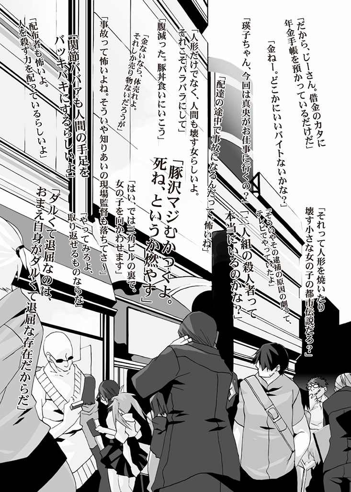

| TOY JOY POP (HJ文庫) | |
| 浅井ラボ | |
| (2006) | |



軽トラックが走る。
アクセルはほどほど。ステアリングも軽く。
走る車の左側に、 台 泰 大学のキャンパスが見えてきた。白い 壁 の向こうには、小さな 丘 に段々の校舎が並んでいる。ハンドルを切って、別の 敷 地 にあるサークル 棟 へと軽トラを走らせる。道路を 跨 いでまた白い壁。打ちっぱなしのコンクリ壁の古い建物が並ぶ。
搬入 用の大きな門から中に入る。アスファルトからコンクリの地面に乗り上げるときに、車体が小さく 揺 らいだ。門の 傍 の広場に学生や教員の車が停まっているので、そこに停車しよう。
軽トラのエンジンを切って駐車。キーを 抜 きつつ、左手でビニール 袋 を引っつかんで、ウチは外に出る。ドアを閉めると、野村酒店のロゴ。左手に 瓶 が四本入ったビニール袋を提げて、荷台に向かう。
敷地内では、学生たちが行き交っているのが見えた。ギターケースを背負った二人組の男女。 自 販 機の前でなにを買おうかと 喋 りあっている女の子たち。 木 陰 に座って本を読んでいるメガネの青年。
大学なんて、日本全国どこでもこんなものだろう。
固定してあったナイロンロープを解いて、黄色い箱を手前に引き寄せる。荷台からプラスチックの大きな箱を降ろすときに 屈 み、タオルをかませた 右 肩 にケースの底を 載 せる。
さすがに重いが、もう慣れた。立ち上がって歩き出す。自分の通う大学へ酒の配送に来るのも、変な気分やね。
荷物を担ぎ、袋を提げて、サークル棟の敷地を歩いていく。酒屋の 前 掛 けをした部外者に見える自分に向けて、学生たちの 奇 異 の視線が 刺 さる。だけど、すぐに興味を失ったように去っていく。
台泰大学には、文化系と体育会系と二つのサークル棟がある。４０００人も学生がいれば、サークル棟だけで二つ必要なのだろう。部活と名のつくものは完全に 避 けていたので、予想するしかない。左の文化系サークル棟へと足を向ける。文化系の棟は、 奥 の講堂に建物がくっついている感じ。
瓶を提げた手を胸元に上げる。ポケットに入れた説明の紙を指先でつまみ出す。注文を受けた店主の簡単な手書きの図では、演劇サークルは一番奥だった。構造からすると、講堂 脇 の倉庫をサークル部屋として使っているのだろう。棟の入り口を 潜 ると、奥まった場所にある階段を発見。足をかけて登っていく。エレベーターくらいつけて欲しいものだ。
上り下りする何人もの学生とすれ 違 いながら、ウチは階段を登っていった。一階と二階の間の 踊 り場で、足元を過ぎ去る 影 。
振 り向くと、 黒 猫 が 床 に立っていた。
黒猫は、台泰大学のアイドル。学生のつけた名前はエルヴィン。安易にエルヴィン・シュレディンガーから付けたらしいが、あれは 雌 猫 だ。
猫は 尾 を揺らし「にあ」と鳴いて体を 翻 す。黒い優美な体は階段を下りていった。猫を見送った後で階段を登り、二階に 到 着 した。
サークル棟の 廊 下 では、学生たちがいろいろ動いている。廊下に新聞紙を 敷 いて、上に置いたキャンバスを窓に向けて立てかけている。おそらく、アクリル絵の具が 乾 くのを少しでも早くしようとしているのだろう。軽音サークルの部室の前を通りすぎるときには、 懐 かしい60 年代後半のプログレッシブロックの音色が 溢 れていた。生まれる前の音楽なのに、なぜか懐かしいと感じてしまう。
いつの間にか立ち止まっていた。再び歩き出す。
ギターを担いだり、本を 抱 えて歩く学生たちの間を抜けていく。 突 き当たりのドアが目的地だろう。廊下側の窓からは、奥に続いているであろう講堂の右側面が見えた。
生徒の波を抜けると、ドアの前には大きな木の板に 刷 毛 を振るっている学生がいた。近づくとこちらに気づいて、刷毛のダンスが止まる。 塗 料 の灰色の 雫 が、敷いていた新聞紙に垂れた。
「注文された酒類を配達に来たんやけど、ここ、演劇サークルやろか？」
ウチが聞くと、相手は素直にうなずいてくれた。刷毛は街の 壁 を 描 いていたので、聞くまでもなかったかな。
「ありがとさん」と礼を言って、直角に方向 転 換 。開け放たれたドアには「演劇サークル〈演劇サークル〉倉庫」と書かれた貼り紙が、四方をセロテープで止められていた。
名前に納得できないながらも「失礼しまーす」と声をかけて中に入っていく。いきなり荷物の壁。ケースが大きいので、横向きのカニ歩きとなる。
入り口を抜けて、体の方向を90 度 戻 す。倉庫内には、 舞 台 背景らしいパネルが壁に立てかけてある。壁際の 棚 には、馬や 豚 のマスクが溢れているダンボールや衣装ケースが積み上げられていた。脇にはペンキ 缶 や刷毛や、作りかけの張りぼてのポストがあった。
荷物の壁に従って右折すると、何人かの部員が無心に台本を読みつつ、 傍 らを通りすぎていく。「どなたが責任者でしょう......」という問いかけの声は、すでに彼ら彼女らの背中にも届いていない。
講堂の裏に 隣 接 しているらしく、暗幕が垂れている右手の通路からは「犯人はこの中にいる」とか不自然に通る声が 響 いてくる。最後に「この連続殺人のトリックは、 双 子 入れ 替 えトリックなんだよ。つまり犯人はシャム 双 生 児 のおまえだ！」と聞こえたのは 幻 聴 だと思いたい。
ケースを担いで、酒入りの袋を提げたまま歩いていく。奥の窓際に人間がいたので、そちらを目指す。床にある荷物を避けて歩いていく。窓に面した机を 挟 んで、二人の人間が 椅 子 に座っていた。声をかけるなら、止まっている人間やろね。
「あの、注文を受けた酒類の配達なんですが、どこに置いておけば......」
「ちょっと待ってて」
メガネに 開 襟 シャツ。小太りのおっさんが、手を上げて制止してきた。メガネの奥の 瞳 は 真 剣 そのもので、手元を見つめていた。
向かい側に座っているのは、落ち着いた感じの白シャツに黒いスカートの女性だった。 光 沢 のある長い 髪 の毛は、頭のてっぺん付近で天使の輪を作っている。エキゾチックな顔立ちに、切れ長の瞳が印象的だった。
向かい合った二人の間には、机と 将 棋 の 盤 があった。 互 いに、それぞれの態度で９× ９の 升 目 を見つめている。
「 椎 菜 、手加減してよ、しまくってよ」
メガネのおっさんが言い、口元で 煙草 が 揺 れる。
「残念だけどフク、イタズラ電話続きで人への悪意に満ちた今の私は、あまり優しくできない」
「じゃあ 動 揺 しろよ」
「それ以前に飛車角金銀落ちでやってるだろう？ これ以上のハンデは人間には無理だ」
椎菜と呼ばれた女性の冷たい言葉。フクとかいう最初のおっさんが不敵に笑う。
「椎菜よ、よく考えてみなさい。 漫 画 だとここから主人公が逆転するのですよ？ えーい、王手」
「王手になっていない。こちらは角打ちで王手飛車取り。王 逃 げで桂馬、歩で 詰 み」
「ワープ、ワープチャンスをください！」
「フクはワープも二回使った。そして、三回ワープするときは、私が出した条件があっただろう？」
「ええと、耳と鼻が 触 れたらワープしてもいいんだよね？」
フクというおっさんは右耳を右手で、鼻を左手で 掴 んで、近づけようとしている。首を 傾 げて 頑 張 って、体も回っていく。椅子の上でおっさんが体を 捻 じる、前衛芸術のようなオブジェができる。あ、やっぱり転ぶ。巻きこまれるのがイヤなので、体を 捌 いて 避 ける。
「なんで俺を避ける」と男は 拗 ねたような顔で、 床 に丸まっている。
女性のほうは机の上に 頬 杖 をついて、床に転がる男の 巨 体 を 眺 めている。
「フク、そろそろ死ねば？」
「言葉って暴力だよね」
「なんにしろ、これで私の勝ちだ。今日のＳＩＭＩＲＩＡでの 奢 り確定」
「金品を 賭 けてはいけないと法律で決まっています！ 正義よ、レノーン！」
床から太い 腕 と丸々とした手を上げて、男が 叫 ぶ。
「自分から賭けを言い出しておいてすごい言い草だ。あなたはこちらのアホですか？ それともこちらのバカですか？」
「正直に言えば、鉄の 斧 を返してくれるとかないの？」
「頭に 刺 してなら返してやるが？」
「わー逆の意味で優しいね」
放っておけば、二人の会話はいつまでも続きそうだ。ウチは一歩前に出る。
「あの～、こちらのお話をしてもよろしいでしょうか？」
「あ、はいはい。いいよ、荷物はそこに置いておけば、って君、 凄 いね」
小太りのおっさん学生が、床からウチを見上げて 驚 き顔。メガネの 奥 の瞳が興味深そうに眺めてくる。
「まぁそういうバイトですから」
「女の子がビール 瓶 をケースごと 肩 に担ぐって、なかなか見られないよ。おまけに左手には 焼酎 まで四本提げているし」
フクとかいうおっさんが床に手をついて立ち上がり、椅子に座りなおす。
「すっごい力持ち。あと背高いね」
「たしかに。１７７か８センチくらいか？」
一方の女性が同意。男性的な 喋 りの女性だ。
ウチは空いている場所に、ビール瓶ごとケースを、焼酎四本を下ろす。肩から落ちたタオルを拾って、伝票を差し出す。
「じゃあ、伝票にサインをお願いしたいんですけど」
ウチの言葉に、椎菜とかいう女性とフクとかいう男性が顔を見合わせる。
「ああ、この後でやるとかいう、新入生たちとの川原飲み会で使う酒だね。 頼 んだのは、座長の 笹 岡 だろうな」
「私はＯＧだからサインはマズいな。フクは現役学生だけど半分 顧 問 みたいなものだから、サインしてもいいのか悪いのか」
女性が言葉を向けると、フクとかいう男がウチに笑顔。人差し指と薬指を折り曲げ、残りの指を立てた右手を前に出す、大昔のマンガで見たポーズ。
「俺は七回生だ。参ったか」
衝 撃 の単語が、ウチの脳裏にある人物像を思い出させる。
「ああ、あの伝説の七回生、たしか 福 沢 さんでしたっけ？」
「そうそれ。部外者が知っているって、もしかして俺のファン？ 俺に 憧 れすぎちゃってバイトまでして会いにきた？」
「いえ、単にここの学生だから知っています。バイトで宅配をしているだけなんですわ」
「な～んだ、残念無念」
福沢さんといえば、大学で友人があまりいないウチですら知っている。台泰演劇サークルの 脚 本 家 で、大学でも有名人の部類だ。
どちらかというと、 奇 行 で有名、ということは本人を前にしては言わないほうがいいやろうね。なんというか、女性教授を授業中に口説いたり、自分の脚本の劇の上演中に自ら乱入したりと、ムチャクチャな 噂 がある。
噂に 尾 ひれがついているのだろうが、ああ、これがあの福沢 礼 一 かと感心して見つめてしまう。外見は小太りのメガネの気の良さそうなおっさんにしか見えないが、中身がおかしいのだろう。
「いやん、あんまり見ないで。大衆の 嫉 妬 と悪意がボクチンをまた美しくしちゃう」
両手で 押 さえつつ、 頬 を染めるおっさん。あ、この人は感覚がおかしいとすぐに理解できた。 冗 談 の類なのだろうが、まったく初対面の他人相手に言える人間はどうだろう？
「で、何年の人？ 俺と同級生？」
「同級生だったら自殺しています。えー、二年の 鈴 木 奈 緒 美 っていいます」
「ええと、ナチュにひどい子だね。Ｓだろ？」
しまった、つい相手の口調に引きずられた。気にもせずに福沢 先 輩 が笑う。
「俺は静かな 怒 りで変身したスーパー大学生こと福沢礼一」と伝説の男が 挨 拶 。両手の人差し指を向かいの女性に向ける。「こっちはＯＧの 山 崎 椎菜。えー、今はこの台泰市なんて地方の出版社だか広告会社だかで、ショッボ～いミニコミ誌を作ってる 辛 気 臭 い女」
「よろしく、奈緒美さん」
山崎さんはウチへ視線を向けたまま、福沢先輩の右 脇 腹 へ左ロングフック。見事にレバーに入っている。 呻 く福沢先輩は無視して、とりあえずウチは山崎さんに頭を下げる。
「こちらも大変だが、そちらも大変そうだな」
山崎さんの眼はウチにそそがれていた。内面まで見通そうとするような、深い黒の 瞳 だった。
言葉の意味を聞こうとすると、背中からは大きな 歓 声 。
振 り返ると「おお、 名 探 偵 のマウントパンチ推理からの 腕 ひしぎ十字固めＱＥＤが出たーっ!! 犯人自白タップかー!? 」と、 舞 台 への通路から 響 く 謎 の声。
ウチの右横には、福沢先輩が立っていた。 顎 に右手を 添 えて、 誇 らしげな顔だった。
「ちなみに、演劇部の脚本は今でも俺が書いている。今のは 超 真本格ＳＦファンタジーミステリー活劇『特急８３２３、 津 軽 発星雲 帝 国 行き殺人事件～第二部、 江 戸 幕府復興編～』だよ」
「うわぁ、いかにも学生が 狙 って 滑 った内容が想像できる題名やね」
「鈴木さん。それは正直で正確すぎるな」
「椎菜、おまえそれ最初より 酷 いぞ」
「そうか？ みんな思っているけど言い出せないだけじゃないか？」
「ポン 酢 な 凡 人 どもには分からんのだよ。俺の 高 尚 なエログロはな」
「それが 低 俗 ってことだろう。なにその自信？ 三次元ではまだ見ぬ物質だから、閉じたひもが二十六次元で右か左まわり以外に振動して 湧 いてきているのか？」
「低俗って言うけどな。地方局だけど、ここのテレビでは、今でもヒマがあれば俺のあの劇を放映するよ。黒塗りのリムジンの中の和服の老人が『あの青年には見所がある』って言ってるはず」
「ああ、あの区長の劇ね。あれは運が悪かっただけだ」
「良かった、ではなく？」
ウチを 挟 んで言葉を交わす二人。強引にでも割りこまないと、ウチの用事なんて無視されつづけるだけ。
「えー、そろそろ受け取りサインをいただけますやろか？」
「あれれ？ その言葉とイントネーション、もしかして関西の人？」
頭の後ろから額へと右手を回す、ロマンホラーな少年マンガの第二部のようなポーズで、福沢先輩。
「え？ ああ分かります？」
「うん、実家は大阪だからね」福沢先輩のメガネの 奥 の瞳が、ウチの顔をジロジロと 眺 める。「どこかで見たことあるような気もするけど、どこだっけ？」
「それ、ナンパとしたらかなり古い手ですね」
「厳しいなぁ。そんなに早くバレたら、 辛 いよん」
「そのうち 刺 されるから、誰でも 口 説 く 癖 は 止 めたほうがいいぞ？」
福沢先輩が軽い調子でいい、向かいに立った山崎さんが苦笑する。
「さて受け取りだけなら、俺のほうでサインしても笹岡は文句言わないし支障もないだろ」
福沢先輩がウチの手から伝票を受け取り、体を折って窓際に手を 伸 ばす。ペン立てからボールペンを取って、伝票の上にサイン。意外に達者な字で「福沢礼一」と書いた。差し出された伝票を、ウチが受けとる。
「毎度あり」
一礼して、出口へと向かう。 扉 の地点で、こちらへ手を振っている福沢先輩が見えた。
「またね～。なんというか君とは運命を感じるよ。将来 結 婚 しそう！ うぉう、二人の間のベイビーの顔まで見える！ な、この子はまさか俺!? そういう時空トリック、タイムパラドクス！」
くだらなさにウチは苦笑するしかなかった。最後に山崎さんに頭を下げて、 廊 下 に出る。
廊下で、一呼吸。
福沢先輩は、おもしろいというより変な人だ。そして七年生なのも納得した。そらなかなか卒業できないわ。
後は階段を下りて、サークル 棟 の外に出る。
外はすでに夕日が 沈 もうとしている。
軽トラに 戻 る。さっさと帰って店番をすることにしよう。
あたしは 携 帯 を 畳 んだ。今日はもう 収 穫 なし。それに 疲 れた。目頭を 押 さえる。
結論。後からなにか 依 頼 があっても、明日に回そう。
コンビニの 駐 輪 場のフェンスに背中を預け、 鞄 からケースを出す。手鏡で見ながらコンタクトを外して、ケースに戻す。鞄から別のケースを取り出して、メガネをかける。
これでメガネっ 娘 の 藤 井 瑛 子 へと戻る。コンタクトで作るあたしは、明日まで使わない。
夏の日射しが降りそそぐコンビニの駐輪場。暑気を倍化させるような軽快なメロディ。
メールの着信音で携帯に再び目を落とす。題名は「瑛子ちゃんと 真 央 ちゃんへ」とあった。なにかと思えば、あたしが苦手な人からのものだった。仕方なく、携帯を開いて 液晶 画面に表示される文字を読む。
「はれはりゃ？ しごほなのえいほちゃん？」
隣 でコンクリの直方体、車輪停めに座っている 三 輪 真央が言った。棒アイスを 含 んだ、 薔 薇 の花弁のような 唇 が 妙 に 艶 かしい。アイスを 抜 くと、 溶 けた 乳 脂 肪 が唇から顎に垂れる。真央は「あ」と言いつつ、舌先で唇から 零 れたアイスを 舐 め取る。わざとね？ わざとですよね真央？
「誰から？ 仕事なの瑛子ちゃん？」
もう一回発音しなおす真央。茶色っぽい長い 髪 を、今日は頭の左右で結んでいる。どこのロリータだと思うが、 透 き 通 る 肌 、通った鼻筋、大きな 瞳 と、整っている真央の顔にはよく似合っている。あたしを見つめる右の眼元にあるホクロが、どこか 扇 情 的 だ。
「 違 う。例の福沢さんから。今日いつもの場所で、というメール」
携帯の液晶に表示されるメールを見せると、真央の 綺 麗 な目に 好 奇 心 が 溢 れ、白磁の 頬 が 緩 む。
「今日はどんなこと話すんだろうね」
「正直、あたしはまったく興味はないけどね」
携帯をまた畳んで、 腰 のケースに戻す。ストラップが小さな音をたてた。
「ああいう頭の悪い会話って苦手なのよ」
「瑛子ちゃんはごーりしゅぎしゃだもんね」
もちろん苦手な会話をしてくれた真央を無視し、あたしは歩き出す。後ろから真央がついてきて、あたしの横に出る。真央の瞳があたしの腰を眺めていた。
「あ、瑛子ちゃん、やっぱりまたストラップを変えたの？ カワイ～」
腰の携帯から下がっているのは、小さな女の子が丸まっているストラップ。
「ええ、あたしはこう見えて可愛いもの、綺麗なものが好きだからね」
「前のストラップはどうしたの？」
「失くした」
「え～、また？ 瑛子ちゃんてよく失したり壊したりするよね。意外とドジ？」
「おまえが言うな」
あたしが手を軽く上げると、真央が「きゃー」と 叫 んで 逃 げていった。
制服のチェックのスカートを 翻 し、シャツは清潔な白。 襟 元 の赤い色のリボンも 鮮 やかに。 紺 色 のハイソックスの先の 革 靴 で、街のアスファルトを 踏 む。
「瑛子ちゃん 怒 ってる？」
「怒っていない」
あたしが感情もこめずに言うと、小動物のような動きで真央が戻ってきた。あたしの 左 腕 に自分の右腕を 絡 めてくる。夏に女子高生の体温は熱いので 振 り 払 う。 途 端 に真央が頬を 膨 らませた。
「イジワル～。真央はこんなに瑛子ちゃんのことが好きなのに」
漫 画 みたいな表情を実際にするのが真央だ。
「それはどうも。だけど急がないと少し 遅 くなるわよ？」
「 遅 れたら困る。急ご急ご」
あたしと真央は待ち合わせ場所に向かう。
軽トラを野村酒店に 戻 して、店番を二時間。それでウチの今日の仕事は終わりだ。力仕事がウチには向いている。
しかし、やはり時給が安いので、そろそろ別の仕事を考えたほうが良さそうだ。時給が高いと言うとパチンコ屋くらいか。うーん、ウチはうるさい音とタバコの 煙 の 充 満 に 耐 えられるのだろうか？
貧しさの 哀 しみを 噛 みしめながら、帰り道を歩く。バイクが故障したので、今日は歩きだ。いつもと違う帰り道。夜は街に降り積もっているけど、家や電灯の灯りが 無 遠 慮 な光を振り 撒 いている。中台泰駅までは、商店街横の国道に沿って歩いて十分というところだ。故障したバイクも早く修理しなければならない。しかしあまり余計な金が使える状態でもない。
不景気なことを思っていると、街灯に照らされる道の左手に、ファミレスの建物が見えてきた。屋根に 掲 げられている看板には、オレンジに赤い 縁 取 り文字で「ＳＩＭＩＲＩＡ」とあった。この地方だけで展開しているチェーン店なんだろう。
ファミレスの前で男が両手を振っていた。横には女性が立っている。男は女性に熱心に説明か言い訳しているかのようだった。しかし大げさな動きやね。
一年ちょい前、大学進学のときから台泰市に住んでいるけど、変な人間とはどこにでもいるようだ。道路の反対側を歩いて、なるべく近寄らないように通り過ぎよう。
「だから、あの演劇の本質を観客たちは分かっていないんだって」
「分かるわけないし、分かりたくない。あんな 退 屈 な演劇は」
「退屈、俺がもっとも 嫌 う言葉！ 絶 滅 せよ！」
男が大きな 身 振 り手振りで説明し、女が 呆 れているといった 風 情 だ。ウチはサカサカ横を通りすぎていく。
「あれ？」
男の声が左から投げかけられた。自分のため、というより相手のために 厄 介 ごとに関わるのは 避 けたいので、ウチは無視して歩いていく。
「もしかして奈緒美ちゃん？」
聞き覚えのある声に足が止まる。視線を動かすと、ファミレスの入り口には小太りのメガネのおっさん。よく見ると福沢 先 輩 だった。とすると、やはり横にいるのは黒い服の冷ややかな顔の女性、山崎さんだった。
「俺たちは飲み会の帰り。で、そちらはなに？ 今帰るところ？」
両手の人差し指を向けてくるのは、福沢先輩。うわぁ、動作の一つ一つがウザい。そろそろ言ったほうがいいのかもしれへんね。
「ええ、まぁバイトが終わって」
だけどウチの舌が 紡 ぐのは無難な言葉。山崎さんが 髪 をかきあげる。二十代なのだが、 寡 婦 にしか見えないような色気がある。
「意外な再会、というほどでもないな。台泰大学に配達に来るくらいだから、近いところでバイトをしているのだろうし」
そういえば、二人が大学でやっていた 将 棋 で 賭 けていたのは、ＳＩＭＩＲＩＡの食事代だったかな。
「俺たち、これからご飯食べるけどいっしょにどうだね？」
「いえ、その......」
「フクは無視していい」
山崎さんが苦笑いしつつ、福沢先輩を手で遠くへ追いやる。
「今からフクサークルの活動 兼 夕食があるのだけど、けっこう楽しいぞ？」
「ええと、その〈フクサークル〉ってなんですか？」
「説明はしにくい。ネーミングの絶望的なセンスは無視して、活動内容は、なにもしないための集まり、というかなんというか......」
ウチの当然の問いに山崎さんが言葉を 濁 す。説明を止めて、ウチに複雑な笑みを投げかける。
「参加すれば分かる。今日はフクの 奢 りだから無料でご招待だ」
「賭けに勝った椎菜に奢るのは分かるけど、なぜに奈緒美ちゃんまで？」
「可愛い女の子に奢るのは 嫌 いか？」
「じゃあ椎菜は可愛くないし、女の子という年でもないから、奢るのなしにできない？」
「本当にムカつく男だ」
二人が 喋 っている間に考えた。福沢先輩は正直アレだけど、山崎さんはいい人っぽい。断るのもなんだし、うなずいておいた。タダ飯というのが 凄 い引力だったのかどうかは、自分でも考えたくない。
「じゃ決定」
すでに背を向けて歩く福沢先輩。仕方なく先輩の背に続いて、店内に入る。見回したかぎり、ほとんど客は入っていない。入り口では、オレンジと白の制服のウェイトレスが人数を聞いてきた。
福沢先輩が「先に知りあいが来ているから、メニューもいいよ」とウェイトレスに断る。こちらには「とりあえず全員ドリンクバーだけ注文でいい？」と向けてきたので、ウチと山崎さんがうなずく。
了 解 とばかりに頭を下げたウェイトレスの前を、三人で通りすぎていく。 途 中 でフリードリンクコーナーに寄る。グラスを手に取り、それぞれ福沢先輩がコーラ、山崎さんが鉄観音茶、ウチはアイスコーヒーを注いでいく。
「フク、 痩 せる気ないだろう？」
「ないね。男は外面より内面」
「非モテの言いそうなことだ。フクの内面こそたいしたことないだろうが」
「内心の自由と体型の自由は憲法で保障されていますから」
「後者は存在しないから、って 突 っこませるのがフクのイヤな所だな」
喋りながら歩いていく二人に、ウチも続く。意外と二人は仲がいいのかもしれない。本当に仲が悪かったら、仕事でもないかぎりいっしょにいないか。
窓際の 奥 の席は、少し引っこんでいるブースになっていた。
よくある向かいあわせ式のソファでなく、両側のソファのクッションがカーブしてつながり、七人は座れそうな広さがあった。座っているのは、二人の少女。
「あ、フクちゃんにザキさんだ。あれ？ もう一人の女の人？」
「鈴木奈緒美です。いちおう台泰大で福沢 先 輩 の後輩になるらしいです。よろしく」
「藤井瑛子ちゃんと三輪真央ちゃんは、近くの私立桐院高校の二年生同士」福沢さんが右側のソファに座りながら、二人を紹介していく。「ま、この二人は俺の演劇のファンになったことが 縁 で、このサークルに入った」
「真央だよ。名前で真央ちゃんって呼んでね。で、よろしく～奈緒美ちゃん」
可愛らしい顔をした少女が明るい笑顔で言った。いきなり人の 懐 に飛びこむ子だ。少女の長い茶色っぽい髪の毛は頭の左右で結ばれている。頭自体も小さい。 瞳 は大きく、右の目の下のホクロが可愛らしい。
まるで少女マンガの登場人物みたいな容姿をしていて、なかなか見ることもできないほどの美少女だ。眼福やね。
真央ちゃんの右手が横の少女の 脇 をつつく。本を読んでいる少女が顔を上げ、気だるげな表情を見せる。
「福沢さんの演劇が好きなのは真央だけ。無理やり 誘 われただけで、あたしは福沢さんのことはどうでもいい。それだけはっきりしておいてね、鈴木さん」
こちらが藤井瑛子ちゃんらしい。大人びた物言い。 肩 までの 髪 に、メガネの向こうにある半目の瞳。 華 のある真央ちゃんとは反対に、冷え冷えとした表情。見るからに優等生って感じの少女だった。
福沢先輩が窓際のコーナー席に 腰 をずらしていく。山崎さんがうながすので、ウチが右側の真ん中。通路側に山崎さんが座る。前入りしていた二人は、すでに食事を終えており、テーブルの上にケーキやサラダの一部が残っただけの皿が乗っていた。
「先に注文しておけば、フクの 退 屈 な話も 我 慢 できる」
山崎さんがメニューを 渡 してくれたので、机の上に広げて 眺 める。「このお店はドリアが美味いよ」と真央ちゃん。「決まった？」と福沢先輩の問いにうなずく。真央ちゃんがベルを 押 して、ウェイトレスを呼ぶ。全員がサクっと注文。
ウェイトレスが去ると、コーナー席で福沢先輩が司会者面をしていた。
「というわけで、台泰市サークルの会合です。わーわー。今、大観衆が 歓 呼 の 叫 びを上げております」
わくわくフェイスをしている真央ちゃん以外の、全員が興味を持っていない。瑛子ちゃんにいたっては、分厚い本を読んでいる。表紙には「会社四季報」とあった。女子高生が株価を見て楽しいんやろか？
福沢先輩は気にせず、ウチの方向へと顔を向ける。
「このサークルがなにをするかというと、別になにもしない～。ただ単に俺の気分でときどき集まって 喋 るだけ。以上説明終了」
「早っ、あとユルすぎ！」
ウチは思わず突っこむ。福沢先輩がウチに向かって、歯を見せて親指を立てる。ウザ～。
「瑛子ちゃん、今日の事件は？」
ソファに置いてあった新聞を取りつつ、福沢先輩が声をかける。
「なし。これ昨日の新聞ですから。 強 いて言えば、動物園でライオンの子供が生まれたり、カメラ店が 盗 難 にあったり。交通事故は二件。どちらも死者なし。四駅横の今市駅前のコンビニで強盗があって、犯人がすぐに 捕 まったのは大きめのニュースですかね」
「なんだその台泰市の平和さは」
福沢先輩が新聞を投げ捨てる。山崎さんが鉄観音茶をストローで吸う。
「平和だからこそ、こんな集まりができているのだろうが」
「そうだけどさ、たまにはもっとこう、雪山の 山 荘 とか絶海の 孤 島 の密室で連続殺人事件とか起こらないかね」
「台泰市には雪山も孤島もないな。ついでに言うと、因習にとらわれた 山 奥 の旧家とかもない。台泰市って商店街と新興住宅地がほとんどだからな」
山崎先輩が切って捨てた。
「つまらねー。なんだこの町。やはり俺の演劇くらいしかおもしろいものがないなぁ」
「それも別におもしろくない」
「じゃあ、俺らは俺らでてきとーにいきますか」
福沢先輩が座りなおす。
「では、第七十八回、僕にもし 超 能 力 があったら～」
アホな宣言。どうやらウチ以外には当たり前の光景らしく、誰も 驚 かない。
「まずは前回の続きからいうと、 透 視 能力だな」
福沢先輩のいきなり人間としてアウトな発言。
「透視能力さえあれば、もうあれだ、世界が一変。いつもの街がドキドキワンダーランド。そんな俺に美女が『どうしたんですか、 大 丈 夫 ですか？』と接近してきて、無修正動画のアップ。そこは 桃 源 郷 ですかそうですよ」
山崎さんがウチを見ていた。表情は真顔。
「フクって、本当に殺したくなるだろう？」
「え？ ええまぁ」
ウチは消極的ながらも賛成した。福沢 先 輩 は聞いてもいない。人の評価を無視ですか。
「瑛子ちゃんはなんの超能力がいい？ なんでもいいからお兄さんに言ってごらん？」
「言いかたがセクハラで問いが無意味すぎですが、どうしても答えなければならないなら、現金を生み出す原子配列 変 換 の超能力がいいでしょう」
「夢が負の方向にＭＯＲＩＭＯＲＩ！」
「元素自体を黄金に変換するようなことを望むより、よほど現実的ですよ」
「たとえばもっとあるでしょ、予知能力とかさぁ」
「株価の推移が分かる予知能力なら、欲しいかもしれません」
「なんでそこで宝くじの番号を予知したいとか言わないわけ？ 思考が可愛くないよ。もっとこう、瑛子ちゃんが実は好きな、あの笑顔の素敵な福沢さんの気持ちが分かる読心能力が欲しいとかさ」
「 紙 幣 の 福 沢 諭 吉 に付随する人々の心の動きなら知りたいですが、福沢さんの心はこの世でもっとも不必要な情報なので、知りたくありません」
女子高生に切って捨てられる。すごいね福沢先輩。めげずに動いた視線は山崎さんにロックオン。
「椎菜はなんの超能力がいい？」
「私もそれに巻きこまれるのか？」
山崎さんが小さく笑っていた。
「必要ない。フクはそのうち 煙草 と酒と過食で死ぬから」
「冷たい。しかも欲しい超能力の 用 途 が、俺の殺害限定かよ。奈緒美ちゃん、なんかあの 冷 酷 女に言ってあげて」
今気づいたけど、気安く奈緒美ちゃん呼ばわりですか。そんなに 不 愉 快 でもないので、 掩 護 の 要 請 も 愛想 笑いでスルー。
「真央ちゃん、言ってあげて、この 酷 い人たちに」
「プラスして言うことはないよ？」
「真央ちゃん、あのさ、もしかしてもしかすると『ああ、この人はバカなんだ』とか思ってる？」
「わぁ、フクちゃんってエスパーだね。大正解だよ」
真央ちゃんが本気なのか皮肉なのか、天然っぽい表面からは 窺 いしれない。福沢先輩が驚く。
「なっ、俺が必死に 隠 していたエスパーという正体を 見 抜 くということは......、もも、もしかして真央ちゃんもエスパー!? 」
「あっ、そうか、こんなささいな失敗から自分の正体がバレちゃうものだね」
福沢先輩と真央がお 互 いに両手の人差し指を差しあい、目と口を大きく開いたアメリカン驚き顔で固定。そしてアメリカン笑いをしている。なんだこの人たち。
「んーエスパーとして心を読む能力を発揮」福沢先輩が左手を額に当て、右手の人差し指を窓に向けた。「あそこにいる 猫 の考えていることを当てます」
窓の外、 植 え込みを囲むレンガの上に、 虎 縞 の猫が丸まっていた。
「んー、んー、あの猫は『にゃぎゃんぽ、にゃるにゃる』って思っています」
「なによそれ。意味分からないじゃない」
瑛子ちゃんが冷たい笑みを投げ捨てた。
「猫の思考を人間の言葉に 翻 訳 はできないよ。だから『にゃぎゃんぽ、にゃるにゃる』と聞こえたままを言っただけだニャン。おお、猫語がうつった」
福沢先輩が真面目な顔で、人が言ってはいけないことを言う。
「 嘘 だと思うなら猫に聞いてみな。『なにを考えているのですか？』ってね。ニャーニャー言っているけどあれ、『にゃぎゃんぽ、にゃるにゃる、って考えています』って言っているから」
「証明の方法がない、というわけですね。証明しようがないから、嘘だとは言えない。本当だとも分からないですけどね。この解説だけで疲れました」
瑛子ちゃんが納得、というより 諦 めの表情。福沢さんは 真 剣 な表情を 崩 さない。
「んー、んー、また来ましたよ。今度はあそこの二人の心が読めます」
福沢先輩の視線を、全員が追う。
窓際のこちらではなく、テーブルを三つ 挟 んだ 奥 の席にカップルが座っていた。 茶 髪 の男と、ソバージュの女。テーブルの上の食器を 脇 にやって、お互いに 両 肘 を乗せている。
二人は「愛しているよアイちゃん」「あたしもよユウキ君」と言ったきり、両手を 握 りあい、お互いを見つめあっていた。典型的なお互い以外見えていないカップル。ああ、批判的な思考になっているのは、ちょっと 羨 ましいからやろうね。
「来た来た、来ましたよ。彼と彼女の心の声がビンビンと。まずは女のほうから聞こえますよ」
互いに見つめあう男女に、福沢先輩のナレーションが 被 さる。
「この男って見れば見るほど不細工ね。人類か、と言われればギリでクロマニヨン人。あたしの視力が０・１でなくはっきり見えていたら直視で死んでいたかも。たいして 稼 ぎもないし、将来性もないし、次の男が見つかるまでのつなぎよね」
「この女が22 歳って嘘だろ。二十代後半か三十路だな。俺が 指 摘 したとしても『あなたを愛していたから本当のことを言い出せなくって』とか、逆に責めた俺が悪者の言い訳されるだろうしなぁ。でもまぁ 犯 らせてくれるからいいか。次の女までのつなぎだな」
「リアルにありそうやね」思わずウチは言ってしまった。福沢 先 輩 のナレーションがまたいかにも二人が出しそうな声だった。福沢先輩は得意げな笑顔。あ、演劇サークルの 脚 本 家 だけど、本人も役者として出たことあるらしいから、上手いのは当然かも。
「この女、 臭 いからファブリーズよりクソリーズをかけたいね。ウンコの 臭 いのほうがこの女より臭くないからな」
「クソリーズより、人をウンコにするウンコガの魔法をかけたいな。語尾が『ガ』なのでＦＦ的に効果は強め」
続く福沢先輩の解説を聞いて、ウチらのテーブルは苦笑。
「仲悪すぎるわ」
「恋愛時の会話ではないな、それ」
「ヒマですね。福沢さんも、それを聞いているあたしたちも」
ウチ、山崎さん、瑛子ちゃんとそれぞれの 突 っこみ。真央ちゃんだけが楽しんでいるらしく、テーブルの 縁 を 掴 んで身を乗り出している。
「じゃあさ、なんであの二人は手を握りあっているの？」
続きを期待する真央ちゃんの問い。また福沢先輩が手をかざし、 偽 テレパシー発動の構え。ええと、どう見ても 蛇 鶴 八 拳 の構えなのですが。
「あたしの家のおやつは 豚 足 でした。こんな手の感じの」
「裏グレイシー関節技 奥 義 、指ロッキー山脈！ 俺の指がロッキー山脈の 峰 を表現する必殺奥義！」
解説が変な方向にいった。ウチらの 思 惑 を知るわけもなく、カップルの顔が机の上を進んでいく。うわーうわーとウチの内心が言っていると、二人の 唇 が重なる。
また見つめあうのに合わせ、福沢先輩の解説。
「おお、この熱いキスで分かりました。あなたはアトランティスの光の七戦士の一人、 悪 魔 を愛した天使ことレティティシア 聖 神 姫 巫 女 。覚えていないのですか？ 俺は七戦士の一人としてあなたの横で戦った、聖神 天 魔 竜 翼 王 黒 影 騎 士 長 のジークフリートです」
解説したあと、福沢先輩が呼吸。一気に 吐 き出される言葉。
「おお、では残りの五戦士、大星母逆十字白羽聖大 熾 天 使 、ダークカオスファントムブラックケイオスミラージュファイターソルジャー、光と 闇 と 黄昏 の 魔 境 上の王、百戦百勝絶対完全無敵無敗の名将 覇 王 、 殺 戮 の 虐 殺 の神殺しの 癒 しの光の闇の 影 の 漆 黒 の 蒼 き 堕 天 使 勇者姫、を集めて、ラグナロクに備えましょう。そして 聖 剣 エクスカリバーと 神 槍 グングニルを手に入れ、大魔王ルシファーを 倒 すのです」
福沢先輩が一気に解説した。
「電波だ、電波カップルだ。しかも、なんかあいつらもテレパシーで会話している設定になっているし！」
「長いし重なりすぎの 称 号 を、 瞬 間 でよくも思いつくものだ」
ウチに続いて、山崎さんが笑う。瑛子ちゃんは冷静だった。
「しかし、けっこう安易な 名 称 が多いですし、名前や神話で各国混ざりすぎですね」
「瑛子ちゃん、安易な名称だったり各国が混ざったりしているのが分かるのは、けっこーオタクですよ？」
福沢先輩の指摘に瑛子ちゃんが 黙 りこむ。メガネの奥の 瞳 にはちょっとした敗北感。
「しかし、これで俺がエスパーであることを疑うものはいまい？」
たしかに。せっかく長い 妄 想 を語ってくれるのに、それを 邪 魔 する 無 粋 な人間もないだろう。あきらかにバカなんだけど、バカなことを言ってくれない男も 退 屈 やしね。
「じゃあ私の心を読んでみるがいい」
山崎さんが福沢先輩に顔を近づける。鼻の下を 伸 ばして口角を下げる。あきらかにおちょくった顔。この人、福沢先輩相手にだけ人格が 違 うような。
山崎さんの 艶 かしい唇が動く。福沢先輩がエスパーポーズで見つめている。
「ん？ もう一回」
福沢先輩が右手の人差し指を立て、山崎さんに要求。
「それは読心術じゃないです。すでに 読 唇 術 ですよ」
ウチの突っこみにも福沢先輩は元気。 挫 けない山崎さんが唇を広げて声を出さずに「し」、唇を縦に開いて「ね」と 繰 り返す。
「す、き？」
福沢先輩の大曲解。山崎さんが苦笑し、ソファに背を 戻 す。
「相変わらずフクは自由だな。思考から」
山崎さんの冷たい突っこみが入る。
「椎菜からご要望があったので、では第一回、フリーダムすぎて大会開幕！」
手を 叩 く福沢先輩。すごいテンション。本当にいったいどこからそのテンションが 湧 いてきているのやら。
「まずは俺から～。フリーダムすぎて背中から手を入れて、右の 腎 臓 を引っこ 抜 いちゃう！理由、二個あるから一個いらね！」
「理由になってないですよ。一個だけだと重病ですって」
いちおうウチも 突 っこんでおく。なんか自分が解説キャラになってきているのが分かる。
「わー、フリーダムすぎる。真央もフリーダムすぎて左の腎臓を引っこ抜いて、お地蔵さんに 供 える！ 健康になれますようにって願う！」
「お供えした時点で健康収支が大赤字よ。むしろ出血その他で死ぬわ」
本から目を 離 すことなく、瑛子ちゃんが突っこむ。あ、同じ突っこみキャラとして親近感が。
「真央ちゃん、後でこの一連の 顛 末 を16 ページ程度の読みきりロリエロ 漫 画 にして提出しなさい。読者アンケートが好評で 連 載 ですよ」
「は～い」
「どこにロリ、どこにエロ!? 」
「君たちそれぞれの胸の中に、それぞれのロリとエロがあるのさ」
「福沢 先 輩 の言うことなど、聞かなきゃ良かった」
「奈緒美ちゃんも慣れてきたね」
福沢先輩が言うように、なんか十数分で慣れてきた。
こういう集まりだとだいたい分かってきた。ようするに、ヒマな人たちが集まっているわけだ。福沢先輩がなんか言って、他の人が乗ったり乗らなかったりするのやろうね。
「あと、俺のことは福沢先輩って言わなくていいよ。フクちゃんとかフクさんとか、ダーリンとかそこらでいいし」
「最後の一つは 拒 否 して、慣れたらそのうち、ということで」
こういう答えも、福沢先輩の 振 りから言わせられているのは分かっているけど、会話はセットだから仕方ない。強引に人を巻きこむタイプの人なんだろう。
「でも、いきなりは呼びにくいですよ福沢先、」
福沢先輩が 咎 めるような目で見てきた。
「フクちゃんで 頼 めるかな？」
「ああ、はいはい、そのうちに呼ぶってことで許してください」
ウチは笑うしかない。福沢先輩は人間関係の 距 離 感を 嫌 う人らしい。いつかはニックネームにつきあってあげてもいいかなと思う。あ、内心で福沢先輩って呼んでいるうちはダメやね。
ユルい空気にさらにユルいダースベイダーのテーマが流れた。 携 帯 の着信音。真央ちゃんが携帯を取り出し、 眺 め、操作。着信が切れると、ポケットに戻した。
「出ないのか？」
「うん。苦手な人からの電話だから居留守～、着信拒否！」
真央ちゃんが明るく答える。
「そう、ならいいんだが」
山崎さんが鉄観音茶のカップを口に 含 む。
「私も今日電話番号を変えるまで変な電話がかかってきて、困っていた。最近 流 行 っているのか？」
福沢先輩以下、真央ちゃん瑛子ちゃんが 微 妙 な表情。顔を見あわせる三人。
「失礼しま～す」
その時、 間 延 びした声でウェイトレスが料理を持ってきてくれた。なんか早めだ。見回すと、客はウチらと、すでに注文済みのさっきのカップル、会社員、学校帰りの三人の学生たちだけだった。だとしたら早いのも分かるけど、この客入りで経営は 大 丈 夫 か？
ウチはドリアと和風ハンバーグのサラダセット。山崎さんは軽めにハニーアイスのみ。
福沢先輩が食べているのは、 天 丼 と果物セットだった。果物セットの中には、赤くて 薄 い三角柱っぽい果物、スイカが入っていた。天丼を食べながら、合間にスイカを 齧 るおっさん。
「天ぷらとスイカって食い合わせが悪いと思うのですが？」
瑛子ちゃんが問いかける。
「知ってる。今週は梅干とウナギ、 蟹 と氷水、キュウリと 油 揚 げと食い合わせの悪いコンビを食べることにより、敵対してきた両者を和解させようとしている。愛ゆえに」
「フクちゃんかっこいい」
真央ちゃんだけは本気でそう思っているようだ。いや、どこまでが本気でどこからがポーズなのかまだ分からないんやけどね。
「実際、食い合わせに科学的な毒性はないから大丈夫。ある 咳 止 め液にある咳止め液と 風 邪 薬 を足して、アルコールで割ると体調が悪くなったり、または死ぬこともあるとは聞いたことはあるがな」
山崎さんが解説し、福沢先輩は「へ～」とうなずく。真央ちゃんは感心しているように聞いていて、瑛子ちゃんはまったく興味なさそう。福沢先輩は、海老の天ぷらの 尻尾 まで齧っている。
「ぬう、では最初から敵対している関係などなく、ただ愛があったんだね。俺十個分のビタミンＩ」
「食い合わせで死ねばいいのにな。ついでにビタミンＩは、後で科学者によって存在が否定されたわ」
「あ、そうなの？」
「フクの劇で知ったことだけど？」
山崎さんが結論。福沢 先 輩 は過去を振り返らない人間らしい。若さってなんだ？
後はみんなでそれぞれの話を聞いた。ウチはあまり知りあいがいないので、久しぶりの会話は楽しかった。
会計を済ませて、ファミレスの外で解散となった。
「またね。俺らはだいたいこのファミレスのあそこの席にいるから、ヒマな時にはどうぞ」
福沢さんが陽気な声で言った。ウチは苦笑しつつ、うなずく。
家路に向かいつつ、ウチはちょっとだけ自らの足取りの軽さに気づいた。
ようこそタケタケさん
タケタケ∨ 女の子が欲しいんだけど？
Ａ∨ どんな子がお好みで？
タケタケ∨ 学生がいいな。フリーターやニートは× 。ロリっぽい子。デブやブスはＮＧ
Ａ∨ 我が社の基本はセックス二万円。アナルセックスは四万円。中出しは一万五千円追加。フェラは五千円。口内発射は五千円追加。精液飲むのは三千円。
タケタケ∨ 今どきそれは高くない？
Ａ∨ 我が社の女の子は 仕 込みもデブス一人もおらず、市内なら 迅 速 配達というものですから。
タケタケ∨ 了 解 。それでいいよ。では三十分後 大 杉 通り二丁目角の三角ビル裏 大 田 書店で。写メ送るよ
Ａ∨ お買い上げありがとうございます。ご希望通りの女の子を向かわせます。女の子のほうからお客様を写メで確認してお声をかけさせていただきます。
タケタケ∨ では～
タケタケさんが退出されました。
Ａ∨ あ
Ａ∨ あ
Ａ∨ ああ、全部壊したい。
Ａさんが退出されました。
「第九十五回、もしもファンタジー世界に行ったら～」
いつものファミレスのＳＩＭＩＲＩＡ。夜の 台 泰 市を映す窓際のブース席で、俺は宣言。
テーブルには新メンバーの 奈 緒 美 ちゃんに、いつもの 椎 菜 、 瑛 子 ちゃん、 真 央 ちゃんが 揃 っていた。
タンクトップの奈緒美ちゃんは、ドリアを 掬 ったスプーンを口に入れる。仕事を 抜 けてきたらしく、椎菜は白シャツに黒のタイトスカート。口に手を当てて 優 雅 な 欠伸 をした。
真央ちゃんは、今日は髪を 中 華 風 に頭の左右でお団子にしていた。手はストローの紙の 袋 を縮め、上に水を垂らして「シャクトリ虫」と言って遊んでいた。楽しいかそれ？
瑛子ちゃんは雑誌を読んでいる。表紙には「週刊列島報道」とあった。女子高生がゴシップ雑誌を読んでなにが楽しいのだろうか？
しかし俺は続けるよ、力のかぎりポンポコピーと。
「もしもファンタジー世界に行ったら～。なんか異世界に 召 喚 されて、実は自分が伝説の勇者の血筋だったと分かるとかいう安易な展開希望。で、自分のパーティーにはビキニ 鎧 の女戦士と気弱な 魔 法 使いの女の子と 控 えめな神官 娘 がいるといいです。で、さらに出てくる 姫 君 との間で自分が取りあいっこされることを専願一本」
「タイムトンネルが開いたかと思うくらい、古代のファンタジー来た！」
奈緒美ちゃんが 叫 び、全員が 呆 れ顔。負けません、勝つまでは。
「異世界に行くと、なんかこっちの世界の筋力があっちの世界だと倍増しちゃうとか、自分のオタク知識が役立つといいと思います。ほら、マンガやアニメに出てきた科学とか軍事とかの知識が 大 活 躍 するようなの」
「ああ、現代の知識が中世だと大活躍。黒色火薬の配合率を覚えていたってパターンだな。精製法や 硝 石 の見分けかたとか、 一 般 人がどーするのかと思うが」
椎菜の冷静な 突 っこみ。めげないのが俺。くじけないのが福沢さん。
「さらに言うと、ガンプラの作り方とか美少女フィギュアの知識でなんとかなるといい」
「 妄 想 出た！ いかにも、現実では 趣 味 でしかない知識が、異世界だと役立つと夢見ている感じが負のアグレッシブさやね！」
奈緒美ちゃん、ノリいいね。瑛子ちゃんが静かな声を出す。
「美少女フィギュアのなにが役立つのか想像不能なのですが？」
「そりゃあれだ、敵の女幹部のフィギュアを作って、それが 呪 いの人形と言うとか、スカート 覗 いて 恥 ずかしがらせるとかだ！」
「聞いてて恥ずかしいほどのベタベタさ。年号を二個 遡 らないと間に合わないよ、それ」
真央ちゃんが笑顔。おお、美少女だけは分かってくれる。
「大正!? 俺の思考って昭和の前の大正!? 」
俺は手をわきわきさせる。
「もう少し現実的路線のほうがいい？ ならミステリーにトランスフォーム！」
「 語 尾 がウザいです。後、手の場面 転 換 もウザいですね」
瑛子ちゃんが言い捨てた。トランスフォームと言ったとき、デストロンの 紋 章 を両手の指を組み合わせて作って、 一 瞬 でトランスフォーマーの紋章に変化させたのだ。これ、俺の 自 慢 のハンド芸のひとつなんだけど、かなり古いこれが場面転換だと分かるということは、瑛子ちゃんは本当に十代かね？
「お～い、誰か身近で起こった不思議を話せ。 名 探 偵 フクちゃんが、ロッキングチェア・ディティクティブで解決してやる。雪山の 山 荘 とか絶海の 孤 島 の密室殺人でなくていいから、とにかく人死にが出た話がいい。まずは文句つけた瑛子ちゃんから」
「そうですね」瑛子ちゃんが考えこむ。「小学校の時の先生が小六の生徒を 妊 娠 させたのがバレて、 懲 戒 免 職 。 首 吊 り自殺をしたことがありますね」
「それ、性犯罪だから。中高生ならともかく、小学生って 業 が深いわ！ あと警察が首吊りって言っているなら疑いようもないし！ 次、椎菜」
「ない。私は 退 屈 な毎日が大好きだからな」
椎菜が切り捨てる。しかし、 催 促 する俺の熱い視線に、仕方ないといった表情で 記 憶 をたどる。
「強いて言えば、中学生の時に、六件 隣 の家の 奥 さんが、暴力夫を包丁で 刺 して 実 刑 喰 らったことくらいか。あれは奥さんが 可哀想 だった」
「それ、犯人も 凶 器 も動機も結果も出ているから俺が推理しようがないじゃん！ 次、奈緒美ちゃん」
「えーと、現場でバイトしていたときに、他のおっさんに聞いた話だけど」奈緒美ちゃんが話をまとめる。「今月頭に現場 監 督 が落ちて亡くなったことかな。せっかく心臓病から快復して、奥さんの納豆弁当を毎日食べて元気だったのにね、って話です」
「殺人どころか事故にスケールダウンしているぞ、それ。関西人で話が広がらないって 珍 しいよ」
「いやその、関西人といっても 普 通 の人は普通ですし」
「俺のイメージと 違 うので 却 下 。次、真央ちゃん」
演説を 遮 るメロディアスな 携 帯 の着信音。真央ちゃんが自分の携帯を取り出し、出る。
しばし耳を 傾 けていたが、可愛らしい鼻の頭に 厭 わしさのシワを寄せる。真央ちゃんにしては珍しい表情だった。
真央ちゃんは「すいません、分かりません」と言って携帯を切った。携帯を操作して、 畳 み、ポケットに 戻 した。
「なに？」
「うん、間違い電話だよ。だって知らない人の電話番号だったし」
「またか？ 私にも間違い電話が多かったし、 流 行 っているのかもしれぬな」
椎菜はともかく、真央ちゃんは大変そうだ。瑛子ちゃんが同級生を 気 遣 うような表情。うん友情っていいね。だけど俺の内部には別の感情と、 閃 き。
「ナイスだ真央ちゃん。なんかそれミステリーっぽい！ 間違い電話だと思っていたものが、実はこれから起こる事件のヒントってわけですな！」
「起こってない事件は、事件とは言わないが？」
椎菜が冷めることを言う。
「ええと、だったらこれから起こる事件ではなく、すでに起こったか進行形の事件だということにします」
「だから、起こってもいない事件、起こったことに誰も気づかない事件だと、まず警察も探偵も呼ばれないと思うが？」
「む。それは困るなぁ」
「 福 沢 さんのロッキングチェア・ディティクティブは、三分持たずに 廃 業 やね」
奈緒美ちゃんが会話を片付けた。俺としてはなんか 誤 魔 化 された気分だ。いや、誰にということでもないんだけど。
俺は奈緒見ちゃんを見つめる。背の高い奈緒美ちゃんが、見つめる俺を不思議そうに見つめかえす。
そういや今、福沢 先 輩 から福沢さんに呼びかたが変わったよな。 指 摘 すると戻りそうなので、フクちゃんになるまで放置しておこう。そのうちダーリンに進化希望。
「それはともかく」
俺は話を戻す。椎菜の言うような退屈な結論になど、俺は負けない。俺の 妄 想 エンジンは常に全開全速前進なのだ。ウヒョ。
「これからは、著作権や印税で 儲 けることが必要だと思うよ」
俺の提案に、いつものファミレスがいつものように静まりかえる。
奈緒美ちゃんは完全無視して、ウーロン茶を飲んでいる。瑛子ちゃんは携帯を 眺 めている。椎菜にいたっては俺の耳元に顔を寄せ「お願いだから早く死んで」と 囁 き、また席に戻っていった。メンバーの食いつきの悪さが 凄 い。食わず 嫌 いはダメん。
「著作権や印税って、キャラグッズとか本とかの？」
向かい側の真央ちゃんだけが食いついてきてくれる。美少女だけが俺を理解してくれるらしい。他に話題もないので、他のメンバーも俺の話に耳を傾けるしかなくなったようだ。そういう注目って 哀 しいね。
「キャラクター作った人や 漫 画 家の収入ってすごいでしょ？ つまり広く小さく取るのが大事なわけ。そこで俺が考えたのは、みんなで、そういうことを上手くやってウハウハにならないかということなんだよ」
「リモコンない？ フクの息の根を止めるスイッチのあるリモコン、型の 拳 銃 」
椎菜は厳しすぎる。慣れたけど。
「で、俺ができることで著作権が発生しそうなものはなにかというと、特になにもない。 脚本 書いているけど 一 般 受けしねーし、絵も顔から下が 描 けない。そこでキャラクターグッズを考えようと思ったんだよ」
俺は声を小さくした。他のテーブルの客に、ビッグビジネスのチャンスを聞かれると大変だからね。ウニョルゲ。
「正直さ、黒ネズミとか電気ネズミとか、口なしの 猫 とか× の口のウサギとか、描くのに凄い技術は要らないでしょ？ いや俺に絵のことはよく分からないけど。つまりはアイディア勝負だと思われるわけ。そこが俺にも 挑 戦 できるところじゃないかと思うんだよ」
あれ？ いまだにこのステキ話題に誰も食いついてこない。全員がそれぞれ携帯を見たり、 隣 の人と話したりしている。瑛子ちゃんだけが携帯から目を 離 し、メガネの向こうから 真 剣 な目で見てくれている。
「キャラクタービジネスを 舐 めるな」
瑛子ちゃんの低い声、怖。
そういえば、クールに見える瑛子ちゃんだけど、可愛いものが大好きなのだ。よく見れば、携帯のストラップが今日はまた別の小さな天使の女の子に変わっている。
「具体的には？」
真剣な顔のまま、瑛子ちゃんが聞いてくる。下手な案など許さぬ、一匹の修羅の表情だった。
「今考える。ちょっと待って」
右手でポケットに 突 っ込んでいたペンを取り出し、左手でファミレスの紙ナプキンを取る。
「一世代前のキャラクターは知らないけど、今のキャラクターっていうのはようするに丸い 輪 郭 線に、顔の造作を中央に集めればいいんだよ。そして日常で見ているものを、ちょっとヒネって一要素をプラスするといい。 焦 げたパンだとか垂れたパンダとかそういう感じだろ？」
俺の手に 握 られてペンが、紙の表面を 叩 く。降りてこい、創作のミューズ。俺が 押 し 倒 してやるよ。
「まずはそうだ、アンパンがどうとかの作者って、朝起きてキッチンに出て、目を閉じて回転。で、目を開いて最初に目に入った物体に『～マン』とつけているとしか思えないよね。俺の推理では、 天 丼 なんとかあたりが 分 岐 点 だと思うんだ。あそこで作者はアレになった。それはともかく、あれは親近感を出す手法で見習いたい。みんなが知っている身近なものを利用するとして、まずはペットがいいね。動物といえば犬だな」
俺の手に握られたペンが感覚のままに動いていく。
「後は自分の深層心理に 触 れて、根源的なものを感覚的に表現していく。ようするに連想なんだよ......」
おお、ペン先が勝手に動いていく。これぞくりえいてぃぶ。神に 与 えられた才能の 発 露 。
「で、もう一人、カワイイ女の子が横にいると 萌 え補完になっていいかな......」
霊 感 に導かれるままに 描 き終わり、俺はペンと紙を投げ出した。表現とは心身を 過 酷 に 消 耗 するものなのだ。
紙に描かれたものを見て、全員が 微 妙 な顔をした。微妙という表現は白黒が分からず嫌いなんだけど、そうとしかいいようがない表情だった。
意を決したように、奈緒美ちゃんが絵を見ながら問いかけてくる。
「なんですそれ？ 犬が二足歩行したり指があるのは放置して、なんで親指と人差し指で輪を作っているわけ？ それに横の外国人みたいな女の子が手を差し出しているのは？」
「まず、犬のほうは〈 著 作 犬 〉という権利に 妙 にうるさい犬。横の女の子が〈ロイヤリ・ティー・ハラエちゃん〉という日米ハーフの女の子でこれまた......」
全員の眼が氷点下になり、説明を続けるブレイブがなくなった。瑛子ちゃんが 携 帯 を 腰 に 戻 した。可愛い少女のストラップが 揺 れる。
「もう一回言いますよ福沢さん」大きく息を 吐 いて、俺の顔を正面から見つめる黒い 瞳 。
「可愛い 綺 麗 なものを、キャラクタービジネスを、舐めるな」
超怖。思わず俺は、瑛子ちゃんの突き 刺 すような瞳から顔を 逸 らした。隣に座っている椎菜の顔が、また俺の耳元に寄ってくる。
「知ってるか？ これが意外に実現は難しいとされる、全員に 軽 蔑 されるって 状 況 だぞ？」
俺はソファに背を預ける。集中 砲 火 を受けている気分だ。俺の根源的なものが出すぎたようだ。ムニョルゲ。
ファミレスの伝票が目に入る。今日はわりと食べたので高い。そういえば、 笹 岡 も劇団の財政がかなり 逼 迫 しているって言っていたな。金に困っていない劇団なんて、ほとんどありはしない。
「ああ、 理 屈 や原理なんかどうでもいいから、金が 湧 いてこないかなぁ。俺の家の庭から」
「いや～ん、小学生以上が言ってはいけない超こわい発言～」
椎菜の真顔のギャル演技。 年 齢 を無視したおまえのほうが 怖 いわ。
「フクちゃんは金金言いすぎ」
真央ちゃんがなんか 怒 ったような表情。
「そらそうですよ。金はなんでも買える、現代の 魔 法 ですから」
「 違 うよ。お金で買えないものもあるよ」
「たとえば？」
俺は問いを投げてみる。
「心です」
真央ちゃんが豊かな胸に左手を当てて、真顔で言った。全員がちょっとアレな顔。代弁せねばなるまい。
「チミが美少女でなければ、リキ・チョウシュウでスコーピオン・デス・ロックをかけているか、 監 獄 ロックをかけながらマサ 斉 藤 とヒロ斉藤の見分けかたを超説教するところですよ」
「え～、その、ウチは逆に可愛いと思うよ」
奈緒美ちゃんが補足。しかし瑛子ちゃんだけは、メガネの 奥 で 寂 しい目をしていた。なぜに？
店内に流れる 緩 い 環境 音楽。俺は 閃 く。
「あー、歌という手もあるな。あれも金になる」
背を起こして、思考。
「なんだかカラオケで歌いやすいようにして、タイアップを目指そう」
「真央、歌は得意だよ」
「よし行け」
息を吸って、真央ちゃんが歌いはじめる。
「ルルピョロ、ルルピョロ♪ 心に値段はつかない♪ 」真央ちゃんが、ストローの 先 端 で机の上の 水 滴 を 突 っつきつつ歌う。「ルルピョロ、ルルピョロ♪ 心は誰にも買えない♪ 」
「その妙に脳波を乱す歌は止めてほしい」
椎菜は苦笑する。
「では有益なマメ知識を織り交ぜつつ、女 一 匹 、ザキさんのために心をこめて歌います」
真央ちゃんが演歌歌手に見えてきました。
「ルルピョロ、ルルピョロ♪ フクちゃんは三日前、駅の男子トイレにザキさんの携帯番号と『ホモ達 募 集 。当方 女 装 癖 と 痴 漢 プレイ愛好癖あり。テレフォンセックス＆お 触 り希望』と書いて、写メ 貼 ったとか言ってましたルルピョロ、ルルピョロ♪ 」
「止めようよ、そんな歌！ 人を傷つけるような歌は！ 歌ってあれだよ、そう、もっと人間を優しく 癒 すものだから！ そうだと聞いたから！」
俺は正義の心を思い出して 叫 んだ。真央ちゃんが 復 讐 してきたようだが、これはヤバイ。
マイ 左 肩 に重み。黒いマニキュアの五本の指。置かれていた手に続く 腕 の先には、椎菜の冷たい横顔。五指は 鉤 爪 となって、俺の肩の肉に食いこんでいた。
「......いいから続けろ真央。なぜだか今 突 然 に真実の歌を 聴 きたくなってきた」
「はーい♪ ルルピョロ、ルルピョロ♪ 『椎菜はスカしているけど実はアホだから気づかない。明日の 将 棋 で勝って 奢 らせるための精神 攻 撃 だ』って言ってたルルピョロ、ルルピョロ♪ 」
「フク、ちょっと外に行かないか？」
椎菜が俺に視線を向けて言った。俺は首を左右に 振 って 拒 否 した。椎菜の左手が、机に備えつけのストローをまとめて十数本 抜 き取る。右手が俺の肩を強く 掴 む。
「フク、ちょっと外に行くぞ」
言葉の意味が変わりましたよ？ 俺は拒否したのだが、椎菜の力によって連行されていく。ファミレスの通路を引きずられていく。誰も助けてくれないでやんの。
さすがにイタ電 誘 導 はやりすぎだし、椎菜の説教でも受けるか。
「あの二人、実は仲いいよね」とか「本当はつきあっているんじゃないの？」とか言っていると十分経過。
山 崎 さんと福沢さんがファミレスのみんなの待つ席へと 帰 還 してきた。ウチの眼に飛びこむのは、山崎さんに引かれる福沢さんの顔色の異常。
「どうしたんですか、なんか福沢さんの顔が青いというか緑っぽいのですが？」
「聞かないほうがいい。お日様の当たる世界をまだ歩きたいのなら、知らないほうがいいこともある」
山崎さんは清らかな笑顔で 怖 いことを言った。
「ね？ フク？」
山崎さんが左手に残っていたストローを振る。
「ひい、ストロー怖い、ストロー怖い！ ストローの 悪 魔 が四次元方向から俺を殺しにくる！ 俺の体と心はそんな所で曲がらないから！ 山口式可動を人体に応用しちゃダメだから！ ノーモア・リアルリボルティック！」
ストローに 脅 えて、福沢さんが両手を 掲 げて顔を 防 御 。 震 える肩。福沢さんのいつもの 冗 談 ではないようだった。
「なに、があったのですか？ たかがストローでそこまで 恐 怖 するって、 普 通 ありえないですよ!? 」
「 乙 女 の秘密だ」
椎菜さんは 唇 の前に左手の人差し指を当てた。右手から投げ捨てられた福沢さんが、席に力なく 倒 れていく。山崎さん本人は立ったままで時計を 眺 める。
「じゃ、私は仕事に 戻 る」
「こんな休みの夜から？」
「そ、晩 御 飯 で抜けただけだ」
山崎さんが去っていく。
「台泰ジャーナルはだいたいＯＫ。このままいつものように健康記事は進めて」
社長が言い 渡 す。記事チェックを受けているのだけど、いつもながらの受け答えになる。
私は社長の言葉を待つ。社長は事務 椅 子 の上で体を 捻 り、 原 稿 の残りを見つめる。仕事が 延 びているので、 頬 が 不 機 嫌 に 歪 んでいる。
「で、こっちはやり直し。なんというか、市政と最近の事故についての、こことここの写真と 添 えた解説がなんか気に入らない。批判や難しい主題とかは要らない。読んでいるのはヒマなおばさんか半ボケの老人だけなんだから。写真と解説 差 し 替 え、え～明日朝十時 締 めでよろしくできる？」
「はい」と返事するのは、私。 同 僚 の座る椅子の後ろを 縫 うように通って、自分の席に戻る。
「社長発の案だし、昨日レイアウトまで 詰 めたのではないですか？」という質問は飲みこんで。
平社員の立場では強く出られない。
社員やバイトの間では、 腰 を痛めつける 拷 問 具と評判の安いＰＣチェアに座る。つけっぱなしにしていたＰＣ画面に目を 凝 らす。最初の原稿が丸ごと修正を 喰 らうのはいつものことだ。
この出版会社というか事務所で、私が担当しているのは、市からの注文にいい顔をするために作られているだけのミニコミ誌。おそらく、 薄 らハゲの社長が市の広報部とコネがあって、 下 請 けを回してもらっている仕事だろう。
毎年春先に、無計画にアスファルトを 掘 っては 埋 め、掘っては埋める公共事業と同じだろう。私たちのような人間を養うために税金が投入されて、無意味な仕事をしているだけ。
台泰市などという地方都市に、毎月毎月伝えるべきニュースも行事もない。もうなんでもいいから誌面を埋めてくれればいい、だけど 手 抜 きがバレないようにということが至上命題なだけだ。
写真を 撮 って、解説とお知らせ書いて、校正して、ＤＰＥに起こして、入稿するだけで、この仕事に基本的に意味はない。地域のニュースとか行事とか、いったい誰が読んでいるのだろうか？ ついでにそれをミニコミ誌にしたりメルマガにしてどうするのか？
思考で遊んでいても、手は勝手にキーボードを 叩 く。テンプレに従って機械的にまとめていくだけなので、いくらでもできる。最初の少し 突 っこんだ視線の原稿を、当たり障りのない常識的意見と事実の 羅 列 に 変 換 していくだけだ。頭を使わない原稿であればあるほど、社長チェックは通るのだ。分かっていても、最初は考えたものを提出する。そして先ほどのようなやり取りをする。
「山崎さん、山崎さん」
椅子を動かして声を 掛 けてきたのは、バイトの 沖 山 。まだ二年目なのに、おじさんのように 疲 れた顔をしており、ワイシャツの 襟 も 萎 れている。
「なんだ？」
「僕もやり直しなんですが、資料取りにいきます？」
多少迷ったけど、うなずいて席を立つ。二人して部屋を出る。 廊 下 を歩いて、資料室というか倉庫の 扉 を 華 麗 にスルーして、廊下の 自 販 機で 缶 コーヒーを買う。待っていた沖山とともに、 奥 の扉を 抜 ける。
雑居ビルの裏手、非常階段には筒型の金属の灰皿が立っているだけの 喫 煙 コーナー。
階段の 踊 り場から、夜の台泰市が 見 渡 せる。沖山は扉を 潜 った時点でマイセに火を付けており、 紫 煙 を 吐 き出す。私は缶コーヒーを開けて、口に 含 む。
沖山が 煙草 の箱を 握 ると、マイルドセブンの字がつぶれる。続いて、再び紫煙と長い息を吐き出す。疲れた顔の沖山がやると、 煙 として物質化した 溜 め息にも見えた。
「吸いすぎると早死にするぞ」
「いいんですよ、人生に楽しいことないし」
沖山が灰を灰皿に落とす。
「最近のビルって、喫煙場所を外に作りますよね。なんででしょ？」
「火災保険の関係でそうするらしい。中身を禁煙にすると保険料が安くなるので、煙草は外でということになっている」
「これは差別だよ、 迫 害 だよ、アウシュビッツだよ！」沖山は煙草を手に握る。「武器を手に取り、 軍 靴 の音を 響 かせ、独裁政権を打倒せねばならない。ああ、なぜ人は 憎 しみ争うのか。レノーン！」
両手で 筒 を作って夜の街へと 叫 ぶ沖山。おおげさな言葉は、どこかで聞いたことある台詞だった。
「いやその、 普 通 に言ってもつまらないので、テレビでやってた劇の真似ですよ」
「知っている」
フクが 脚 本 を書いた劇で見たことがあるシーンだった。あの男はあれでロマンチストなのだ。
フクは小デブで眼鏡だけど、不愉快なだけの人物でもない。寡黙で流行に左右されないのがカッコイイなどという 勘 違 いはしていない。女の子を楽しませるように喋り行動し、 根 拠 はないが自信満々で、 押 しが強くてマメだ。
しかし、不思議と私はフクに 惹 かれない。 嫌 いではないし、いい人間だとは思うが、 寝 ようとは思わない。おそらく、生きかたと思考が 違 いすぎるのだ。観察対象としてはおもしろいので、長年ともにいるのだろう。
しかし身近にフクの劇の観客がいるとは 驚 きだった。地方局といえど、テレビの 影 響 力 は 侮 れない。
私は二口めのコーヒーを口に含む。沖山が煙草を口から 離 す。
「この仕事、驚くほどつまらないですねえ？」
「かもしれないな」
即 答 するしかなかった。 後 輩 に向かって「この仕事はつまらない」と同意するわけにもいかない。
私としては 退 屈 を愛している。愛も 憎 悪 も暴力も殺人も喜劇も悲劇もない、 平 穏 な日々を愛している。平和な日々のために少しだけ動くのだけは許されると思っている。
「あんなミニコミ誌やメルマガになんの意味があるのかな、ってたまに考えません？」
「今は、沖山もなにかを考えるのか、と考えている」
「ひどいなぁ」
沖山が苦笑する。私は少しだけ 微笑 む。
「たとえば、私が担当している健康記事は一定の層には役だっている、と考えるしかない」
「そうですか？ 薬との食べ合わせがどうとか、ドライアイスの二酸化炭素がどうとか誰に向けているのか不明ですよ？」
「必要な人に、だ」
私は手を街に向けて回してみる。
「この広い台泰市のどこかには、必要とする人がいるかもしれない」
沖山は疑問の表情のまま、煙草の煙を吐いた。
「広い、ですかね。そんな確率論で満足できます？」
「確率は少ない。でも確実に誰かには届く」
まるでフクの言い草だ。
続く言葉は絶えた。二人とも動こうとはしなかった。
やる気もない仕事に 戻 るのは、あと五分してからでいいだろう。
どうせ今日は 徹 夜 になる。明日はもう死にそうに疲れているだろう。
授業 終了 のチャイムと同時に、女子や男子の喋り声が教室に 溢 れる。
あたしは窓際の 椅 子 に横向きに 腰 を降ろし、教室の光景を 眺 めている。
「ダルいなぁ。で、放課後は飯に行く？」「模試の結果、リアルに最悪」「オンラインでの順位が下がるとイヤだから、今日はパス」「この前の男とはどうなったの？ あの 骸 骨 みたいに 痩 せた」「人形女の話って知ってる？」「Ｋｉｓｓはベースメイク用にいいよね」「カードの当たりが出ない。誰だよ、三星堂が出やすいって言ったやつ！」「二人組の殺人者はいると思う？」「それがさー、正常位のときに骨が腰に当たるから、今日は 痣 になっているのよ」「知らないよ。関節ババァのほうが 怖 いって」「金ね～、マジで金ね～。 携 帯 止まったらマジ死ぬ～」「金澤ババァのこと？」「ダルすぎる。誰か死ねよ」
改めて見てみると、学校というのは不思議な場所だと思う。
会社とは違って、それぞれ進学か就職か無職か引きこもりかと、進路がまったく違う人間が 狭 い教室に 詰 めこまれている。 趣 味 の集まりとは違って、試験やら校則やらがある。学校はどちらの集まりとも言えない感じがする。
生徒たちは教室に集まってはいるけど、ただそれだけの集団だ。それでも私立だから差がないほうだろう。地方都市の公立学校は完全にヤンキーと勉強っ子で二極化している。
学校は共生ではなく競争の場だ。考えを学ぶ場ではなく、今の制度が正しいとすることを教えこむ場、自分で自分を社会的動物にする場所だ。
社会がそうであるように、学校は身分制社会だ。ほら、教室の 隅 では、 田 尾 が、ニヤニヤ笑う 池 永 や 大 沼 や 木 塚 に 絡 まれている。三人は席に座った田尾の頭を 触 り、田尾の 鞄 についているアニメキャラのストラップを 摘 み上げて笑っている。田尾は 愛想 笑いを 浮 かべて、自分はイジメられていないと周囲にアピールし、自尊心を保とうとしている。どう見てもイジメられているので、ムダなアピールだ。周囲もスルーするだけである。
あたりまえだけど、田尾を助けに入る委員長も熱血漢もいない。メガネデブオタの田尾には、ネットならともかくリアルでの友人がいない。田尾の頭の中身を 透 視 すると、 超 能 力 か 魔 法 か霊能力かで池永や大沼や木塚を殺したいだろう。
だけど、そんなことは現実には起こらない。歴史が証明している。
あたしも助けにいかない。解決できないし、口出して余計にイジメられた田尾に 逆 恨 みされるのもイヤだ。第一、田尾があたしに差し出せる代価がない。 払 えないくせに、他人になにかを求められても困る。世界はギブ・アンド・テイク。いつか君が誰かに差し出せる代価を持ち、バカみたいだけど 真 剣 にならざるを得ない、この現代社会の身分制度の上に立つしかないね。
「周囲のやつらってうるさいし、くだらないイジメをするだけ。まったく気に入らない」
後ろの席の西田 叶 子 がつぶやく。あたしにだけ聞こえる程度の声のボリューム。
「そう思わない？」
下 膨 れの顔。意地悪な光を宿した 瞳 。
「そうかもね」
言葉とは裏腹に、あたしは内心でせせら笑う。単に 流 行 りものに乗れないだけでしょうが、と。実際、西田の外見と思考は誰にも好まれていない。男にも一生 縁 がないだろう。 薄 ら寒い人生ですこと。ああ、知りあいに同じようなマイコって女がいるわね。
西田はあたしを正面から眺めた。メガネ 越 しに見ても、可愛いもの好きのあたしには 辛 いビジュアル。西田の両親というキャラデザイナーに文句を言いたい。
「瑛子ちゃんは話していて楽でいいわ」
「それはどうも」
西田の価値観は分かりやすい。自分より成績や人間的なものが下と思っている人間とは話したくないが、上の人間とも話したくない。自分のプライドとやらが傷つくからだ。だから、自分よりちょっと下の成績のあたしなら、話し相手として 我 慢 してやってもいい、ということでしょう。あたしと同じく、ちょっと高めの学校の受験をした人間なら、この手の底の浅い人間を死ぬほど見てきたでしょうね。
あたしとしても、クラス内身分制度の最下層に近い西田とそんなに仲がいいフリをしたくない。楽にいい成績をとるための授業ノートを貸してもらうお返しとして、お義理程度に話すだけだ。西田程度の存在に、下の名前を呼ばれる 不 愉 快 さもなんとか我慢しよう。
ひとつ 尋 ねたくなった。
「西田さん、ゲームとかしたことある？」
「ないけど、それがなにか？」
「なんとなくそんな感じかと思っただけ。ほら、西田さんて成績良くて 真 面 目 だから」
あたしのお世辞に、疑問を忘れた西田が 頬 を 緩 める。
やっぱりね。あたしが「西田叶子の人生ゲーム」のプレイヤーなら、さまざまな能力値からグッドエンディングは不可能と判断。リセットをかけて最初からやり直す。本人だけがどうにかクリアーできると思っているが、 傍 から見ればバッドエンドに直行するフラグばかり立てている。
西田のほうも、あたしのことをそう思っているだろう。
あたしたちの年代では、内心では 互 いに互いを 憎 んでいる。だけど、仲がいいフリをして群れを作り、お互いを守るしかない。自分を 孤 高 だと 思 いこんでいるけど、本当は 孤 独 なだけの西田や田尾になりたくなければ、そうするしかない。上辺だけ仲良くしていればいい。どうせそれぞれ卒業後は進路がまったく 違 うので、今の自分など通過点だ。
だけど、あたしという 袋 小 路 がどこに行けるかは分からない。そういう意味では、あたしは西田や田尾より救いがない。
向かいの空いた男子の席に、チェックの短いスカートが 舞 い降りる。長い 髪 、大きな目。真央だった。
「瑛子ちゃん、元気？」
横の西田が 途 端 に苦い顔をして、席から立つ。
「あれ？ 西田さん行っちゃうの？」
「トイレよ」
言いつつ西田が教室の出口に向かう。クラスメイトの間を 縫 って、西田が教室から出ていった。
西田にしてみれば、受験に有利な理数系の成績だけ 抜 群 なくせに、他の勉強がダメ。だけど、 綺 麗 で可愛い真央なんて 嫌 悪 の対象でしかないのだろう。あたしは真央に視線を向けて、小さく 微笑 む。
「助かったわ」
「いえいえ、瑛子ちゃんのためだからね」
西田があまり話しかけてこないように、休み時間ごとにあたしの 隣 に座るように真央に 頼 んでいる。真央自身はその意味が分かっていないようだけど。
真央は西田の 記 憶 などデリートしたような明るい顔で、体の向きをあたしに向ける。
「今日の放課後、真央はどうしたらいいの？」
「そうね。放課後は先に街へ行っていてくれると助かる。あたしは点数 稼 ぎのために委員会に出ておかないと。仕事があればまたメールで 連 絡 するわ」
「はーい、じゃあ自由行動で 了 解 」
真央の背後を男子のブレザー姿が通りすぎていき、止まった。あたしは首を回して、 壁 に 貼 ってある時間割で次の授業を確認。古典だった。そういえば、現代の社会生活に必要な経済や法律、対人関係や具体的な 避 妊 方法などの授業をしないのはなぜだろう？ そういう授業こそ、西田や田尾、池永や大沼や木塚のような人間に 必 須 なのに。
「あ、 藤 井 さんいいかな？」
声をかけてきたのは男子の、たしか 大 友 だ。顔はそこそこ良くて、成績 優 秀 なスポーツマン。証券マンの家庭。妹が一人。データ以上には興味がないので、応対は 儀 礼 程度に。
「 大 丈 夫 よ。それで、なにか用かしら？」
「あのさ、課題をまだ提出していない人に 催 促 してこいって、現国の 前 田 が言ってて」
「あ、あれね。再提出が明日までだから放置していたわ」
大友の顔があたしの横に向けられた。
「良かったら 三 輪 さんも今出せる？」
「真央はダメ～。国語は分からんです。なんですかあの、作者の思っていることと、言いたいと思われることを分けて書けって課題は？」
「前者は 締 め切り、後者は 原 稿 料 を上げろ、という答えになるんじゃない？」
「違うと思う。なんとなくだけど、本文で言いたいと思われることを言うには、やっぱり本文と同じ分量がいるよ。でないと作者の意味ないし。センセがやらせたいと思っていることを考えることが、真央にはとんちに思えるよ。センセは足利の将軍様だよ」
敬礼してみせる真央。いちいち動作がアホだが、外見が可愛くて綺麗なので、なにをやっても様になる。
「俺は早くにやっちゃってさ」
大友の声が少し上ずっている。
「瑛子ちゃんのを写すからいいよ。大友君に 迷 惑 かけたくないし」
「あ、そうなんだ」
大友は所在なさげに数秒ほど立っていた。
「そういえば小学生のときのことってたまに思い出さない？」
意味不明な話題 転 換 に、真央が首を 傾 げる。
「んー？ 瑛子ちゃんのことくらいしかないなぁ。でもなんで？」
「いや、意味はないけど」
恥 じ入ったように、大友が言葉を切る。そして「じゃ」とだけ言って、教室の 雑 踏 に去っていった。
真央は頭が悪い。一方で 鋭 い。真央は数学と物理だけは学年でも常に三番以内だ。あとは 全 滅 。どうにも意味とか 曖 昧 なものがあまり分からないらしい。逆に見れば、自分の規準がはっきりとしており、なにが自分にとって好きで 嫌 いで、必要か必要でないかと 一 瞬 で判断できるとも言える。
「福沢さんの言うことが、ちょっとだけ分かったかな」
あたしの 唇 から、頭の悪そうな感想が 漏 れてしまった。真央が大友の背中を見ていた。
「わざわざ 喋 りかけてくるって、大友君って瑛子ちゃんに気があるのかな」
「真央って、そういうところは 鈍 いわね」あたしは大友の後ろ姿を 眺 める。「急がない課題の話をまずあたしにして、次に真央。で、自分はできているとサラッと言ったつもりで、写すならどうぞという分かりやすい 誘 い。真央に好意があることがバレバレじゃない」
「うわ、男の子ってめんどくさい～」
真央が机の上に上半身を 倒 し、ネコのように背を 伸 ばす。 襟 から 覗 くうなじが、 染 み一つない白磁の 肌 が 綺 麗 だった。あたしは視線を 逸 らして、言葉を投げる。
「男の子の幸せって難しいみたいよ」
ふと疑問が 湧 いてくる。
「そういえば真央の幸せ、夢ってなにかある？」
「カワイクてしゃーわせなお 嫁 さん」
「あ、そ」
即 答 されたら 黙 るしかない。真央の大きな 瞳 には、 興 味 津 々 な 好 奇 心 の光。
「それこそ瑛子ちゃんの夢ってなに？」
「そうね、楽しく生きる、かしらね」
「わーファジー。具体的じゃないよ～」
「今はあなたでも見て過ごせば楽しいわね」
「真央を見てて楽しい？」
「楽しいわ。動物か人形みたいで」
あたしは 欠伸 をする。六時限目のチャイムがちょうど鳴った。
真央が席に 戻 っていく。
あたしは教科書を開いて、周囲への 盾 を作る。机の中からポートフォリオを半分出して、授業の合間に見ていく。やはりアメリカ市場の下落に連動した景気減速感が市場を支配しているので、今現在の中期的には株より 債 権 のほうが良さそうだ。
視線の 端 で、机の中から 携 帯 のストラップが覗いていた。可愛らしい天使の少女の姿をデフォルメしたストラップだった。
あたしは見ないふりをした。
だけど 我 慢 ができなかった。机の中にストラップごと携帯を入れた。両手で少女を 握 り、プラスチックの 感 触 を確かめる。次に力を入れて、少女の似姿を割る。
硬 い音は 予 鈴 のチャイムの音に 紛 れて、誰にも聞こえなかった。
粉々になったプラスチックの 欠片 を、あたしは手の中で楽しむ。
学校が終わったので、真央は今日も街で遊んでいた。
お友だちの 海 ちゃんといっしょに、台泰市のメインストリートをぶらぶらとしている。フラグショップで服を見たり、 香 水 の試供品を付けあったりしてみた。今日はお金がないので見るだけ。真央たちの世代はあまりブランド品に必死になったりしない。それは上の世代の話だよね。
真央が話し、海ちゃんは聞いて歩く感じ。一時間歩くと 疲 れた。で、アーケードの広場を目指す。
噴 水 と水路が交差する赤いレンガの広場。周りはアイス屋さんやクレープ屋さんがあって、ランチや買い食いをするような場所だ。鉄のテーブルと 椅 子 が空いていたので、二人で座る。
真央は海ちゃんにさっそく話の続きをする。
「でね、瑛子ちゃんは 凄 いんだよ。すっごく頭いいし、可愛いんだよ」
「真央って瑛子って子のことだけ話すのよね」
海ちゃんが 呆 れたような顔をしている。
「だって幼なじみだし。本当に好きなんだもの」
どうやったら瑛子ちゃんの良さを、真央の好きな気持ちを分かってもらえるのか、真央の言語能力では 上 手 く言葉にできない。もうちょっとでできそう、って思っても実際にできるわけじゃない。現実に具体化できるかどうかが、大事だと思う。できそうだと思っても、具体化できないものは存在しないと思う。そうしないと話ができない。
思考に音楽が割りこむ。真央お気に入りのインディーズバンド、ＺＡＫＡＺＡＫＡのメロディ。 慌 ててカバンから携帯を取り出す。見てみると瑛子ちゃんの携帯のひとつからのメールだった。幼なじみの瑛子ちゃんからメールが来ると 嬉 しい。
だけど、当然のように題名は「仕事の問い合わせ」だった。
遊びの 誘 いのメールだったらよかったのにな、とちょっとブルー入るのは無視して、見てみる。
内容は「今から三十分後、西台泰通りの丸ビルの前で待ち合わせ。できる？」って文字。真央は今楽しいのでちょっと迷った。
だけど、真央にメールが届くということは、瑛子ちゃんは都合のつく女の子がいなくて困っている。だとしたら、真央が助けないといけないと思う。
今までそうだったように、これからも真央は瑛子ちゃんを助けるのだ。
「用事？」
「うん。ちょっと待ってね」
海ちゃんへの返事をしつつ、真央はＯＫのメールをペチペポと打って、返信。アーケード下の広場の席でそわそわして待っていると、十秒後に返信。メールには余計な単語がなく「マミ、西台泰通りの丸ビルの前」と、 添 付 された中年のサラリーマンっぽい人の顔写真。真央は椅子から立ち上がる。海ちゃんが 驚 いた顔で真央を見上げている。真央は笑顔。
「じゃあね海ちゃん。急用だからまた明日ね」
「え？ ええ」
海ちゃんと別れて、真央は走り出す。アーケードを 抜 けて、近くの駅に急いで向かう。駅のロッカーを探して、 着 替 えの 詰 まったバッグを取り出す。
えっへん。こんなことが何回かあったので、真央は着替えを駅に 常 駐 させているのです。バッグを 抱 えて、近くの百貨店の二階のトイレに 駆 けこむ。急ぎすぎて 頬 と 肩 を 壁 にぶつけちゃった。個室のなかで大急ぎで制服を 脱 いで、お仕事着に着替える。
服はミッシェルクランにやや 飽 きてきたし、ｏｎｅ＊ｗａｙはＴＰＯが違うので、甘めのＬＩＺ ＬＩＳＡにバンドゥーオクトーブルを重ねてアレンジでいいかな。
１００均のピンで止めて、 髪 型 をロリっぽくする。メイクする前にライスパワーで 保 湿 。相手の好みがあるので、アイシャドウは軽めにＡＵＮＡＳＵＩ。これはノリと発色が良くて時間が経っても落ちないうえに、なくなりにくいのでお気に入り。コスメデコルテの下地に、シャネルのプレストパウダー。Ｍａｃのスタジオパーフェクトで、さっきぶつけて赤くなったところを消す。なかなか化粧落ちしないし自然に見えるのだ。で、ピエヌのリップグロス。マニキュアはこれまた１００均のやつを 塗 って、トイレの温風機で乾かして決まり。
ブランドの記号ごっこというより、実用性のメイク。素ッピンが好きだという男の人のために、素に見えるように、でも少し化粧っ気があるナチュラルメイクという高等技だけど、真央はこの歳でできたりする。むしろいつの世も女の子にとっては当たり前のスキルかな。
時計を見ると、走っていっても間に合わない。トイレから出て、待ち合わせ場所に向かう 途 中 でタクシーを拾って飛び乗る。
「急いで、西台泰通りの丸ビルの前へお願いします」
タクシーの運転手さんが車を飛ばす。
窓の外では街が飛び去っていく。
真央の痛みも 寂 しさも飛び去っていったらいいのにな。
到 着 してタクシーの運転手さんにお金を 払 う。降りるときに「お仕事、ガンバッテください。真央もガンバりますので」と言うと、運転手さんは不思議そうな顔をしていた。
待ち合わせ場所には、写真どおりの男の人がいた。近寄っていくと、向こうも気づく。 携 帯 と真央の顔を見比べている。向こうの人にも真央の顔写真が送られているはずだから、確認しているのだろう。
「マミちゃん？」
小太りの男の人が眼鏡の 奥 で、 強 張 った笑顔で問いかけてくる。真央は迷ったけど「マミ」というのがこの場での自分の名前だと思い出して、コックリコとうなずく。未だに、一定期間で名前が変わるのに慣れない。
男の人が安全そうなので、瑛子ちゃんに「会ったよ」とメールを返しておく。さらに返信で近くのビジネスホテルとその部屋番号を示されたので、男の人に指示する。
男の人と並んで歩き、タクシーに今度は二人で乗る。十分ほど走って、ホテルの前で降りる。また「お仕事、ガンバッテください」と言うと、今度の運転手さんも不思議そうな顔をしていた。
ホテル前の道路、さっそく男の人は中へと入ろうとするが、真央は笑顔で待っている。男の人は 戸 惑 っていたけど、やっと思い出してくれたようだ。
男の人が入っていき、ホテル前で真央は待つ。瑛子ちゃんが予約したホテルに、男の人が予約したフリをして入る。んで、後から真央がホテルに入って、 宿 泊 客のような顔をして歩く。受付横の 自 販 機でコーラを買う。冷たい 缶 を 握 ったままエレベーターに入る。今回は八〇五なので八階のボタンをポチっとな。
ラブホやブティックホテルだと、知りあいに会ったり、従業員さんやお 掃 除 の人の 盗 撮 の危険がある。昼間のビジネスホテルって、実は人がほとんどいないから 大 丈 夫 。またビジネスホテルだと防音がそんなにないので、あまり変なことをされない。
瑛子ちゃんが言うには、場所をこちらが決めて 誘 導 するので、変な仲間の待ち 伏 せなどの危険を 避 けやすいのだそうな。一回一回別名義で予約しなければならないのは 面 倒 だそうだけど、やっぱり瑛子ちゃんは女の子の安全を考えてくれている。
とか思っているうちに八階についた。角部屋の八〇五号室に到着した。キーは開いているだろうけど、いちおう金属の 扉 を 叩 いて合図をする。扉が開いて、さっきの男の人が 出 迎 える。ネクタイを外す姿のまま、ドアを開けてきた。うーん 余 裕 がないのかな？
とりあえず中に入って、コーラを机の上に置く。お客さんからお金を受け取って、また瑛子ちゃんに確認メール。んで、お仕事。
お仕事といっても、真央は服を脱ぐだけ。あとはお客さんが勝手にしてくれたり指示を出してくれる。
お客さんと交代でシャワーを浴びて、ベッドの 端 に座り、いよいよ真央のお仕事開始。
なんでなのかは知らないけど、男の人は自分のものを 咥 えさせるのが好きだ。今回も注文されたので、真央は咥えることになる。ベッドの端に座ったまま、立っている相手のものに右手を 添 える。相手が平均的な身長だと、口の高さが上すぎることになるので、本当は 床 に座ってやったほうがいい。この場合は前かがみになって、口に 含 む。
今回のお客さんの大きさは 普 通 。口の中に当てたり、舌で 舐 めあげたり、吸ったりすると、大きく 硬 くなっていく。変なの。
ひたすら口と手を動かす。お客さんが要求するので、たまに上を見上げたりする。これもよく要求されるのだけど、咥えている真央と視線が合ってなにがおもしろいのかな？真央が集中できなくなるだけだと思うけど、お客さんが好きならいいか。
十分くらい顔を前後させると、男の人が 前 屈 みになった。そして射精。一気に出るのではなく、小分けにして出るのは毎回不思議。 跳 ねるように出るよね。
青 臭 いし苦いけど、飲む。喉を通るときもやっぱり青臭いし苦い。男の人にジェスチャーで飲み物を要求する。真央が買ってきて置いたコーラのことだと気づき、持ってきてくれる。 蓋 を開けるのももどかしく、口に含む。飲む。
心配そうな顔をしている男の人に、大丈夫だよのサインとして笑顔を向ける。
最初のカレシにフェラのときの精液は飲むものだと言われたので、なんか習慣になっている。それ以上に、飲むと男の人が喜んでくれるのが真央には 嬉 しい。最初のカレシはどこいったか知らないけどね。バカっぽい人だったから死んでいるのかも。
その後はお客さんにベッドに押し 倒 された。足を広げられた体勢って、真央は解剖されるカエルみたいだと思うのだけど、男の人はよくコーフンできるよね。しかも下からのアングルの顔って、あんまり 綺 麗 に見えるものではないとも思う。
男の人が真央の首筋や胸にキスしてくる。 跡 が残らないように、 上 手 くしてほしいな。右手が動いて、真央の足の間を 触 ってくる。真央は 濡 れやすいのだ。
なんだか嬉しそうな顔をして、男の人が自分のものに手を添えて入れようとしてくる。真央はいつものことなので、フルスマイルで「ゴムつけてくださいね」とお願い。
男の人がうなずいて、真央から 離 れる。床に落ちた自分のスラックスのポケットを探る。財布からゴムを出して、上を向いている自分のものに装着していく。
マヌケな時間が流れる。真央は見ないフリ。
可愛がっている最中に、気づかないように装着してくれればいいのだけどね。
どのお客さんも真央が確認しなかったら生で入れたがる。もしくは、女の子を可愛がりながら装着するという器用さがないのかもしれない。ゴマカされるとイヤなので、瑛子ちゃんがどこかから手に入れたピルを飲んでいるけどね。
男の人がベッドに 戻 り、 覆 いかぶさってくると同時に、 挿 入 してくる。本当はもうちょっと可愛がってもらって、その間に入れてほしいのだけど、やはり不器用だったみたい。
男の人が覆いかぶさって、いっしょうけんめー 腰 を 振 っている。おざなりに「可愛いよ」とか「素敵だ」とか言ってくれているけど、たぶんお世辞なんだろうな、と思う。それでも 褒 めてくれないお客さんよりはマシなので、ちょっとだけ嬉しくなる。お客さんの背中に手を回して、 抱 きしめてあげる。 恋 人 っぽいことをしたのが良かったのか、男の人の動きが早くなる。
それから長い時間がかかったけど、深く入ってきて、ケーレンするような動きになる。
「出、るよ！」
いちいち報告してくれなくてもいいけど、射精しているらしい。ゴム 越 しでは射精されているのかどうかもよく分からない。べつに好きでもない人に生で射精してほしいとは思わないけど、それでも射精されると、真央は体だけでも男の人に好かれているんだなって思える。
男の人が喜んでくれて、瑛子ちゃんも喜んでくれて、真央も嬉しい。そしていろんな男の人とセックスできて、ちょっと楽しい。真央は射精後の男の人が覆いかぶさって、重さと体温を感じるのが好きだ。その上お金がもらえちゃう。
これが仕事なら楽しいものだけど、女の子には 旬 の時間というのがあるから、そのうちできなくなるだろうなぁと思った。真央がやりたくても、真央の体がいつまでも男の人の好意をつなぎとめることを許してくれない。
男の人の体重のかけかたが下手なのか、ちょっと重くなってきた。真央の表情に痛いのが出ちゃったのか、男の人が左にずれてくれた。
お客さんの左手が 伸 びて、真央の 髪 を 撫 でてくれる。
「良かったよ」
男の人が言った。
「良かったですよ」
ベッドの上で相手に向き直りつつ、真央も返しておく。
実際の真央の評価では、平均よりちょっと下の40 点のお客だったけどね。
好感がもてるのは、金 払 いがいいのと、要求以外の余計なことをあまり 喋 らないこと。真央を上手く褒めたり、おもしろいお喋りができないのなら無言でセックスしてくれたほうがいい。
逆に評価を下げたのは、顔がカバみたいだし、体はブヨブヨ。あれも硬くないし、セックスも上手くない。精液もマズい。でもまぁ、この人より 酷 いし下手な人がいくらでもいたので、40 点ということだよ。
女の子同士で、ネット上でのサイトでお客さんの評価 交 換 をしているのだけど、そこではそう書くつもり。男の人は女の子に点数をつけたがるけど、自分にも点数が、しかもより厳しくつけられていることに気づかない。男の人って女の子からの評価に 無 頓 着 だよね。
たぶんお客を選ぶタイプの女の子は、この人からの指名はやんわり 拒 否 するだろうなぁ。たぶん前の子もそんな評価をして、女の子たちが拒否して、あまりえり好みしない真央に出番が回ってきたのだろう。
お金がもらえるといっても、女の子にだって好みはあるのだ。お客さんにしても、女の子が気に入って仮想恋人みたいな感じにしたほうが喜ぶしね。
......とか考えている間に、真央は 行 為 の後を処理している。あそこを 拭 いたティッシュペーパーをゴミ箱へポイ。
黙 っている真央に、男の人が 焦 ったような表情を見せた。
「ほらその、実は僕は 大 企 業 の社員なんだよ、ほらよくＣＭに出ているあそこの」
男の人が話題を振ってくる。真央は黙っている。考えを 邪 魔 されるのは好きじゃない。
「本当だって」真央が黙っているのを、疑っているのだと 勘 違 い。男の人がベッドから 抜 け出し、スラックスのポケットに手を入れる。戻ってきた手にはなんか顔写真のあるパスポートみたいなのが 握 られていた。「ほら、社員証だけど本当でしょ？」
さっきまで少しだけあった、バーチャルな 恋 愛 感情のようなものが消えた。お客は気づかずに喋りつづける。
「いちおう一流大学、君が知っているような大学を出て、この企業に入ったんだ。いちおう花形部署で責任ある立場を任されている。それで......」
後はもう聞かなかった。真央は耳から入る会話を脳に届く前に 遮 断 した。
素の人間が出るセックスの場で、そんな 肩 書 きやら上げ底なんか見せられてもゲンナリするだけ。男の人は勘違いしているのだけど、男の強さ、地位や 名 誉 や財産なんて、女の子からすれば利用するだけのものにしか見えない。
「そんな上げ底を 排 除 した、素の自分ってどうなのよ？」って一回聞いてみたい気もする。
でも、それは禁句なんだろうなぁ。素の自分なんて男の人はなかなか見せてくれない。たぶん、自信がないから、他人の評価で自分を語っちゃうんだと思うし。
頭の良くない真央に底が見切られるって時点で、たぶんこのお客に救いはない。たまにこの手のお客に会うことだけは、この仕事のイヤな所かな。
真央のお客評価も急降下。今の段階では、はっきりいって10 点以下の客だった。今もいろいろな自分の仕事の重要さや出会った有名な人、本人そのもの以外のことの話をしている。真央にはな～んにも興味がない話題。喋りつづけるお客に「 凄 いですね」とか言っておく。お客の会話内容はすでにノイズにしか思えない。
そのうち真央に「君はこんなことをしていてどういうつもりだ。 親 御 さんが泣くぞ」とか言い出すだろうね。本当に言い出しそうな会話の流れになってきそうだったので決断。
てきとーな時間になったので「時間が来たので」と言ってシャワーに向かう。服を着て、 挨 拶 する。
「ではまたお願いします」
男の人はなんとも満足そうにうなずいた。他の女の子はともかく、真央の「また」はないと思うけどね。軽い足取りで部屋を出る。
ドアの外で 欠伸 。口を手で 押 さえる。ポケットから 携 帯 を取り出して、瑛子ちゃんに 終 了 のメール 連 絡 をする。送信完了の文字を見たあと、携帯を 畳 んでポケットに 戻 す。
エレベーターに向かって歩く。 到 着 したエレベーターが下っていく間、考えた。
コンビニか銀行に寄って、お客の代金の一部を瑛子ちゃんの 架 空 口座に 振 り込む。コンビニはミニストップにしよう。あそこのソフトクリームが食べたいなと思った。
ＺＡＫＡＺＡＫＡのメロディで、瑛子ちゃんからメール。
「お 疲 れ様」だって。わーい。
こんな一言で喜ぶ真央って単純なのかな？ 真央は忘れることにした。
「ぎゃああああああ、大変だ大変だよう」
席に向かってくる 福 沢 さんの 叫 び声。ファミレスの店員も慣れたもので、誰も注目しない。あたしとしてもどうでもいい。
あたしは売りの収支を携帯で確認。ま、こんなものだろうとしておく。参加している女の子たちと 違 って、運営しているあたしはお金が第一目標というわけでもない。
「相変わらずうるさい男だな」
山 崎 さんが 疲 労 した顔で言った。出版社の仕事が 徹 夜 で大変だったそうで、いつもより疲れて見える。
めげずに福沢さんが 巨 体 を席に 滑 りこませる。太い 腕 の先の分厚い手を振って、話題を振る。
「聞いて聞いて、振られた、このモテ王がフラれたですよ」
「また？ 今度はどんな人なの？」
真 央 が 無 邪 気 に聞く。
「知らない。俺の車に 駐 禁 取っていた、カワイイ婦警さん。四時間 頑 張 ったけどフラれた」
「相変わらず節操がないな。燃料はなんだ？」
「ピュアラブ。もしくは弾数無制限のコスモガン方式」
山崎さんの疲れを滲ませた問いに、福沢さんは平然と言った。福沢さんはソファの上で手足を回転。右手を右上方へと高く 掲 げて、号令を発する。
「というわけで、第３８９３次福沢 礼 一 恋 愛 大戦敗北につき、玉音放送式 慰 霊 会を始めます。軍司令部発令、前線各指揮官においては、各自存分に俺を 慰 めることを特別に許可する。俺の前に 機 甲 おっぱい師団を並べよ」
ファミレスでふんぞり返る福沢さん。新しく入った 鈴 木 さんとかいう背の高い女性が苦笑する。
「３８９３回って、福沢さんは大げさな人やね」
「いや、それはほぼ事実。出会った女性のほとんどをフクは口説く」山崎さんがストローでウーロン茶を飲み、続けた。「ちなみに 瑛 子 も真央もそれぞれ２００回は口説かれている。私にいたっては大学で会うたびに言われていたので１０００回以上だ」
あたしは目で 肯 定 。真央はおもしろそうに「そうだよ～」と朗らかな声。
「何回かは上手くいったけど、続かない。で、フリダシに戻る。１００回も声をかければドラマですら結婚しているというのに、 凄 いだろう？」
「たしかに凄いバイタリティ」
「ああ、思い出した。いいものがあるから、失恋の痛みはこれですっきりすれば？」
山崎さんの手が 伸 びてきて、紙包みを差し出す。福沢さんが開く。出てきたのは 裸 の女性が笑顔のアダルトなＤＶＤ。
「すごく適切だけど、なんか違う！」
「男の子は難しいな」
山崎さんの 神 妙 な顔。この人がいったいなにを考えているのか、たまに分からない。
「ザキさん、なんでそんなの持っているの？」
真央の疑問。山崎さんの 腰 の横に安置された 紙 袋 から、他のＤＶＤのパッケージが 覗 いている。全部で十本くらいはありそうだ。
「職場の 後 輩 に金を貸したが、まだ返せないと言うから質草をとった。お金を返せないと、これや他のＤＶＤは質流れする」
山崎さんが笑って続けた。
「なんでも彼のご神体らしい。男は多神教だな」
「ぬお。それは否定できない」福沢さんが太い腕を掲げて言葉を 防 御 。「だがそれは、永遠の女神を探すための修行なのだ。シャドーボクシングなんだよ」
「ああ、一人で頑張るってわけか」
「 椎 菜 、俺と二人で頑張っていこう。目指すは世界チャンピオン！」
ソファに 片 膝 を立てて、右手でファミレスの外を指差して福沢さんが言い放つ。指先にはいつかの 茶 髪 の男とソバージュの女のカップルがいて「アイちゃん、あの 漬 物 は 上 手 くできたね」「うん、ユウキ君のために料理を頑張っていたから」と言って、キスをしていた。
「間違えた。あれは目指したくない」
福沢さんの右手が上を向く。そして左手は 傍 らの山崎さんの 肩 を 抱 いていたが、ストローを差し出されると飛び 退 く。顔には本物の 恐 怖 。ストロー恐怖症とは、なかなか見られないトラウマになったようだ。
山崎さんがストローをグラスに 戻 す。
「恋愛やセックスは 趣 味 のひとつにしかすぎないと言うけど、それでもあえてしたほうがいいと思う。特に男の子はな」
「そうなの？」
真央が顔だけを上げてくる。
「一部の天才かとんでもない 優 秀 さがある男ならともかく、９９・９％たる 普 通 の男は誰からも注目されない。男は自分より上の男には 嫉 妬 するので、 褒 めてくれる存在など母親と 恋 人 以外にはいない。大人になると、親ですら息子への興味が消える。消去法で、褒めてくれる人間など恋人だけになるわけだ」
山崎さんは、たまにこういうことを言う。
「なんか男の人って大変そうだね。真央は女の子で良かった。おシャレしてお 化 粧 していれば、誰でも褒めてくれるもの。わーい幸せ」
素直に言う真央にあたしは複雑な思いを抱く。たしかに真央は可愛いので、それだけでいいのだろう。
「じゃ、俺は俺の幸せを探すよ」
いつの間にか福沢さんが復活していた。
「福沢さんは元気やね。なんか異常に」
鈴木さんの小さな笑い。いつもならここで反論するはずの福沢さんが 黙 っていた。身を乗り出して、なにかを言おうとして、またソファに背を戻す。なんだか変だけど、ストロー恐怖症の 後 遺 症 だろうか？
しかし、福沢さんの顔には似合わない 憂 愁 が張りついていた。
「元気にでもしていないと 退 屈 なんだよ」
福沢さんの声が、テーブルに 響 く。メガネの 奥 の 瞳 は、 寂 しげな色を 孕 んでいた。
「この世界では、俺にはなにも起こらない。密室殺人を 名 探 偵 が解決、なんて歴史上一回も起こったことがない。我々地球人が現に存在するし、ドレイク方程式に従えば宇宙人はどこかにいるだろう。だけど、宇宙人はバカでもないかぎり、おっそろしく大変な恒星間航行をしてまで、この地球に来る理由がない。未だに宇宙人が地球に来ていない事実が、超光速航法は不可能である証明だろう。 幽 霊 も存在しない。幽霊からは 触 れられて、こちらからは触れられないって、どんな物質でできてんだよ。これもダメだ。 超 能 力 も 魔 法 も霊能力も、この世界の 端 から端まで存在しない。ロリ顔巨乳美少女は降ってこない。居候したり 押 しかけ 女 房 になったりしない。さらにいうと、俺を取りあったりもしない。普通の女ですら俺を取りあわないのに、美女や美少女が取りあうわけもない。不在の証明はできないけど、バカでもないかぎり、それらの可能性が自分の現実にあるなんて考えない」
「はいはーい、ロリ顔巨乳美少女はここにいますよ」
真央が手を上げる。自分で言うところが真央の凄いところかもしれない。
「ええと、真央ちゃんは何回俺をフリました？」
「えっへん、２１８回っ！」
真央が笑い、福沢さんが残念顔となった。山崎さんが息を 吐 く。
「退屈なら、映画やドラマ、 漫 画 やアニメやゲームや小説や演劇でも見ていれば？ さらに言うと世界には現実の恋愛や戦争や喜劇や悲劇が、いくらでも転がっているぞ」
「それってどこまでも他人の話だろう？ 俺と、俺の現実とは関係ない、どこかの他人の 既 製 品 の話。それはそれでいい。だけど、そこに俺が参加できないのが寂しいんだよ」
そこで福沢さんが決意の顔。
「俺は世界に参加したいんだ。どんな形であっても。そしてこの退屈を殺したい」
あたしや真央は 呆 気 に取られていた。あたしたちにはよく分からない論理だ。しかし、鈴木さんが福沢さんを見つめていた。彼女だけが言葉の意味を 噛 みしめていた。
「おまえは、いつまでもそんなことを言っているのだな」
全員に聞こえるように山崎さんが言った。どこか 疲 労 した声だった。
ずっと無言でいるあたしは考えていた。
自分がなにを欲するのかを理解することは、実は難しい。先ほどのアダルトＤＶＤにしても、単に女が 裸 だったらいいやという、自分が分かっていない男がしそうな雑多なチョイスだった。
山崎さんが言ったように、 好 き 嫌 いや 性 癖 というものは、 徹 底 的 に考えていけば、これだけは 譲 れないということと、これだけはＮＧということがあるはず。一生に一回は、自分の性癖を細かく 分 析 し理解したほうがいい。顔はどうでもいいけどマッチョがいい、牛乳パックから直接飲むのはダメ、一日一回は愛していると言ってほしい、胸毛はいいけど 臍 毛 はダメ、など絶対に譲れない条件があるはずなのだ。
女はそこそこ考えるが、男の人は自分の細かい性癖をあまり考えない。女に対しても、なんとなく美人だったり若かったり乳が大きかったり制服だったり、自分に優しかったり従順だったり。つまりは犯れる女ならなんでもいいなくらいで、あまり追求して考えない。
あたしの場合はそうはいかない。誰のなにがどうなれば気持ちいいかが、完全に決まっている。自分の 奇 妙 な性癖を知ったとき、いろいろと実験し探求し、やっと厳密な条件を探り当てたのだ。
真央を 眺 めると、メロディアスな 携 帯 の着信音。真央が携帯を取り出し、いつかのような 不 愉 快 な表情。出ることなく無視していると、留守電に変わったらしく呼び出し音が鳴り止む。相手の番号を確認して、真央の顔には一段上の不愉快さが出る。小さな手が携帯を操作。人形みたいな可愛らしい手だ。
「前から思っていたけど」鈴木さんが真央を見ながら、小声で 尋 ねる。「本当は特定のイヤな相手からかかって来てへん？」
真央の顔には 憂 鬱 の色があった。
「うん、まぁね」
桜貝のような 可 憐 な 唇 からは、小さな 囁 き。意を決したように、真央が小声で続ける。
「なんかね、ストーカーがいるんだよ」
真央の言葉は、いつものようにサハラ 砂 漠 の風にも似た 湿 度 のないものだった。
「お菓子かケーキ屋さんの人なんだけど、一回相手してから 勘 違 いしちゃったみたいで。なんか真央のこと愛しているとか、妻とは別れるとかで、大変なんだよ。重いし、そんな気はまったくないって断ったら 激 怒 。 殴 られちゃったから、 逃 げて、完全にバイバイ、したつもりだったんだけどね」
あたしは真央のほうに視線を送る。真央が気づいて 黙 る。
「死なないかな」
不 吉 な真央の独白がファミレスの空気に 響 いた。気持ちは分からないでもない。
「さ、真央、今日はここまでにして帰りましょう」
「え？ うん」
「今日はここで解散してもらえると助かる」
山崎さんの 疲 れきった顔。ちょっと青白いかも。「だね」と福沢さんも同意。全員で清算して解散となった。
真央と二人きりになると、あたしはメガネを外し、コンタクトケースを取りだした。
俺と山崎椎菜は並んで歩道を歩いていた。みんなと別れてから、二人で帰ることにしたのだ。椎菜の顔色がいつもより良くないというのもある。
ガードレールの向こうでは車やトラックが鼻先を並べていた。 渋 滞 で、歩道を歩く俺たちのほうが早いくらいだった。椎菜が長い首を回す。
「この大通り、 凄 まじく混雑しているな」
「 永 井 通りは長居通りって言われているからね」空中に指先で字を書いて説明。「俺もたまに通るけど、夏だと窓も開けずにクーラーをガンガンにかけるしかないよ」
永井通りの 端 の交差点で車が散っていき、大道町方面に出る。混雑は解消され、車が飛ばしていく。坂の横に通っている歩道を二人で歩いていく。コンクリの 壁 に沿って、俺と椎菜が進んでいくのだが、たいして会話もない。
山崎椎菜とは長いつきあいだ。 台 泰 大の同期生なのだが、俺が留年している間に、さっさと卒業して就職しやがった。冷たいというか、あたりまえというか。
「まだ世界は 退 屈 か？」
椎菜が問いかけてきた。さっきの話の続きなのだろう。
「かもね」
二人で歩く。車道では車が飛ばしていく。
「なぜ退屈なのか分かってはいる」
俺は続ける。
「おもしろさというのは、日常からの 逸 脱 ってのが必要なんだろうな。日常のなかのおもしろい部分を編集し、余計なシーンを 排 除 し圧縮した不自然な非日常が、おもしろさなんだと思う。で、退屈なのは現実にそういった不自然なことをしてくれる作者というか神がいないからだよ。俺たちは自分の人生と生活の神や作者であり、また出演者であるがゆえに、退屈になってしまうのかもね」
「どういうことだ？」
椎菜が返してくる。歩きながら俺は続けてみる。
「たとえばさ、ゲームをしていても、自分がヘボプレイヤーだと楽しめないってのがあるだろ？ 操作方法が分からないとか、ゲームの難易度についていけなくなるとかね。逆に 上 手 いプレイヤーだとゲームを上手く進めて、さらには同じく高度なプレイヤーとの 駆 け引きを楽しめる。それと同じで、現実も上手いプレイヤーでないとおもしろくないんだよ。世界は上手ければ上手いほど楽しいんだ」
「たしかに、そうだろうな。で、フクは現実ゲームのプレイヤーとしては 下 手 だ。大学七年生って、正直終わっている」
椎菜の直球の 攻 撃 に、また俺の傷口が 抉 られる。
「いい加減に目を覚ましたらどうだ？ そろそろ世界は退屈だということに慣れてもいいのでは？」
「不可能性が証明されるまでは 足 掻 くよ」
「証明できないだろうが」
「いつかできるさ。それでも証明を 唯 一 のルールとしないと会話にならないよ」
歩きながら椎菜が考えこむ。なんだか椎菜といつもしている、ムダな会話が始まりそうだった。
「だが『証明できないものは存在せず、証明できたものだけが存在する』というのは、作者や神、退屈ではない世界は『ない』のではなく、『実在が証明されていない』だけで、神学や 哲 学 の分野では『存在』しているのではないか？」
「それは俺へのフォロー？」
「まさか」
「その場合は、やはり『実在が証明されていない』だけ。『神学や哲学の分野では存在している......とされている』とさらなる 一 旦 留保をされることになるよ」
俺は自分の言葉で、論を連想してみる。
「この 一 般 的 な『......とされている』というのが科学や論理など 既 存 知識からの視線なので、それ以外の体系から見れば、 恣 意 的 選 択 だとされる点だな。が、これはすぐに恣意的選択だと問いかけた価値体系にも反射するよ。『......とされている、ことを恣意的選択だとするその価値体系も、また恣意的選択だ』とね」
「だけど、その他の体系も、まだこの世界という体系内にすぎないというメタ視に閉じこめられて、やはり究極的な証明はできない」
椎菜が笑って意見を返してきた。先ほどからの青白い顔がちょっと心配。
「なんだか話がアホっぽくなってきたな。もう止めるか？」
「どうして？ 負けを認めるのか？」
俺は笑うしかない。椎菜は続けたがっている。
「じゃあ続けるよ。なぜ最初に『証明を唯一のルール』として出しているかというと、そういった証明そのものへの疑いと、無限後退と無限メタ視が起こるのを防ぐためだろうね。証明の方法すらないものは、言論、まぁ他人と意志と認識を通じあわせる道具としては 扱 えないのではとなるわけだ」
話がどこに行くのか、分からない。だけどそれでいい。しょせんはムダ話だし。
「なんにしろ、いろいろな世界観から言うことは可能だが、恣意的とはいえ『証明』を排してしまうと『それは正しいのか？』と言った 瞬 間 、他者と他者の間の世界観論争になる。目的論、逆行的な因果関係が証明されていないけど、存在するかもしれないものだとすると、順行因果関係なものが科学やそれに値するものという分類箱に入れられる。だからこそ『現実』に『存在』が証明されている物事を使うことが、『対話の大前提』となるんじゃないのか？」
自分でもなに言っているのか訳が分からなくなってきた。だけど続けるしかない。
「たとえば、使い古された命題として、生物創造論とセットになっている世界創造論に対しては『神が宇宙を作ったのなら、その神はどの宇宙に立っているのか』ってのがある。『宇宙の内部からの創造なら、神が立つ場があることになるので創造神以前に宇宙があったとなる。この場合は神が万物を作ったことにはならない。外からの創造なら、ではその外の宇宙を作った創造神は？』という無限後退する問いだ。だから創造論はカンタンな論理でおかしいことが分かる。ま、時空の発生問題は 抜 いておいてだけど」
俺の長広舌を聞いていたあと、椎菜が考えこむ。
「論理か」
一 拍 おいて切り出してきた。
「適切な 比 喩 かどうかは分からないけど、ひとつの例を出してみよう。 電 卓 にもよるけど、ある数を０で割ると０って表示されるから、０÷ ０の答えを０だと思っている人が多い。またある種のコンピューターだと、０除算例外というのが呼び出されて停止する仕様になっており、非数という 特 殊 な値が出ることもある」
うへえ、俺の苦手な数学が出てきた。
「そして、割り算は 掛 け算の反対だと定義されているから、０÷ ０の答えをＸと仮定すると０× （Ｘ÷ ０）＝ ０にならないといけないことになる。０はどんな数字を掛けても０にしかならないから、Ｘには存在するどんな数字が入っても答えは０になる。つまりＸはすべての数、任意の数を表す 全称 記号の∀ となってしまう」
「ガンダム？」
「よく分からないけど、たぶんそれってどうでもいい 脱 線 だな？」
「うん」
「どこまでも 真 面 目 になれない男だな」椎菜が小さく息を 吐 く。「続けると、０÷ ０＝∀ になってしまうから自然数としての答えを出すことができない。だから存在しない非数とするしかないわけで、０で割ることを数学的には考えない理由とされている。論理で考えてみたら、体系の確実さの証明が消えたが？」
椎菜が続ける。
「論理的と言われる数学にしても、絶対ではないし、 解 釈 が分かれている。０を自然数に 含 めるか否かで未だに数学的分野が分かれるくらいにな。さらに言うと、これは同語反復というより、自ら自己を語ってしまうしかない自己 撞 着 だと思う。その点では神学と数学は少し似ているな」
椎菜が結論づけた。そう言われるとまた対話が 混 沌 としてくる。
歩む椎菜の速度が 遅 くなったので、俺は歩調を合わせる。
「言葉遊びなんだけど、続けてみるか」
椎菜は 微笑 みで 肯 定 した。歩きつつ俺は考える。
「たぶん、神学にしても、先ほどの数学にしても前提が問題なんだよ。割り算が掛け算の反対という仮定が断定にすりかわっているような点がね」
「ほう？ 言語的トリックに気づいたか？」
「いちおうは」
肯定しておく。しかし、苦しまぎれに言ったけど合ってたんだ。ウヒョ。
「でさ、いろいろな答えだけはあるけど、やはりそこで『......とされている』という 一 旦 留保が出てくるわけ。内部では正しいけど、外の証明に 晒 されていないから 普 通 の人間には通じないっつーことだね」息が切れた。一息呼吸して続ける。「だから言語遊びの定義問題になるんじゃないかな。すでに 一 般 的 にそうであるというメジャールールで動いているものを、そうでないローカルなルールにしようとしても意味ないということ。まぁ人類と世界で、正気と合理的思考がメジャーだという 信 頼 においてだけどね」
「証明の規準、そのメジャーで一般的なセカンドオピニオンがあるのかどうか。またメジャールールそれ自体の確実性が問題だ。たとえば『我々全員が見ていないときは、月は存在しないかもしれない。誰かが見ているときにだけ存在するのかもしれない』と、ゴダールの詩にあるような世界だったら？ または、映画のマトリックスのような世界を考えてみるといいかもしれない。我々の五感などすべての感知手段が、実は誤認させられていて、本当は別の世界があったとしたら？」
椎菜の長い問いに、俺は笑った。
「んー、たしかに証明の穴として、体系の内部からは完全に証明しようがない。先に言ったように、ある 恣 意 的 な体系世界での、ある恣意的なレベルでの証明があるだけだ」
俺はウニョルゲな気分になる。
「しかし、立場が俺と椎菜で逆になってない？ 俺が証明できないものを 擁 護 して、椎菜が証明できないと責めるのがいつものスタンスじゃなかったっけ？」
「うん？ フクは証明できないかぎり分からない、分かりあえないという人間ルールがある。だけどある程度の規準で使うしかない。フクはあくまで一般的に理解される証明を規準にし、私は証明それ自体がどこまでも 怪 しいと思っている立場だろう？」
「そうか。これも世界観のズレだな」
その点は認めるしかない。
「量子論はどう証明する？ あれは、あるかないかでは示せないが？」
椎菜の問いは、意地悪な問いだ。
「 普 段 の言葉では理解しにくい、量子の実態のイメージ説明はまた 違 う問題だね」
時間を 稼 いでいる間に、論がまとまった。
「普段の生活であるような、あるかないかの単語と世界観ではなく、それ以外の言葉で現さないとおかしくなる。俺たちは定規を持っているけど、ミクロとマクロの世界でより簡単に近似値を出せる定規を使い分けている。普段の世界では存在が確定する可能性が高い、という絶対ではない証明の物差しを使っているのだけど、それを証明とするしかないよ。いちいち量子論的な存在 濃 度 を考えるような世界観で、コップを取ったり道を歩く人間はいないってこと」
「そうだな、またも証明のレベル、使い分け問題に 戻 ったな」
椎菜が笑う。いつも 疲 れたような笑いをする女だけど、今日の笑いは 儚 さすらあった。
「やはり人間の作る、人間の知っているルールというもの自体が究極的には信用ならないのではないか？」
「そこを 突 っこまれるとまぁ、そういうことなんだけど。形式的な体系は、人間に従っていても従っていなくても、そういうルールだと思うしかない」
俺も椎菜も言葉に 振 り回されてきている。本当はどっちも信じていないのだろうが、これが俺たちのつきあいかたなのだろう。
「ええと、 壮 大 に話があっちこっちにブレたけど、やっぱり言葉遊びじゃないか、という説に戻るのが正解かな？ 我々というレベルが納得できる言葉や事実という証明を、共通ルールとして尊重するしかないよ」
「証明ゲームは、やはりゲームみたいなものだな」
「そうだね。だけど一般世界では、一般世界で通用している以外のゲームルールを使うわけにもいかない。別のルールのゲームをしたいなら、別の場に行くしかない」
「それはさっき聞いた。 堂 々 巡 りだ」
椎菜の意見を要約すれば、俺は証明についてなにも証明していない、ということらしい。
「だけど、やっぱり椎菜も証明の証明を求めるのだから、証明語法しか使えないのではないかな」
「さあ？」
慣れない議論で右耳の後ろが 痒 くなったので、 掻 いた。
「なんの話をしていたのだっけかな？」
「 無 駄 話 に 辻 褄 なんてない。でも、おまえなら、物語の 伏 線 とでも言うのではないか？」
「ああ、その手があったな。今度 舞 台 で使おう」
俺の結論に、椎菜が苦笑した。しかし大学時代と卒業後もこうやって話しているけど、不思議と 恋 愛 的な進展はない。俺も 真 剣 に椎菜を 口 説 こうと思ったことはない。椎菜も真剣に応えたことはない。たぶん、これからもこの関係は変わらないだろう。
誰かと恋愛することはあるけど、椎菜とはない。友情ではなく、単に 腐 れ 縁 といったものだろうか。もしかすると、本心では俺は椎菜のことが 嫌 いなのかと思ったが、そういうことでもない。 強 いていえば......。
突 風 。俺と椎菜の横の道路を、 猛 スピードで車が 駆 けていく。ここは 渋 滞 を 抜 けてスピードが出る上に急カーブなので、事故が起こりやすい場所だ。ドライバーには気をつけてほしいところだね。
振り返ると、椎菜の顔が消えていた。下に視線を移動。椎菜が 膝 をついてガードレールにもたれていた。顔には 疲 労 。ファミレスのときよりも顔色は良くない。
「やーい、いつも俺に意地悪を言っているからだよ。ザマーミロ」と俺は椎菜の手を取って、 右 肩 を貸して立ち上がらせてやる。
「そうかもしれないな。ちょっと 徹 夜 の疲労と暑さと長話にやられたみたいだ」
「左 肘 を 擦 りむいてやんの」と言いつつ、左手でポケットを探り、 絆 創 膏 を取り出す。口でパッケージを開けて、椎菜の肘に 貼 ってやる。
「ははは、これでもっと暑苦しくなるぞ。ザマーミロ」
俺は 復 讐 しつつ、椎菜をガードレールに 腰 掛 けさせる。椎菜が小さく笑う。
「フク、おまえは本当によく分からない男だな」
「はあ？」
相変わらず訳分からん女だ。椎菜が立ち上がる。支えるまでもなく、もう快復していた。
「えーと、俺は送り 狼 にならなくていいのか？」
「それはまたの機会に 頼 む。じゃあな」
俺が意味を測りかねていると、椎菜はもう歩き出していた。足取りはしっかりしているけど、俺は前に回って通さない。道路を流していたタクシーを止めて、椎菜を放りこむ。運転手には二千円を 渡 しておく。
「さっさと行け」
俺の軽い 悪 罵 とともに、去っていくタクシー。
車内から振り返って手を 掲 げる椎菜。彼女なりの 挨 拶 に俺も挨拶を返す。
取り残された俺は歩き出す。さて、どうしようかな。
夕暮れから夜へと変わろうとする歩道を、ウチは歩いていた。
右手には買い物をいっぱいに 詰 めたビニール 袋 。コンビニの正価で買い物ができるのは、まだまだ 余 裕 がある人種だ。最近通いだしたファミレスにしても、あまり高いものは食べない。
歩きながら横手を見ると、公園があった。入り口の、木を模した車止めに「台泰公園」と書かれている。視線はそのまま通りすぎるはずが、止まる。
なんでもない公園だったけど、足が止まった。公園には十数人の女の子たちがいたので、 珍 しいなと思った。
だけど今どきの女の子たちは楽しそうだ。ウチにはああやって女の子たちとお 喋 りしたり遊んだりする時間が、ほとんどなかった。アレな父親のせいで、女の子らしい時間は 消 滅 したのだ。あったのは痛み。残ったのは技術とこの体だけ。
再び歩き出すと、また現実が身にしみる。この 無 駄 に身長が高くて筋肉質の体を 維 持 するためには、良質のタンパク質、ビタミンにミネラルを取らないといけない。
ああ、まだこの習慣だけは抜けきらない。両親の 思 惑 にいまだに 束 縛 されているような気もするが、習慣は変えられない。いまだに自分は自分の方向性と技術が好きなのか、好きだと思わされているのかが分からない。
溜 め 息 を 噛 み 殺 して、視線を 戻 す。
公園内は大変なことになっていた。
夕暮れの台泰公園。公園の 隅 のベンチに座っているが、痛いのでお 尻 の位置を変える。いつものことだけど、学校用のメガネから仕事場用のコンタクトに替えたすぐ後は、目の周りが軽い。
視界は良好。あたしが座るベンチの周りには、少女たちが立ったり、ブランコに座ったり、 柵 に背を 凭 れさせている。
「Ｆａｓｉｏのマスカラがなんか合うなぁ。やっぱＭＡＹＢＥＬＬＩＮＥかな」「いい男いないね～」「ＭａｃかＬａｖｓｈｕｃａのグロスでいいじゃん」「ＺＡＫＡＺＡＫＡ聞いてる？」「いい男がいても、あんたには寄りつかないよ」「関節ババァに骨折られろ」「雑誌のＣａｎＣａｍって二回目Ｍなんだ。今気づいた～」「あ、こちらアイだけど、ちょっと遅れるから」「聞いてない」「てめえこそ人形女に焼かれろ」「あんたがＣａｎＣａｍって顔かよ」「ディアプリンセスのワンピっていいの？」「ダル。早く家帰って 寝 たい」
高 塚 高校のセーラー、 大 嶺 中学のセーラー。 東 明 女学院のブレザー姿。 紫 のＴシャツ、下にミニの少女。赤のジャージをルーズに着た子。ジーンズにキャミやチューブトップを合わせた女の子。みんなダルそうに喋っている。
それぞれ中学生と高校生、またはフリーターや無職の女の子たちだ。
彼女たちが実際に女子中高生なのか、よくは知らない。コピー制服やなんちゃって制服なんて街にはいくらでも 溢 れている。ついでに言うと、それぞれの本名も知らない。 携 帯 だけがあたしたちをか細くつなげている。だけど、あたしの横に立っている、笑顔の真央だけは確かだ。
真央を 含 めた彼女たちは、あたしの売春クラブの参加者たちだ。
始まりはなんだったか。
当時つきあいが終わったサラリーマンと再会したことかもしれない。二人でなんとなく喋っていると「 素 人 と援交したい」と言われ、あたしは笑った。
あたりまえといえばあたりまえ。売りなんて、今どき 流 行 らない。
だいたい、あたしたちの世代では理由が消滅した。
もう誰も高価なだけのブランド品なんか欲しがっていない。そんなものをありがたがるのは、女子高生以上のオバハン世代だけだ。最近の技術は進歩していて、本物とコピー品の 違 いなんて、質屋くらいしか分かりはしない。だったらあたしたちはコピー品でいい。
この 忙 しい時代、どうせ誰も他人の持ち物を 眺 めている時間なんてない。一目見て、記号として確認し、自分の金持ちさと、 既 製 品を選ぶだけのどーでもいいセンスの勝ち負けを判断するだけの話。
人間には 滅 多 に本物がいないから、あたしたち自身もコピー品で 充 分 なのだ。学校や社会の、どこかの誰かの知識や喋りかたやファッションをコピーするだけ。価値のあるオリジナルは、常に 液 晶 かプラズマ画面の向こうにあるだけなのだ。
そんなあたしたちは、カラオケにも行かないし、服もアクセも適度に買えばいいだけ。第一、 豪 遊 の仕方も分からない。ホストクラブに行くほど 寂 しくもないし、クスリに 頼 らねばならないほど 切 羽 詰 まってもいない。家でゴロゴロしているほうが楽しい。
あたしたちの世代はお金にそこまで 飢 えていない。
だから今、売りなんて時代 遅 れなことは、リストカットのような自傷 行 為 の代わり、もしくは自分の価値確認の手段として体を売る、心が 壊 れぎみなメンヘラしかしない。
それでも体を売るとしたら、月末で携帯代金が 払 えなくなったり、急にツレと遊ぶことが決まったり、ショーウィンドウを見て中身が急に欲しくなって、手持ちがないときくらいだ。男の子が 日 払 いバイトをするのと、たいして変わらない感覚でしょうね。
始まりはなんだったか。
知りあいのフリーターが月末の金がないと 嘆 いていたのを聞いて、援交したいというサラリーマンに売りとして引きあわせたのが最初だったのかもしれない。
そういうことが三、四回続くと、後は知りあい、知りあいの知りあいと 環 は広がっていった。
真央を組みこむことを思いついたのもそのころだ。
欲しい男がいて、売ってもいい女がいた。商売が成立する条件はそろっていた。現在では台泰市内外でお客は数百人。売り手の女の子は百人ほどが、あたしの携帯とネット上の会員制サイトに登録されている。
あたしの売りのサークルはそんな感じ。あたしは全体を 統 括 して、買い手と売り手の都合を調整し、一回ごとに安い手数料を取る。
統括する立場だといっても、買い手の好みの女の子、そして犯りたい時間を聞いて、売り手のタイプのなかから時間の都合がつく子を探し、あてがうだけ。買い手の身元はたしかだし、それしか相手にせず、一見さんはお断り。売りの女の子たちが安全なように回している。
別にこんなものに対する全能感なんてないから、商売がいきなり終わってもなにも思わないでしょうね。たまたま 上 手 く回ったから、続けているだけ。それでも続くかぎりは上手く回していきたいと考えるあたしは、 真 面 目 なのだろう。
女の子たちのお 喋 りが収まるのを待っている間、あたしはダラダラと考えていた。女の子たちは、お 互 いの本名も知らないのに、よくも盛り上がれるものだ。あたしから見ても、女の子は不思議だと思うときがある。
「それでは、ちょっと打ちあわせをしましょう」
話題が収まった 隙 間 に、あたしの言葉を 紛 れさせる。
「ヨーコちゃんが最近呼び出しに応じないけど、辞めということでいいのかな？」
「あ、忘れてた。彼氏ができたから辞めるって伝言があった。別れたら、またやるかもって言ってた」とコピー制服姿のリョーコが答える。
「決まりを守ってほしいわね」
向かい側にいるマイコが 不 機 嫌 そうに舌打ちした。 桃 花 学園の制服のリボンをいじってる。片手には 鞄 。リョーコの 隣 のエリが思い出したような顔。
「あ、ついでにキミカも試験がヤバいから、月末まで動きが取れないんだって」
「ちょっと、それユルすぎない？」
不機嫌さのままに、マイコが声音を 尖 らせる。
「いいのよ」
あたしはマイコに言って、続く言葉を止める。 諍 いは 避 けたい。あたしは手元で 携 帯 の番号を消したり、今聞いたことをメモに打ちこんでいく。女の子たちは気まぐれなので出入りが激しい。ここに来ただけでも実はまともな女の子のほうだ。今のうちに、次々と問題を片付けていこう。
「ではヨーコちゃんは× ね。次に今度候補になっているルイちゃんは 大 丈 夫 かな？ マキちゃんの 紹 介 だけど、そこのところはどうかしら？」
「たぶん大丈夫。過去に五 股 やって、最後まで男どもは気づかなかったそうよ」
ジャージ姿のサキが 屈 託 なく答える。それなら大丈夫だろう。まずはサブ携帯のほうに登録して、何ヶ月か様子を見たら本登録しよう。そういえば注意を忘れていた。
「ええと、マミのほうにストーカーがついたので、各自でしつこいお客には注意してね」
横に立っている、マミこと真央に向き直る。
「あの客は 顧 客 名 簿 から 抹 消 したんだけど、まだ電話してくるわけ？」
「うん、お仕事用電話は、その人からの通話もメールも着信 拒 否 にしているんだけど、どうも携帯電話を変えてしつこく電話してくるみたい」
それであたしは真央の最近の事態を理解した。前のダースベーダーの着メロは着信特定で拒否。以降は別の携帯から 掛 けてきたので、出てしまったのだろう。声と内容でストーカーだと分かり、真央は着信拒否したのだ。真央の顔には 珍 しく不快感が 滲 んでいた。
「もーそれがしつこくって。まだお仕事の携帯を変えるわけにもいかないし、着信拒否のやりかたも分からなかったころは、一日何十回って電話があったんだよ」
「今、 偽 装 の代理人を探しているから、それまでは 我 慢 して。次かその次の週末には代わりの携帯が来るから」
「うん」
「問題が起きたら、すぐにあたしに報告。みんなもそれぞれ注意してね？」
あたしの言葉にそれぞれが 気 だるげに返事をしていく。自分の身に起こるまでは実感が 湧 かないのだろう。それでも頭の 片 隅 にでも残ってくれればいい。あたしの身に危険が降りかからないようにしているので、あとは各自の責任でしょうね。
「ハルカちゃんは最近どう？ 先週は結局お客の待ち合わせ場所に出なかったようだし」
「ダルかったから。次は出るかもね」
ハルカが気だるげな態度と言葉を返してくる。長い 髪 の毛を右手の指先で 弄 んでいるハルカは、 俗 な言葉で言えば美しかった。白い 肌 。黒い髪は 腰 のあたりまで 伸 ばされている。ＣＥＣＩＬ ＭｃＢＥＥのキャミやデニムショートのパンツに、フェミニンな上着が似あっていた。真央と並んで客の指名が 殺 到 し、 疲 れているのだろう。だから、かなり前からハルカは上客の指名しか受けない。
「じゃあ、ハルカは休んでいて。気分が良くなったら 連 絡 してね」
気 遣 うような言葉が 唇 から出た。さらに気だるげにハルカが小さくうなずく。 扱 いが難しい子だ。
「ちょっと待ってよ」
あたしを 緩 やかに囲む女の子たちのなかから、桃花学園の制服が前に出てくる。地味な髪型、まとまりのないヒラメ顔。 通 称 はマイコで、本当に制服の学校の生徒だという数少ない一人だ。
「ちょっとユルすぎない？ ハルカだけ特別扱いしすぎじゃないの？ あなたは代表として 怒 るべきでしょ？ あたしがブサい客をスルーしたときはあんなに怒ったくせに！」
マイコによる 糾 弾 に、場が少しだけ 緊 張 する。あたしの不誠実を責めるように、マイコが胸を張る。
はいはい、県でも進学校である桃花学園に属しているのを見せつけたいのね。それでいて、他の優等生なだけの桃花学園の生徒とは 違 い、自分はウリなんて 冒 険 が出来ると示したいという内心が見え見え。女の子のこういうところがあたしは 嫌 いだ。
分 析 し終わったあたしは、 溜 め息を出さないようにした。マイコの 怒 りは常に見当ハズレだ。
「あのさ、ここは現実なの。それは分かるよね？」
あたしは一言で説明を終える。だけどマイコの目には無理解、鼻の頭には怒りのシワ。
「なにを言っているの？」
バカの答えだった。ダメな人間は考えかたからしてダメです。なにをどうやってもダメです。勉強しようが 鍛 錬 しようが努力しようが、最後に考えかたの０がかけられて、すべてが０になる。世の中に 溢 れるダメな人間というのは、それが分からないからこそ死ぬまでダメなのだ。マイコはそんなダメな女の見本だ。
あたしは、内心でマイコの携帯番号とメアドを消去することを決心した。だけどそれでは足りない。他人名義の携帯といえど丸ごと処分しないと、マイコが本気でやればたどられる。 携 帯 ごとに数十人を管理しているから、携帯替えは大きな手間だ。
苛 々 とした感情をなるべく 抑 えて、分かりやすく説明する。
「あのね、ここはお金が動く場で現実の社会なのよ。お客に人気があるハルカが特別なのはあたりまえ。で、人気がなくて他人の欠席の 穴 埋 めにしか使われないあなたとでは、扱いが違ってくるのも当然。平等なんて 概 念 は学校ごっこのなかだけなのよ？」
あたしはきつめの言葉で解説してやる。この程度も分からない頭で、マイコはよく今まで街で生きられたものだ。
まだ納得できていない様子のマイコが周囲を見回し、味方を探す。
いるわけがない。もちろん、同じような不満を持ったものも確実にいるだろう。だけど、マイコのようなボケたことを言ってしまったら商売にならない。ここは仲良しクラブではない。実利が支配する組織なのだ。
公園の 隅 、あたしの眼前でマイコは 震 えるように身を 捩 る。気づいたように左手の 鞄 に右手を伸ばす。なにかを感じて、あたしはベンチから 弾 かれたように立ち上がる。
マイコの鞄が大地に落下。彼女のまとまりのないヒラメ顔には血の気がなく、眼には 憎 悪 。引きもどされた右手には、銀色の光が 握 られていた。
それは大きなナイフだった。
「前からキョウ、てめえが気に入らなかったよ」
「あははは、今どきキレる少女ってなによそれ。あらかじめナイフを準備しているのが本気っぽくて 怖 いわね」
あたしは 乾 ききった声で笑った。笑ったけど、体は 硬 直 していた。 刃 渡 りが包丁ほどもあるサバイバルナイフが自分に 突 きつけられたら、 普 通 の人間はこうなる。
「こっ、殺してやるっ！」
驚 くほどのダサ 台詞 。マイコがバカだとは知っていたけど、ここまでバカだとは。バカさがあたしの予想を 超 えていた。ナイフを準備までしているって、バカだけど本気だ。
周囲の女の子たちに制止してほしいが、あたし自身が銀色の 凶 器 から眼が 離 せず、指示が出せない。
マイコの右足が前に出た。あたしは動けない。マイコの左足が出た。ナイフが 迫 る。あたしは動けない。
「 逃 げて！」
真央の 叫 びで、体が動いた。走って逃げる。
悲鳴のような声をあげながら、マイコが迫ってくる。あたしの背には恐怖が貼りつく。
ウチが 振 り返ると、公園内は異常事態になっていた。
制服の女の子がナイフを振りかざし、もう一人の女の子が逃げ出している。周囲の女の子たちは硬直して動けない。逃げる女の子は運動が苦手なのか、足が 遅 い。おそらく十数秒後には 刺 される。
追いかける女の子の眼は理性が 吹 き 飛 んで、完全に逆上している。一度刺したら、相手を殺すまで何度も刺すタイプだ。手に持っているナイフは大きすぎる。非力な女の子が使っているとしても、 偶 然 でも急所に刺さるか重要な血管を切れば、相手を殺してしまう。
確認すると同時に、うちの体が動き出していた。ビニール 袋 を投げ捨て、歩道を 踏 みしめ、 跳 躍 。公園の 鉄 柵 に手を突き、柵ごと 茂 みを飛び越える。
着地して安全 靴 が大地を踏みしめたと同時に全力ダッシュ。遊具の間を 抜 け、木立のように立っている女の子たちの 環 を抜ける。ナイフを振りかざす女の子の背と、振り返りながら 恐 怖 の表情を見せて逃げる女の子が見える。
ウチの 脚 力 だと 襲 撃 者を軽く 追 い抜けるけど、ナイフを持っている人間の前に立ちたくはない。ウチでもやはり刃物は怖いし、切りつけられれば身が 竦 んでしまうだろう。
それでも体は動く。
追いかける女の子の 脇 に抜け、左手を 伸 ばしてナイフを握る 右 腕 を 掴 む。前に出した右足で大地にフルブレーキング。返した体とともに、左手を返し、相手の右手を外に回す。同時にウチの右手の親指と人差し指の間を、相手の 喉 に 叩 きこむ。
相撲 の 喉 輪 に似た 一 撃 。 詰 まった声とともに、喉を始点に走る勢いのままの相手の体が 浮 く。そのまま叩きつけたら少女が死ぬので、左手で握っていた右手を引いて 柔 らかめに落とす。連動した右の手刀で、握っていたナイフを離させる。
ナイフが落ちると同時に、右手で体を返して無力化。ナイフを公園の中央に 蹴 りだす。
「ナイフ拾って！」
ウチの叫びにも女の子たちは棒立ちのままだった。頭の左右で 髪 を 括 った女の子だけが動いて、ナイフの上に 覆 いかぶさる。成功すると顔を上げる。上がってきたのは、見知った 綺 麗 な顔。
真央ちゃんだった。
見下ろすと、襲撃していた女の子は 仰 向 けになったまま 呆 然 としていた。
足音に振り返ると、逃げていた女の子が 肩 を上下させ、 荒 い呼吸をしていた。 倒 れている少女を見る 瞳 は、恐怖ではなく 怒 り。気性が強い女の子なのだろう。だけどどこか 脆 さを感じさせる。
こちらは瑛子ちゃんだった。メガネじゃないから、すぐには気づかへんかった。ようするに顔なじみの二人がいたということやね。
大地を踏みつけるように歩き、近づいてくる。
「ありがとう。礼は後で言う」
小声で 囁 いた瑛子はウチの横を通りすぎて、倒れている少女に向かう。瑛子の横顔はいつもの冷静さを取り 戻 していた。瑛子は 途 中 で投げ捨てた 鞄 を拾い、さらに歩き、立ち止まる。左右を髪で 縛 った少女が横に 駆 けつける。
ナイフを取りあげられ、上半身だけ起こした少女。 両 肘 で 後 退 る顔には 怯 えがあった。
「あの、今のは......」
「口を閉じて、歯を食いしばりなさい」
立っている瑛子ちゃんの顔には 微笑 み。 這 っている少女の顔には追従の笑み。
瑛子ちゃんの右足から下が消失。振りぬかれた右足の革靴が見えたときには、倒れた少女のヒラメ顔が吹き飛んでいた。 顎 を蹴り抜かれた痛みに、泣き 喚 きながらのたうつ少女。
「もうちょっとあなたの顔が可愛かったら、あたしも楽しかったのにね」
瑛子ちゃんの 唇 が 残 酷 な台詞を 吐 いた。顔にはすでに 退 屈 と 倦 怠 感 。周囲を囲む女の子たちへと視線を向ける。
「というわけで、あたしはボディガードのお 蔭 で無事。マイコは追放して 携 帯 は 交 換 。同じ携帯に登録している子には後で 連 絡 するわ。とりあえず解散しましょう」
毅 然 とした物言いに女の子たちが 呑 まれ、うなずいた。ウチとしてはいつの間にボディガードにされたのかが分からない。
公園の四方の出入り口から、それぞれに帰宅していく女の子たち。
倒れているマイコとかいう少女はまだ 呻 いているが、無視されていた。
残っているのは、ウチと、追われていた瑛子ちゃんに、ナイフを 抱 きかかえた真央ちゃんだけ。
「真央、ナイフは後で処理するからあたしに 渡 しなさい」
「分かった」
真央ちゃんが頭を勢いよく上下に 振 る。小走りで瑛子ちゃんに駆け 寄 り、ナイフを渡す。瑛子ちゃんはナイフを鞄に納め、一回深呼吸。
息を吐いた後、ウチを正面から 見 据 える。ウチが長身なせいか、瑛子ちゃんは見上げる形になっている。しかし、 迫 力 を失わない。
「ちょっとお礼と話があるんだけど、時間はあるかしら？」
瑛子ちゃんが言った。
柔らかい態度だったが、断ることを許さないような強い瞳だった。
鈴木さんを連れて街を歩く。真央までついてくるのは余計だけど、仕方がない。
スタバに 到 着 。二階の窓際で周囲に人がいない席を探して、三人で座る。
鈴木さんは興味なさそうだけど、事情を説明することにした。あたしが事情を 喋 って、真央が助けているようで 邪 魔 しているついでに、鈴木奈緒美という女性の観察をしておく。
今は座っている鈴木さんは、１７５センチを 超 える長身。おそらく１７７か８。ざっくりとした白いカッターシャツで長身を包み、ジーンズに安全 靴 という姿。今気づいたけど、 捲 り上げた 袖 口 から見える 腕 は、引き 締 まった筋肉の束で構成されている。
化 粧 っけがなく、そばかすに 隠 れているが、なかなか顔立ちは整っている。女子高なら 後 輩 に 慕 われそうなタイプだ。座った 椅 子 の足元には買い物が詰まったビニール 袋 。包装されたレモンやキャベツや人参、鳥肉のささみのパックに特売品のシールが見えた。
観察しながら事情説明を終えると、鈴木さんがコーヒーの入った紙コップを持ち上げる。
「あなたたちも大変やね」
そう言って、相手はコーヒーを 啜 った。あたしの作った売りの集まりを否定しないということは、興味がたいしてないか、現代にある程度は適応しているか。あたしの見立てでは両方でしょうね。
鈴木さんがコーヒーから口を 離 す。唇が迷い、それでも問いを 紡 いだ。
「......このこと、福沢さんや山崎さんは知っているの？」
「いいえ」
あたしは 即 座 に否定した。男の人や大人、他人は信用しない。それがあたしと真央だ。
「ところでだけど、鈴木さん。あなたのさっきの動きを見て思ったけど、なにかしらの 格 闘 技の経験者？ あたしも街の 喧 嘩 をかなり見てきたけど、あんな動きができたのは、空手家 崩 れと 柔 道 家 崩れの二人しかいない」
あたしの 指 摘 に鈴木さんのコーヒーを飲む動きが止まる。どうやらあまり 触 れられたくない話題らしい。あたしの理解を、鈴木さんのほうも理解したらしく、ぎこちない笑み。
「いや、まぁ十六年もやったからそれなりにできるだけやし」話題を 転 換 するように鈴木さんが問い返す。「で、それがなにか？」
あたしは本題に触れることにした。
「いや、ちょっとあたしのやっている仕事を手伝ってもらえないかなって思って」
鈴木さんが返事に 詰 まり、視線を空中に泳がせた。
「ウチはちょっとそういうことは......」
「あ、 違 う違う、売り手をやってほしいというわけじゃないのよ」あたしは口のなかで付け足す。「それはそれでいいのだけどね。あなたはモデルみたいに背が高いし、そばかすを化粧で隠せばなかなか 映 える顔だし......」
独り言を 漏 らしているうちに、あたしの内部の欲望が 膨 れ上がる。ダメだ。出てきてはダメだ。
振り切るように、言葉を待っていた鈴木さんのほうに顔を近づける。
「実はあたしのやっていることって、たまに危ないことがあるのよ。それで強い人が手助けしてくれるとありがたいかなって思って」
理解の表情から、疑問の表情へと鈴木さんの顔が移り変わる。
「ヤクザのケツ持ちみたいなこと？ 残念やけど、ウチはヤクザ屋さん相手に 喧 嘩 したくはないわ」
「違うわよ。あたしはそこらのことは 慎 重 に 避 けている」
手を振ってあたしは否定する。条件を口にするのは、いい傾向だ。
「あたしたちは 携 帯 とネットでのみつながっているから、そこらの人間や最新機器に 疎 いヤクザ屋さんにも発見できないし、追えもしない。あたしの本名も経歴も明かしていないし、実際に対面するのは今回みたいによほどのときだけ。学校の本当の制服はあたしも女の子も絶対に見せない。バカなマイコ以外はね」
相手を安心させるために説明を続ける。
「ついでに携帯は飛ばしのもので、しかも分割管理しているから、そこから 辿 ることは不可能。もし辿ったとしても、出てくるのはどこかのダンボールハウスの人の名義と誰も住んでないマンション。だから、お客や女の子の誰かが裏切っても、あたしがどこの誰だかは分からない。さっきのマイコにしても、もうあたしに 連 絡 は取れないし探せない」
「分かるのは、瑛子ちゃんの幼なじみの真央だけだよ～」
隣 でフロートの上のホイップクリームを 舐 めている真央の、間延びした声。どうにも話の 腰 を折る幼なじみだ。無視して続ける。
「だけど、今日みたいに、たまにいる 勘 違 いした女の子への 抑 止 力が必要なの。実際にことが起こる可能性は低いけど、あなたが背後にいるというだけで、抑止できると思ってね」
ティースプーンであたしはコーヒーを 掻 き 混 ぜる。
「どちらにしろ、ウチには関係ない。本当に危なかったから助ける形になったけど、あまり深入りしたくはないのが本音やね」
鈴木さんが買い物を詰めたビニール袋を拾い、立ち上がる。
「コーヒーでお礼ということにして。それじゃ」
去ろうとする鈴木さんに、あたしは呼びかける。
「もちろん、無料とは言わない。名義貸しとたまの会合に立ち会ってくれるだけで、毎月十万円程度の料金を 払 うけど？」
鈴木さんの動きが止まる。表情には迷い。指摘はしなかったけど、鈴木奈緒美の服装は、安いチューブトップに男物のシャツを羽織っている。 色 褪 せて 擦 り切れぎみなジーンズを、 太 腿 の根元でカット。 履 いている安全 靴 は擦り切れている。提げているビニール 袋 には、賞味期限ギリギリの特売品で量がある食品のみ。
結論。聞いていた酒屋のバイトでは、生活がギリというところだろう。あたしが申し出た副収入があればかなり楽になるはず。
「お願いできたらありがたいんだけど、どう？」
強い人間というのは、 概 してプライドが高い。そうでないと、現代で強さなんてこだわりを持つことができない。だからこそ、 窮 状 を直に 衝 くよりは、あくまでこちらからお願いという形を取ったほうがいい。
あたしとて、我がままで気まぐれな少女たちを多数束ねているのだ。この程度の人心 掌握 術は使える。
縋 るような目つきで、あたしは鈴木さんを見上げる。彼女はまだ迷っている。あたしの示した条件と、自分の窮状を 天 秤 にかけているといった 風 情 だ。
スタバの通路に立ったまま長い時間が過ぎたが、やがて鈴木さんは口を開いた。
「言ってくれないのは助かる。たしかに生活は楽じゃないわね」
おや、あたしの 気 遣 いに気づくとは、なかなか察しがいいし、率直な女性だ。率直に出られると、こちらとしては逆に借りを作ったような気分にさせられる。なかなかやりますね、鈴木さん。単に天然なのかもしれないけど、それほど内面を知っているわけでもない。
「いいよ、申し出を受けよう」
不敵な笑みとともに、鈴木さんが言った。
「わー、良かった。奈緒美ちゃんがお友だちだ」
真央は頭の足りない言葉で喜んでいる。あたしは立ち上がる。
「では鈴木さん、よろしく」
手を差し出す。もちろん、あたしたちの年ごろで 握 手 なんてわざわざしない。友人というよりビジネスパートナーとしての握手ということだ。鈴木さんのほうもそれは理解しているだろう。
「ウチのことは、呼び捨ての奈緒美でええよ」
「では 普 段 は奈緒美のまま、仕事の場ではさらに縮めてナオと呼びます。あたしも仕事ではキョウ、普段も瑛子だけでいいわ。改めてよろしく」
ナオが手を 握 ってきた。少し 荒 れた手の 感 触 が、こそばゆかった。
「真央もやる～」と握った手の上に、真央の手が重ねられてくる。真央の体温が熱かったので、やんわりと握手を解除する。
とにかく、これで来月からは少しは安全度が上がる。仕事が 上 手 く回せるだろう。
破 綻 を少しでも先送りにすべく、あたしは手を打つ。それだけのことだ。
今日の仕事はここで終わり。
またコンタクトからメガネに 戻 し、優等生や冷たいメガネっ 娘 の演技に戻ろう。
いつものファミレス。テーブルを囲む、 奈 緒 美 と 真 央 が私を 眺 めてくる。
「今日は 大 丈 夫 ですかザキさん？ 昨日は 疲 れて早めに切り上げたっぽいし」
「フクちゃんに変なことされなかった？」
「大丈夫だ。昨日はタクシーで帰ったから」
優しい子たちだと思いつつ、私は返事をする。ＭＡＪＯＬＩＣＡ ＭＡＪＯＲＣＡのメイクで、顔色も戻っているだろう。
机の上についた左 肘 の動きで、まだ 絆 創 膏 が 貼 ってあったことに気づいた。フクの視線から 隠 すように、肘の向きを変えた。私が 溜 め息を 吐 いたのを見て、放置されていたフクが会話を開始。
「第４５３回、僕の考えた新スポーツ！」
いつものファミレスで、フクがまたいつものように意味不明な会議を始める。いい加減 飽 きないのかね。しかし空気がいつものくだらなさに戻ったのはありがたい。
「ほらあれだよ、スポーツ選手ってなんかゲームで遊んでるだけでモテるし、 冗 談 じゃないほど 儲 かるじゃん」
フクはスポーツに対してなにか暗い過去があるのかと思ったが、よく考えなくてもアホなだけだろう。
「だから今日メールで回したように、我らが新しいスポーツを考えて、それを今からやっておけば、正式採用されたときには、ほらアスリート。ほらモテモテ。はいはい、おっぱいにサインしてあげるのはいいけど、列に並んでくれよ」
「わー、安い理由。宇宙で一番聞きたくないゲスい動機」
奈緒美が、両耳に左右の手を当てては 離 す動作を 繰 り返す。
「俺のブレーキはロマンチック。止まらないから、止める気ないから！」フクが古代語を 叫 ぶ。「で、俺が考えた新スポーツ。名づけてハーレムアメフト。 裸 の女の子たちが俺を取りあって、 抱 きつけたら一点、キスできたら二点。おっとその先は言わせるなよ。そこからは彼女たちと僕だけのシークレットナイトさ」
「死ね」
「 埋 葬 されちゃえ。無理にやらされる 即 身 成 仏 で」
「フク、なぜこの世に生まれてきたのだ？ 理由が何一つとして見つからないのだが？」
私を 含 めた女性三人から 激 烈 な 突 っこみが入る。
「 椎 菜 、なんか異常に厳しいけど、もしかして俺のこと 嫌 い？」
「嫌いではない、単に大嫌いのほうだ」
「ぎゃあツンデレ。椎菜が俺を愛しすぎて裏返った説が学会では主流」
「すごいポジティブ思考やね」
奈緒美は完全に 驚 き役になっている。
「じゃあさ、真央が考えた新スポーツを見て見て」
真央がノートを取り出してくる。備えてきているところがこの子の 凄 いところだ。開かれたノートにはローブを着た老人と、前に広がる 魔 法 陣 から出てくる 巨 大 な 怪 物 の絵。下手なだけに、 妙 な 迫 力 があった。
「スポーツっぽさがまったく感じられないんやけど!? 」
「えっとね～、まずその１、魔界の怪物を 召 喚 する」
奈緒美の突っこみを完全無視して、ページを 捲 る真央。
「その２、怪物を引きつれて相手の都市に向かう。向かうというより 逃 げる。その３、逃げながら相手の市民を食べさせていく。死んだ市民の数が得点」
市民が巨大な怪物に 喰 らわれていく絵。怪物が女子供や老人を 串 刺 しにして喰う絵は、妙に生々しく、なにかの精神 分 析 が必要だと思われる。
「その４、最後に相手の都市のゴールまで生きて逃げきったほうが勝利。自分が死ぬと失格。勝利のコツは呼び出す怪物の 凶 暴 さと 邪 悪 さのバランスだよ。凶暴さと邪悪さが凄いと得点を 稼 げるけど、自分が食べられる可能性が高まる。だからそこをどうするかが難しいの。第一回のゲームは、人口が同じくらいの神奈川と大阪でバランスを取るといいかな」
「うん、あたしは真央のこれからの人生のバランスのほうが難しいと思う。あとそういう設定だと、神奈川と大阪の間にある中部日本のほとんどが 壊 滅 するから、第二回は 開 催 できないわ」
瑛 子 が言った。真央は残念そうな顔をして考えこむ。
「やはりエロスのほうに 舵 を切ったほうがいいのかな？」
「それ、船長としては 致 命 的 な 操 舵 ミスだな」
「じゃあ、ここで自分が思うエロかっこいいこと大会開催！」
私の品評を聞くことなくフクが叫ぶ。フクといい真央といい、人の話を聞かない。「エロかっこいいという単語が、今どきかなりマズいと思うのだが？」というジャッジも聞く気はないだろう。
「じゃあ俺から。なんか地球一モテ男の台詞で『おい、 退 け、そこの裸の 金 髪 女ども。窓から青い空が見えないじゃないか』で」
「えー？ それエロかっこいいの？」
「いや、俺にもよく分からん」
フクは、自分でも信じていないことを言うことが 癖 になっている。学生劇団とはいえ、いちおうは 脚 本 家だから自分をも 騙 してしまうのだろう。
「金髪女という安い単語がよく出るところが、フクらしいな」
「真央もやる～。ええと、おっぱいで政治 風 刺 。このおっぱいは 立 憲 君 主 政 治 だよ！」
「意味がまったく分からないところが、可愛いね、真央ちゃんは～」
「言いかたがおやぢくさい～」
「おっさんだもの。ミツヲ・アイダで」
「二重三重に 滑 っている件について、ウチは福沢さんはなにかの条例か法律に 触 れていると思うよ」
「瑛子ちゃんは？」
「それでは『セックスはスポーツ。目指せインターハイ、青春の汗は美しい』で」
「おお、エロかっこいいっぽい......のかな？ エロ爽やか？」
瑛子が乗ってくるのは 珍 しい。私と似ている思考タイプだと思ったが、まだ若いのでノリがいいのだろう。
「奈緒美ちゃんどうぞ」
「ウチはその、そういうの得意じゃないので......」
「なに？ 萌 え 狙 い？」
フクが笑う。真央が私の眼を見てくる。大きな 瞳 には期待があった。
「ザキさんは？」
私にまで回ってくる。盛り上がっているわけではないが、たまにつきあってあげるのも大事だろう。
「そうだな、たとえばセックスの時の両者の 腰 の動きと快感と思考を、複雑な周期関数として見て、フーリエ 変 換 とかマクローリン展開させることを、イグノーベル賞狙いでやる科学者、とかね」
「ああ、なんか 偉 そう。でもエロい」
私の思考に真央が納得するも、フクが 憤 慨 する。
「女の子がセックスの時の腰の動きとか言っちゃダメ！」
めんどくさい男だ。私は修正案を出す。
「性交時に女性の 膣 の中に男性の男根を 挿 入 したり、前後に動かしたりすること、でいいか？」
「余計イヤー！ せめて、 羞 恥 の園の花の、 可 憐 なめしべにおしべが優しく入って受粉すること、とか表現をボカして！ 一昔前のＡＶなみにボカして！ 不正を追及された議員のようにボカして！」
フクが両手で耳を 塞 いでみせる。最高に 鬱 陶 しい言動だ。
「なんだそのメルヘン思考は。女同士の会話はもっと直接的だ」私は素直に話す。「会話やファッションや料理の食べ方、送ってくる 携 帯 メールのいけてなさ、なんてのは小学生までだ。それ以上になれば男の性器の太さから長さ固さ、セックスの上手い下手、生理のときにセックスしてシーツを 汚 さない方法とか、フェラで 我 慢 させるとか、アナルセックスのときの 洗浄 方法とかで、男は 酷 評 されているが？」
「それは知っているけど、俺本人の前で二人のセックスのことは言うなよ。 恋 愛 エチケットだよ」
「遠まわしに 誘 導 しようとしているが、フクと私が 寝 たことあるなどという 妄 言 は誰も信じないぞ」
「 酷 い。あの夏の熱い一夜を忘れたっていうの？」とクネるフク。
「不可能な 捏 造 は止めておけ」
私は苦笑でも返しておく。
「だいたい、中高生にもなって、知りあいとセックスの話をしない女のほうが 怖 い。まともな交友関係がないという証明だろう」
私の言葉に真央がうなずき、瑛子が口の 端 を上げる。奈緒美が二人の様子を見て軽く 驚 いているが、やがて当然だというように 慌 ててうなずいた。
「ついでに言うと、地方にもよるけど女子高生の半分以上は初体験を済ませているだろう。フクが高校時代に好きだった可愛いあの子を覚えてるか？」
「 玲 子 ちゃん？」
「そ、玲子。彼女もそうだ」
「わー、人の思い出までも汚すなよ。玲子ちゃんはそんな子じゃないもん。俺がセックスしようって土下座して 頼 んだら、 結 婚 するまでは処女でいたい、って言ったもの」
「それはフクをフルための口実だ。実際は当時すでに11 歳上の28 歳の 既 婚 の歯科医と 不 倫 していた」
「げー、それ本当？」
「事実。なぜなら年末に彼女はその歯科医と結婚するからな。私はスピーチ 原 稿 と案内状の作成を頼まれている」
「知りたくない事実。しかも俺に招待状来てねー」フクの顔にはショックの表情。「しかし俺が歴代ジョジョのバトルロイヤルでは誰が生き残るかとか、各種 漫 画 キャラを参加させたオリジナル天下一武闘会のトーナメント表を作ったりとかで男子と熱く討論している間に、玲子ちゃんは不倫から 略 奪 婚 の準備をしていたとは」
「シャレにならないくらいに頭が悪いことしていたのだな」
「なにこの男女格差？ 格差 是 正 、平等を要求する！」
フクが 謎 のヒートアップ。真央や瑛子や奈緒美が苦笑している。フクのたわごとに付きあって、もう何年経ったかは忘れたけど、この男は変わらない。
瑛子の携帯が鳴る。しばし 眺 めて「ちょっと用事が出来たから、真央と失礼します」と瑛子が立ち上がる。
「はいはい～、じゃまたね～」
フクが手を振る。瑛子の背中についていく真央が、手を振って答える。健気な子だ。異常すぎるほどに。
私の思いを余所に、フクがまたくだらない話を再開していた。「二十世紀初頭にジャズと 拳 法 を 融 合 したジャズ拳法が 台 湾 の劉静該と金蛇正によって開発され、日本でも高知と大分に道場が二つできている、という 嘘 を広めよう」とか「俺の家のＰＳ７の調子が悪くてさ。え？ ＰＳ７は出ていないのにって？ 実はチミたちが今見ている俺がＰＳ７。本当の俺は家から操縦している」とか、びっくりするほどくだらない。
面白いかというとそうでもないが、自分から会話を振るので、周囲の女は楽だった。
フクの熱弁を 遮 るように、今度は奈緒美の携帯が鳴った。
「ごめん、ウチも用事みたいですわ」
「なんだよ、なんかみんな 忙 しいね」
フクはそれでも笑顔で見送る。
奈緒美が去ったあと、私はテーブル 越 しに 溜 めていた言葉を投げかける。
「フクも忙しくなったほうがいいのではないか？」
私の 指 摘 にフクが「オウフッ！」と 叫 んで、 衝 撃 を受けたように後方に 吹 き 飛 んだフリ。すぐに 戻 って、右手のスプーンを動かし、テーブルの上のクリームソーダからアイスを 掬 う。
プレッシャーがかかるので 言 及 を 避 けていたが、劇団の 脚 本 はまだ完成しない。
しかしこの時期になっても完成していないので困っているということを、座長の 笹 岡 から相談を受けていた。
「うーん、分かっているけど、まだ最後が思いつかないんだよ」
「プレッシャーをかけるつもりはない、という言い草がプレッシャーをかけているのは自覚しているが、ちょっとシャレにならなくてな。笹岡が困っていたぞ」
「うん、分かっている。笹岡が引き 延 ばしてくれているのはありがたい。椎菜が代理で言ってくれたことにも感謝している」
フクがスプーンを口に運ぶ。スプーンを咥えたまま、ソファに 腰 を 沈 めていく。フクには笑顔が似合っている。この男には、 苦 悩 する顔は似合わない。フクのことは本当になんとも思わないが、 悩 む顔は見たくない。
「可愛いな、おまえ」
「 寝 たくなった？」とバネのように飛び起きるフク。
「それは無理だ」
「なんだ。悩む男の演技で好かれようと思ったのにぃ」
フクがまたソファに戻って沈みこんでいく。顔には情けない表情。私の視線に気づくと、鼻の下を伸ばして口の 両 端 を下げて「肉色ダースベーダー」と言った。
フクの道化的な反応は、逆にプレッシャーをかけたかもしれないと言った、私に気を 遣 ってくれているのだろう。左 肘 の 絆 創 膏 に意識が向かってしまった。
ああ、どこまでもバカでアホな男だと思う。私などに気を遣っている場合でもないのに。いつも最後の 一 押 しが足りない男だ。
私は鉄観音茶に差されたストローを 掻 き回す。
ストローにはＫＡＴＥのリキッドルージュの跡があった。
行き交う車。 渋 滞 では窓を閉めてクーラーがかけられている車の列。
今日は気温が36 度もありやがる。どこかで事故でも起こりそうだ。
街頭テレビでは、 台 泰 市の 永 井 通りで起こった事故の報道。ケーキ屋の車がコンクリの 壁 に 激 突 している光景が、映しだされていた。ドア横のアンダンテという店の名前が縮められて、アンテと読めてしまった。アスファルトの上には、ガラスの破片とつぶれたケーキとドライアイスのパック。上にかかっているのは、 被 害 者 の血のトッピング。
やはりこう暑いと運転ミスによる事故も起こりやすいのだろう。
目を戻すと、夜の街の光景。
「なんかおもしろいことない？」と夜遊びに 励 む若い女のご 機 嫌 を取ろうと「いやこの前のテレビでさ～、え？ つまんない？ じゃあこの前の漫画でさ～」と 喋 るＢ系気どりの男。 携 帯 電話に「死ね、このバカ。納期に間に合わないならいっそ死ね」と 怒 鳴っているのは、灰色の背広の中年男。「ウチは安いですよ、今ならビールが 一 杯 ついてきます」と居酒屋の 呼 び込みが、声を 嗄 らして自らの店の安さを叫ぶ。「暑いね。街に 扇 風 機 かクーラーをつければいいのに」と言うソバージュの女と、「あんまり扇風機に当たると体に悪いらしいよ。そういえば 隣 の女の人がね」と答える 茶 髪 の男。「金がねー」「俺もねー」と叫びながら地面に 寝 転 がる 酔 っ 払 いのおっさん二人組。人々の声が重なり、夜の静けさなどありはしない。
ウチの 傍 らでは、携帯をいじる瑛子の姿があった。今日から瑛子に同行してのボディガードを開始している。ま、さっきのように携帯からの呼び出しにだけつきあっていればいいのだけど、ウチはそれだけでお金をもらうのは気が引ける。
携帯を 眺 めていた瑛子が顔を上げる。メガネのときより、コンタクトの顔のほうがキツイ感じ。ああ、だから学校ではメガネなんやね。瑛子が 唇 を 歪 める。
「今日はお客が22 人。少ない日ね」
「少ない、のか？」
「そうでもないとあたしに利益が発生しないわよ。土日なら、この三倍から五倍の数のお客が来るわ」携帯を 畳 む瑛子。「現状は特に問題なし。今日は半分店 仕 舞 いね。夜の仕事でなにかあったら、また 連 絡 するわ」
「はいはい。雇用主の言うとおりに」
駅まで 戻 ることにする。中心街の明るい通りを歩き、商店街に出る。シャッター通りになっていた道を、街灯が 寂 しく照らしていた。二人で歩くと、道に足音が 反 響 する。
「そういえば、奈緒美はなにかをやってたんでしょ？ なにかしら？」
唐 突 な質問。なにも喋らなくてもウチは平気だが、瑛子はそうでもなかったようだ。
「空手やら 柔 道 やらやね」
ウチは素っ気無く答える。
「なぜ格闘技を習ったわけ？」
答えないでいると「言いたくないならいいけどね」と瑛子が投げすてた。無言で二人が並んで歩きつづけるのはたしかに変だ。
「小さいとき病気がちだったから、 格 闘 技 を親に習わせられていた。あくまで健康法の 範 囲 やったけどね」
「奈緒美が病気がちだったとは意外ね」
瑛子の感想に、ちょっと反論したくなる。
「これでも昔はフリルの服が好きな女の子だったんやで。お 蔭 で病気になりにくい体になったけどね」
「けど？」
瑛子が 言 葉 尻 に反応してきた。答えたくないが、ここで話を打ち切ると、余計なことを 推 測 されるだろう。
「おかしいなぁと思ったのが、ウチが空手の小学生の部の県大会で二位を取ったあたり、今から七年ほど前からかな。なぜだか急にキックボクシングをやらされたりした。ウチも好きだったからやっていたけど、さすがに 過 剰 な熱の入れようが変やと思った」
元関西在住の 福 沢 さんがウチの顔を見たことがあるというのは、ない話ではない。ウチは関西のいろんな格闘技の大会に出ていて、全国大会に出てテレビ 中 継 されたこともある。ある程度は知名度が高かったウチを、どこかで観たことがあるのかもしれない。
「で？」
瑛子がウチの話の続きをしつこくうながす。続けるしかない。
「後はドラマとかでよくあるパターン。ある夜、トイレに行こうと一階に行ったら、父と母がリビングで『かわいい女の子が地味な競技をすれば、有名人になりやすいという計画はうまくいっている』やら『いつかＫ｜ １かＰＲＩＤＥの女性版ができたら、一気にスターになれるかも』と言うのを聞いてしまったんやね」
言葉にすれば笑い話だ。
「それ聞いて一気に 醒 めちゃってさ。祖父に 頼 みこんで、格闘技関係の部がない大学に進学。両親とはほぼ完全に 絶 縁 状態。それで今の感じやね」
ウチの語りはそこで終わり。その他の不都合なことは言わなくてもいいだろう。
二人は商店街の裏通りに差しかかり、ビルとビルの谷間に足を 踏 み入れていた。左右の道のどちらがより駅に近いか思い出す。考えていると、複数の人間の声。声は 怒 号 や悲鳴だと判別できたとき、右から左へと 影 が空中を横切る。ウチと瑛子の眼も右から左へ。
終点では、おっさんがポリバケツに 激 突 し、中身とともに転がる。もう一人のおっさんが電気の入っていない看板に激突。古びたプラスチックの破片とともに 倒 れる。
二人が飛ばされてきた方向からは、重い 唸 り声。エンジンの 排 気 音。ウチと瑛子の前を通りすぎる鉄の車体。
道 端 に停車したのは、黒一色の 巨 大 なアメリカンタイプのバイク。タンクの横には、ＫＡＷＡＳＡＫＩのロゴと、ＶＵＬＣＡＮ ＤＲＩＦＴＥＲという文字。太い前輪をエスカルゴのようなフェンダーが 覆 っている。先ほどの二人の飛びっぷりは、バイクに撥ねられたのだろう。
巨大な単車に 跨 っていた人物が、ゆっくりと降りた。スタンドを出して停車し、路上に立つ。
異様な姿だった。黒のライダーブーツがアスファルトを踏みしめると、 鈴 が鳴るような音。 踵 には丸ノコのような 円 盤 、西部劇にあるような 拍 車 がついていたのだ。
全身を覆う黒のライダースーツの表面には、前から背中へとオレンジ色の 炎 が 描 かれている。炎が 歪 んで見えるのは、胸の 膨 らみと全身の曲線のため。半球状のヘルメットも黒で、同じようなファイヤパターンが描かれている。さらに同じように黒地に炎が描かれた 手 袋 の手が 掲 げられ、ライダーゴーグルを 跳 ね上げる。
現れたのは 老 婆 の顔。シワに覆われた顔は、 旱 魃 の大地のようだった。
造作の中央に 鷲 鼻 。 老 齢 には 珍 しい長身にメットから 伸 びる 白 髪 を合わせると、まるで現代版の 山 姥 。眼光は温和な老人のものではなかった。ウチがよく知っている目、日常的に暴力を 振 るう人間の瞳だった。
「ババァ、てっめえぇ！」
ようやく撥ね飛ばされたおっさん二人が立ち上がる。 柄 シャツに地味なスラックス、サンタフェの太陽模様のジャージの二人だったが、残飯や 樹 脂 の破片にまみれた姿。おまけに細かい傷で流血している。顔とあいまって、 地 獄 の 悪 鬼 みたいに見えた。
「てめえええぇ！ 個人間の貸し借りに口を出すな！」
「なにが個人間の貸し借りだ。アルツハイマーの老人を 騙 して借金させ、年金手帳や銀行通帳を取り上げるなど成立するか」
老婆が 嗄 れた声で宣言する。どうやら金の貸し借りでモメているらしい。横では瑛子が 硬 直 している。老婆一人に男が二人ではただではすまない。助けに入るべきか、逃げるべきか、ウチも迷っていた。
しかし老婆のほうは落ち着いている。いよいよ制止に入るべきか通報すべきかと考えていたら、おっさん二人が動いた。
「てめえええぇっ！」
ジャージ姿のほうが手を伸ばし、老婆に 殴 りかかる。
おっさんの腹に無造作に 突 き 刺 さったのは、長い老婆の足。
ライダーブーツの踵には鉄でも 仕 込まれているのか、おっさんの口から胃液が飛び散る。
腹を 押 さえて後退するジャージおっさん。仲間を救うためにというより、単に 憎 しみでシャツのおっさんが手を振りかざして 襲 いかかる。
おっそろしいことに、おっさんの右手は 匕首 を 握 っている。早くも 刃 物 だ。老婆は年代にしてはかなりの 大 柄 で 格 闘 技の経験でもあるのだろうが、刃が相手では分が悪い。
老婆の手袋に包まれた手が、突き出された刃を受け止め、握る。刃が引かれれば指が落ちる最悪の受け止めかた。しかし老婆の 掌 のなかで刃は固定。どんな手袋ですか。
返されるように老婆の左の 掌 底 が、柄シャツのおっさんの 顎 を打ち 抜 く。正確な 打 撃 により 一 瞬 で 脳 震 盪 となり、男は気絶したまま後方に倒れていく。
叫び声。胃液を 吐 きながら太陽ジャージのおっさんが立ち上がっていた。暴力に慣れているはずのウチも硬直した。おっさんの手に握られていたのは、黒い 塊 。引き金に 銃 口 。
種類は分からないけど、なにかの銃だった。新喜劇でもないかぎり、モデルガンをここで出す人間もいないはず。反射的に瑛子を 庇 って 撃 たれない場所までバックステップ。銃を突きつけられている、当の老婆は動かない。
「ビビっとんのかババァ！」
「アホが。本当にあたしのことを知らないようだね」
老婆が足を進める。
「ホントに撃つぞ!? 」
サンタフェジャージのおっさんが 震 え、首から下がった金のチェーンが鳴る。老婆の足は止まらない。
おっさんの震えが指に伝染。 乾 いた音とともに撃った。おっさんアホか！
一発目がウチの足元に命中。アスファルトが 砕 けて、 跳 弾 が 壁 に 這 っていた 鉛 色 のパイプに命中。穴が開いて蒸気が 漏 れる。うわ、マジでホンマもんの銃だ！
おっさんの銃が二発目。ライダースーツの胸の中央が 弾 け、撃たれた老婆の体が 揺 らぐ。映画みたいに後ろには 吹 っ 飛 ばないらしい。だけど死んだ。胸板に銃弾が当たったら 普 通 死ぬ。映画ではそうなんだけど、実際はどうなんだろうとか、マヌケな思考。ああ、もう余計なことしか考えられへん。
だけど老婆の横顔には笑み。 嘘 ん!?
ジャージのおっさんが、自分が撃ったことと眼前の老婆が生きていることに 驚 いたようだ。驚きが震えとなり、また銃の引き金を引いてしまった。三発撃った。また胸板、そして腹部、 太 腿 へと当たった。老婆は一瞬揺らぐが歩きつづける。
ジャージのおっさんが引き金を引くが、弾は出ない。銃の上の部分を握って、必死に引っ張っている。目は銃と老婆の間を行ったり来たり。
「ジャムった!? だからトカレフは中国製を寄こせって言ったのに！」
理由が分からない。あのスーツはなに!? 革に見えて鉄!? それともババァ自体がターミネーターなロボット!?
おっさんの間合いに老婆が入っていた。
放たれたのは、老婆の左右のフック、 膝 裏 への左ローキックから右ミドルキック、左フックに右ストレート。 華 麗 なコンビネーションを受けて、おっさんは 倒 れた。後頭部から倒れたことで、 瞬 間 的に意識を 刈 りとられたのだろう。
ウチは、 怪 物 を見る目でバァさんを 眺 めていた。もちろん、戦地の異常興奮や薬物中毒者でもないかぎり、銃弾を 喰 らって平気な人間など存在しない。ライダースーツが防弾装備かなにかだろう。だけど打撃の 凄 まじさも合わさり、老婆は怪物じみた 雰 囲 気 を 醸 し出していた。 隣 の瑛子も同じだ。眼前の光景が現実とは思えないのだろう。
バァさんは倒れた二人の横に 屈 み、 懐 を探る。財布を取り出し、万札とカードと 免 許 証 、年金手帳と書かれた手帳や銀行の通帳を抜き取る。
「たしかに取り返したよ。あとはあんたらのカードから、損害金を引き出させてもらうよ」
老 婆 が立ち上がる。そこで初めてウチと瑛子と、 鷲 のような目線が合った。メットの下の老婆の顔には、興味なさそうな表情。
一転して、老婆の口が小さく開かれ、 象 牙 色 の歯が見えた。目にはなにかを思い出したかのような光。
老婆が 腰 のベルトに手を 伸 ばし、 拳 銃 を抜くような動作で 携 帯 を取り出す。ガンメタリック色の携帯を起動させ、画面とウチらを見比べる。 刃 の視線は、ウチではなく、瑛子を見ていた。
「発見発見、あんた、キョウだね？」
瑛子の足が一歩後退した。この老婆の暴力はヤバい。キョウという売春組織の経営者としての名前を知る人間もヤバい。二つは、足し算ではなく 掛 け算になるヤバさ。
老婆が携帯を 畳 んで腰に 戻 し、歩き出す。 踵 の 拍 車 がアスファルトの上で軽い音を立てる。 襟 元 の厚みを見るに、ライダースーツはかなり分厚い。
「 金 澤 ババァ、関節ババァが実在していたなんて......」
瑛子の横顔には 驚 愕 。老婆の 唇 が 捲 れあがり、犬歯を 剥 き出しにした 肉 食 獣 の笑みを 浮 かべる。
「おまえのことを報告してくれた人間がいてなぁ。女の子を食い物にしているヤツは退治せねばならん」
声だけで 恐 ろしい。老婆の興味がこちらに向いてしまったようだ。瑛子は 即 座 に動いた。ウチを眺める顔は瑛子ではなく、キョウの顔だった。
「ナオ、今月のお礼。後はよろしく」
瑛子の手は五、六枚の万札を 握 っており、強引にウチのポケットに 捻 じこんできた。どういうことかと問い返す間もなく、瑛子は 逃 げ去っていた。瑛子の背後から金澤と呼ばれた老婆が接近してくる。とんでもない速度。
老婆の右手が瑛子の 襟 首 を 掴 む寸前、 踏 みこんだウチの左手が 払 う。老婆が左手を放ってくる。人差し指と中指が、ウチの眼を 狙 って 突 き出された。
右手を 掲 げて目 潰 しを払うが、心中で舌打ち。ウチが予測したように老婆の左足の膝から下が消失、右脛に 衝 撃 。
重い 蹴 りに逆らわず、体を左に流す。左足を 軸 に方向 転 換 し、バックジャンプ。大きく間合いを取る。
アスファルトの向こうでは老婆の 瞳 が笑っている。
「へえ、少しはできるみたいじゃのう」
一 瞬 の 攻 防 で、ウチの心臓はバクバクいっている。耳の後ろで 沸 騰 した血液が脈打つのが分かる。
眼前のライダースーツの金澤とかいう老婆は頭がおかしい。ウチの制止から、テンションを一気に殺しあいまで 跳 ね上げるなどと、常人の思考ではない。
そして老婆は素人ではない。相手の眼球を指で 刺 す目潰しなんて、よほどの実力差がないかぎり入るものではない。つまり、それはフェイクで、本命の左下段蹴りが来た。 綺 麗 に入るのは 避 けたが、重い蹴りで右足が 痺 れている。体の反射に従って右膝を上げてガードしていなければ、筋肉が 断 裂 するか骨にヒビが入ったかもしれない。
とてもじゃないが、老婆が放つような蹴りではない。老婆の長身は、ありがちな 鶏 ガラや腹の 膨 れた洋ナシ体型でもない。
合わせると、 打 撃 系 格 闘 技を長くやり、ウェイトトレーニングをしているのだろう。60 か70 か80 代か知らないが、老婆がそんな技術を持ち、 鍛 えた体をしているだけで頭がおかしいことが証明できる。
「ワシの 邪 魔 をすると、 腕 も足も折ってもぐぞ？」
老婆の発言もやはり頭がおかしかった。どこの世界に、相手の腕や足を 破 壊 することを宣言する老婆がいる？ すべてがおかしい。世界が 歪 む。目が 彷徨 う。逃げ場はないのか？
しかし、見えたのは路上に立つ老婆の姿だけ。興奮と 恐 怖 で視野が 狭 くなってきている。マズい。落ち着け自分。自分の背筋に、 冴 え 冴 えとした 刃 を付きたてるイメージ。ムカつく男の言ったイメージ法で、冷静さが戻る。
老婆は左手を 顎 の前、右手は 拳 を握って前に突き出されるサウスポーの構えをとった。両足をそろえ 爪 先 だけで立つ、おそらくは実戦空手系の足。
構えを見て、ウチは頭を切り 替 える。
「事情は分からないし、どう考えても利用されているのだけど、キョウを逃がすのがウチの仕事でね」
左足を前に、右足を後ろにした半身の姿勢。体重はやや後ろの右足にかけて、ローキックを 警 戒 。左手をゆるく拳に握り、前に掲げる。右拳を顎の前に持ってきて、打撃のオーソドックススタイルが完成。
眼前の相手、瑛子が金澤と呼んだ老婆は強い。
手加減どころか全力でいかないと、こちらがやられる。道場で、競技場で、家庭で、暴力に 耽 溺 し、 晒 されてきたウチの判断力がそう決意させた。
老婆がまたも無造作に間合いを 詰 めてくる。ウチも間合いを詰める。
相手もウチも同じくらいの身長。若干の 着 膨 れを除けば、肉付きからして体重はウチのほうが重いはず。つまり打撃戦では少しウチが優位。
思っている間にウチと老婆の間合いが 触 れる。制空 権 を取るべく、左足を踏みこんで 牽 制 の左のロングジャブを放つ。右手のガードで受けた老婆が返答の左ジャブ。頭を 振 ってかわしながら、リーチは同じくらいと判断し、左のロングフックを返す。
これも綺麗に受けられたので、右拳をスイング。視界の外から 円 弧 を 描 く、ロシアンフックぎみのパンチも、老婆の左腕がガード。
体を 離 しつつ、連動させていた左のローキック。老婆の右足を 破 砕 する一撃は、掲げられた脛できっちり受け流された。打撃戦のセオリーをやられた。
老婆の反撃の拳。左右左のコンビネーションは腕と 肩 で受けて処理。最後の右ローは後ろにステップして 回 避 。引かれる足の 隙 に合わせるように飛びこむ。ウチの右ストレートは腕で払われるが、左のフックが老婆の右 上 腕 の 芯 に命中。ゴムを 叩 いたような 妙 な手応え。構わず放ったウチの追撃の右ストレートは、後方に下がられて当たらない。
ウチのさらなる追い 撃 ちの左のロングストレートを、老婆が 掲 げた両手でキャッチ。ウチの腕を 掴 んだまま、金澤老人が右ハイキック。側頭部に向かってくる蹴りを頭を下げて回避。実戦で苦しまぎれのハイキックが入るかよ！
引こうとした左腕が 戻 らない。眼前にはライダースーツに包まれた 尻 。掴んだウチの左腕を、老婆が全身で 跨 いできたのだ。すなわち飛び関節！ 最初の蹴りは 餌 ！
気づいたときには、ウチの左腕ごと老婆が回転。
回転しおわれば、後は詰め 将 棋 だ。ウチの左腕を支点に老婆が下がる。そこでスタンディング腕ひしぎ十字固めを 極 められ、腕の 腱 が千切られて骨が折られる。もしくは、腕を固めた技から三角 締 めに移行、首を 絞 められて失神するかで、ジ・エンド。そうなれば、相手が殺したければウチは一千回は死ぬ。
右のフックぎみの拳を老婆の 脇 腹 に叩きこみ、左手首の 拘 束 を弱め、強引に振り 払 う。痛みを 堪 えて、落下した老婆の側頭部へ全力の右ロー。 倒 れた相手の頭部への蹴りはデンジャーすぎるが、今さら 止 められない。
相手の意識を飛ばす蹴りはしかし、老婆が地に 這 うことで避けられた。背中には 怖 気 。振りぬいた右足を着地した 瞬 間 に 軸 足 に 変 換 、左足を 浮 かせて低空後ろ回し蹴りぎみに放つ。安全 靴 の裏を 掠 る、老婆の手の 感 触 。
伸 びた左足を急降下。アスファルトに 擦 りつけ、 膝 を 撓 め、次の瞬間には横へと 跳 ねる。左足で着地し、そのまま小走りに横移動。
見えたのは両手足をアスファルトにつけて、 蜘 蛛 のように高速接近してくる金澤老人の姿だった。
唇 から舌をはみ出させた老婆が、地面を這ってくるのはホラー映画だ。移動しつづけるウチは、後ろにあったビルとビルの間の通路に走りこむ。方向転換し、背後を見ることもなくダッシュ。 濡 れたアスファルトの上にゴミや空きビンが転がっているのを、 飛 び 越 えていく。
左足で急速ブレーキングし、振り向きざまに右足で 途 中 にあったポリバケツに 蹴 り。残飯を 撒 き 散 らしながらポリバケツが転がり、老婆の進路を 塞 ぐ。ポリバケツの後を追って、ウチは走りこんでいた。ポリバケツを 避 けるため右の 壁 へ飛ぶ人間蜘蛛。ウチの右フックが壁に 縫 いつけてやろうと 襲 いかかる。終着点に 殴 るべき肉はなかった。
視界の 端 に 跳 躍 軌 跡 が見えた。右の壁に 逃 げた老婆は、 壁 面 を蹴って左の壁へと高々と跳ねたのだ。ウチは体を反転させつつ、左足を振る。 股 関 節 の 稼 動 範 囲 を限界まで使った、半円の 踵 落としぎみの蹴りを老婆へと放つ。
安全靴の金属入りの踵は、コンクリ壁に 虚 しくめり込む。
蜘蛛はさらに反対側へとジャンプしていた。右手の壁のより高い場所へと着地。さらに左、右、左、右とビリヤードの球のように 上 昇 し、停止。
人間蜘蛛は上下逆さになって、路地のウチを見下ろしていた。広げた両手で、それぞれビルの裏手の壁に這っている配水管やダクトを 握 っている 驚 愕 の光景。どんな 握 力 、そして 腕力 やねん。
壁を背にして、ウチは上空の金澤老人の姿を 睨 みつける。
ライダースーツの怪人は、残念そうに揚げた右手を握ったり開いたりしていた。口許には 獲 物 を逃がした 蛇 の笑み。眼には 残 虐 な 猛 禽 の光。肩を 揺 らせて、 薄 く笑っている。
逆さの老婆を見上げながら、ウチは横手に移動していく。人間蜘蛛の体もウチを 追 尾 するように向きを変える。
先ほどの 攻 防 は、ウチの蹴りと、老婆のアマレスのような 超 低空片足タックルが 噛 みあわなかったのだ。もし苦し 紛 れに左足を出していなければ、足首を掴まれて転ばされていた。後は老婆によって料理されていただろう。
あれほど 凄 まじい 打 撃 を見せても、金澤という老婆は打撃の使い手などではない。打撃は、あくまで関節を極めるための布石にすぎなかったのだ。
左の 肘 が 鈍 い痛みを 訴 える。おそらく 靭 帯 が少し伸びている。 老 婆 の飛び関節が 恐 ろしかったのは、本気でウチの 腕 を折りにきていたことだ。そこには 躊 躇 も迷いも 微 塵 もなかった。
恐ろしい。出合って一分の人間の腕を折ることに、老婆はなんら 躊躇 いがないのだ。そんな人間がウチを殺さないとは思えない。
ついでに言うと、ウチの 拳 に 妙 な手応えを残した、老婆の厚めのライダースーツが 曲 者 だ。どんな材質でできているのか知らないが、単に厚い服はめんどくさい。老婆がヘルメットの下で、 邪 悪 な笑みを浮かべる。
「いつも 小 突 いている街のガキやチンピラどもは、すぐに自分たちの短小チンポナイフを出すだけでつまらない。そんなものは、このスペクトラ 繊 維 入りの 防 刃 スーツには通用しないってのにな」
ははは、防刃スーツですか。そんなもの、どこで売ってんねん。
「つまらないから、腕や足を折って腱を伸ばしたり、眼を 抉 ったり耳を 削 いで障害者にしてやるしかない。それは仕方がないことだ」
ウチの前方上空で、完全 装 甲 された老婆が笑う。そこまで 壊 されたら、 復 讐 しようという人間もいないだろう。この金澤という老婆は完全に異常者だ。
「それに比べると、おまえはなかなかいい」
気持ち悪い笑みだった。
「この関節ババァが、全身の関節をぜ～んぶ逆に折ってやるよ」
こんなババァが存在するというのなら、ウチは 高 齢 化社会を 呪 う。
思っているうちに、右手が壁の端に 触 れた。右手で体を引き寄せて反転、路地に逃げこむ。とにかく全力ダッシュ。すでに瑛子が逃げる時間は 稼 いだ。だとしたら、こんな都市伝説と 闘 う意味はない。こんなのは 格 闘 技 ではない。闘いでもない。なにより 怖 かった。
「逃げるなぁ」という地の底から 響 くような 叫 びが、後方から降ってくる。老婆が地上に降りてきて、追ってくる 一 瞬 のタイムラグがある。稼いだ時間でひたすら走る。壁の間を 抜 けて、右手で角の配水管を 掴 んで急ブレーキ、配水管が外れたので投げ出す。
通りに出たときには勢いを完全に消去。塩化ビニール 樹 脂 の配管が落下するころには、通りを全力 疾 走 。
飲み屋やカラオケ屋の 電飾 看板、行き交う人々の間を抜けていく。
道路を 斜 めに抜けて、向かいの路地に飛びこむ。さらに走る。さっきと同じ方法で 環境 破 壊 しつつブレーキをかけて左折。何度も何度も路地を曲がって、 逃 走 していく。ウチの背筋にはずっと悪寒が 貼 りついていたのだ。
大通りに出て、停まっていたタクシーを発見。手を挙げながら全力でダッシュし、ドアが開くと同時に飛び乗る。
「どちらへ？」
「真っ直ぐ！ 急いでや！」
焦 るウチの声で、運ちゃんが不思議そうな顔。重い音と車体の揺れ。 弾 かれたように 振 り返ると、タクシーのリアウィンドウにはつぶれた灰色の老婆の顔、黒い 手 袋 が貼りついていた。 鷲 鼻 が右を向き、見開かれた左眼が車内を 覗 きこんできている。金澤だ、あの 怪 物 ババァが 追 跡 してきやがったのだ。
動き回っていた老婆の左の 瞳 孔 が固定。ウチの姿を 見 据 える。
「 逃 が さ な い」
運ちゃんが 喉 の 奥 で悲鳴をあげた。それはウチの悲鳴だったかもしれない。
アクセル全開でタクシーが発車。老婆の顔が後ろに 吹 き 飛 ぶ。ファイヤパターンのライダースーツの胸や腹、ブーツの足の裏が見えて、アスファルトに転がる。後方回転した老婆は、１００メートル走者のクラウチングスタイルで着地。すぐに疾走再開。タクシーを追ってくる。
タクシーがヒステリックに走って一気に引き 離 す。ケツを振って左折し、さらに加速。
「なんすか!? なんなんすかあれ!? 」
運ちゃんが客への 礼 儀 も忘れて聞いてくるが、ウチのほうが聞きたい。
走るタクシー。後ろを何回か確かめたが、さすがに老婆の姿は消えていた。
疲 労 しきったウチはシートに身を 沈 め、眼を閉じた。
タクシーを使う経済的な痛さより、全身の打ち身と靭帯が 伸 びた左肘の鈍い熱のほうが痛かった。
「ああ、ファイヤパターンのライダースーツの 老 婆 ね。それは関節ババァだ」
クリームソーダのアイスをスプーンで 掬 い、口に 含 みながらフクちゃんが言った。
「 金 澤 銀 子 って70 だか80 だかのバァさんらしくてね。関節ババァとか骨折りババァとか、 邪 悪 な一人金さん銀さんとか、リアル 東 方 不 敗 とか言われている 台 泰 市の都市伝説。いや、単なる 噂 かと思ったら存在していたんだね。ちとビックリ」
ウチが 携 帯 でいつものファミレスに、街の事情に 詳 しいフクちゃんを呼び出した。早朝も早朝だったけど、 狙 われている 瑛 子 も参加。メガネを指で押し上げたきり、 黙 って聞いている。ウチはファミレスの合皮のソファーに身を沈めながら、 呆 れた声を出すしかない。
「それ、 冗 談 やろ？」
「俺が言いたい。出会ったというから言ったんだ。逆にフカシだったら 怒 るよ？」
憮 然 としたフクちゃんの言葉に、ウチは黙りこむ。聞きたいことはいろいろあるが、ウチの身に起こったことを、リアル 超 常 現象から現実に下ろしていくために、順に聞いていこう。
「70 だか80 のばーさんがなんであんなに強いんだ？ 本当に無敵無敗なん？」
「ええと、これはあくまで聞いた話だよ？」
フクちゃんの前置き。自分でも信じていないような口ぶりだった。
「聞いた話だけど、そのばーさんはなんか東京オリンピック時に女子 柔 道 かアマレスがあれば、出場したかもしれないくらいの格闘家らしいよ。まぁ、当時すでにブラジルだかコロンビアだか南米のどこかに移民に行って、向こうで商売して成功してたらしいけど」
フクちゃんのスプーンがクリームソーダを 掻 き 混 ぜる。白と緑が混じり、言葉が続く。
「で、なんだかんだで最近 舞 い 戻 ってきたんだってさ。そして今はどこかの柔道だかアマレスの 師 範 をやって、片手間に街のいろんなゴタゴタに首を 突 っこんでいるとかなんとか。正体があまり分からないっていうことは、まだ負けていないんだろ？」
フクちゃんが 刺 さっていたストローでメロンソーダを吸い上げようとして、止めた。顔には苦虫を 噛 みつぶしたような 苦 悶 。ストローを除けてグラスから直接飲む。もうストローがトラウマになっているらしい。
ちなみに今日のフクちゃんのファミレス料金は、関節ババァとかいう 老 婆 のことを教える代価として、瑛子のおごりである。昨日のウチのタクシー代は後で瑛子に経費として 請 求 しよう。
聞いている瑛子は、携帯の二頭身の女の子のストラップを指先で 弄 っていた。ストラップを 握 りこんで、瑛子が口を開く。
「そのバカ経歴は、とても 嘘 くさいですね」
「だから噂だっての。さらに 信 憑 性 がない噂だと、あれは都市伝説で、もう死んでいる柔道家の老婆の 幽 霊 だという説もあるよ。それで、まだまだ人の手足を折りたくて街を 徘 徊 しているんだそうな。俺はおもしろいからどっちでもいいな」
フクちゃんの言うことは、どこまでが本当か分かりはしない。本人にも分からないのかもしれない。フクちゃんはそ知らぬ顔でスプーンでアイスを口に運ぶ。ウチと瑛子が顔を見合わせる。メガネの奥の瑛子の目には、どこまでが真実か分からないとでもいうべき 困 惑 の表情。ウチも似通った表情を 浮 かべているだろう。
しかし、関節ババァによる 打 撃 と関節技の痛みは、ウチの体にリアルな 余 韻 として残っている。
ウチは顔を戻し、さらに 尋 ねる。
「で、あれってなんなんです？ ナイフで切られても 銃 で 撃 たれても平気な顔をして動いていた、スペクトラ 繊 維 とかなんとかってなに？」
「 魔 法 の正体って、これじゃないかと思うんだ」
フクちゃんがスプーンを口に突っこんだまま、両手をテーブルの下に差し入れる。戻ってきた手は、 光 沢 のある紙、パンフレットを握っていた。見るとパンフらしき紙には、銀色の繊維の写真と、 膨 大 な文字が 載 っていた。ウチの位置からは逆なのでよく見えない。気づいたフクちゃんがパンフレットの向きを逆にし、写真をウチらによく見えるようにしてくれた。
「スペクトラ繊維ってのは、アメリカのある会社が開発したんだって。どうやら日本でも売っているみたい」
写真では、スペクトラ繊維とやらは 手 袋 に使われているようだった。
「で、こいつは 防 弾 ベストなどに使用されていて、ケブラーやアラミド繊維よりも 強 靱 なんだとよ。５・０ＫＧＴ以上の切断 抵 抗 とかいう性能がある。強度の元は、ダイヤモンドのような 超 強度の炭素分子結合と同様の結合がポリエチレンの構造でされていて、超強度と高い 耐久 性を持たせるんだと」フクちゃんが続ける。「スぺクトラ繊維は、アラミド繊維の欠点を 克 服 し、水、 汗 、 紫 外 線 、化学薬品にも強いという複数の長所を 兼 ね 備 えた新素材。鉄の８から10 倍、アラミド繊維の１・４倍以上の強度。 耐 切断、耐防弾に加えて、比重が０・９７と水より軽いそうな」
読みあげつつフクちゃんが笑う。ウチも笑うしかない。瑛子も笑っていた。なんだその 冗 談 みたいな設定。
「つまり、日本のそこらにあるナイフや 銃 弾 では切ったり 貫 通 するのは難しい。さすがに銃弾がいい所に当たれば、 打 撲 か骨折くらいはするだろうけどね。しかし、あのババァに確実に当てられるほど 近 距 離 なら、先に関節か骨を折られそうだな」
「なに、そのリアルバリア？」
「そこが女の子だね。男の子ならここは『なに、そのリアルガンダリウム合金？』というところだよ」
「知らへんて」
ウチは 呆 れるより 疲 れてきた。パンフを見ていたフクちゃんが 慰 めるように言う。
「話を戻すと、スペクトラ繊維って高熱に弱いみたいだよ。 火 炎 放射器を手に入れるか自作するか、火炎 瓶 で燃やせばいいみたい」
「えー、どちらを使ってもウチが 捕 まる。ついでにウチはノーコンなうえに、あの関節ババァが速すぎて当てられない。あと、ウチは素手主義やしね」
ウチは苦笑めいた感想を投げて、お手上げをしてみる。手を見て思いついた。単なる打撃でも効かないことはないが、なにかしらの武器の使用は 真 剣 に検討したほうがいいかもしれない。鉄パイプかナイフかスタンロッドか。
しかしウチはそういう長物は不得意だ。それ以前に使ったことがない。自分の考えが 物 騒 になってきたのに気づいて、頭を 振 る。遭遇しても 逃 げればいいだけだ。
「というかこの暑さでライダースーツなんて、よく着ているよね」
「 婆 さんだから代謝が低いんやろう」
ウチは投げぎみに答える。 肝 心 なことをしていない。ソファから背筋を 離 し、フクちゃんに頭を下げる。
「なんにしろありがとう。フクちゃんのお 蔭 で、ちょっとは考える材料ができたよ」
フクちゃんが 驚 いたような顔。続いて小さな笑み。
「ウチが素直に礼を言うのって 珍 しいことやろか？」
「いや、まぁ、そうだね」
謎 の笑みのままフクちゃんがパンフを片付ける。 戻 ってきた顔には、心配と 好 奇 心 。
「正直、聞いた話と 噂 から総合すると、会わないようにするのが一番だね。だけどさ、なんでこんなフル 装 甲 でしかも都市伝説なバァさんに追われていたわけ？」
退 屈 しのぎに、フクちゃんは首を 突 っこみたいのだろう。ウチは左に座る瑛子を見る。瑛子の手はストラップを 壊 しそうなほど強く握りしめている。横目で余計なことは言うなという合図。 黙 ったほうがいいらしい。
「あのさ、 頼 りにならないかもしれないけど、俺に相談し......」
フクちゃんの 詮 索 は 携 帯 電話に 遮 られた。
「なんだよ、今日はやたら呼び出されるな......」携帯の番号表示を 眺 めたフクちゃんの顔が固まる。「なんだ親父からか。仕事か頼みごとの話だろうから、ちと席外すわ」
ソファの上を 尻 をずらして移動していき、ブースの外に出るフクちゃん。携帯に出ながら、トイレのほうへと向かっていった。この店だとトイレ近くかその内部が一番静かだろうから、常連らしい判断だ。
残されたウチと瑛子は顔を見合わせる。瑛子はコーラに咥えたストローを突っこみ、ブクブクと 泡 を立てていた。
無言でストローから口を離し、フリードリンク代金の二百円だけ置いて、瑛子が立ち上がる。ウチも続いて立ち上がる。
店員は心得たもので、無感情な視線でウチらが店を出るのを見送るだけ。
「めんどくさいことになったな」
ウチは一言投げかける。
「ええ」
「どうする？ あんな 怪 物 ババァに 狙 われているなんて、誰かにかなりの 恨 みを買っている。そろそろ商売の 畳 み時じゃない？」
「そうね。別に商売に未練はないわね。万能感に 浸 る 趣 味 はないし、単なる小銭 稼 ぎ。危険を冒してまでするものではないわ」
ウチは 雇 い 主 の結論を待っている。瑛子はしばらく考えた後、ウチへと向き直る。
「だけど、けじめだけはつける必要がある。対策は後で 連 絡 するわ」
一言だけ放つと、瑛子は勝手に歩いていった。取り残されたウチは自分の家に戻ることにした。
台泰市はなんにもない 平 凡 な地方都市かと思っていたけど、実際はなかなか奇妙な街らしい。
クソ暑い昼前、俺は似合わない 喪 服 に身を包んでいた。
俺は 葬 式 の準備で動いていた。黒白の 鯨 幕 を張って、会場に設置する 椅 子 を運ぶ。
こんなことは、 葬 儀 会社に任せておけばいいと思う。しかし、手伝いのために親父に呼ばれたので、仕方がない。バイト代が出るなら、少しは働いておかないとマズい。
会場にパイプ椅子を並べながら、故人、 大 田 卓 郎 の 遺 影 を眺める。背広を着て温和な顔をした 大 柄 な男の顔が、 控 えめな笑みを 浮 かべていた。遺影なんてどれも似たような顔をしているけどね。昨日の夜のニュースで見たけど、故人は配達中の事故死だった。軽く手を合わせておく。
故人の大田氏は小さいときから 菓 子 職人一筋。八年前、二十代半ばにして有名レストランから独立してケーキ店を開いたという実力派のパティシエだったから、 忙 しくて黒の礼服なんて着たことないだろう。
前から思っていたけど、遺影で着たこともない礼服姿の故人が不思議で、今回初めて葬儀屋に聞いた。実は、あれはすべて職人がやっている合成写真だそうだ。写真を切り 貼 りしてカシャ、だってさ。今ではＰＣの合成でやっているところも一部あるそうな。
だとしたら、そのうちフルＣＧ遺影も出てくるな。俺の遺影はカートゥーンアニメで 頼 みたいね。
おっと思い出した。 奥 の 座 敷 にお茶の入った 急 須 と湯飲み、菓子が 載 ったお 盆 を運んでおく。老人や中年の男女、早めに 到 着 してきた列席者たちが数人ほど座っていた。そこで交わされるのは故人の話だった。
「いい 腕 のパティシエだったのに、事故に 遭 うなんて」
「昨日は36 度もあったからねぇ。暑さで運転をミスったんだろうなぁ」
「奥さんの 孝 子 さんもこれから大変だな」
「それは保険金でどうにかなるそうだけどね」
聞いていないフリをして、机にお盆を置く。座敷から出て、 靴 を 履 きなおし、外に出る。玉砂利の中庭に立ち、トイレの位置はどこかと探す。そういえばトイレの表示の紙を貼っていない。通りすがりの 葬 儀 社 の人にトイレの位置を聞く。トイレは座敷の右、会場との間の通路の奥らしい。
小便器に向かいながら用を足す。葬儀社に勤めると、死んだ人間の話を毎日聞くわけだ。俺にできるかな、と想像して止めた。手洗いに向かい、 蛇 口 に手を 伸 ばす。
「 不 謹 慎 だけど、あたしゃあの 婿 、卓郎さんが死んで良かったと思うよ」
嗄 れた 老 婆 の声に、蛇口を 捻 る手が止まる。
「そうなの 頼 子 婆 さん？」
中年の女の声が重なる。
「暴力を 振 るうらしいことは聞いていたけど、それ？」
手洗い場の窓の 隙 間 から外を 覗 く。玉砂利と 石 畳 の上で、喪服の老婆と中年女性が並んで立っていた。どうやら故人の妻、孝子さん側の親族らしい。
「それもあるが」老婆が煙草を咥えて火をつけた。「孝子から聞いたんだけど、あのゴンタクレ、 浮 気 をしちょったらしい。しかも子供みたいな年の女に入れこんでおったそうな。相手の女も 殴 っていたようだから救いがない」
語 尾 に重なる 吐 息 は 煙草 の 煙 を 吐 いたため。ゴシップ好きな中年女が食いつく。
「それって、本当なの？」
「本当さね。学生時代から 応 援 していた孝子を放ってな」
もう一度老婆の吐息が吐かれる。
「浮気だけなら、まぁ男はんの 甲 斐 性 みたいなもんで、ええやろ。ワシの 旦 那 はんにしてもあった。だけどな、あのボケ旦那は、店の金持ち出して入れこんだり、借金までしはじめていたらしくてな。 離 婚 の話も出ていて、もう遊びの 範 囲 じゃすまんようになってた」
「そうだったの。じゃあ、不謹慎だけどいい時期に亡くなったわね」中年女が考えこむ。「借金で店が 傾 く前に卓郎さんが死んで良かったわ。職人でもない孝子さんが一人で切り盛りするのは大変だけど、弟子と保険金でなんとかするか、いっそ店を畳んでもいいわね」
「だわな。本当にいい時期にくたばってくれた」
「でも変よね」
中年女性が首を 傾 げる。
「卓郎さんは、大量のケーキの配達 途 中 に 永 井 通りで事故死した。だけど、運転上手の卓郎さんが、カーブで曲がりきれずに坂の 壁 に正面 衝 突 するのは納得しにくいわ」
「そら、昨日という日を暑くしはった、神様の 天 罰 じゃろう」
老婆の嗄れた笑い声。煙草を 携 帯 灰皿に 押 しつけて消す。話が終わったらしいので俺は、トイレから来た道を 戻 る。
途中で「ああ、 福 沢 さん」と葬儀社の人に呼び止められた。受付のほうを手伝ってほしいとのことだったので、ほいほいと返事して受付に向かう。
テント設営をやっていたので、支柱を立てるのを手伝う。葬儀社のおっさんたちといっしょに、 掛 け声を出しあって支柱を立てる。額の 汗 を 拭 うと、机と 椅 子 の設置がまだだった。これからもやることは多そうだ。とりあえずテントの固定は専門の葬儀社に任せて、 畳 まれていた椅子を広げてみる。並べて、すぐに次の椅子。次の椅子。手の 甲 で再び額の汗を拭う。だからデブに肉体労働させんなよ。
「やっぱり似合わないな」
日 傘 の下、黒い衣装に身を包んでいる 山 崎 椎 菜 が立っていた。日傘の下の顔には 涼 しい顔。あと 喪 服 の 襟 元 から 凶 器 みたいな乳の谷間が覗いているのもどうかと思う。けしからん乳だ。
「俺は知的職業、もしくはホストが天職なんでね。 邪 魔 になるからこっちへ」
彼女を連れて、会場の 隅 へと向かう。ようするにサボる口実にした。途中で葬儀社の人から差し入れの 缶 ジュースを受け取り、二人で 鯨 幕を背にして立つ。近くで見ると、椎菜のけしからん乳の谷間が 薄 っすらと汗を 掻 いていた。
「変なバイトだ。大急ぎで喪服着て知らない相手の葬式に来いって。私でなければ断っている」
「だからこそ、椎菜を呼んだのさ。どうせ休みでヒマだろ？」と乳から目を離す。
「暑いのはたまらぬよ」
「ははは、じゃあ冷たくしてやる」
椎菜に向かって缶ジュースを放り投げる。椎菜が日傘を 握 っていない左手で受けとる。
「ち、当たらずに残念。飲んで腹を 壊 すといい」
「難しい男だ。素直に善意を表現できないのか？」
「はあ？ 善意なんかねーっての」
椎菜がプルトップを開けて、ジュースを飲む。俺も同じようにしてスポーツドリンクを飲む。俺は周囲を 見 渡 す。開場前とはいえ、親族と取引先の数人と葬儀社の人間だけ。 喉 の 渇 きが 癒 された椎菜が缶から口を 離 した。
「一代でなり上がった職人にしては、 葬 儀 会場が 閑 散 としすぎているな」
「故人の知りあいが少なくて出席者が足りないんだよ。で、 賑 やかしのバイトを 頼 まれたんだけど、来るの早いって」俺は気づく。「やはり俺に会いたくて？」
椎菜が笑う。葬式には相応しくないほど明るい笑いだった。女の笑顔が反転して、やや 真 剣 な顔に。
「それで、バイト代はどこから出るのだ？」
「俺の親父から」
答えた俺は、スポーツドリンクを飲み干して、襟元の黒のネクタイを少し 緩 める。だからデブに礼装は 辛 いんだって。あと椎菜の乳の迫力が汗の原因だな。
「故人が俺の親父の仕事上の知りあいなわけ。人手が足りないから俺が行けという指示。まぁ金とっているけどね」と俺は手を差し出す。
「なんだその手は？」
「 香 典 は？」
「ニホンジン、葬式に入場料取るのデスか？ 私には理解できナイデース」
俺のつまらない 振 りに、椎菜もてけとーに返してくる。椎菜が缶ジュースを空にするのを待って、俺は声をかける。
「そういやさ、今日は 嬉 しいことがあったよ」
「なんだ？」
「 奈 緒 美 ちゃんがさ、俺のことやっとフクちゃんって呼んでくれた」
椎菜が小さく笑う。 珍 しく優しい笑みだった。
「フクは昔からそういうの気にするな。気に入った人間にあだ名で呼んでもらいたがる」
「椎菜は呼んでくれないけどね」
「ああ。私はおまえに好かれていないからな」
「あれだけ口説いているのに？」
「おまえの内心は別だ」
椎菜が 寂 しそうに言った。
「そういえば、奈緒美に呼びかたが変わったことを 指 摘 したか？」
「いんや。たぶん指摘したら元に戻るから」
俺はそういう所には 敏 感 だ。
会話している間に、受付のテント設営と机の設置が終わっていた。やることがない俺と椎菜は、葬儀が始まるまで見ていることにした。開場三十分前だというのに、まだ人が集まらない。
「寂しい葬式だね」
「そうだな」
「 腕 前 はともかく、よほど対人関係が下手な人物だったのだろうさ」
「フクも気をつけたほうがいい」
「かもね」
「 冗 談 ではないかもしれない。大学におまえのことを 憎 んでいる人間たちもいるらしい」
「なして？ 俺ってほとんど学校に行かないから、他人と利害関係がないよ？」
「相手は学生だから、冷静に利害を考えられるわけがない。どうやら、おまえが演劇で目立っていて、女に声をかけているのが気に入らないようだ」
「はは、単にそいつらがバカで 奥 手 なだけじゃん。で、誰？ たち、って言うからには複数なんだろ？」
「聞いた話では、三年の 野 上 と 大 重 、四年の 小 笠 原 と 関 」
「あー、学生オールドミス組と、 陰 険 脳 味 噌 なし組ね。たしかに嫌っているだろうなぁ」
俺には思い当たる名前だった。
「サークルのオールドミス組は、今どき、なんの 捻 りもない源氏物語とか平家物語とか 恋 愛 ゲーム原作を上演したいっつーから、俺がその 腐 れ 乙 女 趣 味 を嫌ってつぶした。そんな劇、誰も興味ねーっつーの」よりめんどくさいほうを思い出す。「 陰 険 組は、軽音とア式 蹴球 サークルだな。知らずに両方の女に声をかけて、 一 瞬 だけ成功しちゃったからなぁ。でも、それって 逆 恨 みじゃん。自分とこの女を取られるなんて、よっぽどダメだろそれ」
「 理 屈 としてはそうだ。でも当事者たちはそうは思わない。おまえを殺したいほど憎んでいるだろうな」
「殺したいほど、ねぇ」
俺は 煙草 を取り出す。マイセを口に 含 み、１００円ライターで火をつける。１００円ライターは 優 秀 だ。
「人は死なないほうがいいよ。人が死ぬなんて 怖 いことは演劇のなかだけでいい」
紫 煙 を 吐 き出すと同時に、言ってみた。椎菜は応えなかった。 喪 服 が似合う女だった。
「そういえば故人の死因は？」
「事故死だって」
俺は両手を前に出して、ハンドルを 握 るフリ。カーブで曲がりきれずに事故ったのをパントマイムで表現。
「それでは仕方ないな」
椎菜が 欠伸 をした。俺も 釣 られそうになったが、さすがに 不 謹 慎 なので欠伸を 我 慢 した。椎菜に比べれば俺は小心者なのかもしれない。
これから二時間くらい、見知らぬ死者の 葬 式 に参列しなければならない。
「うううぅでえぇ、寄こせえええええええええええええええええええええっ！」
怨 霊 のような関節ババァの 叫 びが、ビルの谷底に 谺 する。
瑛子と 真 央 の護衛のために街へと出たのだけど、二人に会う前に 繁 華 街 の人ごみのなかで、いきなり関節ババァこと金澤銀子に 遭 遇 。路地へ 逃 げこんだが、声が背後から追いすがってくる。
前を行くウチは、ポリバケツを 蹴 りたてたりして全力 疾 走 できない。接近してくる都市伝説の呼び声。このまま追いつかれて背中からやられる前に、 一 撃 加えての時間 稼 ぎが必要だ。 振 り向きつつ 迎 撃 体勢をとる。
白 髪 を後方になびかせた 老 婆 の、低空タックルが見えた。
回転しつつのウチの右ローが、ババァが 踏 み出した右足にヒット。ババァの側面へ蹴りと 拳 を放つも、完全にガードされた固い 感 触 。相手の足や 腕 には強化プラスティックかなにかが 埋 めこまれている。わざわざ改良してきたのかよ！
スペクトラ 繊 維 と革の 装 甲 は、ウチのような打撃重視のファイターには少し不利だ。路上で完全装甲された相手とやりあっている人間なんて、今のウチ以外には日本に存在しないやろう。
前蹴りを関節ババァにブチ込む。腕を交差させるクロスガードで受けられた。だが、 衝 撃 でババァが後退、路地の 壁 に背中から 激 突 。
ウチはすでに体を反転させ、走り出していた。
有効な打開策も見つからないなら、逃げるしかない。第一、 闘 う理由なんてない。
あたしは走った。
ボディガードの奈緒美との待ち合わせ場所に行ったら、いきなり関節ババァがいたのだ。 隣 にいた真央は 恐 怖 に立ちつくしていた。右手を 伸 ばし、真央の左手を引っつかんでダッシュした。
路地から出て、もう台泰通りを夢中で逃げた。人波の間を 押 しのけすり 抜 け、必死に走った。人にぶつかったり 怒 声 を投げかけられたが、構わず走った。
何度も角を曲がって、 郊 外 へ郊外へと逃げる。
運動は得意ではない。呼吸が乱れ、肺と 喉 が痛い。頭痛の上に吐き気すらする。
急に止まると良くない。ゆっくりであっても歩いて、 心 拍 を整えるべきだ。 左 隣 を真央が歩いていく。あたしと同じ 距 離 を走っても、真央はそれほど呼吸を乱してはいない。
「瑛子ちゃんあのさ......」
「真央、ちょっ、待って......」
喘 ぎ声みたいな声しか出なかった。それから五分ほど歩いて、ようやくなんとか息が整った。隣を行く真央は 跳 ねるように歩いている。
周囲に広がる郊外の住宅地は、どこも似たようなものだった。コンビニもゲーセンもカラオケ屋も居酒屋も空き地もなく、パチンコ屋や 風 俗 店なんてとんでもないとでも言った光景だ。
夕日に染められ、居並ぶ建て売りの家も全部似ている。小さな庭付き、二階建ての４ＬＤＫから６ＬＤＫ。 玄 関 を抜けて右にトイレ、その裏にユニットバス。 奥 まで行けばリビングがあり、ローンは30 年ほど。あたしも昔はそんな家に住んでいた。なんだかあの家の物置裏が 懐 かしくなった。
少し走れば住宅街に出るなんて、台泰市は地方都市の典型だろう。落ち着いてくると、隣の真央が視界に入る。彼女が振り返って後ろ向きに歩いていく。
「奈緒美ちゃんは 大 丈 夫 かな？」
「大丈夫でしょう。そのために安くないお金を 払 っているのだから、 頑 張 って引きつけてもらわないと」
あたしにとって大事なのは、あたしの欲望。あとは真央くらいしかない。
「瑛子ちゃん、真央たちって駅からどんどん 離 れていっているよ？」
「 戻 りたいところだけど、関節ババァが待ち 伏 せするなら、まず駅ね。今日は駅から帰るのは 諦 めたほうがいい。昨夜の奈緒美に 倣 って、タクシーにでも乗って帰りましょう」
あたしたちは坂道の住宅街に入っていた。小山を 迂 回 して向かい側の道に出たほうがいい。あたしが坂道を歩くと、真央がついてくる。
密集する住宅の間、坂道を 貫 く階段に出くわした。見上げるほどの急角度になっていて、おそらく上で小山をとりまく道路に出るのだろう。 錆 びてペンキが 剥 がれた 手 摺 りを 握 り、登っていく。
「なんか昔、こうやってよくいっしょに帰ったよね」
真央が笑いつつ、階段を跳ねていく。
あたしと真央は、小学生のときからの同級生だった。四年生のクラス編成のときに、初めて会った。そのときの衝撃は今でも覚えている。
なんて可愛くて 綺 麗 な顔をしているんだろうと、あたしは 見 惚 れてしまった。
これこそ求めていたものだと、あたしは確信した。すぐに真央とあたしは仲良くなった。その時以来のつきあいで、ファーストキスもブレイクバージンも二人いっしょにそれぞれの男と済ませた。
今では真央とは親友だ。いえ、それ以上だろう。
最後の段を登りきった。小高い 丘 を取り巻くように、右から左へと下りの坂道になっている。楽な左に向かうことにした。あたしと真央は 緩 やかな坂道を下っていく。
流しのタクシーが通りがかったので、手を上げる。タクシーはあたしと真央の前を通りすぎる。顔を右から左へと向けると、坂道の 途 中 で車が停止した。二人でタクシーに乗る。
今日は走って 疲 れた。 携 帯 からの株価チェックすらせずに、シートに身を 沈 める。隣では真央がいろいろと 喋 っているけど、生返事を返しておくだけにした。
十五分ほどで、住宅街にタクシーが入っていき、似たような家の間を抜けていく。真央の家の前に 到 着 。二階建ての 一 軒 家 が、夜の闇に浮かんでいた。
タクシーのお金を払って降りる。タクシーの運転手は無表情に見送った。少女二人がタクシーを使うのは、現代ではまったく 珍 しいことでもなんでもない。
ここからはあたしの家へも歩いていける。真央が自分の家の門を開けて、 振 り返る。
「じゃあこれで」
「いいわ、玄関までは真央を見送る」
二人で玄関まで向かう。 扉 を開けた真央が、また振り返る。
「瑛子ちゃん、明日も楽しくしようね」
「ええ」
開いた扉の向こうに、 三 輪 家の内部の様子が見えた。奥へと 伸 びていく 廊 下 に、 薄 っすらと積もった 埃 。奥の扉からやつれた顔の中年男が姿を表した。男の眼があたしをとらえ、複雑な表情をし、 愛想 笑いに 変 換 した。
「や、あ」
真央の父親が 掠 れた声で言った。
「どうもおじさま。いつぞやは大変お世話になりました」
あたしの言葉に、真央の父親は 曖 昧 にうなずく。言葉もなく、気まずそうに廊下を 渡 っていった。去った後には、真央の 沈 黙 が残されていた。
あたしは沈んだ顔の真央を 励 ましたくなる。
「お父さん、一時期よりは元気そうね」
「うん。真央や瑛子ちゃんが中学生時代のころはひどかったからね。役職が変わってからは、家に早く帰れて少しマシになったよ」
それは降格でヒマになったということでしょうね。前に聞いていた愛人問題で、家庭の安定と会社の地位を失ったのでしょう。気になったので聞いてみる。
「お兄さんは？」
「相変わらず。 失 恋 したとか裏切られたとか、いまだに言っていて引きこもりだよ」
玄 関 から一歩下がって、二階を見上げる。
厚いカーテンに閉ざされた二階の窓。ほとんど開くことはない窓。カーテンの一部が開いていた。暗い部屋のなかから、カーテンに包まるようにあたしを見下ろしているのは、血走った右目。真央のお兄さんの 粘着 質な 眼 差 し。世界を 恨 むような 突 き 刺 すような感情が瞳に 浮 かんでいる。
あたしは笑顔で手を振って、投げキッスまでしてあげる。見下ろす目が見開かれ、カーテンの 奥 に 逃 げた。窓には再び厚い断絶のカーテンが引かれる。
「 挨 拶 してもダメみたいね」
真央に視線を戻すと、困ったような顔。
「これでもマシになったよ。慣れた、って言ったほうがいいかな」
暗くなるばかりなのもいけない。あたしは努めて明るく言うことにした。
「じゃ明日いっしょにね」
「うん、明日」
しつこく手を振る真央がようやく扉を閉める。あたしは道路に出て、住宅街を 眺 める。どこも同じ家。
これからも真央とともに。
いつか来る、終局のその時までは。
足を止め、 壁 に背を預けて、周囲を見回す。
右の通路に左の路地。 荒 い呼吸音だけがやけに耳に 響 く。そうだ、あの 怪 物 、関節ババァが相手では上空も確認する必要がある。
路地の底からは、 狭 い低い夜空だけが見えた。ようやく追手がないことを確認。飲み屋の裏のコンクリ階段に 腰 を下ろす。
肩 が激しく上下しているのが分かる。 忙 しない呼吸で酸素を求める。走りすぎて頭痛がする。 喉 が焼ける。 恐 怖 のせいで運動量以上に呼吸と 心 拍 が乱れている。
やっと深呼吸できる程度にまで心拍数が下がる。脳内アドレナリンの 分 泌 が引いていき、少しずつ平静に 戻 っていく。さすがのウチも、路上で殺しあいに近い経験をしたのは初めてだ。ついでに関節ババァのような怪物に会ったのも。どう考えても、あれはホラーだ。
冷静になると、ウチはいったいなにをやっているんだという思いが 湧 きあがる。 狙 われているのは瑛子であって、危なくなればウチは素直に居所を 吐 いてしまえばいいのに。
目の前に 自 販 機があったのに気づき、立ち上がる。百円 硬 貨 一枚と十円硬貨二枚を入れて、飲み物を選ぶ。炭酸ならなんでも良かったので、コーラのボタンを 押 す。引っつかむように 缶 を取り出し、プルトップを引き千切るように開ける。
一気に 傾 ける。喉に流れこむ炭酸が、熱湯のようで思わずむせた。 泡 と 茶 褐 色 の液体が右手と 襟 元 に 零 れる。左手で泡を 拭 って、今度は落ち着いてコーラを飲んでいく。
慌 てるような足音が路地に 反 響 する。飲みかけのコーラを急いで、しかし静かにアスファルトに置く。音の方向を探りつつ、構える。やってくる相手が右からか左からかによって、対決か 退 却 かを判断しなければならない。
音は左。角から出てきたのは、茶色のパンプスに地味なジャケット。中年に差しかかった女の顔。
関節ババァでなかったことに 安 堵 したものの、 警 戒 態勢は 崩 さない。女性は息を切らしており、走ってきたようだった。
「......やっと、見つ......、けた」
女性が足を路地に進めてきたので、ウチは少しだけ下がって間合いをとる。相手の顔は、 汗 で 前 髪 が額に張りついており、その下には地味で 清 楚 な目鼻立ちがあった。
締 めつけるような服に、足が開かない 膝 までのスカート。歩きにくいパンプスに、 腕 の動きを制限するショルダー 掛 けのハンドバッグ。見覚えのない顔だが、服装からして相手の危険度はかなり低いので、会話をする気になった。
「どなた？」
「ちょ、と......、待っ、て」
女性はブランドものらしいハンドバッグから財布を出して、ウチの前を横切る。ウチと同じように自販機で飲み物を買う。出てきたボルヴィックの水を拾い上げ、 貪 るように飲む。ちなみにウチはペットボトルの水を金を出して買ったことはない。
去ろうとしたらまた「待って」と言われたので待つことにした。二度ほど水を飲んで、女性はようやく落ち着いてきた。ペットボトルをポケットに差し込み、代わりに金属のケースを取り出してきた。中身を手にとってケースを戻す。差し出された左手には一枚の 薄 っぺらい紙。
「これ、私の 名 刺 」
五歩進んで、名刺とやらを引ったくるように受け取り、六歩後退。相手を警戒しながら見ると、名刺には「週刊『列島報道』記者 石田緑」という 肩 書 きと、 携 帯 と電話の番号、携帯とＰＣのメルアド、首都の住所が列記されていた。
「私はそういうもの。たまたま別件の取材でこの台泰市に出張していて、 偶 然 この前やさっきの 大 格 闘 を見たのよ。それであなたに取材したいと思って。いや走った走った」
石田という女性の顔には、営業用の笑顔。
「特に話すことはないけど？」
ウチは自分の声と口調に 驚 いた。 平 坦 な声、 突 き放すような口調。悪意のない相手に、なぜこんな風に 喋 ったのだろう？ 思考を 遮 るように、石田という女性が手を 振 った。
「そんなわけもないと思うわ。女の子が暴力を振るい、血を流すなんてことはやはり少ない。今では男の子ですらしなくなったしね。みんな家でユルユルと生きている方向に流れていっちゃって、日本全国民が引きこもりよ」
分かっているとでもいった顔をして、石田はウチに近づいてくる。石田は目の前で立ち止まった。ウチのほうがかなり背が高いので、 上 目 遣 いで見つめられる形になる。
「私って、取材でいろいろと若い子と出会い、相談を受けるのよ」石田が 微笑 む。「現代っ子って、なにをしても理由がないといいつつ、どこか必ず 悩 んでいるのよね。親子の役割が上手くできずに愛されていない、承認不足ってヤツかな？」
「はぁ」
「そこで、街に生きているあなたの言葉も 聴 いてみたいと思ってね。聴かせてくれるとありがたいのだけど」
ウチの心は静かだった。別に街をメインに生きているわけでもなく、深く悩んでいるわけでもない。すべては過ぎ去ったことだ。
ああ、ウチは内心でこの相手を石田と呼び捨てにしている。
右手を差し出してみる。出された手の意味が分からず、石田の顔には 困 惑 。
それでも応えるように石田も右手を差し出してくる。
「よろしく」とウチの右手を、石田の汗ばんだ手が 握 ってくる。ウチは握った手を前に引いて、相手の体勢を前に崩す。同時に手を握りかえしたまま、相手の右手の外側に体を移動。背中に回りこみ、立ったままの片手羽固めに移行。ようやく小さな悲鳴をあげる石田。
「なに!? なにするのっ!? 」
「残念だけど、あなたの言葉はペラっペラなのよね」
ウチは笑みを 浮 かべつつ言ってやる。 膨 れ上がる悪意と敵意。
「このままウチが手首を 捻 って、あなたの右手の指を全部ぐちゃぐちゃに折って 砕 けば、ペンも持てないし、キーボードも打てなくなる。ウチが腕を上げて 捻 じれば、あなたの 右 肘 と 右 肩 の 腱 が 伸 び切って、右腕は二度と使えなくなる」
「 冗 談 、でしょ？」
肩 越 しに振り向いてくる石田の顔。 余 裕 は消し飛んで、額から鼻先に苦痛の 脂 汗 が 滲 んでいる。片手羽固めは前転すれば 逃 げられるというのに、記者は完全に極められていく。今までの人生で関節技をかけられる経験なんてないのだろう。
ウチは数限りなくある。
殴 られ 蹴 られ投げられ 絞 められ極められ落とされてきた。 憎 むべきあの男に。
この 惨 めな格差に、ウチは 哀 しくなった。
ウチは石田の右耳に顔を寄せて、 淡 々 と事実を告げる。
「あなたは良き家庭に生まれ、進学校に通い、真実の報道とかを目指して出版社に入った。でもおっさん向きのゴシップ週刊誌に配属。ならばせめて社会記事っぽいものを書いてプライドを保とう、そんな考えが丸見え」ウチの 唇 に浮かぶのは苦い笑み。胸には黒い 怒 りと方向性のない 破 壊 衝 動 。「あなたは現実を見たことがない。現実を感じたことがない。家や学校や会社という 皮 膜 を通して、そんなフリをしてきただけ。 綺 麗 な包装紙にラッピングされた現実を見て、同じようにラッピングされた現実を作ってきたように思ってきただけ」
手と 腕 に力をこめると、 踏 みつけられた仔犬があげるような石田の悲鳴があがる。石田は 膝 をつくが、ウチの 拘 束 は解かれない。
「痛みが本当。痛みだけがリアル。他はすべて言葉で 飾 れるけど、痛いのだけはどうしようもない本人だけのもの」
暴力、暴力、暴力。力で気に入らない相手を捻じ 伏 せる喜び。
あと１センチ動かせば、石田とかいう中年女の指と肘と 肩 を、人生をグチャグチャに 壊 せる。
「こんな路地であなたが手足を砕かれても、この街では誰も気づかへんよ」
「止めて、止めてよっ！」
叫 ぶ石田。
あたしは止めない。あと５ミリで、社会派気取りのお 嬢 さん記者は、 片 腕 が肉の棒になる。左腕も同じようにする。右足も左足もだ。記者として成功する夢を絶たれ、お優しい家と会社のもとで、一時の 好 奇 心 を 後 悔 しながら、 介 護 されて生きる一生となる。
いや、それすら許さないこともできる。
「この街では、あなたが死んでも気づかへん。私が死んでも誰も気づかへん。夕刊の 片 隅 に 載 るいつものニュース、 退 屈 な日常の一コマで、来週頭にはあなたの存在なんて知りあいの頭からも消える。それがこの街、この今のリアルよ」
屈 んだ石田の首に左手を回して、体を密着。気道を絞めてやると、石田の顔が紅潮していく。横顔では、 充 血 した 目 尻 から 涙 が 零 れ、鼻の穴からは鼻水が垂れ、唇に流れこむ。
酸素を求めて哀れに開閉する唇からは、 涎 が零れる。このままいけば、 締 めるなり折るなりして、石田を簡単に殺せる。
暴力、暴力、暴力。力で気に入らない相手を殺す 歓 喜 。相手の命が自分の手の中にある絶対の支配感。ライオンに 噛 みついたネズミは食い殺されるのが 掟 だ。
気づかないバカなネズミは、死ぬ間際になって自分が 餌 ではなくライオンに噛みついたとようやく気づく。なにもできず、なにものにもなれないままに死ぬ自分に。殺されるだけの自分に。
だけど、 化 粧 が 崩 れた石田の横顔を見た 瞬 間 、ウチの心は急速に冷えた。右手と左手を 離 し、相手の手と腕と 喉 の拘束を解放。石田が前のめりに 倒 れ、 貪 るように呼吸する。
石田を見ていて、ウチは自分のどうしようもなさに気づいた。
好奇心だか使命感で動いている石田と、ウチも誰も変わりはしない。
ウチも石田と同じ程度には 薄 っぺらいのだ。同じく、ライオンに噛みついているつもりのネズミにすぎないのだ。
手足をついた姿勢のままに、ウチを見上げる石田の 恐 怖 の眼。
「......冗談や」
それだけ言って、ウチは夜の街を目指して歩き出した。背中には石田の 押 し 殺 した泣き声が投げかけられた。
路地を 抜 けると、歩みは速まり、最後には全力 疾 走 となっていた。
今は、今だけは関節ババァと 闘 いたい。
思いっきり殴り蹴り、殴られ蹴られ、投げて、投げられ、手足を折り、折られ、絞め落とし、絞め落とされ、殺し、殺されたい。
凶 暴 な気分のままに、ウチは夜の街を走った。
だけど、そんな時にかぎって関節ババァは現れない。
クソ、クソ、クソ！ すべてがクソだ！
そして、ウチこそがもっともクソだった。
「特別 企 画 、みんなで銭湯に行こうの巻っき！」
フクちゃんが 道 端 で叫ぶ。
「ちなみに、肝臓とか腎臓な伊賀忍者のアニメの、タイトル表示の時の声ね」
振 り返ったフクちゃんの横を、みんなが完全スルーで歩道を進んでいく。サーフスタイルの服の 真 央 ちゃんが 跳 ねるように歩き、 瑛 子 が本を読みながら続く。ザキさんは 日 傘 を差して歩き、ウチは昨夜の 鬱 屈 をなかったことにしようとムダに明るく歩く。石田や関節ババァのことは、今だけでも忘れたい。
ザキさんの提案でウチらは、去年 台 泰 市にできた総合スパ 施 設 「スパシーボ」に向かっている。ウチがこの集まりに参加する以前からの行事だそうな。ついでに最近ザキさんの体調が良くなかったので 療 養 の意味もあるらしい。さらにスパシーボには温泉、プール、サウナとあるらしいけど、すでに客入りが下火になっていて穴場らしいとのことだ。
台泰駅から二駅離れた、 鬼 久 保 台 駅より十分ほど歩くと目的地に 到 着 。
正面は青を基調としたポップな 装 飾 。ロシア人風のムサい男が手招きしているオブジェが、入り口の上にかかっている。いろいろと間違っている入り口を 潜 ると、広いホールになっていた。スライダープールや温泉、サウナなどの施設が遠くに見える。ここから見るだけでも、おばさんに家族連れ、ヒマそうなカップルとたいして客がいない。経営者にとっては頭が痛いが、今のウチらにとってはありがたいことだ。
「じゃまず、プールに行こう。そこで水着のブラが外れたりする 嬉 し 恥 ずかしドキドキエロコメが開始。俺たちは今から 萌 えアニメにジャックイン！」
「バイバイ、フク。私たちは最初から温泉目当てだ」
「なんたる横暴な要求。オーケーオーケー。ではみんなで混浴にという案に 譲 歩 しようじゃないか。我が国としてはそこが最終譲歩ラインだ。それ以上は第二のキューバ危機を呼ぶことになるので、 覚 悟 したまえ。我が国では、 核 は最後ではなく最初の兵器だ」
「混浴だと、水着を着て温泉に入るなどと 無 粋 なことをしないとならないから、好きではない。あとフクといっしょに入りたくないというのが、議会で全会 一 致 の議決だ」
フクちゃんが理解不能といった顔でザキさんを見つめる。
「 椎 菜 よ、ならば俺はなぜついてきたわけ？ すべての夢と希望が打ち 砕 かれるためにか？」
「私こそ聞きたい。なぜついてきたのだ？」
「うわあ。おまえ絶対男に 憎 まれるタイプだ。分かっていて聞くなよ」
フクちゃんが 騒 ぐ。ええと、この人25 歳くらいだよね？
「後でプール行くから、それでいっしょに泳ごうよ」
真央ちゃんが 底 抜 けに明るい笑顔。
「本当？」
「本当。 肩 や 腕 くらいならタダで 触 らせてあげるから」
「マジで？ 真央ちゃん、サービスいい」
「えっへん。しかも水着はＭＯＳＳＩＭＯの見せT バックビキニだよ」
「やった～。じゃ指きり」
女子高生と指きりしているフクちゃん。 微笑 ましいのか、情けないのかよく分からない光景やね。聞きようによっては無料でなければそれ以上もいいという発言だけど、それは 穿 ちすぎでないと分からないやろね。
フクちゃんの目がウチを 眺 めた。そして真央ちゃんに向き直り、なにごとかを 囁 く。真央ちゃんがウチを見て笑顔。フクちゃんが財布から取り出した千円を、真央ちゃんが受けとる。
首を 傾 げつつ見ていると、二人が 戻 ってくる。
「なにしてはったん？」
「先物買い。さ、行こ行こ。俺は五時から劇団の 通し稽古 に出るから、急いで急いで」
釈 然 としないながらも、入場料をそれぞれ 払 って、スパ内に入る。全員でエスカレーターで移動。二階右の温泉ブースの入り口へと移動。女湯の方向へみんなで歩く。
「いやぁ楽しみだなぁ」
「って、フクちゃんはあっちだよ」
「ボケだよ、ボケ。絶対やっておかないとならない鋼鉄のお約束だよ」
真央ちゃんの 突 っこみに、フクちゃんが笑う。ウチはもうこの人を一生信じない。
「それほどメジャーではないボケやね」
「あ、あいつだ。あいつが性犯罪者だ。おそらく常習犯。早く 逮 捕 してくれ」
ザキさんが係員と話しつつ、フクちゃんを指差している。
「裏切るの早っ」
ウチが間に入って、場をとりもつ。この人たちの 冗 談 は冗談でなくなる。突っこみ役は 辛 いよ。
一気に 疲 れた。 名 残 惜 しそうに見ているフクちゃんと、番台の入り口で分かれる。女四人が女湯に向かっていく。
脱 衣 所はロッカールーム方式になっていて、先客の女性たちが 着 替 えをしていた。
「ラッキー七番取～った」
真央ちゃんがロッカーの 鍵 を 抜 いて、 扉 を開ける。なんの 遠 慮 もなく、学生服を 脱 いでいく。 綺 麗 なレース 縫 いのブラとパンティーを脱いで、 惜 しげもなく自分の 裸 身 を 晒 す。
幼い顔と反比例するように、豊かな胸と 括 れた 腰 、綺麗な曲線を 描 くお 尻 をしていた。女のウチが見ても、ドキっとするようなアンバランスな色気がある。真央ちゃんが「おっさき～」と浴場に向かって走っていくと、美しいお尻が 揺 れた。湯船へのドアを開け、少女の裸身は 湯 煙 のなかへと消えていった。
「 奈 緒 美 、もしかしてそういう 趣 味 なの？」
瑛子が横に立っていた。タオルで前を 隠 していたが、当然のように瑛子も服を着ていない。肩までの 髪 を真央ちゃんと同じく髪ゴムでまとめていた。ウチが首を 振 ると、「冗談よ」と 華 奢 な体をした瑛子が湯船のドアへ向かう。小さなお尻が印象的だった。
ウチも服を脱いだが、体の前をほぼ隠すようにタオルを 握 る。
女の子らしい真央ちゃんや瑛子ちゃんの体を見ると、どうしても自分と比べてしまう。１７７センチの身長。 格 闘 と肉体労働のバイトをしてきたせいで、体のあちこちに筋肉がついていた。 上 腕 二頭筋は引き 締 まり、腹筋も 薄 く 浮 いている。
体を隠しながら、湯船に向かう。どうも他のお客の視線がウチに 刺 さるような気がする。湯船に 浸 かる中年女性二人がウチを見て、 怪 訝 な顔。続いてひそひそ会話。
も、もしかして、この身長と筋肉質の体、 短 髪 のダメ 押 しで、男と思われているのですかっ!?
仕方ないので、タオルを少し下に下げて、胸の上半分を出して 膨 らみを主張しながらタイル 床 を歩く。我ながら情けない 配 慮 やね。
先の二人から少し 離 れた 蛇 口 の前に向かい、 椅 子 に座る。蛇口を 捻 って洗面器に 溜 める。あ、 石 鹸 じゃなく、ボディシャンプーを使うのは久しぶりだ。体を洗い、髪を洗う。垂れる髪を後ろに 撫 でつけて、立ち上がる。再びタオルで体を隠しつつ湯船に向かう。
湯船は温泉、冷水、ジャグジー風と三つある。中心にある 浴 槽 は、25 メートルプールくらいの広さがあり、かなり大きめだ。温泉風に岩が各所に配置されていて、十人くらいの先客がまばらに浸かっている。
湯船の横に、泉質の説明の黒曜石のプレートがあった。顔を近づけて見ると「鬼久保台温泉。分類‥ 炭酸水素塩泉。アルカリ性の湯。 重 曹 泉、重炭酸土類泉に分類される。重曹泉の温泉への入浴は、 肌 をなめらかにする 美 肌 効果があり、外傷や 皮 膚 病 にも効果あり。飲泉すると 慢 性 胃 炎 に効くといわれています。重炭酸土類泉の温泉は 炎 症 を 抑 える効果があるので、入浴は、外傷、皮膚病、アトピー性 皮 膚 炎 、アレルギー 疾 患 などに効きます。飲泉は、痛風、 尿酸 結石、 糖 尿 病 にも良いとされます」という説明。
外傷に効くのはありがたい。昨夜とその前との関節ババァとの 闘 いと逃走で 擦 り 傷 ができたのでちょうどいい。足を湯に 踏 み入れる。あ、適温。
「湯船にタオルを付けてはならない。 礼 儀 に反する」
横にはザキさん。成熟しきった豊かな 乳 房 と、腰から尻への曲線。 滑 らかな 太 腿 の間の美しい 茂 み。なにも隠そうとはせずに、湯船を進んでいく。女としての完成形のような 肢 体 に、目を 奪 われる。
「あ、はい。すいません」
返事しつつ、体の 迫 力 に負けたかのように、後ろを向く。タオルを湯船の 縁 にあったパイプにかけて、手で胸と足の間を隠しつつ、体を 畳 んで湯船に浸かる。
「奈緒美ちゃん、こっちこっち」
振り返ると、湯船から真央ちゃんが立ち上がり、仁王立ちしていた。いやその真央ちゃん、綺麗な胸の膨らみと桜色の 先 端 、足の間の薄い茂みまで見えてますよ。
なぜか分からないけど、見ているこちらのほうが 恥 ずかしくなり、自分の 頬 が熱くなるのが分かる。 端 っこにいるのも変なので、体操座りの姿勢で湯船を移動。ザキさん、真央ちゃんたちがいる場所に 到 着 した。
奥 には瑛子も湯船に浸かっていた。彼女の後ろを真央ちゃんが静かに泳いでいた。
膝 を胸まで 抱 えて、ザキさんの横の湯船に浸かる。ザキさんが横目でウチを見てくる。
「不自然な姿勢だ。転がるぞ」
「いや、その」素直に言っておこう。「ちょっとスタイルに自信がなくて」
「そうか？ 背が高いし手足が長いから、モデルみたいだが？」
「そんなことないですよ。顔にそばかすはあるし、筋肉ばかりで女らしさがないし、胸も貧弱で......」
「 謙 遜 、または 傲 慢 ね」
ザキさんが湯を 掬 って、自らの 肩 にかける。ウチは息を吐いた
「えいっ！」
「ひゃあ！」
ウチは胸を 鷲 づかみにされ、悲鳴をあげた。 脇 の下から 差 し込まれわきわきと動く手を握りつつ、振り返ると真央ちゃんの顔。
「えへへ、大きさより形ですよ。奈緒美ちゃんは女らしいですよ。とくに悲鳴が」
「な、にをしているのですか!? 女同士で胸 触 ってどうするのですか!? 」
年下にも敬語になった。
「お約束お約束」
真央ちゃんの顔に意地悪な表情。 掴 んでいる手の動きが複雑化。ウチの乳房の外側が 揉 まれ、先端を撫でられ 摘 まれる。
「わー、おっぱいの端が筋肉につながっているんだ。形いい～、お 肌 綺 麗 ～」
「ちょ、や、なにをっ!? 」
前かがみになって 逃 れようとするも、真央ちゃんの 攻 撃 は止まない。真央ちゃんが 斜 め上に向かって 叫 ぶ。
「どうフクちゃん？ 真央、 依 頼 されたミッションはこなしたよ？」
「おう、いい仕事だ。後で 感 触 をエロ 漫 画 で表現してくれ。だがまだ五百円くらいだ。千円の仕事をしろ！」
壁 を 隔 てた向こう側から 反 響 する声は、フクちゃん。
「あいあいさー！」
壁の向こうへ敬礼する真央ちゃん。
「あんたら、アホやろ!? １００％混じりっけなしのアホやろ!? 特にフクちゃんは外に出たら絶対殺すからひゃんっ!? 」
真央ちゃんの左手がウチの乳房を激しく揉みしだき、右手が太腿の間に 伸 ばされる。
「ちょっといいことしようね」
割れ目に指が 這 い、 撫 で上げられる。 逃 げようにも力が入らない。ザキさんは笑って見ているだけ。瑛子ちゃんは目を開けようともしない。ああ、この人たちも最初からグルなのだ。
「あ」
真央ちゃんの指は 繊 細 で 淫 靡 な動きでウチの割れ目から、 花 芯 まで 触 れてきた。
「すごい 敏 感 だね」
摘まれると、 股 間 から背筋へと 甘 い電流。感電したように思わず 仰 け反る。 倒 れそうになるウチを真央ちゃんが支え、完全に 拘 束 された。 格 闘 技 の 寝 技 の練習でも、ここまで相手に手玉に取られたことはない。
「真央、なにしている？ 報告しろ！ 今こそ報道の真実が試されているときだぞ!? 」
フクちゃんが興味を持ち出している。その間にも真央ちゃんの指が動いてくる。
これはさすがにシャレにならない。手を上げて、 肘 を自らの体と真央ちゃんの 腕 に 捻 じこむ。体の回転で、真央ちゃんから逃れる。激しく湯を 跳 ね上げながら、湯船の端まで逃げる。
振 り返ると、真央ちゃんは手をわきわき開閉させて、残念そうな表情。ザキさんに瑛子もウチに視線をそそいでいる。
動いたのと視線で、ちょっとのぼせてきた。ウチを見つめる三人に背中を向けて、湯船から立ち上がる。視線が気になるので、お 尻 に手を当てて立ち上がる。
パイプにかけていたタオルを手に取り、体を 隠 す。
湯船のなかの三人が、ウチを見て、次に 互 いに 囁 きあった。
「なんです？」
三人が相談し、瑛子がウチを見上げた。
「いや、奈緒美って処女でしょう？ 前も後ろも」
一 瞬 で顔に熱。自分でも真っ赤になっているのが分かる。
「な、な、な!? 違 いますよ!? この歳でそんな!? 」
「だってねー？」
「ああ、だろうな」
真央ちゃんとザキさんが同意。タオルを強く 握 って否定するウチに、ザキさんが解説。
「女性自身を使ったことがない人はそこを 恥 ずかしいと思わず、 排 泄 孔の 肛 門 を見られることのほうをより恥ずかしいと思うことが多いらしくてね。経験済みの女は、前のほうをどう見られるのかが気になると言われる」
「違っ」
ウチは両手を振って否定。
「人それぞれだから断言できない俗説だが、今の反応から言ってほぼ確実だ」
ザキさんの 分 析 に、真央ちゃん、瑛子がうなずく。女子高生ですら経験している時代か。
「ははははは」
この人たち、根性が悪い。ウチはどう反応していいか分からず、立ちつくす。
「すまぬ、謝ろう」
ザキさんが湯船を 渡 ってきた。真央ちゃんも謝罪しつつやってくる。
「真央もごめん。仲直りしよ。フクちゃんにも報告しないよ」
「しかし、今どきその歳で処女というのも、二次元キャラみたいね」
瑛子だけは厳しい意見。
三人に囲まれてウチはタオルを 戻 し、湯船に 浸 かる。 羞 恥 心 と意地悪されたことで、身の置き所がない。長い体を 畳 んで、鼻の下まで湯船に 沈 める。言葉にならない声を、 泡 に変える。
「早くいい男が現れて穴を開けてくれるといいわね」
女子高生の瑛子に言われると、返す言葉もない。つくづく両親の教育と自分の特性を 恨 みたくなる。一方で、こういう女の子っぽい会話も久しぶりだ。ちょっと試したくなって、水面から口を出す。
「瑛子は、今彼氏はおるの？」
「いない。仕事で 忙 しい」
「真央ちゃんは？」
「好きな人はいるよ」
真央ちゃんは、湯船を背泳ぎしながら返事してくる。その美しい 裸 体 は目の毒なので、少しは隠してください。
「誰？ 内沢君？ それとも大友君？」
同じクラスの瑛子から具体的な名前が出た。さすがに気になるらしい。
「違うよ」
真央ちゃんが泳ぎを停止して、瑛子を 眺 める。瑛子がしつこく 尋 ねる。
「だから誰よ」
「秘密」
真央ちゃんは湯船に 潜 って縦回転。 綺 麗 なお尻が 浮 上 。クロールで逃げていった。「教えなさい、真央」と瑛子が湯船を泳ぎ出す。他人に興味なさそうな瑛子にしては、 珍 しくしつこく問いかけたものだ。あ、瑛子が真央ちゃんに追いついた。あ、倒した。水中タックルってあるのかな、と 格 闘 バカのウチは考えた。
あ、水面から二人が出てきた。笑いながら 逃 げようとする真央ちゃんを、瑛子が背後からの 胴 締 めスリーパーで捕まえる。
全 裸 の女子高生二人が湯船で 絡 みあうという、 微笑 ましくもエロい光景を、ウチとザキさんが眺めていた。
「ザキさんこそ、フクちゃんとはなんかないんですか？」
「なにも起こらないな。私の好みは細くて知性的な年上の男。フクは正反対だ」
「うわ、本当に厳しいですね」
ザキさんが小さく息を 吐 く。
「前にフクの男の 幻 想 を責めたが、女の現実もまた 辛 い。 偉 大 な 英 雄 に、 大 富 豪 に、世界の王になったとしても女の心は 癒 されないだろうからな」
言葉は浴場の空気に 溶 ける。
「 悪 魔 がやってきて、そのあらゆる 名 誉 と富の 代 償 に、若いときの美しかった自分に、または自分がそうであったことなどない世界一の 美 貌 を手に入れられるというのなら、女はすべてを投げ捨てる。若さなど 愚 かさだ、美しさなど男のためのものだ、そんな意見を持つ女でも、若さと美しさの欲望と 誘 惑 からは 逃 れられない。不可能なことへの 諦 めを、男から借りたような 綺 麗 ごとの言葉にすりかえているだけだ」
ザキさんの眼は、真央や瑛子、ウチに向けられていた。
「ザキさんも、ですか？」
「たぶんな。こんな 喋 りかたと行動をしていても、私はやはりどこまでも女だ。美と若さという肉の欲望、 恋 愛 という関係性の欲望に 囚 われないほど老いてもいない」
ザキさんの苦い笑み。
「女がよく口にするように『いい男がなかなかいない』などと言うつもりはない。この言葉には、自分に 魅 力 がないという前提を無視している 傲 慢 さがあるからな。ああ、そういえば、男も『いい出会いがない』と自分の魅力のなさを 棚 に上げているな」
「ウチにはまだよく分からない」水面から手をあげて、 拳 を 握 る。「今はまだ自分のことだけで 精 一 杯 やね」
「私もそんなところだ」
ザキさんがつぶやき、また 肩 に湯をかけた。ウチたちの眼前では真央ちゃんが逆転し、瑛子に見事な 卍 固めを 極 めていた。実戦で入れられるとは、真央ちゃんは才能があるかもしれない。
「奈緒美」
呼びかけたまま、ザキさんが止まった。ウチは水面の下に拳を 沈 める。
「なんです？」
「今、楽しいか？」
「なんですか、いきなり」
ウチはザキさんを見る。横顔は静かだった。
「実は最初出会ったときから、 鬱 屈 を 抱 えている子だなと思っていた」
ウチの 心 拍 が 跳 ねる。なんだか一言で過去まで見通されたような気がする。
「だから、多少強引にあの集まりに 誘 った。フクのくだらなさが、同年代の女の子と話すことが奈緒美のためになるかもしれないと思ったのだ」
ザキさんが手で湯を 掬 い、肩にかけた。
「どうしてそこまでウチを気にかけてくれたんです？」
「瑛子と私は似ているけど方向性が 違 う。瑛子は肉と心にしか興味がないけど、私は方向性にしか興味がない。それゆえ、奈緒美の 空 虚 さが私には気になった」
空虚、という言葉がウチのすべてを表現しきっていた。なにもない、空っぽの人形。役割という糸が切れた人形。それを作った家庭 環 境 と自分自身。
「ウチは、ウチの家は......」言おうとするウチの 唇 の前に、ザキさんの手。
「言わなくていい。予想はできるがな」
手は再び湯船に沈んだ。ザキさんの表情は優しかった。
「あの二人にしてもそうだろう」
ザキさんの視線は真央ちゃんと瑛子に向けられていた。今度は瑛子が真央ちゃんの 裸 身 を、 両 肩 に担いで 絞 める、アルゼンチン・バックブリーカーを極めていた。アルゼンチン出身で技の創始者たるアントニオロッカも、女子高生が湯船で極める日が来るとは夢にも思わなかっただろう。
「分かっていると思うが、あの二人も現代の女の子特有の、そして彼女たちだけの重さをその細い両肩に 載 せている」
「知って、いるんですか？」
「援交組織のこと？ ああ、そっちは 薄 々 とはな」ザキさんが 寂 しい笑み。「関節ババァこと 金 澤 銀子は金では動かない。不正義をなすものを追いかけるか、強い相手に 腕 試 しをするだけ。女子高生の瑛子が追われるなんて援交、今はウリとでもいうのだったか。ま、それくらいしか理由はないだろう？」
ザキさんがウチの顔を見つめる。切れ長の黒い 瞳 が、静けさを湛えていた。
「奈緒美は後者のほうで追っかけられているようだがな」
ウチはザキさんの眼を受け止めた。そして疑問を返す。
「 普 通 、大人なら責めたり止めたりするのでは？」
「たかが 風 俗 ごっこだ。そのうちあの子たちも 飽 きて、 退 屈 に慣れる。頭が悪くないなら、自分たちの答えと幸せを見つけるのだろう。それがどんなに 歪 んで 破 滅 的であっても、な」
ザキさんは付け加えた。
「変わらないのはフクと、そして私。年寄りという名の子供はもう変われないのだ」
疲れたように続く言葉。
「幸せや満足感をもたらす自己実現にも何種類かあって、仕事での自己実現、消費での自己実現がある。これらがいわゆる勝ち組負け組思想で、一種のヒステリーだと思う」ザキさんが 欠伸 をしつつも続ける。「そして自己実現に 頼 らない、人間の関係性のなかでの幸福というものもあるはず。それぞれに分化し、またそれぞれの人間のなかに程度の高低はあれど、それぞれの幸せがあるはずだとも思う」
そこで苦笑するザキさん。
「なにをもって幸いとするかが難しい。また、人それぞれ、私には私の自己満足しかない」
瞳にはウチが映る。
「だけど奈緒美は変わる。金澤銀子とのことで、なにか変わるだろう」
「そう、なんやろか......」
ウチは複雑な気分だった。ウチには分からない。なにも分からない。なにを幸いとして目指せばいいのか。
ザキさんに 倣 って、前を向く。真央ちゃんと瑛子は、仁王立ちして 握 手 をしていた。プロレスごっこでなんらかの友情が芽生えたらしい。いや、最初から最後までウチらに見せる演劇だったのかもしれないが。
「そろそろ上がろうか」
ザキさんが立ち上がり、湯に 濡 れたゴージャスな裸身を惜しげもなく 晒 す。なに姉妹ですか、あなたは。
しかし、たしかにあまり長く 風 呂 に入っているとプールに行く気力がなくなる。ウチも続いて立ち上がり、タオルを取る。やっぱり前を 隠 しながら。
わいわい言いながら、ロッカールームに 戻 る。
四人で 着 替 え。瑛子はドライヤーで髪を乾かした後、ベンチに足を乗せて、 乾 燥 肌 なのかアロエオイルを 塗 りこんでいる。
真央ちゃんは、鏡の前でフロントダブルバイセップスやリアダブルバイセップス、そしてフロントラットスプレッドにトライセップス、サイドチェストなどのボディビルのポーズを取っていた。いやだから、せめて下着を一枚でも着てやってください。
しかし、ボディビル用語を知っているウチのほうこそ変か？
ロッカルームを出ると、 携 帯 の着信音。瑛子が携帯を取り出す。また別の少女のストラップになっていた。画面を食い入るように見つめる瑛子の眼。歪んだ笑みが口許に 浮 かんでいた。
「山崎さん、ごめん。また真央といっしょに呼び出し」
瑛子が横顔で合図。ウチも連動。
「あ、ウチもバイトの時間やったわ」
「また年少組は 途 中 退場か」
ザキさんが言った。先ほどのことを考えると、ザキさんはいつも他人の事情を感づいていて、ちょっと皮肉を投げかけていたのだ。
「ザキさん、フクちゃんの相手は任せたよ」
真央ちゃんが手を 振 って、別れを告げる。瑛子と真央ちゃんに続いてウチもロッカールームを出て、エスカレーターを 駆 け下りる。
スパの外に出ると、日光が目に射しこむ。
先頭を歩いていた瑛子が振り返る。 輝 く黒い瞳。半月のような 唇 。
「三十分後に公園横のコンビニに集合でいい？」
「直行、しないの？」
返されたのは、今まで見たこともない瑛子の 酷 薄 な笑み。
「ついに告げ口女を 捕 まえたから、準備が必要なのよ」
あたしはコンビニで読むものがないので、ゴシップ雑誌を片手に取る。
隣 には奈緒美。あたしの眼は、片手に持った本の文字を追いつづけている。 福 沢 さんが言ったように、自分がおもしろくなくて、他人のことが関心のメインになった人間もいるのだろう。しかし十秒で飽きたので、ラックに戻す。やはり、あたしはあたしの欲望にしか興味がない。
見上げると奈緒美の疑問の顔が 迎 えた。
「なにも聞かずに気を利かせてここに来たけど、いったいなにが始まるわけ？」
「関節ババァの一件では、あなたに 迷 惑 かけたでしょう？」
あたしは 微笑 む。
「だから、ちょっと落とし前をつけようと思ってね。落とし前って言葉はレディースみたいでイヤなんだけど、他に言いようもないわ」
あたしの微笑みに、奈緒美が不思議そうな顔をした。今はそれだけしか言えないのだ。
「真央が戻ってきたよ～」
低くくぐもった声。外からコンビニの窓に鼻の下と額をつけて、白目を 剥 いているのは真央。唇がガラス面に付けられて、キスマーク。
「愛してるよ、瑛子ちゃん～」
「それでね、今日は迷惑をかけた人間を処理するから......」
無視して奈緒美と話を続ける。あたしは手に持っていたＬＩＺ ＬＩＳＡのショップバッグを奈緒美に向かって 掲 げてみせる。いちいち家に取りに帰った、ナイアガラ花火とチャッカマン、大きめのハサミが 揺 れる。奈緒美は不条理クイズでも出されたような顔。
コンビニのドアが開く音。見ると、真央が 怒 った顔で走ってくる。
「なんで無視するの？」
「無視したいから」
目線で奈緒美へと合図して、出口へと向かう。途中でビニール袋を 渡 すと、真央はもうすべてを忘れたかのように歩いてくる。ＣＯＣＯＬＵＬＵのサーフスタイルの服が似あっていた。
歩道の 日 陰 を歩く三人。「今日は暑いよね～」とか「グリル暑いわ」とかどうでもいい会話をして横断歩道を渡り、歩道に沿って歩いていく。
「あ、そういえばストーカーさんからの電話もなくなったよ」
明るい声の真央。
「それは良かった。次になんとかしようと思っていたからね」
本当にそう思う。資格のない人間の 行 為 は許しがたい。真央に意地悪していいのはあたしだけだ。
五分ほど歩くと、目的地の台泰公園に 到 着 した。奈緒美が 怪 訝 な顔をしているけど、無視して進んでいく。真央は素直についてきた。奈緒美も分からないままに続いてくる。
女子トイレの前に立つ。入り口には「 清 掃 中のため、しばらくお待ちください」という看板と清掃用具によるバリケード。これで誰も入れない。
あたしは指示したとおりになっていることに満足し、看板を 跨 いでいく。この後のことを知っている真央も跨ぎ、分からないながらも奈緒美も続く。
濡 れたタイル、並んだトイレのドアの 奥 、 壁 際 に学生服にジャージに私服と、さまざまな服を着た女の子が六人。二人に 両 脇 から 抱 えられ、 壁 に背を 押 しつけられているマイコの無様な姿があった。
マイコの顔には 脅 えと、それを見せまいとする強気の表情。無言であたしを 睨 みつけてくる。
女の子たちが自主的に捕まえてくれた、わけではない。そんな集まりではない。
単にマイコに 諭 吉 一枚という安～い賞金をかけたら、数日で発見された。あとはヒマで 普 段 から言動がウットーしかったマイコに 恨 みがある女の子に声をかけて、捕まえさせただけでした。
うなだれたマイコの口許には 青 痣 。おやおや、素直についてきたら危ない、ということくらいは分かって 抵 抗 したみたいね。
「お久しぶりね、マイコ」
あたしは笑顔で声をかける。マイコのヒラメ顔は 恐 怖 で 醜 く 歪 んでいる。そういう表情をさせたいから、あたしは優しい微笑みを作ったのだけどね。
「関節ババァに、あたしとナオが女の子たちを食い物にしているとか 嘘 を言って 襲 わせたのは、マイコでしょ？」
マイコは無言。 膝 が 震 えていて、もう自分では立てない。左右から女の子たちに支えられているから、なんとか立っているだけにすぎない。 復 讐 されるのが 怖 いなら、最初からなにもしなければいいのに。あたしも似たようなことをしているだけに、女のくだらなさにたまに絶望するときがある。
「なに、するの？」
あたしの 隣 に立つ奈緒美が、分かっていて聞いてくる。奈緒美はあたしより強いけど、あたしより 冷 酷 で 残 忍 なわけではない。
「制裁よ」
奈緒美の反論が出る前に、周囲の女の子たちに指示を出す。
「では、メールで言っておいたようにそいつの下着を 脱 がして」
あたしはマイコを 捕 らえていない四人にうながす。意地悪な笑みを 浮 かべて、四人が動く。マイコが 逃 げようとするが、不可能だった。
二人が左右の 腕 をとり、三人がマイコの左右の足を押さえる。悲鳴をあげられると 面 倒 なので、一人が背後からマイコの口にタオルを押しこみ、首を押さえる。足が暴れるのは、さすがに二人がかりでも押さえきれないようだ。他の二人がさらに手伝い、完全に足を押さえこむ。
「これを使いなさい」
あたしは用意していたものを投げる。受け取ったジャージ姿の女の子の手には、断ちバサミ。布を裁断するためのもので、かなり大きい 刃 がトイレに射しこむ陽光を照り返す。
押さえられているマイコの顔には恐怖。ハサミを 握 ったジャージ姿の女の子が、マイコの開かれた足の間に向かう。マイコは大暴れするも、動けない。足の間にハサミの刃が当てられる。
「暴れると、アソコが十文字になっちゃうかもよ？」
あたしの親切な注意も聞いていないようだ。暴れるマイコの 怒 声 と、押し 殺 した女の子たちの 荒 い呼吸音に混じり、布を断っていく音。ハサミを持った女の子が 離 れる。マイコの右足首の下の 床 に、 切 り 裂 かれた布切れ、下着が落ちていた。
マイコは五人によって、足を開かされていた。足の付け根の 濃 い 陰 毛 が 晒 された。 恥 ずかしさと恐怖で、マイコのヒラメ顔は真っ赤に 膨 れていた。
「これ、で気が済ん、だ、でしょ？」
タオルを押し込められた口から、マイコの怒声が 漏 れた。
「まさか」
あたしはさも心外だといった表情を浮かべる。
「真央、あれを出して」
真央が 掲 げたショップバッグから、あたしは中のものを取り出す。左手には花火。プラスチックの太い 筒 に導火線がついた、ナイアガラ花火という種類だった。打ち上げたり、パラシュートが降りてくるタイプではなく、 噴 水 のように火花が飛び散る花火。あたしが好きでこの場に使うのにぴったりの大きさの花火だった。
あたしは女子トイレのタイル床の上を歩いていって、マイコの前に 屈 む。手入れされておらず生え放題の陰毛を左指で 掻 き 分 けて、中身が出ているマイコの割れ目を探る。見つけて親指と人差し指で、広げてやる。マイコが身を捩るが、強引に全部開く。 鮮 やかな赤。
「みんな見てあげなさいよ。これがクソ女のクソマンコですよ」
周囲の少女たちの視線に、マイコは泣き顔寸前になっている。横目で確認すると、奈緒美は顔を背けている。
マイコの女の部分に、右手に持っていたナイアガラ花火の、火花が出るほうを当ててみる。プラスチック製の筒の太さは、直径で８センチはある。あまりに大きいから、前もって測っておいたのだ。
「うぞっ！」
「外国人とはやったことなかったかな？ これくらいのサイズよ？」
軽い嘘を言いつつ、花火の筒の 先 端 を捻じりこむ。入り口の肉が抵抗し、苦痛にマイコが身を捩る。
「 濡 れるのを待つほど、あたしは優しくないのよ」
強引に、マイコの 股 間 へとナイアガラ花火を 突 っこんでいく。マイコのくぐもった 豚 みたいな悲鳴。やっと先端が入り口を 潜 った。割れ目の上の肉が小さく裂ける。
そこからが本番。花火を握っている右手に左手を 添 えて、 押 しこんでいく。肉がビチビチと千切れるような 感 触 。なかなか進まないので、花火を回転させながら進ませていく。タオルが突っこまれたマイコの 唇 から、布地を 貫 通 するような野太い悲鳴が 吐 き出される。さぞや痛いでしょうね。大 陰 唇 の上下が切れて、血が出ているしね。
周囲の女の子たちも、真っ赤になったり 蒼 白 な顔になりながら、暴れるマイコを制止している。
さてさて、あたしは 頑 張 りやさん。小さいときから頑張り、手を 抜 かないことでよく 褒 められた美徳を、今も発揮しなくてはね。さらに両手に力をこめて、 挿 入 していく。 膣 の肉が千切れて、 太 腿 を伝わり、床に落ちるほど激しく出血している。
構わず奥へ奥へ。周囲の女の子たちは目を背けている。その 恐 怖 の表情が出なければならない。
花火はマイコの内部にだいたい三分の一ほど入ったけど、あたしの 腕 力 ではこれ以上は無理みたいだった。
中 腰 の姿勢で、 腰 が痛くなってきた。 膝 に手を置いて、立ち上がる。見るとマイコの 目 尻 には 大 粒 の 涙 。鼻からは鼻水、タオルが押し込まれた唇からは 涎 。股間からは出血。
「......も、うやめで、くだざい！ ......わだ、ちが悪かったです。ゆるぢて、くだざ、い！」
「本当に 謝 る？ 本当に許してほしいの？」
「ほん、どうでずっ！」
マイコの必死の 哀 願 。最初の強がりなんて全部 吹 っ 飛 んでいた。痛みの前にはなにもかも意味がない。
「あはは、なんか豚みたいな顔。あんたのアヘ顔もそんなみっともない感じなんでしょうね」あたしは息を吐く。「あなたのそのおもしろフェイスに 免 じて、今回はもう止めるわ」
周囲の少女たちが 安 堵 の表情。マイコは泣き出しそうな顔で、目尻からは 透 明 な感謝の涙を垂れ流していた。
「あ、ありが......」
あたしは右足を上げる。
「 嘘 よ」
右足を突き出して、ナイアガラ花火の 尻 を 蹴 る。トイレの 壁 にマイコの背が 激 突 し、口からは 喉 を掻き切られた豚みたいな 絶 叫 。蹴りに押しこまれ、ナイアガラ花火は半分以上 腐 れマンコの中に入った。
花火を 踏 みつけた右足に真っ直ぐ体重をかけると、マイコの口からは高音の悲鳴。横に体重をかけると、低音の悲鳴になる。
「発見、これって楽器になるかもね？」
足を自在に動かして、マイコの悲鳴を操る。タオルの下からは、絶叫とともに 泡 がはみ出ている。顔は幼児が 粘 土 で作った顔みたいになっていた。
「マンコにクソ太い花火を突っこまれると、人間は 泡 を 吐 くみたいですね。これも新発見。みんなもご家庭用 拷 問 で試してみてはいかが？」
あたしの足の下、直径８センチ特大ナイアガラ花火のプラスチックの 円 筒 が、マイコの股間の中に 埋 まっている。長さ25 センチの筒がほぼすべて埋まっているのは 壮 観 だった。花火の尻が、マイコの股間を 巨 大 な円に広げている。子供を生むレベルの経験が早めにできたと思うといいかもしれない。あたしは経験したくないけどね。
「キョウさん、やりすぎ、じゃない、ですか？」
女の子の一人が言った。声は恐怖と 怯 えで 震 えていた。左手を押さえていた他の一人が泣きだした。
「もう止めてあげてくださいっ！ マイコ、死んじゃいますっ！」
「そうね」
あたしはナイアガラの尻から右足を退ける。
「これからが本番だから、早く終わらせてあげないとね」
あたしはバッグから仕上げの品を取り出す。あたしの右手が 握 っているのは、赤い 拳 銃 みたいな物体。キャンプやコンロに使う着火装置、チャッカマンだ。
全員の顔と目には理解不能と、そんなことをまさか同性がするわけがないといった恐怖。マイコの 虚 ろな目も、一気に見開かれる。
「ナイアガラ花火が膣の中で火を 噴 いたら、どうなるのでしょうね？ 歴史上、そういう実験結果が報告されたことはないから、あたしたちは歴史の 目 撃 者になれるかもよ？」
あたしはチャッカマンの 先 端 を、マイコの 股 間 から 突 き出ているナイアガラ花火の導火線に向ける。
「......うぞ？」
「さっきはごめんね。だから今回は嘘をつかないわ」
引き金を引いた。小さな火花が 炎 となる。炎は長めの導火線に宿る。 蛇 が 威 嚇 するような音をたてて、火花が進んでいく。周囲からは小さな悲鳴と 残 酷 な 好 奇 心 。マイコは 死 に 物 狂 いで身を 捩 るけど、誰も 離 さない。
凄 まじい火花が 膣の中に放射されればどうなるか。
内臓から 焼 け 爛 れ、一生使い物にならなくなるだろう。近寄る男など一人もおらず、おそらく子供を生むこともできなくなる。想像してしまったらしく、無意識に自分の股間を 押 さえている少女もいる。
「感謝しなさいね。あんたの腐れマンコを内部から 殺 菌 消毒してあげるのですから」
マイコはもう 半 狂 乱 になって身を捩っている。暴れるマイコを離しそうになる少女たちを、あたしは目で制する。離せば、次はおまえだということを理解して、半泣きであっても誰もマイコを離さない。
「止めっ......」
奈緒美が動き出したが、もう 遅 い。口のなかのタオルを突き 抜 けるマイコの高音の悲鳴。火花が、ナイアガラ火花の根元に 到 達 した。
マヌケな 水 漏 れ音。ナイアガラ花火は、火花を放つことなく、消えた。トイレに立ちこめるアンモニアの 臭 い。 床 の上で 薄 黄色の液体が湯気をあげる。
あまりの 恐 怖 にマイコが失禁し、 尿 で導火線の火が消えたということらしい。マイコはもはや自力で立つこともできず、 脱 力 。 拘 束 していた女の子たちに体をもたれかけさせる。
マイコはすすり泣いていた。 唇 からはタオルが外れ、 涎 と泡とともにタイル床に落ちた。周囲の女の子たちも、どこか放心し安心したような顔を並べていた。恐怖と安堵のあまり、泣いている女の子までいる。
あたしはショップバッグに手を入れていた。目的のものを発見できた。
「じゃ、次は 尻 の穴に入れて着火しましょうか。直径８センチもある筒を尻の穴に突っこんだら、広がりすぎて 普 段 からクソを 漏 らしつづけておもしろいはずよね」
あたしがバッグを投げ捨て、二本目のナイアガラ花火を取り出すと、全員が感電でもしたかのように 硬 直 した。 喉 の 奥 で悲鳴を漏らす子もいた。
マイコの眼と口は限界まで開かれて、恐怖に心臓を 掴 まれていた。
「 嘘 よ」
あたしは皮肉な笑みを唇に刻む。
「不細工のクソなんて見たくないし、時間がかかりそうだからめんどくさいわ」
あたしは体を 屈 めて、脱力したマイコの顔に顔を近づける。それだけで、マイコが小動物のように体を 跳 ねさせる。ヒラメ顔をしたマイコの 顎 に、ナイアガラ花火を押しつけてやる。
「次にあたしたちに寄ってきたら、本当にするけどね」あたしは唇の 両 端 を 吊 り上げて笑う。とびきり残酷に。「分かった？ 分かったのなら、すぐに関節ババァにも手を引かせなさい！」
マイコは 涙 を 溢 れさせて、顎を 超 高速で上下させる。唇から 弾 ける泡と涎が 汚 い。足元で弾ける 雫 。アンモニアの臭い。マイコはまたも恐怖で尿を漏らしたようだ。あたしが股間の穴を広げてあげたから、尿もユルくなっているのだろう。
マイコがあたしに逆らうことは、もう絶対にないだろう。 股 の間の余計に大きくなった 裂 け目も病院に行けば治してもらえるから、 甘 い制裁だ。
「じゃ、解散」
あたしは右足を 軸 に半回転。あたしは後ろも見ずに、トイレの出口へ向かう。真央や奈緒美が追ってくるのが分かる。
公園の出入り口を出て、曲がる。公園を囲む低い 柵 に 腰 を下ろす。あたしの左手は二本目のナイアガラ花火を握ったままだった。真央と奈緒美が前に立ち、あたしを見ている。奈緒美の顔には 嫌 悪 。 吐 き 捨 てるのは 澱 んだ感情の 切 れ 端 。
「あんた、マジでイカれてんの？ 花火が点火したら、あの子のあそこは一生......」
「まさか」
あたしは軽く息を吐く。
「花火の導火線は根元近くで切って、ビニールテープでつなげているだけ。で、本体に火花が届かないようになっている。あくまで 脅 しよ」
あたしの解説に、奈緒美が 呆 れたような顔。真央の顔はいつもの 弛 緩 した笑顔。
夕方の風が 髪 の 先 端 を 弄 んでいく。左手に 握 りしめたままだったナイアガラ花火を、上に投げる。再び左手で受け止めて、右手に握っていたチャッカマンの先端を導火線にあてる。なにも考えずに、引き金を 絞 る。
「仕方ないでしょう？ 女の子たちをまとめるには、優しいだけじゃダメなのよ」
点火し、導火線に火花が走っていく。真央と奈緒美が見ている前で、花火を横に向ける。小さな 炸 裂 音とともに、 猛 烈 な火花の 噴 水 が吐き出されていく。連射される 炎 が、夕焼けの大気を 貫 いていく。炎の放射は十数秒で 途 絶 えた。
最後に思い出したように炎が 噴 きだし、今度こそ本当に 途 切 れた。
二本目の花火が本当に炎を噴き上げたことに、真央と奈緒美の顔には信じられないとでもいった表情。たしかにマイコが強情を張れば、こちらを使う可能性もあった。
本当は 雌 雄 のゴキブリを 膣 の内部に入れて 瞬 間 接 着 剤 で割れ目を接着するか、ガスバーナーで 溶 接 するかだったのだ。奈緒美が引かないように、あの程度に留めておいたのだ。
あたしはあたしとして解決しただけだ。
不細工なマイコに制裁しても、楽しくもなんともない。
楽しいことはもっと別にある。
「誰よその女！」
女が 叫 ぶ。よく通る声だった。
「あなたこそ誰!? 」
問われた女が 椅 子 に座ったまま答えた。長い髪が、椅子の背に垂れる。
「あたしは彼の妻よ、この 泥 棒 猫 ！」
顔を 歪 めて女が言った。 開 襟 シャツにジーンズ地のスカート。 震 える右手には丸めた本を握っていた。
「あらあら、古めかしい単語ね。言っていて 恥 ずかしくないの？」
座った女は赤いシャツの 襟 を左手をいじる。右手は本を広げ、目線が文字を追っていた。
「はいはいはい、真相が見えてきたよ」
二人の背後で男が立ち上がった。頭にタオルを巻いた大男だった。
「そのころ、一方で地球から約３万光年 離 れた銀河系中心部。直径10 万光年、厚さは中心付近で１万５千光年。そこに約２千億個の 恒 星 で構成される銀河の大半を支配する、第八次統一銀河 帝 国 の 中 枢 が存在していた。しかし、アルシャゲギルリル 皇 帝 の 抗 加 齢 処置による不老も限界になり、次期皇帝を 狙 う第一皇子エリベシリウェップ派と第二皇子ナザブギウェグテグスカ派の 抗 争 が 繰 り返されていた。この抗争の原因は、そもそも銀河帝国 暦 ８８７６３年の恒星セケリアヌケリアヌモトデアの周囲を回るゲネッキョリュシュリュット星の利権 紛 争 、 通称 第六次シャナンギアヌプレルクッツアの乱が 端 緒 となったとされており......」
男の反対側に、女が現れる。
「 舞 台 は地球に 戻 り、五世紀のヨーロッパ、地中海の東方。ルーマニア、ハンガリー、クロアチア、ボスニアなどに囲まれた、今で言うセルビアとモンテネグロあたりの土地での話だ。スラブ人が移入するかしないかの時代だった。一人の男、スビラノビッチの妻に対する不満がこの不可解な連続殺人事件の始まりだった......」
そこで一年の富田が、顔の前に 掲 げていた台本を下ろす。
不満顔で叫ぶ。
「つか、この演劇って盛り上がらないよ。はっきり言うと、この劇つまんなくない？」
「 違 う。そこの台詞は、自分が本気でつまらないと思っていて『この劇ツマンなくない？』って発音だ」
役者の間に座っていた三年の片倉が、丸めた台本を 叩 く。
「違う。そこの台詞は、自分が本気でつまらないと思っていると観客に思わせたくて『この劇ツマンナクなぃ？』って発音だ、って 指 摘 する演技をするんだ」
舞 台 袖 のパイプ椅子に座る、二年の 更 科 が冷静に指導する。
「違う。違う。そこの台詞は、自分が本気でつまらないと思っていると観客に思わせたいと思わせるようにして『この劇、ツマンナクねぃ？』って発音だ、って指摘する演技を指摘する演技をするんだ」
舞台の下から全体を見上げていた、三年で演出の 桶 川 が長い髪を 振 って指導する。
彼女の指導に、更科が 肩 を 竦 め、片倉が苦笑する。言った当人の桶川が頭を振る。
桶川が台本を広げて、 脚 本 とシーンと役者の演技の差異を確認。彼女が優しげな顔立ちを 苦 渋 に歪めて上げる。
「もう一度巻きもどって、第三幕、シーン15 の頭、安芸が岸本を 殴 るシーンから。岸本、鼻血をもう一回出せる？」
桶川の指示に、舞台上の二年の岸本が 余 裕 の笑みを返す。
「あと三回なら」
「じゃあ、開始、ってさすが安芸は早いわね」
すでに安芸の 拳 が放たれ、岸本が 吹 っ 飛 ぶ。ダンボール箱に 突 っこんだ岸本。ダンボールの間から出ている岸本の顔は、鼻から見事な鼻血を出していた。ええ、リアルに出していますとも。
「鼻血が右の穴からは出ているけど、左の穴からは出ていない。もう一回」
「はい！」
桶川の指示で、安芸は 嬉 しそうに最初の立ち位置に戻る。岸本も 嬉 々 として戻っていく。元国体出場したアマボクサーで加減したパンチを正確に放てるS の安芸と、すぐに鼻血が出せるM の岸本を配置した配役の 妙 だ。
台泰大学講堂で、演劇の 稽 古 が続いていく。
明日が本番だというのに、どうにも上手くいかない。役者たちもどういう感じで演じていいのか決めかねているのだ。
「どういう方向でやったらいいんでしょうか？」
片倉が、役者全員の思っていることを代表して言った。
「この劇はいったい誰が真犯人で誰が死ぬんでしょうか？ 銀河帝国の次の皇帝は？ 繰り返される七月七日はいったい何回巻き戻るのでしょうか？ 魔 王 と 姫 の 恋 の行方は？ 怪 人 顔 剥 ぎは 倒 されるのでしょうか？ ロボットは夢を見るのでしょうか？ そもそも事件は起こっているのでしょうか？」
「ええと、それはね......」
舞台上に 響 く問いに、指を回転させた桶川の返答が 途 切 れる。桶川が答えを求めるかのように、客席を振り返る。
視線を受ける、 監 督 で三年生の 笹 岡 は、客席の最前列中央に座っていた。
桶川の困った顔を受けて、笹岡が振り返った。問うような視線は、すぐ後ろの席に座っている俺にそそがれる。ええい、その仔犬のような視線を向けるのは止めろ。
そうだよ、すべてこの俺、福沢 礼 一 が 元 凶 だ。
明日に 控 えた舞台公演は、実は最後が決まっていない。最後どころか、最終章が丸々存在していない。この一週間は、ファミレスの会話から脚本のオチを探そうとしていたのだ。
稽古には参加しないという脚本家が多い。俺は逆だ。
今回だけはシャレにならないほど 遅 れているけど、実際の稽古に参加しないとどうにもならない。 柔 軟 体操から腹筋から発声練習から感情解放訓練からダンスからスタニスラフスキー・システム式演技と 解釈 方法から、元となったフロイト式解釈のホン読みまで、俺は参加しましたよ。
あたりまえだけど、演劇というものは、役者の演技やメイクや衣装、小道具から背景や照明、舞台上のありとあらゆるものすべてに意味が込められていやがる。最初から最後まで 徹 底 して論理を積み上げて、構成されていやがるらしい。意味のない台詞やシーンにも「意味がない、という意味がある」というわけだ。
俺は最後に論理を全部 壊 すから、アホ演劇のほうだ。
で、俺は俺なりに、通しで実際の演技に参加しているうちに、これまでの劇の内容で論理的に積み上げられた結果として、最終章と終幕の展開を思いつくのではと考えたのだ。
「福沢さん、なにか思いつきましたか？」
笹岡が体を後ろに捻じったまま、俺に問いかけてくる。
「いや。まったくなんにも」
即 答 できるほどに思いつかない。
一人二役三役どころか八役まで 含 めると、登場人物80 人を 超 え、現代日本と銀河 帝 国 と五世紀の 東 欧 と異世界のファンタジー世界という 舞 台 。古城における連続殺人事件と 大 艦 隊 決戦による銀河帝国の興亡と、 英 雄 伝説と 悲 恋 、廃病院での怪人による 殺 戮 、 哲 学 的問いかけという複数の要素を数時間の劇のなかに納めて、つなげるのだ。
......つながるかよ！
こんな脚本を書いた当時の俺は、確実に頭がおかしい。タイムトンネルで当時の俺に出合っても、こんな脚本にした理由は説明できないと思うけどな。それ以前に俺が俺を殺す。
笹岡が考えこんでいた。なにかを思いついた喜色満面の笑顔で俺を見つめてくる。
「じゃこういうのはどうでしょう？ 動機はＭ理論の 妥 当 性を 巡 る論理的 諍 い。密室殺人の 謎 は 双 子 入れ 替 え時刻表トリック。で、真犯人は存在せず、後のすべては夢だった」
「放送事故を起こす気かよ。つまらなさで」
俺の言葉で笹岡が肩を落とし、眉を下げた。悪いやつではないが、笹岡は発想が 普 通 なのだ。再び考え出す笹岡の背後、舞台上では稽古が再開されていた。先ほどのシーンがまた 違 った演出で演じられていく。
「福沢さんは毎回毎回 脚 本 が 遅 いほうですけど」
握 っていた台本で 椅 子 の背を軽く 叩 く笹岡。
「公演前日になっても脚本が思いつかないなんて、今回はマジのマジでヤバいんじゃないんですか？」
笹岡が笑って見せる。俺も笑う。二人そろって空々しい笑いだ。
「とっくに分かっているよ。最強最高にヤバヤバヤッバーだ」
「才能が 枯 れちゃったとか？」
「違うね。元々、俺には才能がないだけだ。これまでは運でやってきたが、今回はそうもいかない」
言いつつ、俺は次善の策を考える。
「まぁ、今回は最悪このままで行こう」
俺は椅子に背を預ける。脳も体も重い。完全に 煮 詰 まっているから、ここで 諦 めるのが 賢 い判断だろう。
軋 む音。
「......なんですかそれ」
笹岡が立ち上がり、両手で椅子の背を 掴 んだ音だった。笹岡の眼鏡の 奥 の両目が、俺を 睨 みつけている。 瞳 には燃えあがるような 怒 気 が宿っていた。
「言ったまま、このままでいく」
「なんだよそれ。このままでいいってなんだよ」
「べつに、言葉どおりの意味だけど？ つかさおまえ、俺への敬語を忘れてない？ 日本のクソばかばかしくて、クソめんどくさいクソ美徳をクソ大事にしようよ」
「べつにってなんだよ！」
笹岡の怒声が講堂に響く。
かなりの大声で、笹岡の背後、舞台上の役者の動きがすべて停止する。大道具や小道具、演出までもが止まっていた。全員が笹岡と俺を注視していた。
俺は手を 振 って、劇団員たちを安心させる。
「あー、なんでもない。笹岡とオチの会話を言いあいをしてみただけだ。この台詞がどれくらいインパクトあるかな～って」
劇団員たちの顔に、 安 堵 と疑念の表情が 浮 かぶ。更科と片倉だけが 気 遣 うように俺を 凝 視 している。
安心のダメ 押 しに、笹岡にも協力してもらおう。
「な？ 笹岡？」
「いつもの 誤 魔 化 しをするな！」
叫 ぶ笹岡。俺の気遣いを壊しやがった。なんだこいつ？ なにをそんなに熱くなっているんだ？
先ほど以上の 怒 りの瞳で、笹岡が俺を睨みつけていた。
「ダメな七年生のあんたが脚本を書いているのはなぜだと思っている？ あんたの脚本はアホでバカだけど、それをなぜ上演すると思っている？ 俺がなぜ今ここで劇の 監 督 なんてことをしていると思っている？」
口から細かい 泡 を飛ばしながら、笹岡が問いつめてきた。アホかこいつは？
「えーと、俺は福沢で脚本家、あなたは笹岡で監督、ここは演劇サークルですよね？」
事実を述べているだけの俺の言葉に、笹岡の理性が 吹 き 飛 んだ。
「あんたが俺を引きこんだんだろうが！」
笹岡が顔を真っ赤にして 絶 叫 した。講堂の空気を 切 り 裂 く大声だった。
「あんたが『俺は天才脚本家だから、フツーなおまえが監督をするくらいで丁度いい』って言ったんだろうが！」
笹岡が右手を振る。
「あんたはここの全員にそれぞれそう言って引きこんだ！」 舞 台 と周辺の人間たちが示されていく。それぞれの顔、顔、顔。「その本人がこんな気の 抜 けた劇のままでいいか、だって？ あんた自身が、あんたに引きこまれた俺たちを裏切るな！」
笹岡の 舌 鋒 が激化していく。
「あんたの舞台は毎回ワクワクしたよ。舞台の上でバイクを走らせて、愛する女を守る役のあんたが本当に 轢 かれたときは 凄 かったよ。わざわざ全治二ヶ月の骨折をするなんて 半 端 じゃねえよ。『骨折の経験をしたことないから、してみたいのもあった。次からは事故のシーンはリアルになるよ』とか頭おかしいよ。舞台上では普通のハムレットが演じられていて、客席の客が『福沢脚本らしくないな』と思ったとき、実は客席３００人のうち２００人が役者だった演劇は 狂 っていたよ。劇への野次が連なって最後に２００の人間関係が最後につながって、舞台の上の劇と 絡 んでの、あの 驚 愕 のオチ。なに考えているかまったく分からねーよ」
笹岡は遠い目をしていた。
「特に去年の舞台は凄かったよ。劇に区長を招待し、舞台上で彼の犯罪を完全証明してみせ、観客が通報。劇が終わった後に区長が 逮 捕 された。講堂の外で逮捕の 瞬 間 をニュース画面として切り取って、物語の終幕に組みこんでみせたとき、とんでもない自らの悪運とそれすらも活かすあんたの凄さに 震 えたよ。地方局だけど、去年の春からテレビで劇が何度も放映されているのは、そういうことだ」
笹岡の眼が俺を 見 据 えた。
「それは俺だけじゃねえ。劇団員と観客、そして台泰市のテレビで見た人間が凄いと思ったんだよ」
笹岡が再び手を振り 回 した。
「見ろブタ沢、一人一人の顔を見ろ！」
「ブタ沢っておまえ。せめてポーク沢たんとかカワイく言ってくれ......」
「いいから見ろブタ沢！ 一人一人の顔を見ろ、このブタ！」
笹岡が振り回した手の先には、舞台の上の役者、主演の更科に片倉、他の富田に小野田に岸本、馳に安芸に田所。 舞 台 袖 から顔を 覗 かせている小道具係の長谷川に篠塚。照明効果係の寺西。舞台上で役者の服を直している衣装係の前田に峰。舞台横の出入り口前で 椅 子 の高さを調整している、大道具係の河本に林。 舞 台 裏 には、他にもまだまだスタッフがいる。
彼ら彼女らは、笹岡を通して、俺を見ていた。
「あんたの 脚 本 はクズだ。アホだ。だけどたまに凄いアクシデントを引き寄せる。その一点には、ムチャクチャ 驚 いたし笑えたし感動したよ。だから俺たちはここにいるんだよ。ぜんぶてめえのせいなんだよ」
笹岡は俺を許さなかった。
「福沢礼一は、たしかに天才でも 秀 才 でもない。そこらの上手いだけの秀才や凄いだけの天才ではない。上手さや凄さなんか投げた、やりすぎと悪運の男だ。だからついてきた。全員がそうだ」
役者やスタッフたちの顔には、笹岡の言葉を 肯 定 するような表情。笹岡は椅子の背を 握 る手に力を込め、身を乗り出してきた。
「許さないぞ、あんたが脚本を 諦 めることなんて許さない。あんたに人生を 捻 じ 曲 げられた俺たちは許さない。あんたの演劇の前売りチケットを買った観客たちも許さない」
熱く 振 り 絞 るような言葉は、俺に投げつけられた。言った本人の笹岡の 肩 が震え、目は半泣きになっていた。
口を開けて聞いていた俺は、やっと自分を取りもどす。
「笹岡よ、おまえ、意外と熱血だったんだな。そういうキャラ設定だとは気づかなかった」
「ええ、あなたが後付けしたキャラ設定ですよ」
笹岡が 男 臭 い笑みを 浮 かべた。
「あなたが毎回毎回 締 め切りギリギリにバカでアホな脚本を持ってきやがるのに、冷静な人間のままでいたら 発 狂 してますよ。もう発狂してますがね。あなたが後付けで俺のキャラ設定を変えたんですよ。あなたの話の都合とかでね」
線の細いあのオドオドしていただけの学生が、いつの間にか言うようになったものだ。
俺は長い息を 吐 いた。
「オーケー。いい感じに仕上がっているじゃないか。まさに俺の言動という脚本どおり」
「は、あ？」
俺は椅子から立ち上がり、両手を挙げる。両手を下げて、笹岡の 両 肩 を 掴 む。
「俺が弱音を吐くことによって、おまえの奮起を 誘 うのが 狙 いだったんだよ。最初からね。いや、良かった良かった」
笹岡の顔は 呆 気 に取られた顔の見本だろう。眼鏡の 奥 で 瞳 孔 が開いていき、口はだらしなく 緩 んで 涎 が垂れそうだった。
顔のパーツがすべて反転して 怒 りの表情となる。
「あんた、自分のさっきまでの言動の 辻 褄 を、今、都合のいい方向に変えただろ？ ねえ変えただろ？」
「なにを言っているのだねチミは？ 分からん、チミの考えていることが分からん。だから 黙 れ、このポン 酢 」
笹岡の目には諦め。 唇 には 疲 れた笑み。
「......いいですよ。もうそれでいいですよ。俺が 騙 されたということでいいですよ。それがあなたの、福沢さんの脚本の 特 徴 なんですから、責めはしません」
「じゃあ、そういうことで大解決！」
「あれ？ 普 通 そこで少しは反省するのが、人間としての最低限の義務のような気がするのですが？」
「はい、笹岡 監 督 はちょっとおかしくなったけど、俺の説得で直りました。今では仲良しです」
俺は手を打ち合わせて、気合を入れる。
「気にせず、みんなは練習を続けて」
笹岡だけが泣きそうになっていた。
「え？ 本気でまったくぜんぜん反省しないんですか？ マジで本当に？ 俺の熱い言葉はロープレのボスなみに無効化ですか？」
「え～、俺はこれから脚本のオチを考えるから。今までの脚本のままで、その上で最後を 捻 ります」
他者の言葉はもう俺のなかでは存在してません。笹岡？ 死んだやつの話は止めろ。
んで、 舞 台 や講堂の数十人の劇団員のほとんどが、呆気に取られた顔。両目と口で作られた三つの○ が、そこかしこに並んでいる。
主演と助演の更科と片倉だけが苦笑していた。あの二人だけは俺の 破 天 荒 さにも動じることなく、合わせてくれる。首が前に折れた笹岡の肩を、疲れた顔の桶川が優しく 叩 く。
「明日朝に入れるから、それまでさようなら～」
俺は劇団員に手を振って、回れ右。講堂の階段を登っていく。
更科といい、片倉といい、そして笹岡といい、うちのサークルはアホばっかりだ。
階段の最上段に 到 達 。三歩進んで、講堂の正面 扉 を俺は押し開けた。
外の 廊 下 に出たときには、感情がリセットされていた。
笹岡の熱っぽい言葉に感動はしなかったし、更科と片倉の無言の 信 頼 も俺にはどうでもよかった。
俺は、ただひたすら俺自身に 呆 れていた。
俺の 不 甲 斐 なさに。
笹岡ごときに心配されたり、更科や片倉なんかに信頼を寄せられていることに。
そんな事態は俺の 脚 本 にはない。はっきり言えばつまらない展開だ。目標を見失った主人公に 脇 役 が熱い言葉を投げかけることによって奮起？ だけど分かっている脇役は主人公の復活を温かく見守る？
恋 愛 要素がねーじゃねーか。あとエロとアクションと人死にがないので、 娯 楽 の脚本になっていない。
俺の脚本より、俺の人生のほうがつまらないって、どゆこと？
歩いていく。俺の足は、廊下を 踏 みつけるように歩いていく。
「あ、フクちゃんだ」
「やっほー元気し......」
呼びかけてきた顔見知りの学生、小橋と 桜 塚 の言葉は、 唐 突 に 途 切 れた。二人の横を俺の足が通りすぎていく。
今の俺はくだらないことを言っているおっさんではない。 闘 いに敗れて、 復 讐 するために歩く 怪 物 だ。声なんか気安くかけられてたまるか。
俺はやらねばならない。
劇団員なんか、他人なんか関係あるか。他人のためだけの劇なんて、一回もやったことがない。
俺はまず俺が楽しむためのクソでアホな脚本を書く。
他人の劇は、人生はつまらない。
なぜなら俺の劇でも俺の人生でもないからだ。俺個人の 好 き 嫌 いのためには誰もなにも作ってくれない。
多くの人間の平均に合うように作られた 既 製 品 、ハンガーから下がった大量生産の服を選ぶ自由が、自分に似合う服だと 勘 違 いする自由が、金銭に応じてあるだけだ。
あったりまえだ。
広大な世界が社会が他人が、俺個人なんて小さな存在を見て、わざわざその 趣 味 に合わせてくれるわけがない。
社会や世界にとって、俺はその他大勢のなかの一人だ。社会と世界が悪意に満ちているなど、イレギュラーへの自意識過剰にすぎない。社会と世界の本質は、徹底的な無関心だ。その他大勢のなかの一人は、別のその他大勢のなかの一人にとっても、その他大勢という背景なのだ。
俺が死んでも、事故か自殺か他殺かすら、誰も興味がない。両親や兄弟、友人ですら興味がない。それが俺。
俺自身が言っていたように、世界が 退 屈 なのは、本人が退屈なプレイヤーだからだ。
俺というキャラグラフィックはヘボいし、 魅 力 値 も低い。経験値の 稼 ぎかたすら分からないし、能力値はゲームスタート時からむしろ低下している。所持金は初期資金より増えない。レアアイテムも持ってない。
そんな俺が演じるストーリーは、 喰 う 寝 る遊ぶ文句を言って 屁 かクソをする、そして喰う寝る遊ぶ。その 繰 り返しで、意外な展開や美少女キャラとのフラグはゼロ。昨日の続きの今日という、 起 伏 のないストーリー以前のものが繰り返される 環 境 ゲーム。
プレイヤーがオープニング画面でクソゲーと断じ、それが正解なレビューなのが俺というゲーム、俺という主人公。世界中のほとんどの人間が主人公としてプレイさせられているゲームだ。
しかし、一生という有限の時間を、退屈だ退屈だと無様に 喚 くだけで終わりたくはない。
他者に求めるのではなく、自分を楽しませる自分を、自ら作り上げるべきだ。それが遠回りに見えて、実は一番効率的なんだろう。
俺は俺の退屈を 紛 らわせるべく、俺のためのくだらない言葉を 吐 きつづけている。劇も日常もすべて同じだ。自分で自分を楽しませるしかない。クソつまらないクソくだらないことしかできないが、それだけが他人にお仕着せされ 施 されたのではない、自分だけの経験だ。
俺は、心配してきたアホどもを捻じ伏せる、よりアホな脚本を作らねばならない。
傲 慢 で 不 遜 でムカつく、俺のための脚本家、俺のための怪物にならねばならないのだ。
とりあえず、 携 帯 を取り出す。 挨 拶 を無視してしまった小橋と桜塚には「さっきは 忙 しくて挨拶できずにすまぬ」と謝罪メールをしておく。
笹岡に謝るのは劇が終わってからだ。
終章、第一幕、第一場面。
「ロリの空」
〈前回までのあらすじ〉
激しさを増す〈天下一幼女 武 闘 会〉の 死 闘 。決勝でロシアの 強 豪 ペドノフスキーの〈永久 凍 土 少女固め〉で 凍 らされた幼女を、 師 匠 が死ぬ間際に残した秘 奥 義 〈幼女ねぶり２００X 〉でねぶりつくして 溶 かし、死闘を制したロリ 乃 助 は、 懐 かしき日本に帰っていくのだが......。
「ああ、やはりアイドルは中学生でないと俺は認めないね」
商店街の本屋の店先で男はつぶやいた。立ち読みしていた雑誌のなかで、少女が 微笑 む。男は 尾 骶 骨 から 脊 髄 へと 駆 け上がる、自らのロリー 力 の高まりを感じた。
紙の表面で微笑む少女の顔に 影 が差す。観賞を 邪 魔 され、思わず 振 り 向 いた男。
「どけ、 軟 弱 ロリ 野 郎 」
そこには 聳 え 立 つ 壁 。否、割れた腹筋があった。男の視線が上がっていくと、割れた腹筋に続く分厚い胸板。筋肉が束ねられた 腕 、太い首。幼女のために 鍛 えあげられた体は、古めかしい 漆 黒 の学ランに包まれていた。
上げられていく男の視線の最後、 学 帽 の割れた 庇 の下から 覗 くのは、 煌 々 と光る 隻 眼 。左目を日本刀の 鍔 の眼帯で 覆 い、対になったように 抜 き 身 の刀身の光を宿した右目が男を 見 据 えていた。
「学ラン、隻眼、もしやおまえは!? 」
「半熟院ロリ乃助だ」
錆 びた声が名乗りをあげると、男の 腰 が引けた。
「うわあっ！ もう日本に帰っていたのか!? 」
「俺が留守にしていた間に、日本のロリ道はここまで 堕 ちていたか。中学生をロリなどと抜かす 愚 か 者 がいようとはな」
「なんだと!? 」
男も自らのロリ道を引くことはできない。それはロリ 闘 士 としての最低限の 誇 り。だがロリ乃助は 一 撃 で 砕 く。
「生理が来た時点で女であって、幼女ではない」
真性ロリの激しい言葉に、男は精神を 貫 かれた。外見がロリだからいいのではない。生物的にロリであるからこそ求めるという、次元の 違 い。
「神聖なロリ道を 汚 す愚か者め！」
ロリ乃助の 右 拳 はすでに引かれていた。極限まで張りつめた弓につがえられた矢のような圧力。
「 喰 らえ、ロリティカルアッパー！」
放たれた一撃は、ロリ男の 顎 を 捉 えた。顎と 中 途 半 端 なロリ心を 粉 砕 する正義の拳だった。
「幼女への愛は、俺が守る」
久しぶりの日本の街を、ロリ乃助は歩いていた。
道行く少女たちは短いスカートを 翻 し、自らをなるべく若く見せようとしていた。街頭テレビの画面では少女たちが 媚 を売っていた。
ロリ乃助は満足していた。自分が不在の間にも、相変わらず日本はロリ道を極めようと、 研 鑽 し発展していた。
アメリカや 欧 州 などのロリ先進国に 肩 を並べる、アジアのロリ 最 先 端 国としての 面 目 躍 如 といったところだ。
雑 踏 で足を止めたロリ乃助の眼に、 雷 光 のごとき 衝 撃 の映像が飛びこむ。通行人の 肩 越 し、ビルの 壁 面 の街頭テレビの画面から、 鮮 烈 な文字が放たれたのだ。
芸能 紹 介 番組の 片 隅 に、神の 堕 落 の報道があったのだ。
「な、んだと、未成年のロリアイドルが 喫 煙 、だと!? 」
吐 血 する 唇 。極大の衝撃に 崩 れようとする 膝 を精神力のみで支え、ロリ乃助は 耐 えた。 鮮 血 で 汚 れた唇を、手の 甲 で 拭 う。周囲の人間のいぶかしげな視線から 逃 れ、ロリ乃助は歩き出す。
鮮血を拳で拭った口許には、 寂 しげな笑み。
「近代ロリ神の一柱がこうなるとは。まさに 巨 星 堕 つ、だな」
ロリ界に付きもののこととはいえ、ロリ乃助は傷心を 隠 せない。
若くして幼女 愛 好 癖 を極めたロリ乃助。ロリ界の風雲児の心は 渇 いていた。
天下一幼女武闘会での 凄 絶 な戦い、ノーロープバンジーしながらの幼女のくるぶし当て問答、 金 網 電流 爆 破 ロリデスマッチ。すべてを制したロリ乃助は、一種の虚脱感に 陥 っていたのだ。
そこへ時代を築いたロリ神の一柱の 崩 壊 。追い 撃 ちをかけられ、ロリ道の闘士の根源たるロリー力が大きく低下していた。
そして心は渇いていた。 飢 えていた。
「とら○ あ○ か、ま○ だ○ けへでも行き、ロリチミンを補給するか」
傷つき 疲 れた自らを 癒 そうと、手近な聖地を目指すことにした。ロリチミンを補給し、ロリー力を上げなければ、帰宅すらおぼつかないほどの 疲 労 感があったのだ。
近道をするべく、ロリ乃助の足は 脇 道 に入る。雑居ビルとマンションの間の 狭 隘 な通路。
アスファルトに 伸 びる長い 影 。
ロリ乃助の隻眼、その 瞳 孔 が危険を感じ収縮する。
眼前には、 下 駄 に 袴 だけの下半身。鋼の筋肉が 鎧 となり、 隆 々 とした 体 躯 をなしていた。 裸 の上半身を縦横に走るのは、 獣 の 牙 爪 による 傷 痕 。 禿 頭 ながら、鼻と顎の下には放射状に広がる 荒 々 しい 白 髭 が 鎮 座 していた。
炯 々 と光る 瞳 は、視界に映るすべての幼女を 射 抜 く、荒々しい 獅 子 の眼光。
「久しいなロリ乃助」
掠 れた声とともに、 老 雄 の視線がロリ乃助に集束する。
「お、おまえは......」
見知った顔に、思わずロリ乃助の声が上ずる。
「そう、我こそは 阿 蘇 の活火山式幼女愛好王、パイパン院ペド 雲 斎 よ！」
瘤 のように老人の肩や胸の筋肉が盛り上がる。名乗りを上げただけで、平和な脇道の空気が張りつめたものへと一変する。
「 齢 九十九歳の半生において、幼女に声をかけたりお 菓 子 をあげて 逮 捕 されること三百三十三回。だが幼女に対する我が活火山のような情熱はいささかも冷めることなし！」
一点の 曇 りもない、堂々とした幼女愛好癖の宣言。ロリ乃助はしかし、老人への敵意を 隻 眼 と全身に 漲 らせる。
「ロリ道からペド道に 堕 ちた、最悪の背信者め！ どの面下げて俺の前に現れやがる！」
ロリ乃助の 怒 声 はしかし、隠しきれない疑問の色を帯びていく。
「だが、その全身の傷は!? まさかメーガン法のあるアメリカで!? 」
「残念ながら違うな。栄えある〈天下一幼女 武 闘 会〉の準決勝で貴様に負けてから、中国の秘境、 炉 里 山 の幼女寺に 篭 ったのだ。そこで 熊 と戦ってついた傷、生死の境を 彷徨 った 名 誉 の負傷よ！」
ペド雲斎の唇が 歪 み、 勝 ち 誇 った笑みが 浮 かぶ。
「もちろん、熊は 雌 で、しかも一歳以下のものだけを相手にしたがな」
「一歳の熊にそこまでやられ、動物の 年 齢 にまでこだわるとは、まさに 鬼 、ペドの鬼め！」
二人の求道者の間に横たわる大気が歪む。闘気とは別の力で。
東の 飛 虎 ロリ乃助と西の 老 竜 ペド雲斎、二人の 到 達 者が図らずも街中で 対 峙 していた。すでにここは悽愴の気を帯びた戦場となっていたのだ。
「 下 衆 なペド 野 郎 が俺を待ち 伏 せするとは、どういう 了 見 だ!? 」
ロリ乃助の言葉を、ペド雲斎は眼を閉じて受けていた。それは法難に耐える 修 行 僧 のように厳粛な面持ち。
「おまえに幼女愛の道の真実を教えにきた」
「ロリ道から堕落したおまえが、天下一幼女武闘会優勝者である俺に幼女の道を教えるだと？ 笑わせるな。幼女が『おまえ、キモ！』と言い出すのと同じくらい道理を 踏 み外しているにすぎぬ」
ロリ乃助は構える。左手を前に 突 き出し、いつでも幼女の頭を 撫 でられるように。右手は 顎 前 に 掲 げ、幼女を永遠に 慈 しむためのカメラを 握 るように。足は幼女へと前進、そして通報されて転進するために 爪 先 立 ち。
それはロリ空手の 奥 義 、幼女との出会いを想定した夢想幼女構えだった。ロリ乃助の 双 眸 には、ロリ 闘 士 としての激しい 闘 志 の 炎 。
「生理で少女と幼女を分けるように、おまえを外道として断罪してやる」
「それが 汝 の言うロリ道か......」
ペド雲斎の眼が開かれた。宿るは、以前に倍する険しい眼光。
「 甘 いわ、小わっぱが！」
老人の声が 雷 鳴 となって 響 きわたり、ロリ乃助を打ち 据 える。
「ランドセルという重荷を背負った 瞬 間 、幼女は少女に変わってしまう。だからこそ就学前の真の幼女のみを求めるのが 高 邁 なペド道。生理までは 是 とする浅ましさをみせる、 下 賤 なロリ道などといっしょにされるなど屈辱だ！」
路上で仁王立ちとなったペド雲斎の体から、不可視の 衝 撃 波が放たれる。 裂 帛 の気合は、ロリ乃助の知るかつてのペド雲斎ではなかった。白髭に 埋 もれた顔は、以前の甘さや 慢 心 が 削 ぎ落とされた戦鬼の形相だった。
先手を取られては負ける。内心を奮い立たせ、ロリ乃助は前進する。
「とにかく死ね！ 性犯罪の前科持ちめ！」
「うるさい、小学校 盗 撮 者め！」
憤 ったロリ乃助がペド雲斎に 掴 みかかる。幼女のためだけに 鍛 えあげられた鋼の体躯の 激 突 に、路地の空気が 震 える。筋肉が 膨 れ上がり、 互 いに互いを 組 み 伏 せようとする。
ペド雲斎を引き 倒 そうとした、ロリ乃助の息が止まる。
老人の傷だらけの背中に広がる 威 容 があった。背中には 執 念 の 刺青 で、 桃 色 の 薔 薇 の 蕾 が 描 かれていた。桃色の薔薇の花言葉は美しい少女、蕾はさらに幼女と 解 釈 してロリ道では愛好される花だ。
その桃色の花 芯 に円が描かれていた。円は肉感を持った、 艶 かしいなにかを 象 っているようだった。
「こ、これはいったいなん......」
自分の声を最後まで待たず、ロリ乃助は気づいた。
「これはまさか......」
ロリ乃助の全身を 落 雷 が 貫 く。刺青の 図 柄 から示される可能性はそれしかない。予測の言葉は 畏 怖 と 怯 えをともなって、 唇 から 漏 れた。
「まさか、幼女でも赤子でもなく......、卵子!? 」
体を 切 り 替 えしたペド雲斎。二人の 猛 者 の間合いが 離 れる。
路上に立ちつくすペド雲斎の唇に、 哀 しみとも 自 嘲 ともとれる、複雑な感情が刻まれていた。
「そうだ。これがロリ道とペド道が行きつく、果ての 地 獄 だ」
ロリ乃助は、ペド雲斎の言葉の重みに圧倒され、一歩後退した。 寂 寞 とした風が道路を、ロリ乃助の心を 吹 き 抜 けていく。
「そんな、これが我らの未来図だと!? 」
「そうだ。 儂 は幼女寺の 高 僧 に、この 恐 るべき未来 曼 荼 羅 を自らの背中に 託 されたのだ」
皺 が刻まれたペド雲斎の顔に、深い 苦 渋 が 滲 む。
「道を極めれば、ロリもペドも、ここに行きつくしかなくなるのだ」
あまりにも重い 軛 を示され、若きロリ乃助はただ立ちつくすしかなかった。
〈次回予告〉
ペド雲斎の 猛 攻 に苦戦するロリ乃助の前に、さらなる 刺 客 、 仏 蘭 西 の少年愛好家の美女、ショターヌが現れる。ロリ対ペド対ショタ。三つ 巴 の 死 闘 を誰が制すのか!?
そして「俺は 寂 聴 で十発はヌける」と 豪 語 する、 謎 の青年の正体は!?
むしろどうでもいいのではないか!?
※ この作品はフィクションであり、実在の個人、団体、事件その他とはいっさい関係がありません。
また登場する女性は全員18 歳以上であり、男どもは全員 童 貞 です。
......と、そこまでパソコンで見直して、俺は 液晶 画面から顔を上げる。
夕方から、一時間で 脚 本 の案を考えたのだ。 椅 子 に背を預けると、耳障りな音をたてて 軋 む。
ちょっと離れて画面の文字を追うと、冷静になってくる。
我ながら頭が悪すぎる脚本だ。はっきり言うとアホだ。
光学マウスを動かして、カーソルを移動。液晶に表示される文字列を 一 端 保存、しようとして止めた。
画面上でホールドしたまま左上のゴミ箱に移動させ、右クリック。「ごみ箱の消去」を 選 択 。「終章、第一幕、第一場面。を消去しますか？」を選択。紙を 握 りつぶすような音があがり、データが消えた。
福 沢 礼 一 が書く脚本としては、最低ランクのさらに下だったから、消すのは当然だ。
あんなデータを実際に使うバカなんか、この世に実在するわけがない。そんな脚本家は死んだほうがいい。
さあ、これからだ。明日の朝までに脚本の終章を書き上げるのだ。誰も予想できない、だけど人間の認知能力の 範 囲 に留めた終章を。ラストに今まで登場していない、機械的な神、宇宙人や 超 能 力 や 魔 法 や霊能力をいきなり出すわけにもいかないのだ。
体を 屈 め、パソコンの画面に向かう。マウスで指定し、キーボードを 叩 いて、新しい脚本ファイルを作成する。
ふと、ここ一週間のことを思い出す。 椎 菜 、 真 央 ちゃん、 瑛 子 ちゃん、 奈 緒 美 ちゃん。
俺の脳裏に、ふと 掠 めるものが二つあった。
ひとつは、 記 憶 のどこかに引っかかること。この一週間、なんでもない日常だったのに、なにか引っかかることを感じた。
たとえるなら、ある 寝 苦 しい夜に目が覚めてしまう。 喉 が 渇 いたので台所に向かう。窓から月明かりと街の灯りが射しこむので、電気もつけずに台所に向かう。台所でコップを探し、 蛇 口 へ向かう。踏みだした足の裏でなにかが 弾 ける感覚。
電気をつけると、自分の 裸 の足が見下ろせる。自分の足の横から、長い 触 覚 と黒い 昆虫 の肢が 伸 びていて、 痙 攣 しているのを 眺 める。足を上げて確かめたいけど、確かめることが 怖 い。その時に背中に走る悪寒と寒気のような感覚だ。
感覚を思い出そうと余計な描写をしすぎて、引っかかったことが飛んでいった。
もう一度考える。なにが俺に 違 和 感 を 抱 かせたのか、この一週間の記憶をググってみる。
だけど 肝 心 の 検 索 ワードが 思 い 浮 かばない。
分からない。思い出せない。
そしてもうひとつ、俺の脳裏を掠めた思考が、恐ろしい勢いで 巨 大 化 する。
その思考は俺の脳の 隅 から隅までを支配する。待て、それは言語化するな。言語化したら俺は、福沢礼一は死ぬ。俺のなかの俺が必死に忠告する。
それは俺を 破 滅 させる言葉だ。 避 けろ避けろ、全力でくだらないことを思い浮かべて、避けるのだ俺。
信じられないけどこのネックレスを付けた 途 端 、馬券と宝くじを当てて、 金 髪 ねーちゃんと札束が 詰 まった 風 呂 でウハウハ！ あれ？ 人生に勝っている設定だけど、なぜかその広告に出ると負けている気になるよ？ 三億円当たったらなにに使う？ んー、俺は家買って残りを貯金。自分がトイレで出す大きなモノ（←良心的表現）に名前をつけ、愛でてみよう。で、出したモノに「戻りたいだと？ おまえとは一回かぎりだ」と言い捨ててみよう。使用した紙を便器内に投げつけ「失せろ汚物。これが手切れ金だ」と言って流すとドンファン気分になれるよ。この器具を使えば、こんなにカン！ タン！ 貧弱ボディもマッチョに。ザコ語の見本例文は「キヒヒィ！ なにもかもボスの言うとおりでヤンス」で。「キヒヒィ！」で品性が下劣なことと相手への 脅 えを表現。「なにもかもボスの言うとおり」で自分より相手を絶対上位の存在と認めて、その意志への全面服従を宣言。「でヤンス」で自分がザコであることを 過 剰 にアピール。なお「でヤンス」は「でゲス」でも 互 換 可。
だがしかし、俺の思考は形を取りはじめた。
靄 が集まっていき、液体となり、固体となった。
脳内に 燦 然 と 煌 めく、絶対の一文。
〈......この脚本、完成する気がしねえ〉
ああ、考えちゃった。考えちゃったよ！
どうしよう？ 椅子の上で正座したまま失禁しそうだ。
瑛子と真央ちゃんと別れて、ウチは街を歩く。
夕日はすでに去り、街は夜となっていた。
しかし、 近 頃 の女の子の考えることは分からない。
だけど、ウチにしても同じようなものかもしれない。人と 殴 りあいを望むなんて、 普 通 じゃない。
格 闘 技 の部もサークルもない 台 泰 大学に進学し、一人暮らしをしているのが普通である 証 拠 だ。だが、母親の 干 渉 、父が修業と 称 した 理 不 尽 な暴力から 逃 れたのに、ウチはまた同じことを 繰 り返している。
階段を登り、歩道橋の上に立つ。何気なく下を見る。行き交うのは、車のヘッドライトの群れ。歩道には会社帰りのリーマンやＯＬ、夜遊びに向かう学生や若者。 茶 髪 の男とソバージュの女が、愛とか勇気とか意味不明のことを 叫 んで抱きあっていた。
回遊魚のようにウチらは街をさまよう。どこにも行けず、水族館の 水 槽 の中を回っているだけなのかもしれない。
そういえば、今日の 晩 御 飯 をどうするか忘れていた。今夜はさすがに自分で作るのもめんどくさい。目を 戻 すと、歩道橋の向こう側に立つ 影 。
夜の街の灯りに右半分だけ照らされた、真っ黒なライダースーツ。全身にはオレンジ色の 炎 が 這 い 回 る。ライダーゴーグルを 被 せたメットの後ろから、白い 後 ろ 髪 が夜風に 揺 れている。
関節ババァこと、 金 澤 銀 子 の笑みが夜に 漂 っていた。
「よく会うな」
嗄 れた声には 残 酷 な 響 き。ウチは身構えるどころか、その場から 逃 げ出した。
「逃げるなよ！」
「アホか、逃げるわっ！」
大急ぎで階段を下りていく。左上の方向には、歩道橋を走る関節ババァのおっそろしい姿。ウチは階段の 右 端 に寄って、 手 摺 りを 掴 む。右手を支点にして、体ごと 乗 り 越 える。
歩道 脇 にあった 駐 輪 場 の屋根に落下。金属の屋根にウチの 安 全 靴 が 激 突 。
予感がして見上げる。上から降ってくるのは、生ける都市伝説の影。 老 婆 の眼には殺意。屋根を転がって逃げると、落下した関節ババァ。屋根にめり込むブーツ。あのババァは、ウチを本気で殺す気かもしれない。
屋根を走ってウチは逃げる。背後からは関節ババァが屋根を 踏 み鳴らす音。歩道からは見上げる通行人。屋根を 斜 めに走ってジャンプ。
人々の頭上を越えて軽く４メートルは飛び、歩道の反対側にある駐輪場の屋根に着地。前転して安全を確保。 振 り返って 迎 撃 姿勢。ウチを追って飛んできたババァも着地。金属の屋根が大きく 撓 む。走りこみつつ、 膝 を曲げた姿勢のババァへ、全力の右ローキック。
左 腕 でブロッキングされた。だけどそのまま 蹴 り足を振りぬく。横へ転がる関節ババァの長身。駐輪場の 端 の相手へ、左足で追って、さらに右ロー。左腕で受け止められる。今度はババァの 腕 が 絡 んできた。
ウチの右足を 抱 えたまま、後方の空間に 倒 れていくババァ。駐輪場から落下しながらのドラゴンスクリューが 狙 いかっ！
空中でババァの左腕を左足で蹴って、 脱 出 。
二階ぶんほどの高さから歩道に落下。膝を撓めて 衝 撃 を殺して左足だけで着地。足裏から背筋、頭にまで衝撃。不完全とはいえ、ドラゴンスクリューはウチの膝にダメージ。
歩道のサラリーマンや主婦が 驚 きの表情を向けてくるのが、目に入った。
違 う、 捜 すべくは 怪 物 ババァ。横転から起き上がる姿勢のウチに向かって、ババァの 突 進 が来た。
ババァのタックルを受け止める。重い 一 撃 に骨まで 痺 れそうだ。右手を左手で掴み、左脇に右手を差し入れる。 腕 力 で投げようとするが、体重をコントロールされた。足を引っかけられる。倒されまいと片足で横移動。
お 互 いに脇にあった鉄のバーに激突。痛みを叫ぶ 腰 を中心に、一回転。 旋 回 しながら倒れる。
お互いに蹴りを放ちつつ立ち上がる。間合いを取るために、大きく 離 れた。
ブランコにジャングルジムに 滑 り 台 。周囲は夜の公園だった。冷静になると、先の鉄の 柵 は入り口の車止めだったのか。公園の 隅 のベンチでは、学校帰りらしきカップルが座っていた。二人はやはり驚きの表情でウチと金澤を 眺 めている。
視線を戻す。街灯に照らされた公園の中央で、ウチと金澤銀子が向かいあっていた。
「なに、考えて、いる？」
一気に上がった 心 拍 のなかで、 喘 ぐように言葉を 吐 き出す。
「ウチと瑛、いやキョウを狙えと言ったマイコは、すでに手を引いた。 連 絡 が行ってないんか!? 」
「来たよ。だけどあたしにゃ関係ないね」
関節ババァは悪意が 滴 るような笑み。
「あたしゃ、あんたを 壊 したいだけさ。関節ババァとして 打 撃 姉ちゃんをね」
「最悪の理由で、最低のネーミングセンスやね。さすが昭和かそれ以前の骨董品。現代製品との 互 換 性 がゼロ」
ウチは上着のポケットに両手を 突 っこむ。関節ババァが物分かりのいい人物だとは思っていない。こういうこともあるだろうと思っていて、用意だけはしていた。
ポケットに入れていた両手を 抜 く。 掲 げる左右の手に 握 られていたのはナックルガード。
四つ並んだ 環 に、人差し指から小指を通す金属の 籠 手 。 拳 の前面を 覆 う金属のプレートには、 鋲 が打たれている。
それは 攻 撃 力を 爆 発 的に高める 格 闘 用の武器。
凶 器 を見ても、関節ババァは笑みを 崩 さない。
「格闘家が反則じゃないかね？」
「ナイフや 拳 銃 の 弾 さえ無効化するような、ふざけたライダースーツを着ている人間が言うなよ」
「 老 齢 ゆえのハンデだよ」
ババァが笑う。ウチも笑みを口の端に刻む。
ナックルガードを握ることで、ウチは 繊 細 な 攻 防 を捨てた。相手を 掴 むことが難しくなるし、空手に特有の手首から先の変化がほぼ使えなくなる。
だがしかし、中世の 騎 士 や戦国時代の武士は、戦争に素手では向かわなかった。より強い攻撃力が必要だったからだ。
金属のパンチが顔面に当たれば、眼底骨折や鼻骨骨折、さらには死亡することもある。これが関節ババァへの 牽 制 である。一撃必殺の凶器を前にしては、うかつにタックルで踏みこめまい。
関節ババァは 前 屈 みの姿勢。ボクシングのクラウチングスタイルにも見えるが、そんなわけはない。
ウチの凶器に 臆 することもなく、ババァが突進してくる。正気か？
振 るう拳を 潜 られてしまい、典型的な 胴 タックルを受ける。両足を後ろに投げ出すバービーという動きで、重心を後方移動して耐える。逆に頭を取って相手を地面に引き倒そうとするも、メットで滑ってしまい、ババァが頭を振って 回 避 。
上がってきた関節ババァの顔面へと、右ストレート。だがしかし、雑なウチの拳をまたも潜る関節ババァ。ウチの胸板へ頭を 押 しつけるような二回目の胴タックル。 近 距 離 から放たれたのに 強 烈 な 威 力 。ウチの両足が 浮 いた、と思ったらすでに倒されていた。
手で地面を 叩 いて、受身を取る。
ババァが倒れたウチの上に乗ってくる。足を 絡 めて、マウントポジションにつなげようとしてくるのを防ぐ。足の間にババァの胴を 挟 むクロスガードで移動を 抑 えたが、相手は拳を降らせてくる。右拳、左拳左拳、右手刀、左拳、右 肘 、左手刀、右拳右拳、左 掌 底 。リズムと間を変えて打撃の 弾 幕 が放たれる。掲げた手で防ぐも、何発かが 隙 間 を抜け、ウチの 頬 や胸板、 肩 にヒット。体の 奥 まで痺れそうな重い打撃。
ババァの右 膝 がウチの 尻 にあてられ、左肘が右 太 腿 に突き 立 てられる。パスガードの準備！ マウントをとられてはたまらない。必死に足で相手の体を 制 御 。
相手のパスガード 防 御 に意識が行くと、両手を掲げたガードの間を抜けられて、拳。右頬と左の額、左 脇 腹 がやられた。
さらに 容 赦 ないババァの左の拳が打ち下ろされる。 左 腕 でガードしたが、反対の 右 腕 がウチの首に当てられ、ギロチンチョーク。気管が 圧 迫 される苦痛。
違 う、これも 誘 いだ！ 分かっていても、ババァの左腕が入れ違いになり、ウチの右太腿が下げられた。一気にババァの右足が引き抜かれる。左足を 逃 すまいとするも、体重移動で抜けられた。
体の横に出られる横四方は、ウチにとっての死地。防御しようとした右手を、ババァの手が 掴 んでウチの上で回転。 腕 ひしぎ十字固めへと移行。
しかし、移行寸前に関節ババァが右膝に体重移動するのを感じ、右腕を取りにくることは読んでいた。
ババァの回転に合わせて、ウチも体を右反転。右手によるババァの 拘 束 に左手が重なる。両手で完全ロックされる前に、右腕を引き抜く。連動して左フック。腕を逃すまいとしていたババァの右脇腹に命中、せずに 掠 めるだけ。
追 撃 の拳は、 肝 臓 打ちのダメージから地面の上を 逃 げるババァの右 脛 を掠める。金属の拳が公園の大地を叩いたときには、 仰 向 けの 蜘 蛛 の動きでババァが後退していくのが見えた。ウチは前転。ババァの顔に向けての必殺の拳は届かず。
ババァが左足で 芝 生 を 蹴 って、後ろに逃げる。両手で地に手をついて、後転。回転の勢いでジャンプし、着地。
ウチも立ち上がっていた。 中 腰 の姿勢となったババァと向き合う。
「ばーさん、 柔 道 だかアマレスベースにサンボや空手とちゃうんか？」
「南米で 柔 術 を習った。ギリシャ人にグレコローマンスタイルのアマレス、オランダ人にキックボクシング。フランス人にサバット、ロシア人にシステマを習ったこともある」
高 齢 者 が浮かべてはいけない 卑 しい笑み。暴力への 歓 喜 。 怪 物 め。
ウチは右手を振って、ナックルガードを捨てた。金属の 塊 が大地の上で重々しい音を立てた。続いて左のナックルガードを投げ捨てた。先の音に続くまったく同じ 鈍 い音。
関節ババァが残念そうな表情を浮かべた。相手はウチがナックルを 握 る不利に気づいていたのだ。
ウチは苦い思いをしていた。武器はウチの性格や性質には合わなかった。ナックルガードはたしかに攻撃力を高める。そこに疑いはない。
しかし一方で、ウチの力と技術で相手の顔面に当てれば、半分以上の確率で相手を殺してしまうだろう。そしてウチは関節ババァを 倒 し無力化する気はあるが、殺す気はない。
顔面攻撃の 瞬 間 、 即 死 させてしまうかもと 躊 躇 したことが、ババァの胴タックルを 喰 らうのを二度も許したのだ。また、指先が自由でないと、タックル時の差しあいはなんとかできても、右四方や左四方が難しくなるという不利もある。
ウチにはババァへの殺意などない。殺したいと思った相手は別にいる。ウチはウチをこんな存在にした両親を 憎 んでいた。母親の 干 渉 を憎み、バカな修業を課した父親を本当に殺しそうだった。だから、祖父に 頼 んで外の県、両親から遠い大学への進学を望んだ。
逃げるように台泰市へ来て、ウチは 格 闘 技 系部活がない台泰大学に入った。そして 普 通 の人間であるフリをしつづけた。
あくまでウチは正気の人間なのだ。 殴 りあいまでは許容できても、今までもこれからも、殺しあいなどしたくない。どんなに憎んでも、記者の石田も両親も殺せなかった。
ウチは格闘技を習った。だから相手を無力化するだけでいい。やはり素手に 戻 るべきだったのだ。
ババァが 緩 く円を 描 くように動き、 踵 の 拍 車 が 嘲 るように鳴る。ウチも円を描くように動き、相手に死角を取られないようにする。
「路上の 喧 嘩 はつまんねーんだよ。あんたもそうだろ？」
間合いを計りながら、ババァが言葉を 吐 き 捨 てた。
距 離 を取りながらのウチも、思わずうなずく。
あたりまえだが、体を 鍛 え、技を練った格闘者は強い。強さのための技術体系だからだ。格闘技の有段者は、法的にも武器を持っているのと同じ 扱 いを受ける。
しかし残念ながら、かなり前から路上は強さの場所ではなくなった。
ナイフがすぐに出て、スタンロッドが 振 りかざされ、テイザーガンが発射される。正面からではなく、背後から。路上ではマイオトロンまで使うやつを見たこともある。
どんなに体を鍛えても、ナイフは筋肉を 突 き 破 る。どんなに技を練ろうと、当たったスタンロッドやテイザーガンの電流を防ぐことはできない。マイオトロンにいたっては、 随 意 筋 に高周波パルスで直接働きかけ、脳波を 瞬 時 にジャミングして行動不能にさせる。
そこまでいくと、もはやケンカでも 闘 いでもなんでもない。強い武器競争だ。
路上では、誰も自分より強い相手ではなく、自分より弱い相手としかやらない。勝てる相手としかやらない。一人ではなく集団で 襲 いかかるのがあたりまえだ。
街角で教室で、現代人は負けるのが、相手に 反 撃 されるのがイヤなのだ。なにがなんでも勝ちたいのだ。しかも無傷で。
関節ババァが 防 弾 ・ 防 刃 スーツなのは、ナイフや 拳 銃 という道具を使っても勝ちたがる 輩 に 対 抗 するためだろう。そのうえでナイフや拳銃を使えば街では強いだろうが、ババァはそれをしなかった。素手で、関節技だけで勝負するために成立したスタイルなのだ。
関節ババァは、金澤銀子は、 純 粋 に素手での力比べをしたいのだ。ルールのある試合や一対一の 決 闘 を、バトル 漫 画 の世界を、路上で再現したがっているのだ。
バカだ。バカすぎる。底なしに救いのないバカだ。
自分の 唇 が 歪 んでいるのが分かる。
だけど、そのバカさは 嫌 いではない。
ババァも今のウチも、相手を倒したいと思う。ただそれだけだ。
「ここはいいじゃないか。台泰市にできたステージさね」
間合いを取りつづける金澤銀子が、レザーに 覆 われた左右の手とその先の十指を広げる。
周囲は無人ではなかった。公園を見下ろす歩道橋や、マンションの通路には 鈴 なりの見物人。会社員がＯＬが、学生が若者がいた。 携 帯 で 連 絡 しているところから、なにかのショーかアクシデントだと思っているのだろう。さっきの通行人や学生が携帯電話で集めたのかもしれない。
嬉 々 として携帯で写メを 撮 っているやつもいる。夜の暗さと公園の外からの距離では顔も見分けがつかないだろうが、どうでもいいのだろう。
周囲を 窺 うのは止めた。もはや他人はどうでもいい。
今、この世界には関節ババァとウチしかいない。二人だけがすべてで、他はいらない。いない。存在しない。
「さて、遊ぼうさね。決闘ごっこをしよう。楽しい楽しい殴りあいとブッ 壊 しあいをね」
関節ババァが足を止め、拍車が 鈴 音 を鳴らす。 前 傾 姿勢で構えた姿勢には 隙 がない。
ウチは左 拳 を前に突き出し、右拳を 顎 の前に 掲 げる。関節ババァの 寝 技 につきあう気などない。ウチは 徹 底 した立ち技でやるしかない。
無責任な観衆が見ている 舞 台 で、二人の 愚 か者が再び動きだす。
お 互 いに、見えざる大地の円周の 縁 をステップしていく。円の直径が急速に縮まっていき、一気に前進。向こうも反応。
間合いに入った。ウチの左のジャブ。さらにジャブ。三発目は当てにいくが、関節ババァも左のパンチを合わせてきた。互いに頭を振って 回 避 。返答するようなウチの右のストレート、呼応したババァの右フック。互いの 攻 撃 は互いの 腕 や 肩 を 掠 める。
ババァが 胴 タックルに移行する姿勢を見せたので、前 蹴 りを放って 牽 制 。踵がババァの腹部に浅く入る。ババァが蹴りの 衝 撃 に逆らわずに後退し、ウチも反動を利用して 離 れる。
円の直径が再び大きくなり、間合いが開いた。仕切りなおしだ。
慣れていないもの同士の喧嘩なら、互いに 掴 みあってそのうち無様に 倒 れる。だけどそれは関節ババァに有利な展開のため、ウチが 拒 否 ったのだ。
接近してくるババァが、間合いに入る直前でサイドステップ。ウチは側面を取られないように半回転。ババァがさらにウチの側面を取ろうと横移動。拒否するウチ。追うババァ。今度はウチが横を取ろうとする。ババァが横に動く。すでに二人は横並びで走っていた。
ダッシュしていると、ウチの 靴 の裏が 硬 いコンクリを 踏 む。
いつの間にか、二人の足は公園の 休 憩 所 に 到 達 していた。
雨 避 けの 天 井 。木製の 柵 に囲まれた休憩所。ウチとババァの間には、背中合わせのベンチの組みが二つ並んでいる。 椅 子 が間に入っては技を 繰 り出せないので、さらに横へ進んでいく。しかしウチが予想した交戦ポイント、ベンチとベンチの間に 到 着 する前にババァが動いた。
ベンチの背を右手で 掴 みつつ、ババァの左 回 し 蹴 りが 飛 び 越 えてくる。 奇 襲 すぎて真っ正直に腕でガードしてしまった。重い蹴りに骨まで 軋 む。
追 撃 を 避 けるべく後ろに下がると、ババァはすでにベンチを 乗 り越えてきていた。ババァの左 膝 から下が 霞 む。まともに入れられる、と思ったウチは左へ 跳 ねる。ババァの左回し蹴りが、ベンチの背もたれ部分を 削 っていく。
跳んでいたウチは、木製の柵の前に下りる。そこへババァの追撃。次の 瞬 間 、木製の柵が 砕 かれ、木片が飛び散る。右回し蹴り 一 撃 で柵が 破 壊 されたのだ。
二回目のジャンプで回避していたウチは、横手の柵の上に着地。見えたのはババァの左半身。弓なりに 振 ってくるのは左足、最後に続くのは 踵 。銀の 円 盤 のような 拍 車 。
ウチはさらに横に跳ねつつ 逃 げる。空中で見えたのは、踵と拍車が柵の格子を再び一撃で 破 砕 する光景。安全靴の鉄入りで、金属の拍車つきの踵といえど、なんという破壊力の踵落としだ。
着地と同時に前転。休憩所から転げ出て、闇に沈む公園に 戻 る。
街の灯りと街灯が夜の公園を照らし、ブランコやジャングルジムが 恐 竜 の骨格のような姿を 浮 かびあがらせる。軋むような音。壊した木の柵の間を広げつつ、黒いライダースーツが 抜 け出てくる。
老 婆 の熱い 吐 息 が、 怪 獣 が 吐 く蒸気のようにも思えた。メットの下から 白 髪 をなびかせ、ババァがウチを目指して歩む。
ババァは前傾姿勢で寝技重視の体勢。ウチはアップライトぎみの 打 撃 重視の姿勢。
双 方 の 距 離 は 詰 まっていく。ババァが速度を一気にトップギアに上げた。
制空 権 を得ようと、ウチは 迎 撃 の左ジャブ。牽制の拳を老婆の右手がパリングで 払 う。二発目も払われ、 軌 道 が 逸 らされた。すぐに引き戻して三発目のジャブ。今度は拳をキャッチしてきたので、強引に払う。
連動した関節ババァの低空タックルは見切っていた。 狙 われていた左膝の反対、右膝が反応し、前に出ているババァの額に発射。一発で相手の意識を 奪 うはずの膝の迎撃ミサイルは、ババァのメットの左側面を掠めるだけ。
ババァがアマレス式の片足タックルに移行。ウチの左足に手を回しつつ、バックをとろうと半回転しくさる。倒され、テイクダウンされたら終わる。ウチは同じ速度で同じ方向に回転し、ババァにバックを取られるのを防ぐ。
離れぎわのババァの顎へ目がけて、右拳の打ち下ろし、チョッピングライトを 叩 きこむ。老婆のガードをすり抜け、細い顎を浅く掠めるだけ。 脳 震 盪 までは達しない。
距離をとって仕切りなおし。しつこくババァの低空タックルが放たれる。ガードが間に合わないので後退。
ウチのバックステップに合わせて、ババァが 伸 び上がる。放たれた右のアッパーはガード、しかし左のストレートを右目に 喰 らう。視界が真紅に染まった。反射的に相手のタックルを予想。
セオリーどおりにやってきた胴タックルを、上から押さえつけてつぶす。ウチから離れるババァが、体を 切 り 替 えての低空タックル。右手でババァの両手を 払 いつつ、後退。
体重移動して、迎撃姿勢を整える。 迫 るババァの連打をパリング、ブロッキング、スウェー、ダッキング、ステッピング。とにかくガードと 回 避 。相手を確認できないままに左ジャブを応射して、距離を 離 す。
寝 技 オンリーの相手ではないということを忘れていた。タックルや掴みに気を取られすぎると、 致 命 的 な打撃を喰らう。
時間をかけると危険だ。
重大な問題は、さっき入った一撃で右目の視界が 塞 がれてきたことだ。たぶん、 瞼 が 腫 れてきているのだろう。
寝技主体のババァが、左前の構えから左のジャブやストレートやフックを連発しているのは、ウチの右の視界が塞がってきているのを 見 越 してのことだろう。
ババァが前に出る。距離を離すべく、左ストレートを放つ。精密さを欠いた 牽 制 を、ババァに 潜 られた。お 互 いの胸と胸を合わされ、密着。回された左右の手が戻したウチの 左 腕 ごと背中でクラッチ。いわゆる左四つの体勢をかまされた。
ヤバって思ったときには世界が逆転！
右 腕 で大地を叩いて受身を取るも、全身への 衝 撃 ！
見事なスロイダーぎみの投げで呼吸が詰まる。公園の 芝 生 でなかったら、今のでＫＯされていた。
上に 跨 ろうとしてくるババァを、背筋を海老反りにして 撥 ね返す。 倒 れる動きから、ウチの右足にまとわりつく関節ババァ。足首の関節とアキレス 腱 をブチ切られる、アンクルホールドだけは回避しなければならない。ババァの右回転に合わせて、ウチも横転。左足を思いっきり 蹴 りだすと、ババァの右 頬 にヒット。
クラッチが弱まったので右足を引き抜いて、さらに横ローリング。芝生、夜空、芝生、夜空、芝生、夜空、芝生、夜空。
五度目の芝生に足をつき、回転力を利用して立ち上がり、バックステップ。
構えを取りつつ相手の姿を捜す。公園の中央に、顔を 歪 めた関節ババァが立っていた。右頬にはウチの蹴りの 跡 。あと数分もしたら腫れてくるだろう。
ウチはようやく気づいた。
関節ババァこと金澤銀子が、一対一なら路上ではいまだ負けていないという理由が分かった。
身長と体重はそこそこあるし、速度は速い。パワーはそこらの男以上にある。
が、やはり老婆。 大 柄 だったり 鍛 えた男には致命的なまでに 劣 る。それでも路上で闘えているのには理由がある。
ある男の言葉によれば、打撃というのは、素人でもたまに 勘 がいい人間がいる。
当て勘と呼ばれる、対象に 拳 や蹴りを当てる当て勘やヒッティングセンスは、天性のものに 拠 る部分が少なからずある。訓練で 上 昇 するのは技術であって、当て勘自体はそれほど変わらないこともある。スタンドの 打 撃 戦においては、たまたまいいパンチがいい所に当たれば、 格 闘 家でも素人に負けることが 稀 にとはいえ存在するのはそういうことだ。
しかし関節技や 絞 め 技 に代表される寝技は 違 う。
技の入りかたを知らなければ、かけられない。ポイントがわずかにでも外れれば、絞めはともかく関節技は成立すらしないことが多い。相手の技の外しかた、 逃 げかたを知らなければ逃げることができない。どちらかというと、経験と知識と訓練が大きくものを言う技術体系だ。寝技には、経験者に勝つような強大な天才が存在しにくい。
つまり寝技の訓練をしたものを相手にしたグラウンド戦において、路上の 腕 自 慢 ではどうにもならない。
一回投げられてしまえば、受身ができない。それだけで失神か 戦 闘 不能。一回転がされてしまえば、マウント打撃や 腕 ひしぎ十字、アンクルホールドに 胴 締 めスリーパーと、知らなければ防ぎようもない 攻 撃 で終わってしまう。
かつてウチがあの男に、父親にかけられた、数々の技の、数々の痛みが 蘇 る。
関節ババァが進む。ウチは後退して間合いを確保。金澤銀子の歪んだ顔が歪んだ笑み。
「おまえはなにに 脅 えている？ なにに 怒 っている？」
「さあね」
「あたしを見るんだ。今、おまえと戦っているのはあたしだ。他の誰かじゃない」
ウチの心臓が跳ね上がる。
「うるさいばーさんだ」
内心を 見 透 かされたような気がした。そして 湧 きあがる感情。
パンチかキックか飛び関節か。タックルか投げか。そこから関節か絞めか。
高 揚 感などない。ウチの 皮 膚 一枚下には、相手に 破 壊 され、殺されるかもしれないという 恐 怖 が虫となって 這 い回っている。
来た。ババァの左フックを上半身を 振 ってスルー。ここからタックルに来るはず。上半身を 揺 り 戻 す勢いをこめた、返答の左フック。
しかしババァが返してきたのは縦 軌 道 の左の 肘 。 硬 い額の正面で受け止めるも、ウチの体勢が 崩 れる。右 脇 を半身で 抜 けるババァの 影 。ババァの横顔に死神を見た。側面から背後を取られたら投げられる。投げられ頭から落とされれば、 頭 蓋 骨 が割れ、 脳 味 噌 が 零 れて、 惨 めな 一 撃 死。
背筋に 蟻 と 百足 と 蜘 蛛 がまとめて走るような、 凄 まじい悪寒。
「ああああああああああああああああああああああああああああああああっ！」
絶 叫 はウチの口から 迸 っていた。右足を 軸 にして回転。遠心力を宿らせた全力の 裏 拳 を放つ。
回転する視界のなかで、ババァがバックステップしてかわすのが見えた。ウチの左足が後ろの位置の大地を 踏 みしめたので、それを軸にさらに回転。二連続の裏拳！
伸びていく右拳がババァの 顎 を 捉 えた！
脳が揺れて相手の動きが止まったが、ウチの恐怖は、回転は止まらない。右足で大地を踏みしめ、左の蹴り足を跳ね上げる。
右側頭部へ 襲 いかかっていく左ハイは、ババァが 屈 んで 回 避 。
だけどウチの回転は止まらない。止めたらウチが殺される。 怖 い。ババァのメットの上を通りすぎた左足がまた着地。左足を発射基地として、右後ろ回し 蹴 りが射出。夜を 切 り 裂 く 円 弧 を 描 いて、 踵 が立ち上がろうとしたババァの右側頭部にヒット。メットの金具を 砕 く 感 触 。
強引に 撃 ちぬけ！
撃ちぬいたっ！
快心の一撃！ いや二撃！
これほどのコンビネーションは、二度とは出せないと思われるほどの感触。
そして背筋を 貫 く電気。ああ、救いがない。
ババァの頭から、 炎 を宿した黒いメットが 吹 き 飛 んでいった。ババァの頭も吹き飛んでいった。回転してウチの間合いから 逃 れる。
吹き飛んだメットが 芝 生 に落ちて、転がっていった。続いて関節ババァが立ち上がった。両目は殺意に燃えている。ウチは右足を引いて、 迎 撃 の構え。あの快心の二発で 倒 れないとは異常事態だった。
だけど、老婆の 瞳 孔 の 焦 点 が 微 妙 に合っていない。頭と 胴 体 がまったく連結していないように、垂直に 膝 が崩れた。ライダースーツに包まれた膝が芝生に落ち、続いて上半身が前のめりに倒れる。
伏 した金澤銀子の後頭部から垂れた長い 白 髪 が、芝生に広がる。また低空タックルに来られるかと思い、ウチは一歩後退。
しかし、倒れた関節ババァの目は焦点を結んでいなかった。大地に伏す横顔には白髪がかかっていた。
歓 声 。夜の街に 轟 く声。 拍 手 に口笛。足を踏み鳴らす人間すらいた。
公園を見下ろす、マンションや歩道橋から見ていたストリートの人間が、学生が、リーマンがＯＬが、 熱 狂 していた。観客の、 傍 観 者たちの態度だった。
止めていたウチの息が、ようやく 吐 き出される。
まだ自分が構えていたことに気づいた。 握 りしめた両 拳 の指を意識して順番に開いていく。全部の指が開くと、左右の拳を下ろすことができた。
ウチは都市伝説をついに倒した。
しかし、敗者が勝者の強さを 讃 え、勝者が敗者の 敢 闘 を讃えるような、そんな 爽 やかな光景はなかった。
ウチと関節ババァ、 鈴 木 奈緒美と金澤銀子の間には、そんなものはなかった。
絶対にウチ以外の人間には分からない。この場所にいる恐怖が、痛みが。そして官能が。
ババァに快心の 蹴 りを入れた 瞬 間 は、最高だった。暴力が気持ちいいと感じるとは、救いがない。
そして、ウチの全身が燃えるように熱い。熱は 闘 争 と勝利の興奮もあるが、主に痛みだった。ドラゴンスクリューをかけられかけた右膝が痛む。 打 撲 で 両 腕 と 右 肩 と胸板が痛む。右肘が痛むのは 腱 が 伸 びているからだろう。極められかけた足のアキレス腱が痛む。背中と 腰 が悲鳴をあげるのはスロイダーで落とされた 衝 撃 だ。ババァを 殴 った両の手は 腫 れてきている。右の視界が 狭 いから、ウチの右 瞼 の腫れは 瘤 のようになっているのだろう。そして頭痛。 緊 張 と 恐 怖 が頭痛と吐き気を呼んでいた。
お 互 いを 破 壊 しあう結果がこれだ。意味のない戦い。実りのない闘争。それを望む自分。
「第、二ラウン、ド、か、開始～」
地の底から 響 く声。思わず 振 り返ると、ババァは 肘 と手をついて、立ち上がろうとしていた。顔を 覆 った白髪の下から、 凄 まじい目がウチを見上げていた。まるで燃えさかる二つの 業 火 。意識が一度吹き飛んでも、まだババァは 闘 おうというのだ。
周囲の観衆たちも静まり返る。 亡 霊 でも見ているかのような光景だった。
ウチは怖くなった。足が痛む。痛むということは歩いていた。歩いたということは蹴っていた。
鉄が入った安全 靴 の 爪 先 が、ババァの顎を蹴り上げる。顎の 芯 にヒットした感触。絶対の手ごたえ。街の灯りに 煌 めく 象 牙 色 。 老 婆 の歯が何本か折れたのだ。
吹き飛んだ老婆が公園の 敷 地 を転がっていく。胴体の回転に 遅 れるように、両手も回っていく。
回転が止まると、 沈 黙 。
完全に 戦 闘 不能だ。
完全に勝利した。
しかし勝利したはずのウチは、右足を 掲 げたまま倒れたババァを 見 据 えていた。勝利を信じきれない。だとしたら結果も予想できた。
ババァの左手が動き、右手が動いた。 手 袋 に包まれた両手が大地を 掴 み、上半身を引き起こす。ぐりんと体を捻じる。地を 這 う 蜘 蛛 の姿勢でこちらを向いた。
金澤銀子の顔には 喜 悦 。 鷲 鼻 の下には暗黒の 洞 穴 。前歯が折られて黒い穴となっていた。 唇 からは 鮮 血 が垂れていた。蹴りのインパクトの 感 触 からすると 下 顎 も 砕 けているはずだが、関節ババァは笑っていた。ありえない。人間じゃない。
蜘蛛の姿勢のまま、ババァが移動。凄まじいスピードで接近してくる。唇から垂れた血が、背後になびいていく。ウチの背筋には悪寒。間合いに入ったけど、ウチは動けない。
ババァのタックルは、低空タックルより低かった。もうタックルではない。足首に 縋 りつくような動きだった。
「あああああああああああああああああああああっ！」
声はウチの唇から 漏 れていた。悲鳴か 絶 叫 か。地を這う関節ババァに向かって、足が動いた。再び 顎 を蹴り上げていた。
顎の裏を見せて反り返る上半身。そうだった。父親をブチのめした時もこんな光景を見た。
右拳、左拳。さらに左蹴りを全力で 叩 きこむ。首が曲がったまま、ババァは右へと 吹 き飛んでいく。人形のように力なく落下し、公園の 芝 生 を転がっていくババァの細い体。転がり、止まる。
月光と街灯りに照らされる、ライダースーツ。
動かない。今度こそ動かない。
ウチの心臓が痛みを 叫 んでいた。呼吸するたびに肺と 喉 が焼けるように痛い。関節ババァはまだ動かない。
前置きもなくウチの 両 膝 が 崩 れた。大地に 膝 がつく。 倒 れまいと両手が芝生を 掴 む。だが、まだウチの両目はババァから 離 せない。引力でもあるように、倒れたババァに引きつけられていた。
立ち上がってくる。あのババァは立ち上がってくる。
だけどババァは動かない。倒れているババァの顔の唇の上下は合わさらず、両目は 虚 ろだった。眼に 嵌 った 瞳 孔 が動いて、ウチを見たような気がした。
ウチの体が 跳 ね上がる。立ち上がり、ウチの足は公園の出口を目指していた。 手 摺 りを掴み、地に転びながらも歩いた。
「 逃 げるな、闘え！」
「殺せよ！」
「死ぬまでやれ！」
観客たちが非難の声を浴びせてくる。
知ったことか。
全身が痛む。
それすらどうでもよかった。
ウチは、とにかくこの場から逃げ出したかった。
月光は、街の灯りに 駆 除 されていた。
板張りの 天 井 。
蛍 光 灯 から垂れた 紐 は、前の住人のタバコのヤニで黒く 汚 れている。
ウチは自分が目覚めていることに気づいた。
目を横に向けると、窓からは明るい日差し。バイト先で余った景品の時計が示すのは、午後二時三十五分。布団に 半 裸 で丸まって 寝 ていた自分の姿に気づく。ライトグレーのスポーツブラとショーツ以外で、全身の 肌 に巻きついたり 貼 られたり 覆 ったりしているのは、 湿 布 や包帯や 絆 創 膏 。
布団の周りの 畳 の上には、消毒薬の 瓶 や 解 熱 剤 の空ケース、湿布のカバー。ガーゼや包帯の 切 れ 端 。それらを切ったハサミ。破れた絆創膏の包み紙などが散らばっていた。
記 憶 が 戻 る。
関節ババァこと 金 澤 銀子との 激 闘 の後、ウチはタクシーで家まで逃げ 帰 った。全身の痛みに 耐 えかねて、部屋に入ると同時に傷の 治 療 をした。終わって安心したことまでは覚えている。
たぶん、その直後に、アパートの六畳間に 敷 きっぱなしの布団に倒れこんだのだろう。
夢も見ないほどの 眠 りだった。手をついて上半身を起こすと、全身が痛む。昨日ほどの痛みはなかったので、膝に力を入れて立ち上がる。
引き戸を 抜 けて、キッチンというより台所に 到 着 。フローリングというより板張りの 床 は 裸 足 に冷たい。流し台の上に自分で取りつけた鏡で、自らの顔を確かめる。
剃刀 で血抜きをして冷やしたので、ウチの右 瞼 の 腫 れはかなり引いていた。昔から 打 撲 や打ち身などで腫れにくく、治りやすい体質なのだ。両親が、試合後もテレビ映りがするからいいなと言っていたのを思い出した。くだらない思い出が苦味を帯びて 蘇 る。
寝 汗 が肌にまとわりつき、気持ち悪い。窓から射しこむ陽光に気づくと、さらに暑く感じる。この家にクーラーなんかあるわけない。
腕 や 腰 や背中や足の包帯とガーゼを 毟 りとる。右手を背中に回して一歩めでスポーツブラをずらし、二歩めで外し、三歩目で投げ捨てる。ショーツから左足を抜きつつの四歩目でバスというより 風 呂 場 に下ろされる。抜いた右足を下ろした五歩目が、 狭 い風呂場のタイルの中央に到着。
相変わらず狭い家だ。そのまま 蛇 口 から 伸 びたゴムホースの先を 握 り、頭の上に 掲 げる。シャワーなんて気が利いたものがないので、自作のシャワーだ。
蛇口の 栓 を 捻 って、水を出す。ホースから 迸 る冷たい水が、 髪 の毛から胸から腰から足先まで降りかかる。傷口に 滲 みて、小さな悲鳴が出る。
構わず水を浴びながら、 石 鹸 を取ろうと 棚 に手を伸ばす。ヒビの入った風呂場の鏡に、自分の 裸 が映る。ゴムホースで水浴びをするなんて、どう考えても動物園の動物の洗いかたやね。ついでに 真 央 ちゃんは形がいいと 褒 めてくれたけど、貧しい乳が目に入る。
気にせず石鹸で体を洗い、シャンプーで髪も洗う。水以上に全身の傷に滲みたけど無視。最後にまた動物の洗いかたで 泡 を流す。風呂場から出て、これまた最近までやっていた、バイト先の野村酒店のタオルで頭を 拭 く。二枚目も同じ柄のタオルで体を拭く。六畳間に戻り、窓際の 椅 子 に座る。窓の 桟 に 頬 杖 をつく。髪から 滴 った 雫 が、窓の桟に落ちた。
窓の外の夏の太陽が、道路やゴミゴミした下町の建物の連なりを 陰 影 で切り分けていた。
目線を下ろすと、桟に落ちた雫がもう 乾 きはじめていた。
この真夏日では、ドライヤーで髪を乾かす必要もないだろう。
今日はもう一日家で 寝 転 がっていたいところだが、そうもいかない。
夕方からはフクちゃんの劇の上演だ。行かなければ、あのおっさんは 落 ち込むだろう。
あのウザいおっさんの表情は、笑顔しか想像できない。なんとなくやけど、行かなければ 浮 かべるであろう 困 惑 顔を見たくないと思う。
窓の下の道路から子供が見上げていた。 幼 稚 園 くらいの男の子だろうが、窓辺のウチを見て 硬 直 している。
ウチの 頬 が紅潮。急いで窓際の椅子から 逃 げる。
年 頃 の女の子が両乳をさらけだしていたら、そら子供でも見るわな。
うわー、痴女の評判が立ったらイヤだなぁ。新たな都市伝説を自分で作るところだったかと思うと、 恥 ずかしい。関節ババァのことを笑えへんね。
進路相談室から出ると、 溜 め 息 が出た。
担任の恵子先生の話は長かった。真央に、せっかく数学と物理がいいんだから、もっと勉強して大学へ行きなさいとかなんとかだった。
でも「真央みたいなバカな子が勉強して大学行くより、カワイ～服を着てバッチリ 化 粧 して、デキる男の人を 捕 まえるほうが幸せになれるんじゃないですか？」と言うと、恵子先生が 激 怒 した。
学問や努力の大切さだとか、女性の社会進出の大事さだとかのどうでもいい話を二時間も聞かされた。
途 中 から真央は「そのとおりです」とうなずくだけになっていた。だけど、いっしょーけんめー勉強して努力した恵子先生は、今現在も独身だし、 同 僚 の先生からも無視されている。ついでに生徒からは 陰 で 怒 ってばかりのオールド・オールドミスとか言われて 嫌 われている。
相談ついでに、真央からは今度三年生の 石 峰 君たちのグループが、先生を傷つけるためだけの遊びのレイプの計画を練っているのだと教えてあげるつもりだったけど、最後にはそんな気持ちもなくなっちゃった。
自立する現代女性のはずの恵子先生自身が、ちっとも幸せに見えないし、幸せになれないのはなぜだろう？ そういえば、クラスメイトもお父さんも兄も、ウリの女の子もそのお客さんも、出会った人の誰も幸せそうには見えない。強いて言えば、 瑛 子 ちゃんが幸せそうなくらいだ。
そうだ瑛子ちゃんだ。カバンを取りに教室に 戻 る。椅子と机が並ぶだけの教室には、とーぜんだけど瑛子ちゃんの姿はない。
瑛子ちゃんが戻ってくるかもとしばらく待っていたけど、そんな兆しもない。先にフクちゃんの劇に行ったか、仕事が入ったのだろう。恵子先生の長話をもう一回 憎 んだ。
教室を出る。階段を下る。そうだ、 携 帯 の電源を落としていた。瑛子ちゃんからのメールが入っているかもしれない。
「あ、 三 輪 さん」
携帯を 握 っていると、見知った声。見回すと、教室下の 玄 関 、 靴 箱 の前に背の高い、優しい顔。 大 友 君がいた。
「俺も今帰りなんだよ。ちょっと図書館で調べものをしていてね」
聞きもしないのに、自分の事情を説明してくれる。変なの。真央は携帯を戻して、 上 履 きから 靴 へと 履 き 替 える。
「大変だね。じゃっ」
「あの、ちょっと待って」
玄関口で真央と大友君が止まった。
「いい機会だから、いっしょに帰らない？」
「いいよ」
真央はすぐに返事する。
「でも真央は夕方から 台 泰 大の演劇公演を観にいくから、裏口のほうから出るよ？」
「校門まで、か。じゃあそれだけでも」
真央は校舎の 影 を歩いていく。横を歩くのは大友君。裏口は体育館の裏を通りすぎていったほうが近いので、校舎の裏へ足を向ける。
「そういえば、三輪さんはよく大学の人といるけど、あれはなんの集まりなの？」
「あれはスーパー大学生のフクちゃん。ザキさんは同い年のＯＧ。真央がフクちゃんの劇が好きで、仲良くなったんだよ。それで瑛子ちゃんを 誘 ったの。 奈 緒 美 ちゃんは強いし、フクちゃんは変だよ」
「へえ」
大友君が気の 抜 けた返事。
「そういえば、俺、今日服を買いに行こうと思っていてね」
「ふーん、お金持ちだね」話題が急 旋 回 したので、合わせづらい。「真央はＰｅａｃｅ Ｎｏｗのリボンカーディガンと携帯電話の 支 払 いで、今月ピンチだよ～」
思わず情けない声が出る。瑛子ちゃんがなかなか電話をかけてくれないから、真央からかけることが多い。だから毎月の電話やメール代がすごい。定額に入りたいけど、瑛子ちゃんに冷たく拒否されるのが怖くて言い出せない。
「大変だね」
「うん、そうだね」
大友君がさっきから意味のない会話ばかりをしてくるので、真央も意味のない返事をするしかない。
「あのさ」
体育館裏の倉庫前で大友君が立ち止まる。 釣 られて真央も立ち止まる。あ、プレハブの倉庫が作る 日 陰 で 涼 しい。そういえば、フクちゃんの 脚 本 は間にあったのかな？
大友君に眼を戻すと、なにかを言いたそうな顔と態度。手を握ったり開いたり、靴で地面を 蹴 ったりしている。真央は待つ。人の話を聞くのは大事なことだからね。でもなるべくなら急いでほしい。
大友君が真央を正面から見つめた。
「俺、三輪さんのことが好きなんだ」
「そう、ありがとう」
真央は 微笑 む。人に好意を示されたら 嬉 しいな。でも、大友君が困ったような顔をしている。真央が素直にお礼を言ったのが変なのかな？
「思い出さないかな？ 小学一年生のとき、俺は三輪さんと同じクラスにいたんだよ」
懐 かしそうな大友君の眼。真央は首を 傾 げたけど、大友君は熱弁を 振 るう。
「学校帰り、君が転んで、 膝 を 擦 りむいていたんだ。俺は君を助けて、家まで送ったんだ。そして、帰り道に俺は君と 結 婚 の約束みたいなのをしたんだ。バカみたいだけど、今年の春から同じクラスになったのは運命だって思ったんだ」
真央は首を傾げたまま。
だって本当に思い出せない。そんな昔の、しかも子供が勢いでしたような約束なんて覚えているわけがないよ。
だけど、大友君は自分の思い出に 酔 ったような顔をしていた。目は過去から現在の真央へと 戻 ってきた。真央を見つめる目は 真 剣 だった。
「だから、その、俺とつきあって欲しいんだけど？」
「あ～、そういうこと」
真央にもようやく分かってきた。大友君を意識していなかったから、気持ちに気づかなかった。真央はちょっと考えた。すぐに結論が出た。
「大友君も真央が欲しいんだね。いいよ」
いつものように真央は答える。
「真央は、 普 通 の顔と体のサラリーマンか学生さんだと、セックス一回二万円。アナルセックスは四万円。中出しは一万五千円追加。フェラは五千円。口内発射は五千円追加。精液飲むのは三千円。地方だともっと安いんだろうけど、ま、これが真央の顔と体での相場。あと真央の 特 殊 ルールで、不細工さんは料金１・５倍。おデブさんも１・５倍。両方だと二倍になるよ」
「え？」
大友君は笑顔のままでマヌケな声を出した。聞こえなかったのかな？ もう一回、今度は短く一言で説明してみる。
「真央の値段だよ？ ちょっと高めだけどね」
大友君の笑顔が強張る。視線が左右に動いていたのが止まる。たぶん、やっと言葉の意味が分かってきたんだろうと思う。真央はさらに解説しないといけないらしい。
「結婚にしても 恋 愛 にしても、男の人のお金と女の人の顔の 交 換 だよ。だからこの場でもそうなの。男の子はお金で誠意を表してもらう。ＯＫ？」
「な、にを言って？ お金でそんな!? 」
疑問と 怒 りが同時に出たような、大友君の声だった。
「だって小学校のときの約束は、運命の再会は......」
「ごめん。忘れたよ」
真央は微笑む。
「だって、昔は昔でしょ？ 真央にとってそんな過去の約束なんて意味がないよ」
真央はちゃんと大友君に教えてあげる。
「話を現代に戻していい？ 大友君は真央が欲しい。正確に言うと真央の体が欲しい。でも真央はぜんぜん大友君が欲しくない。大友君は 退 屈 。男の子は誰も退屈。マンガやアニメやゲームの話をするか、 自 慢 話とトラウマ話しかしないもの。だから相手をする不快感を、お金で我慢してあげるよってこと」
大友君は、それでも愛想笑いみたいな顔で 驚 いていた。理解できないらしい。
おバカな真央が説明してあげないといけないなんて。大友君は委員長で成績は学年で常に五番以内なのに、変だね。
「お金が好きなわけじゃないんだよ。男の子が差し出せるもので、真央たちの興味あるものがないだけ。本やテレビやスポーツや他人の話はつまらない。だってそれはあなた自身じゃないもの。真央は男の子の収入や地位や 名 誉 や学歴には興味ないの。価値が高いものは利用しようって思えるだけ。だってあなた自身じゃない、くっついているだけのモノだから、他の誰かについていてもいいモノなの」
親切に教えてあげる真央。
「昔じゃなくて、大事なのは今この 瞬 間 のあなたで真央だよ。本人そのもの、素がおもしろければいいけど、それもない。退屈でつまらなくて、おもしろくなくカッコよくなく、好きになれない。だからあなたが真央とセックスしたいなら、お金で我慢してあげるよ。今、真央は 携 帯 料金で困っているからね。そうじゃなかったら、お金をもらってもセックスはしない」
真央は営業用の笑顔を作る。いつでもどこでも 浮 かべている笑顔。だって本当の真央なんて出しても仕方ない。すべては演技。誰かに見せるための余所行きの服の自分だからね。
大友君は立っていた。手がまた開いたり閉じたりしていた。真央は大友君の言葉を待った。だけど、まだなにも言わない。
「あのさ、真央を買うのかな？ 買わないのかな？ 用がないなら、真央は急いでるから帰るよ？」
大友君はまだ手を閉じたり開いたりしていた。 汗 を学生服の 裾 で 拭 う。真央は 飽 きてきた。こんなときまで大友君は退屈だった。 革 靴 の 踵 を中心に、真央は体を裏口のほうに向ける。右足を前に出し、左足を続けたところで声がかかった。
「待って」
振 り 向 くと、大友君。鼻の穴を 膨 らませている。目は真央を欲しいというより、 憎 しみの眼で 睨 みつけていた。
続く言葉を待っていたけど、またフリーズしている。また真央は飽きてきちゃった。もう一回方向を変えようとすると、大友君が真央のほうにやってきた。
「買う、よ」
まるで親の敵でも見ているような目で、大友君は言った。真央は笑顔を作った。
「毎度ありだよ」
人波に続いて、台泰駅の改札を 抜 ける。
駅から大学まではバスが出ているが、ウチはバス停のほうには向かわない。節約のために二十分ほど歩くほうを選んでいるのだ。昨夜のタクシー代も痛いしね。
背筋を 伸 ばして、駅の石の 床 を歩く。動くとまだまだ体のあちこちが痛いけど、我慢できないほどではない。東口を出て、歩いていく。駅前の飲食店街の横の歩道を進む。
道には、午後の授業に向かう台泰大の学生や、帰宅していく東台泰高校、東台泰中学の学生、サラリーマン、 茶 髪 の男と、ソバージュの女。様々な人々に混じってウチも歩いていく。会話や携帯で話す声が、 雑 踏 に混じる。
「今日、なに食う？」「分かりました。三時にはそちら様へとお 伺 いいたしますので」「夏の学校ってダルいよな」「やっぱり愛しているよアイちゃん」「やっぱりあたしもそうよユウキ君」「そういや今日は 福 沢 さんの劇だよな」「午後一、寺島の政経だよ。イヤだなぁ」「ちょっとすいません」
昼時は飲食店街に人が集まる。
「すいません、ちょっとよろしいでしょうか？」
自分に呼びかけているのだと気づき、ウチは振り向く。歩道には、女性が立っていた。長身に地味な白のブラウスに黒のスカート。 尖 った 顎 に 鷲 鼻 の中年の女性だった。ウチを追いかけてきたらしく、少し息が切れている。この程度で息が切れる相手なら、危険度は低い。ああ、この強弱をまず判断する思考も、 叩 きこまれた 癖 だな。
「ナオさん、で、よろしいでしょうか？」
「え？ ええ。ウチがそうですが、なにか？」
ウチは反射的に肯定し、すぐに 後 悔 した。関節ババァといい石田といい、ウチは人に追いかけられることが多い。声をかけてくるのがロクでもない人間ばかりだというのに、いまだに素直に返事してしまっている。一度でいいから、素敵な男性に追いかけられたいものやね。
なんて考えていると、女性があがった息を整える。
「良かった、やっぱり合っていた」
言った中年女性が頭を下げてきた。 腰 を折り曲げる深い礼。周囲の人々がウチと女性に 奇 異 の視線を投げかけていく。訳が分からず、ウチは「頭を上げてください。なんなんですか？」と女性に 駆 け 寄 る。
頭を上げた女性の顔には 疲 労 。
「勝手なこととは思います」ためらい、そして続けた。「ですが、どうしてもお願いしたいことがあるのです」
女性は 真 剣 な表情だった。
困 惑 するウチに、彼女が語った願いは 奇 妙 なものだった。
「......ただいま電波が届かない場所におられるか、電源を切っておられま......」
あたしは 携 帯 を切る。ソファの背に体を 戻 す。向かいの席には 山 崎 さん。周囲の人々の声が混ざりあって 反 響 する。いつものファミレスは、いつもの景色だった。
「真央はまだ担任に 捕 まっているっぽいですね」
「長いな。間に合うのか？」
あたし自身はどうでもいいけど、真央や山崎さんは福沢さんの演劇を観にいくらしい。真央が指導室行きになったので、山崎さんと二人で時間つぶしをしていたのだ。しかし二時間たっても真央は解放されないらしい。
いや、もしかしたら携帯の電源を入れるのを忘れて、こちらへ向かっているのかもしれない。
「気持ちは分かるけど、心配しすぎだ」
「え？ いやあたしは真央のことなんてどうでもいいんですよ。山崎さんを待たせて 迷 惑 をかけるのがイヤだな、って」
「 嘘 を 吐 かなくてもいい」山崎さんの 溜 め 息 。「真央が瑛子を大好きなのはバレバレだが、同じくらいに瑛子が真央を好きなのもバレバレだ」
「山崎さん、目が悪いんですね」
あたしは 冷 淡 な口調で流した。山崎さんは笑っている。たまにこの人が分からなくなる。切れ長の眼が、あたしのなにもかもを 見 透 かしているような気がする。売春組織のことや、関節ババァのこと。あたしの家庭のことや真央とのこと。
そしてあたしの救いがたい欲望のこと。
いや、そんなわけはない。あたしの正体を少しでも知っていたら、こんな平和な会話をしているわけがない。 怪 物 と知った相手と、人間は話すことなどできない。
あたしの 被 害 妄 想 が強くなってきているのかもしれない。あたしの内部の怪物が、あたし自身を 喰 いつくすという終末が近づいているのかもしれない。
それもすぐそこにまで。
背後からずっと追いかけてきたあの怪物は、 鉤 爪 を 伸 ばして、あたしの後ろ 襟 を 掴 んでいるのかもしれない。後は引き戻し、あたしを真央を頭から 齧 り、 喰 うだけ。
「どうする？ 私は待っていてもいいが？」
山崎さんの声があたしを現実に帰還させた。 大 丈 夫 、あたしはあたしを 隠 しとおす。怪物も飼いならせる。
「いえ、それは悪いですし。真央なんか無視して先に行ってください」
あたしが言うと、山崎さんは鉄観音茶を飲んだ。
「では、フクが呼んでいるから先に行くぞ」
立ち上がる山崎さん。 優 雅 な後ろ姿が通路を去っていくのを、 眺 めながらあたしはいつもの席に残る。
さっき答えたように、真央が心配になってきたわけではない。そう、山崎さんに迷惑をかけるのがイヤなのだ。
行くか待つか戻るか、あたしは迷っていた。
やがてあたしは決断した。
「クソっ、クソっ！」
真央のお 尻 を 抱 えて、大友君が 腰 を 振 る。
体育倉庫の裏の 壁 に手をついて、真央は後ろにお尻を 突 き出していた。 紐 パンが足首まで下げられて、お尻が丸出し。真央の 裸 のお尻を、男の人の両手の指が食いこむほど 掴 んでくる。そして大友君がお尻を掴んでは引き寄せ、また 離 し、真央のあそこに自分のアレを出し入れしてくるのが分かる。
真央のお尻と突いてくる大友君のお腹が当たるときだけ熱い。離れると 汗 だか 粘 液 だかで 濡 れた音がする。で、また突いてくる。
真央は、男の子のアレが 膣 の 奥 まで届くから、こーはいいがちょっと苦手。ついでに大友君のセックスは単調で 退 屈 だった。ゴムは自分から付けなかったし、 愛 撫 も下手クソだった。しょうがないから、真央が自分で自分を 触 って濡らして、大友君を入れさせた。
突かれながら 肩 越 しに後ろを振り返る。大友君が 憎 悪 の眼で真央のお尻を 睨 み、腰を振っていた。そんなに 爪 を立てたら、けっこう 自 慢 の白いお尻に 跡 がついてヤダなと思った。
「このクソ女が！ 汚い 売女 が！ 金で犯らせやがって！」
大友君は 猿 のような真っ赤な顔をしていた。
「なにが子供のころの約束だ！ けっきょく売女になりやがって！」
真央はそんな男の子がいつも不思議だった。 恋 愛 でセックスしても、お金でセックスしても、男の子や男の人はどこか女の子を 憎 んでいるような気がする。
考えてみれば、お金でセックスするのは 交 換 だよね。
店員は真央で体が商品。 普 通 、お店で商品を買うのに、店員さんにひどいこと言ったり、暴力を振るったりしない。だって取引でそんなことしても得がないし、次の機会をなくすだけ。
だけどそれが分かっているはずなのに、男の人はセックスを売る女には乱暴にする。セックスを売る女が 嫌 いで汚いと思うのはいい。個人の自由だから。
だけど、嫌いで汚いと思うのに、なぜ買うんだろう？ 自分から大事なお金を使って買ったのに、商品に 怒 るのって意味が分からないや。
嫌いで汚いと思っている女の体を欲しがる、そんな男の人自身に怒っているのを、自分だけでは上手く処理できないのかな。真央は単純だから、そんな変な思考は分からない。好きなものと欲しいものはイコールだ。嫌いなものをわざわざ買う人間は変態なのか、自分のことが理解できていないかどちらかなのかな。
真央の体が好きにしろ心が好きにしろ、犯られたあとに、お金を投げつけられるのはイヤなので 前 払 いにしてもらっているけどね。
真央が見ている間も、大友君が必死に腰を振っている。真央がどうでもいいことを考えていたのは、やっぱり大友君のセックスが退屈だからだった。突かれながらも、真央は出てきそうになる 欠伸 を 噛 み 殺 す。男の子は、自分のセックスが下手だと思われるのを、ものすご～く 嫌 うしね。
「クソっ、出る！」
わざわざ予告をどうも。大友君が真央に乗っかってきて、けーれんしている。たぶん、射精しているんだろうけど、ゴムのなかでのことなので真央にはなんの 感 触 もない。ゴムなしでもあんまり分からないけどね。
荒 い息をしている大友君が真央にもたれかかってきて、重たい。
真央は腰を前に動かして、中から大友君を 抜 く。大友君が離れてくれたので、取り出したハンカチで足の間を 拭 く。持ち帰る気にもならないので、倉庫の草むらに捨てる。
次に右足首の紐パンを引き上げて、スカートの下の左の腰で紐を結ぶ。 捲 れあがったスカートを下ろして、上着の 裾 を 戻 す。いつものカワイイ真央のできあがり。
大友君は下半身を 露 出 したまま立っていた。 萎 びた大友君自身が足の間でブラりんこ。大友君がゴムを抜き取り、大地に投げ捨てた。大友君の先からは、白い精液が倉庫裏の地面に向かって垂れていた。なんかお 漏 らししているみたいで変。
さて、大友君の財布の中身では、もう真央を買えないのでどうしようもない。真央が笑顔で「毎度ありだよ」と言うと、大友君が振り 絞 るように 叫 んだ。
「間違っている。こんなの間違っているよ！」
「なにも間違っていないよ？」
真央は首を 傾 げて答える。この角度だと一番真央がカワイク見えるのだ。
「大友君がこれからどんなに 賢 く 偉 くお金持ちになっても、整形でイケてる顔になっても、真央の心は買えない。だけど、お金で体くらいは売ってあげてもいいとは思っている。それにお金では人の体は買えても、人の心は買えないって美しい言葉でしょ？」
「......買えないって......」
「うん、大友君にできるのは買い物だけ。たぶんほとんどの女の子は無理だと思うよ。特にキレイめの女の子は大友君みたいなタイプは無理」
真央は解説してあげる。
「だって大友君、真央や女の子が好きでもなんでもないんだもの。単に真央や女の子の体を使って、オナニーしたいだけでしょ？ おっぱいやあそこやお尻や、セーラー服やブルマやメイド服や 猫 耳 が好きなだけ。中身や心になんかこれっぽっちも興味なんかない」真央はできうるかぎり 真 面 目 に率直に答える。「中身や心が好きだといっても、最終的に自分のことを好きになる人格だけが好きで、やっぱり顔と体がキレイでカワイイのが第一。見え見えすぎるよ、そんなの。大友君が、男の人がそうなのに、なんで女の子の側だけが大友君の内面に興味を持たないといけないの？」
ゾンビみたいな 虚 ろな目をしている大友君を、真央は 励 ますことにした。真央はできた女の子だからね。
「 大 丈 夫 だよ。大友君は 頑 張 って勉強して、いい大学行っていい 企 業 に入って、高いお金で 奥 さんを買えばいいんだよ。お金があるってのは、ひとつの取り 柄 だからね。真央には、お金は単なる道具にしか思えないけど、大友君本人はともかく、お金だけなら好きになってくれる女の人も、きっとどこかにいるよ。ダイジョーブ。ちゃんとお金があれば 我 慢 してくれるような、いい奥さんが買えるよ。お金がなくなると出ていくからリースかな」
「お金、俺じゃなく......？」
「だってさっきも言ったように、大友君は大友君自身の話はしないというか、できないでしょ？」
大友君はショックを受けたような顔をしていた。真央を責めるような目に、ちょっとショック。
「あのね大友君、よく考えてみて。自分が女の子だとして、自分みたいな男を好きになれる？ 愛せる？ セックスしたい？」
現実的な 指 摘 に、大友君は 黙 りこんだ。大友君が真央を見る目は、すでに理解不能の 怪 物 を見るような目だった。
でも、真央、なにも間違ったことを言ってないと思う。地動説を唱えたコペルニクスさんの気持ちが、今の真央にはよく分かる。
「......おまえ、はなにをしたいん、だ？ どうしたいんだ？」
真央は再び首を傾げて考える。瑛子ちゃんに答えたように答える。
「夢は可愛いお 嫁 さんだよ。イケてないお金持ちと 結 婚 して、自分はイケてる愛人と楽しくやるよ」
「...... 叶 うかよ、そんなバカげた夢」
「え～？ だって成績が良くて頭がいいはずのその大友君が、真央を好きになって、完全に 騙 されていたよ？ 真央にお金を取られたけど、その逆に真央が大友君にお金を取られることってある？ それってさ、やっぱり大友君が顔と体が良ければ他はどうでもいい人なんじゃないの？」
なにも言えずに、大友君が 唇 を噛みしめる。下半身丸出しのカッコのままで、泣きそうな顔になっていた。んー、無料で 喋 るという、信じられないほど良心的なサービスをしてあげているのに変だね。居心地悪い。
真央は「じゃあね」と言って、その場を去ることにした。
大友君のセックスが単純で 退 屈 だったので、気分直しのセックスをしたくなった。 携 帯 をいじって、上手いお客さんを探す。ダメだ、今から演劇に行くんだったよ。
頭にショック。 揺 れた。
膝 から 倒 れた。お腹にも 衝 撃 。体を折って、地面に倒れる。
後ろから頭を 殴 られて、お腹を 蹴 られたと分かった。
真央の上に馬乗りになる大友君がいた。 右 拳 を 振 り上げた顔は、真央を 憎 みきっていた。
街でこういう表情を 浮 かべる男の子や女の子を何人か見たことがある。あのときのマイコちゃんの顔、ナイフで本当に 刺 しちゃう子の顔だ。
大友君の後ろには夕日が見えた。 綺 麗 だな。
たぶん真央は、これから大友君に殴り 殺 される。
ウチの前には 高 塚 病院の白い 壁 。手元のメモの案内を見て、再確認した。うん、合っている。
玄 関 を 抜 けて、正面の受付の看護婦さん、今は女性看護士と言うんだったか、な女の人に聞いて、 病 棟 に向かう。
エレベーターで四階。ナースセンターの前、足音がやたらと 反 響 する、白い壁と緑の 床 の 廊 下 を歩いていく。角の４０３号室。もう一度メモを見る。やっぱり４０３号室。だとしたら入るしかない。
ドアをノックして、返事を待つ。
待つ。
待つ。
待つ。
十秒ほど返ってこないので帰ろうかと思ったとき、ようやく「どうぞ」と返事。迷ったけど、引き戸を開けて、病室に入る。
白い壁、緑の床、白い 天 井 。病室は静かだった。横手にはカーテンに左右を囲まれたベッド。
なんだか分からない機器がベッドを囲んでいた。周囲の機械からは何本かのチューブが 伸 びて、ベッドの上の人物につながっていた。 鷲 鼻 の鼻の穴や 鶴 のような 喉 にもチューブがつながれ、ガーゼと包帯で固定されている。 瞼 や右 頬 は 腫 れていた。全身が包帯や固定具で包まれている。
荒 鷲 のような右目がウチの姿を 捉 えた。
「よう」
ベッドの上に横たわるのは、病院着の 老 婆 。
関節ババァだった。
「よく来たな」
鼻や喉につながれたチューブと折れた 顎 の固定具のせいか、 掠 れた声だった。 布 団 の下から筋肉の束が 捩 りあわされた左手が伸び、ベッドのフレームに備え付けられたリモコンを 握 る。ボタンが 押 されると、モーター音とともにベッドが 上 昇 していく。もう一度押すと固定された。
頭と上半身を起こした姿勢の老人と、立ちつくしたウチの視線が向かいあう。
「孫に駅で 待 ち 伏 せさせたが、上手く見つけられたようだね」
ウチは答えられない。中年女性にウチに病院で金澤銀子に会ってほしいと 頼 まれ、断ったのだ。しかし結局来てしまった自分に 後 悔 した。どうでもいいけど、40 か50 の中年女性が孫ということは、関節ババァは本当に何歳なんだ？
しばらく黙っていたけど、いつまでもそうしているわけにもいかないだろう。歩いていって、窓とベッドの間にあったパイプ 椅 子 に 腰 を下ろす。
「 見 舞 いの品はなしかい？」
「ないね」
ウチは返した。内心では金澤ババァが 怖 かった。昨夜の 鬼 気 迫 る老婆の 闘 いは、人間とは思えなかったのだ。しかし、今は動けない 怪 我 人 だからと自分に言い聞かせて、話を聞くことにした。
「そのうち死ぬんだから、気を遣えよ」
関節ババァがけひけひと笑った。ウチが蹴りで折った 下 顎 の歯がないので、真っ黒な笑いだった。今さらながら、自分の異常性に気づく。老婆の顎を蹴り上げて歯を 叩 き折るなんて、正気の行動ではない。
罪悪感にウチが 襲 われていると、老婆は笑顔のままで続けた。
「この歯かい？ 元々ほぼ入れ歯だから気にするな。他のケガにしてもお 互 い 様 さね。あんたもそうとう痛いだろ？」
言われると、 捻 挫 や打ち身、関節技による関節や 腱 の痛みが 蘇 る。ウチは自らの体を両手で 抱 きしめた。
「今日は別に 喧 嘩 しようってわけじゃない」
関節ババァらしくない 殊 勝 な物言いだった。
「改めて名乗る。あたしゃ金澤銀子というババァだ」
ババァが名乗った。本当に金澤銀子というらしい。
「連れの子たちにナオって呼ばれていたのは知っているけど、あんたの本名は？」
ウチは迷ったけど、ここまできて 隠 す必要もないだろう。
「 鈴 木 奈緒美」
「あたしを 倒 すくらいだから、 鬼 龍 院 とか 地 蔵 河 原 とかごっつい 苗 字 の女かと思えば、えらく 平 凡 だね」
「残念ながら、ご期待に 添 えずやね」
恐 ろしいことに、ウチはあの関節ババァと 普 通 の会話をしている。ペースに巻きこまれる前に、聞いてみる。
「用ってなんですか？」
「なに、しばらくこんな状態になるからな。ちょっとあれを見てくれ」
関節ババァが顎を向ける方向を、ウチも 眺 める。ベッドの足の先の 壁 には、オレンジ色の 炎 が 踊 るいつもの黒のライダースーツ。 斜 め下のテレビ台の上には、同じく炎を宿したヘルメットとゴーグル。
「あれを取ってくれないか？」
向き直ると、関節ババァがいた。乱れた 白 髪 の下の両目は 真 剣 そのもの。仕方なく、ウチは立ち上がってハンガーにかけられたスーツを右手で取る。レザースーツは重い。全身型だし、内部に仕込まれたスペクトラ 繊 維 のぶんがあるからか、かなり厚手でもあった。
ついでに左手でメットの一そろいを拾う。椅子に 戻 って、ババァの前に 突 き出す。ババァが意地悪な笑み。
「預ける。受け取れ」
「いらない」
即 答 できた。素っ気ない返事に、ババァの 唇 が 尖 る。だが要らないものは要らない。白い 眉 毛 の下の眼が、さらにウチに問いかける。
「あんたが受け取らないと捨てるしかない。もったいないねぇ、それは 防 弾 繊 維 のスペクトラや強化 装 甲 が仕込まれた特注で１５０万は 超 える品なんだけど」
「ひゃ、く......!? 」
１５０万円と言われると、ちょっと 驚 く。しばらく突き出していたけど、スーツの重さに 腕 が 痺 れてきたので座った 膝 の上に戻す。
ババァの右手が 振 られた。なにかが投げられたので、反射的に左手で受け取る。
「ついでに、こいつも預ける」
握 った 拳 のなかには金属の 硬 質 の 肌 触 り。手を広げると車のキーらしきもの。
「あたしがいつも乗っているバルカンドリフターってバイクの 鍵 だ。それも預ける」
「バイクはありがたいんやけど......」
故障したバイクの代わりの足があれば、本当に助かる。 誘 惑 するような 輝 きを放つキーを眺めていると、膝の上のライダースーツがずれた。 畳 んだスーツの間から 零 れる 塊 を、 咄 嗟 に右手で 掴 む。
「え？」
重くて、黒くて、金属で、握る所があって、引き金があって、 銃 口 がある。
ウチの 脳 味 噌 は、よくある問いかけと答えがセットになるのが分かっていて、それでもなお聞いてみる。
「モデルガン？」
「残念ながら本物」
なんとなくそんな気はしていた。南米の事業で成功し帰国し、夜の街を 跳 梁 する金澤銀子なら、この程度のものを手に入れることなど造作ないだろう。
「あのさ、あたしがいくら強いつっても、相手が複数の場合がある。そんなときはほれ、 拳 銃 でも使わないと 乙 女 には 辛 い時があるさね」
「乙女って年と性格かいな......」
ウチは軽口で済ます金澤老人に 呆 れた。
「......思ったんやけど、ウチ相手に使えば勝てたんじゃない？」
「アホか。あたしがしたいのは素手の戦いであって、 無 粋 な殺しじゃない。あんたもそうだろ？」
言葉にしたくなかったので、ウチは 顎 を引いて 肯 定 した。
「ついでに言えば、そいつを実際に使ったことは多人数のヤクザや外国人マフィアを相手にした数回しかない。関節ババァの最後の保険だよ」
金澤老人が笑う。笑えるか。
「ついでに言うと、あたしゃあんたにまだ負けてないよ。あたしは 闘 う気満々だったのに、あんたが 逃 げたからね。良くてドローさ」
完全に強がりだ。だけどもウチはうなずいた。ババァを 叩 きのめしたといえど、恐ろしくなって逃げたのは事実だ。ウチがあれ以上は闘えなかったことは、自分でも分かっている。肉体で勝ち、精神で敗れたというところだろう。
「とにかく返す」
拳銃を 摘 んで、ババァに 渡 す。ババァは金属の塊を手で 押 さえて 拒 否 した。
「受けとっておけ。なにかと便利なものじゃぞ？」
「便利って言われても、 捕 まるのイヤやし」
「受けとらないと、バイクもやらんぞ？」
ババァがベッドの上に右 肘 をつく。こちらの弱みをすぐに 衝 いてくるなんて、どこまでもイヤなババァだ。ウチの両手には、キーと拳銃の重さ。
「そいつはＢｅｒｅｔｔａＭｏｄｅｌ92 ｜ F コンパクトといってな、13 発入りのマガジンで 普 通 のべレッタより少し小型になっている。中東の女民兵も使っているくらいだから、あんたにも 充 分 使えるよ。予備の 弾 と説明書はバイクのバッグに入っている」
ウチは拳銃を摘む手を戻した。畳んだライダースーツの間に差しこむ。ちょっとでも外に出ているのが 怖 い。
「なんでウチにくれるわけ？」
「二代目関節ババァの就任ってところさ」
思わず、ウチはライダースーツと拳銃、メットやブーツの一そろいを 床 に捨て、 鈍 く騒々しい音をたてさせた。
「おいおい、１５０万以上するって言っただろうに」
ババァが苦笑する。言われると、ウチも思い出し、 慌 ててスーツとはみ出た拳銃を拾う。お金がないってことは、人の性根を 捻 じ 曲 げると思う。
ウチは最大の疑問をぶつけてみる。
「なぜ、こんなアホなことをしとるん？」
老 婆 の 瞳 が開いた窓の外を 眺 める。ウチも 釣 られて外を眺めてしまう。
「ブラジルで鉱山 採 掘 と農園と 格 闘 道場で成功し、老後を静かに過ごそうと帰国したあたしは、 娘 と孫とひ孫がいる故郷に向かった」
ババァの 唇 からは 寂 しさが零れた。
「そこにあったのは、名物も景勝地も、取りえもなんにもない台泰市だった。なにも始まらないから、なにも終わらない街。若者は学校卒業と同時にさっさと出ていってしまう、通りすがりの街。最初からどこにも行けない人間だけが残り、なにかが終わってしまった人間だけが出 戻 り、そのどうしようもなさがトロ火で 煮 えていくだけの街。日本全国どこにでもあるような、 退 屈 な地方都市になっていた台泰市の姿だった」
老婆の声は病室に寂しく 響 く。ババァはウチを眺めた。
「台泰市はつまらない街だとは思わないか？」
問いかけるような、確認するような声。
「 綺 麗 で 薄 汚 れた街並み。シャッター通りの商店街を 尻 目に、小綺麗な 繁 華 街 には全国チェーンの 量 販 店にシネマコンプレックス。国道沿いにはパチンコ屋にボーリング場に 風 俗 店。灰色の顔をした人々。遠くにはなんの生産性も絶景もない台泰山。 麓 には統一された間取りの新興住宅地の、同じ色をした屋根。同じような間取りに、同じような人々が住んでいる」
ババァの言葉は、ウチが常々思っていたことにもつながる。
「ここではすることがない。男はアルコールを飲んで 吐 いてギャンブルをして若い女を買い、女はショッピングとファッションとグルメに 不 倫 とキッチンドリンカー。老人は病院の待合室で、自分の人生がいかに不幸かを 嘆 くだけ、子供たちはつまらない現実よりはと仮想世界に 耽 溺 するか、他人と自分を傷つけることくらいしかすることがない。本当になにもない」
ババァの口許には、不敵な笑み。
「退屈だと分かっていても、誰もなにもしない。 企 業 誘 致 だの、地域 振 興 だの、お役人がいかにも考えそうな退屈なことではなにも変わらない。だったら金とヒマを持て余し、格闘技で異常に元気なあたしがなんとかしてもいいじゃろうと思った。始まりは、ただそれだけのことだったんじゃよ」
台泰市は退屈な地方都市だけど、 違 うことが一つだけあった。
それはろくでもない人間の前に、アメリカンバイクで乗りつける、ファイヤパターンのライダースーツの老婆。そいつは 邪 悪 な関節技で手足を折り 砕 く。台泰市の生ける都市伝説こと、関節ババァが実在するということはウチにとっても 驚 きで興奮だった。
ああ、どうにもウチが関節ババァを 憎 みきれない訳が分かった。この老婆は、フクちゃんと同じで、つまらない日常に 膝 を 屈 して、文句を垂れるだけの人間ではなかった。世界と自分が退屈なら自分の力で変えればいいと考える、 闘 う人間だったのだ。
物 騒 なほうに針が 触 れている思考システムは、どうにかしてほしいのだが。
「三年ほど関節ババァ、生ける都市伝説をやったが、そういうのがもう少し続いてもいいんじゃないかと、あたしゃ思っているのさ」
関節ババァの 猛 禽 のごとき 鋭 い目がウチを 見 据 えた。
「だからこそ、あたしの次を、二代目関節ババァになることをおまえに 頼 みたい」
「な、んでウチが？」
いきなりな論理展開に、ウチは言葉に 詰 まってしまった。なぜウチにスーツや 拳 銃 を渡したのかと思ったが、そういうことだったのか。しかし別の疑問が 湧 いてくる。
「それこそ、ウチはあんたを、関節ババァを病院送りにした原因だけど......？」
「だからこそ、さ。関節ババァというバカげた都市伝説のためには、必要なことなのだ」
金澤老人が黒い 空 洞 となった口で笑う。
「関節ババァは、強い正義のヒーローなのさ。地回りだろうが不良学生だろうが、とにかく手足を折る。だとしたらあんたの強さは合格だ。残念ながらあたしの娘や 孫 やひ孫は、てんで弱い」
ウチにここに来るように言った孫娘は、駅から走るだけで息が切れていた。金澤の笑みが深まる。
「そして、関節ババァは不死身のモンスターの都市伝説でもあるのさ。勇気ある人間が 倒 したとしても、そいつが次の関節ババァになってしまう。ホラーにはよくあるオチだろ？」
金澤老人の言葉は、どこからどこまでもバカバカしい。
むしろ現実認識ができていない、まだらボケの 範 囲 だろう。
だけど、老婆の目には 真 剣 さと 稚 気 が半々にあった。
誰も関節ババァの都市伝説なんて本気で信じるわけがない。しかし調べてみれば、実際に会ったり手足が折られた人間がいる。そこで人々が「ひょっとしたら本当にいるのかも？」と思うかもしれない可能性のためだけにやっている。
誰の得にもならない。だけど 噂 を聞いたフツーの人間は面白がり、ろくでもない人間は 嘘 だと思いつつもどこかで 恐 怖 する。地方都市の 退 屈 な日常を混乱させるために、ババァは悪人の手を足を折ってきたのだ。
なにも話すことが存在しない、息が詰まりそうな台泰市で、関節ババァはひとつの話題だった。
ババァは街と人を愛しすぎていた。そして、ウチが両親という 軛 から 逃 げこんだ街は、金澤老人にとっては世界を 放 浪 した末にたどりついた、かけがえのない故郷だったのだ。
「 我 儘 だとは分かっている。だが、死なない関節ババァの都市伝説を続けるために、頼みたい」
ベッドの上で、関節ババァは頭を下げた。
酔 狂 と 娯 楽 のために。自分の我儘と、心踊るような夜のために。
終わった自分から、始まるウチへと。
ウチの両手は知らず知らずのうちに、ライダースーツを 握 っていた。
あまりのバカバカしさと、それゆえの真剣さ。ウチは迷った。だけど答えは決まっていた。
「無理だ」
考えたけど、やはり無理だった。ウチには夜の都市伝説を背負う理由も 覚 悟 もない。関節ババァこと金澤銀子のようなことは、他の誰にもできない。ウチにもできない。
役割を背負うことがウチにはできなかったのだ。両親の期待に沿う子供という役割すら、ウチには満足にできなかったのだ。そんな人間には、役割を背負うことなど不可能だ。
「そうか」
金澤銀子が 寂 しそうに言った。 老 婆 の 尖 った 顎 先で、ウチの膝の上のスーツを示した。
「だけどそれはもうあんたに、鈴木奈緒美に預けた。処分は自由にしてくれ」
ウチはすぐには答えられなかった。
決断もできずに、ウチは立ち上がった。そして病室から逃げるように去った。
「女め！」
大友君の 拳 が 振 り上げられる。必死に逃げるけど、真央の胸の上に大友君が乗っているので、顔を左右に振るしかない。
「女めっ！」
大友君が拳を振り 下 ろしてくる。男の子のパンチが、真央の左の 頬 に当たる。 回 避 するなんて無理だった。
「女めっ！」
もう一回、今度は左のパンチが右頬に当たる。 衝 撃 で顔が流れる。
今ごろになって、左右の頬が痛くなってきた。痛いというより熱い。知ってるよ真央。これがマウントパンチだね。今度のパンチは顎に直撃。グラっと世界が 揺 れる。さらに顎。
バカだね大友君。こんなことをしたって、真央は大友君を好きにはならない。誰も好きにならないし、なれない。
お金を 払 ったって、セックスしたって、 殴 ったって、人間の心は手に入らない。大友君がなにをしたって、無意味なのだ。大友君がそうするように、真央は、真央の体を資源として 捉 えているだけだからだ。ビジネスからは愛なんて生まれない。
そうだ、男も女も子供も老人も平等に価値がない。すべてがどうでもいい。
ああ、分かった。
真央は誰も愛していない。
世界のなにをも気に留めていない。
真央には、いや誰にもパンドラの箱に残っていたような希望はない。誰も好きじゃない。誰も愛していない。 怪 物 だ。すべての人間は、食って 寝 て 排 泄 してセックスして口から無意味な音声を 撒 き 散 らすだけの怪物だった。
「なに笑ってるんだよ！」
そんな訳はない。真央は痛くて熱くて、それらをどうしたら忘れられるかと必死に考えていただけだ。
でも大友君には真央にバカにされたように思えたようだ。あははは、それなら笑えるね。
大友君が両手を 伸 ばし、真央の首を 掴 む。左右の手が 喉 を 締 めつけてくる。大友君の顔は 赤 鬼 みたいだった。まるで真央が大友君自身の 仇 みたいに 憎 んでいる顔だった。
わわ、やっぱり真央は殺されるのかな？ 怖 い、怖いよ。まだ死にたくないよ。まだ死んじゃいけないのに。死ぬのはもっと後でないといけないのに。あれ？ そういえばなぜ？
「こんのクソボケえええええっ！」
誰かの 絶 叫 と同時に、大友君の顔が 吹 っ 飛 んでいった。
大友君がいた位置には、金属バット。握っているのは女の子の細い手。
「 大 丈 夫 ？ 真央？」
瑛子ちゃんだった。顔は紅潮して、 呻 いている大友君を 睨 みつけている。大友君が手をついて立ち上がろうとすると、瑛子ちゃんが走りこむ。大友君が 一瞬 早く立ち上がり、 腕 を振る。
瑛子ちゃんの頬に手が当たった。メガネが吹っ飛んで、瑛子ちゃんの顔が流れる。
戻 ってきた瑛子ちゃんの頬には手が当たった赤い 痕 跡 。だけど表情は冷静だった。
瑛子ちゃんの体が捻じられ、金属バットも戻ってくる。大友君の腕に向かってフルスイングされた。運動ができない瑛子ちゃんだけど、今だけは 腰 の入った振りだった。
じゃすとひっと。 枯 れ 木 が折れたような音とともに、大友君の 右 腕 に新しい関節ができていた。
「ひぎゃあああっ!? 」とかいう男の子の悲鳴を生まれて初めて聞いた。
腕を 抱 えて地面に転がる大友君。鼻水と 涎 を撒き散らしながら、地面の上で暴れているのを、真央はボンヤリと 眺 めていた。
「真央、意識をしっかり保って」
瑛子ちゃんの顔が、真央の目の前いっぱいに広がる。すぐに意識がはっきりした。瑛子ちゃんの声ってすごい。真央が「大丈夫」と言うと、瑛子ちゃんの冷たい印象の顔に 安 堵 の色が広がる。
「仕事用でも私用でも 携 帯 がつながらないから、急いで戻ってきたのよ。そしたらこんなことになっていて......」
苦しそうな瑛子ちゃんの差し出した手をとって、真央は立ち上がる。ああ、顎とか 唇 とか頬が痛い。
痛みに顔をしかめる真央に、瑛子ちゃんがバットを差し出してくる。
「真央、 一 撃 やりなさい」
真央は小さく笑った。メガネが飛んだので、バットは真央からずれた場所に差し出されている。瑛子ちゃんは頭いいんだけど、たまに天然でカワイイ。
「いいよもう」
口の中が切れているらしく、 鉄 錆 みたいな血の味がした。下品だけど 唾 ごと血を 吐 く。どこかで口をうがいしたいな。
「いいよもう。大友君も真央以上に痛いだろうし。真央はこれでお 互 い 様 だと思う。真央が言ったことが、大友君のなにか気に障ることだったなら仕方ないよ」真央は無理にでも笑顔を作る。「次からは言葉で言ってほしいけどね」
「あなたは、バカなのか大物なのか分からない子ね」
瑛子ちゃんが、地面に転がる大友君に向き直る。右手で 掲 げたのは携帯のカメラのデータ画面。携帯を向けた方向は、やっぱり大友君からちょっとずれている。
「大友君、あなたの今の写真は 撮 ったから、真央のことを口外したら困ったことになるからね。近所や学校でのあなたのあだ名を、変態下半身出し男かレイプ犯にしてやる」
大友君は返事すらできないようだった。死にはしないだろうけど、たぶん右手は折れている。骨折ってすっごく痛いからカワイソウかも。瑛子ちゃんが大友君の 傍 に近寄り、足を上げる。真央はこれから起こる光景が分かっているので、手で顔を 覆 った。
「ついでに、あたしが今からすることに、なんの 躊 躇 もしなかった事実を覚えておいたほうがいいわ。真央、こっちで合ってる？」
「え、ちょっと右、もうちょっと右」
顔を覆った手の間から見て、瑛子ちゃんに指示を出す。
「そうそこ。ええと、ちょっとは手加減してあげてね？」
瑛子ちゃんは真央の願いも 虚 しく、全力で足を 振 り 下 ろす。折れた大友君の腕に。
すごい 叫 び。大友君の 肘 が逆の方向に曲がっている。あの腕は完治しても、元のように動くかどうかは分からない。変態のレイプ犯にしたてられ、女の子に腕を折られて体が不自由になったなんて、ちょっと 恥 ずかしすぎて人には言えない。
たぶん、大友君は転校するだろうなと思う。
「次に会ったら、こんなものではすまない」
瑛子ちゃんがすっきりした顔をしていた。瑛子ちゃんって、人を 壊 すことになんの 遠 慮 もしない人だよね。前々というか、小さなころから知っているけど。
真央に振り返って、 退 屈 そうな顔。
「行くよ。真央はあれ、あの福沢さんのつまらない演劇を観にいくんでしょ？」
真央はうなずいた。瑛子ちゃんにもたれかかって、歩き出す。
仕事で、そしてその他の理由で必要なだけでもいい。真央は瑛子ちゃんに好かれたい。いっしょにいたい。
瑛子ちゃんの体温を感じながら、真央は喜びを感じていた。
ああ、良かった。真央にも好きなものがあったのだ。
真央はなにも感じない、誰も愛さない 怪 物 じゃない。
真央はいつも平和。楽しく生きている。
前々から感じていたが、疑念がようやく形を取ろうとしていた。
事件が起こっている。一見、いつもの台泰市に見えるがそうではない。なにも起こっていないように見せているのだ。
確実とは言えないし、データはデータだが、高い確率で台泰市全体で事件が起こっているとしか思えない。
人が人を損得や悪意を持って害する事件、完全犯罪が、だ。
脳裏に 浮 かんだ言葉だが、完全犯罪とはなんとも 奇 怪 な単語だ。
しかし、現実に成立してしまっている。
世間には大量の事件が起こっている。だけど、解決しているパーセンテージは高くはない。様々な原因はあるだろうが、ある程度の人数の都市になれば検挙率は１００％にはならない。言ってしまえば、単に手が回らないから完全犯罪になってしまうということがほとんどだ。
もっとも 恐 ろしいのは、起こっていることすら分からない事件だ。
家出として処理される行方不明、死体すら出ない 失 踪 。犯行が起こっているという誰かの認識がまったく存在しなければ、犯行は起こったことにならないのだ。推理小説でも、 名 探 偵 が「事件が起こった」ということを理解して始まる。始まらなければなにも起こらない。
そして今回この台泰市に起きている事件の場合は、犯人が完全犯罪を 狙 い、成立させている。
被害者の遺族が警察に 駆 けこむことすらない。医者の検視ですら責められない誤差を利用している。
殺人自体が 人 為 的 なものとは思えないようにしているし、もし犯行が発覚しても誰にも責められない過失を装っているのだ。
有限の人員、有限の証言、有限の物証という当たり前の 拘 束 があるから、未解決事件となる。
パズルを組み立てようとしても、最後の一片がなかったとしたら誰も完成させられない。最後の一片を手に入れられる条件が、推理力ではない 特 殊 な条件だったりすれば、そこでジ・エンド。
要素は 揃 っている。事件は起こっている。
犯人はこの中にいた。
しかし最初に思考したように、絶対確実とは言えない。
演劇が上演される前に、直接対決して真相を 指 摘 しなければならない。
あたしの内部にある欲望に気づいたのは、いつからだろう。
それはタールのような黒くて 粘 ついた欲望。根源的な 渇 望 。
思考に 囚 われたまま、コンビニで消毒薬とガーゼと包帯を買って、すぐに出る。
息せき切って、道路を走る。 携 帯 の音で止まる。福沢さんからのメールには、劇には 遅 れると返信して、再び走る。右折して公園に足を 踏 み入れた。
キリンの 椅 子 に 腰 を下ろしている真央のもとへ、あたしは駆け 寄 る。 中 腰 の姿勢になって、真央の 裂 けた 唇 の 端 、傷口に消毒液を 振 りかける。真央が痛みに 呻 く。 掛 けすぎた消毒液を、あたしの掌で 拭 う。 腕 や足の 擦 り 傷 や切り傷にも消毒液を掛ける。
「痛い痛い、 滲 みる！ 瑛子ちゃん、真央の口の中に消毒薬入れてるよ！」
真央が 叫 ぶ。自分がメガネを 吹 っ 飛 ばされたままだったということに、ようやく気づいた。よく見えないままに、あたしは真央に顔を近づけて消毒を続ける。今は真央の手当てが先だ。終わると、真央の顔や手足に 絆 創 膏 を 貼 りつけていく。続いて、真央の手足の傷口にガーゼをあて、包帯を巻く。
「あ、ありがとう」真央が礼を言ってきた。あたしは最後の包帯を 蝶 結 びにする。真央がうなだれて、長い 髪 があたしの手元に 触 れる。
「なんかごめんね。真央って、昔から瑛子ちゃんに助けてもらってばっかりで」
「いいのよ」
あたしは相手を安心させる 微 笑 を顔の表情筋全体で作る。真央を大事にするのはあたしにとってあたりまえのことだ。手鏡を出して、コンタクトを装着。真央が苦痛を 堪 えるような笑顔をしていた。うん、いい顔だ。
真央が立ち上がる。あたしも立ち上がる。 膝 が鳴った。腰も痛い。
公園で二人。小さく笑った。
「ありがとう瑛子ちゃん。好きだよ」
「それはどうも」
「本当に好き」
真央が言った。あたしは 我 慢 できなくなっていた。
思わずあたしの 両 腕 が 伸 びる。止まらないといけないのだけど、腕は自動的に真央の背中に回されていく。あたしの両腕は真央を 抱 きしめていた。真央の目が見開かれ、口が開けられた。あたしの親愛の情の表現が 珍 しく、 戸 惑 っているのだろう。
しかし、すぐに白い 頬 をあたしの頬に寄せてきた。まるで 猫 だ。堪えきれずに、あたしの唇から 迸 る言葉。
「好きだよ、真央」
「うん？ 真央も瑛子ちゃんのこと好きだよ？」
あたしの頬に 擦 り寄ってくる、真央の体温が移ってきた。 甘 く熱い。 名 残 り 惜 しいが、あたしは顔を 離 した。真央の 顎 に手を 添 えて、真正面を向かせる。大きな目はいつも 潤 んだような 輝 き。可愛らしい小鼻、桜色の唇。 透 き 通 るような白い 肌 。
あたしの顔が動く。
唇は真央の唇に触れた。
衝 撃 。真央が両手を前に出した姿勢。あたしは 突 き飛ばされたようだ。夕方の公園のなかで、あたしと真央は向きあっていた。
「な、に？ なん、で？ 瑛子ちゃん、どうして？」
真央の顔には混乱。
「あたしはそういう 趣 味 なのよ」
「え？ え？」
真央がなんとか自分の思考をまとめる。
「もしかしてのもしかして、瑛子ちゃん、女の子が好き、とか？」
「少し 違 う。大きく違う」
そう、誰もあたしの本当を知らない。心に 敏 感 なフクちゃんも、人を 見 透 かすような山崎さんも、 勘 のいい奈緒美も、誰もあたしの内面に気づかなかった。
あたしは真央に語らねばならない。語らないと、あたしという 檻 を 破 壊 しそうなほどに、あたしの 奥 の 怪 物 が大きくなっていた。だから眼前の真央に語り、告げていく。
始まりはなんだったのだろうか。
小さかったころ、あたしは田舎の台泰市よりもさらに田舎めの地方都市に住んでいた。
五歳のときだったと思う。そんなあたしに両親がくれたのは、 綺 麗 な人形。可愛い人形。 金 髪 に白い肌、大きな青い目のお人形。あたしは 嬉 しかった。
ある日、あたしは人形を持って家の庭で遊んでいた。庭では父親が 焚 き 火 をしていた。あたしは人形を使って父親に話しかけた。 挨 拶 したり、母親ぶったりそんなところだ。
焚き火が 爆 ぜて、火の粉があたしに降りかかる。あたしは 驚 いて 逃 げた。
だけど、離した人形が焚き火に落ちてしまった。 猛 火 のなかで、人形の 化 繊 の服は燃え上がり、ビニール 樹 脂 が 溶 けて顔が 崩 れていく。
火傷の心配をする父親に抱きしめられながら、あたしは痛みや 恐 怖 や失望を感じるより、 恍 惚 に支配されていた。 炎 に 炙 られ、綺麗な肌が 焼 け 爛 れ、青い左目が 落 ち 窪 んでいき、唇が曲がる人形を美しいと思ってしまっていた。背筋から脳天を 貫 くような、甘い痛みを感じていたのだ。
わずか五歳にして、あたしは溶けていく人形に 強 烈 な官能を覚えたのだ。
父親が、 箒 を使って炎から人形を救いだす。不注意だったと謝る父親なんか見ていなかった。あたしは人形だけを 眺 めていた。
新しい人形を買ってくれるという父の申し出を、あたしは 撥 ねつけた。焚き火で溶けた人形をあたしは大事にした。一日中持って歩き、ヒマがあれば綺麗で 醜 い顔を眺めていた。両親は人形を大事にする良い子だとでも思ったらしい。
実際は違った。幼いあたしは溶けた傷口を 丹 念 に指で 撫 で、 空 虚 な内部へと舌を 這 わせていた。
何度も何度も可愛がったが、やがて 飽 きてしまった。あたしは、もっともっと欲しかった。崩れて汚れて 壊 れた人形が。
だけど、あたしの 性 癖 が他の人には理解されないものだということも 薄 々 気づいていた。
あたしは 隠 れるようにして、壊せる人形を探した。
まずは弟のロボット人形を 盗 み、庭の 隅 で１００円ライターを使って 焦 がしてみた。最初は失敗した。１００円ライターをつけると、長時間持てないほど熱くなるのだった。あたしは考えて、新聞紙を 硬 く 絞 って棒にした。次に絞った新聞紙の先に火をつけて、 松 明 のようにして近づけた。成功だった。ロボットはみるみる焦げて、溶けたのだ。
しかしダメだった。なにも感じないのだ。
次に弟の 怪 獣 を盗み、また焦がしてみた。
今度もダメだった。なにもなにも感じないのだ。
ロボットや怪獣は、単に焦げて溶けるプラスチックの 塊 にしか思えなかった。
自分のあの快楽を見つけられないあたしは、 苛 々 としていた。欲求不満の日々が過ぎていたけど、お誕生日に両親から新しい人形をもらった。
今度の人形は茶色の 髪 をした、美しい少女だった。庭の奥、物置の 陰 に隠れて、あたしは人形を溶かして燃やした。
人形の髪が溶けて、顔面が焦げ、鼻筋から 股 間 から背筋、首から脳にまで達する、 甘 い 痺 れを感じた。
目 眩 がするほどの快楽のなかで、あたしはあたしの性癖を今度こそ完全に理解できた。
あたしは、ただ人形を溶かして壊しても、なにも興奮しない。可愛く美しい、しかも人間の形のものだけだ。美しい人間の形が溶けて汚れて壊れることだけを愛しているのだ。
あたしは夢中で美しい女の人形を焦がし溶かし燃やし壊した。家にあった人形や、ゴミ捨て場に落ちていた人形を拾っては、両親の眼を盗んで、まずは手足を引き千切り、最後に焦がし溶かし燃やした。
だけど、すぐに人形の数が足りなくなった。
あたしは、 幼 稚 園 の友だちの 裕 里 ちゃんの家に遊びにいったとき、高級なフランス人形を見せて貰う。あたしは帰り際、裕里ちゃんがその人形をリビングに置かれた箱に入れていたのを見た。
あたしは幼稚園の帰りに、裕里ちゃんの家の 生 垣 に頭を 突 っこんだ。十日ほど見ていたら、ついに庭に面するリビングの 扉 が開けっ放しになっていた。見上げると、二階のテラスで裕里ちゃんのお母さんが布団を干している横顔が見えた。あたしはそっと 侵 入 して、フランス人形を盗んだ。
あたしは家に逃げ 帰 り、物置の裏で存分にフランス人形を壊した。カッターナイフで綺麗な服を破り、ドライバーでガラスの眼球を 抉 り、ハサミで髪の毛を切り刻む。手足をペンチで引き千切り、ハンマーで首を折る。そして最後には炎にくべた。
やっぱりそうだった。全身が感電するような 凄 い快楽。
あたしは自分の快楽の仕組みを確認したあと、心の 奥 底 の 棚 にしまいこんだ。
この快楽に、あまり身を任せすぎてはいけない。薄々と気づいていたことは確信に変わった。
小学生にもなると、落ちこんだときや 怒 ったときにだけ人形を壊すことにした。 哀 しみも 怒 りもなにもかも、人形を壊す快感で 塗 りつぶすことができた。
壊した人形の破片や 亡 骸 は、大事にとっておき、小さな箱に 詰 めて、山のなかに 埋 めた。 引 越 しのときは、わざわざ 掘 り起こしていっしょに新しい家に向かう。そして近くの山に、また埋めにいくのだ。
あたしが人形を壊して壊して壊したことは、人形消失事件として 噂 になった。たまたまあたしの行動を見かけた人間がいるのか、人形を壊す人形女の都市伝説となって、今も台泰市に広がっており、学校で聞くこともある。
そこまで噂が広がっても、あたしは 綺 麗 な人形を 汚 し壊したかった。あたしの眼は必死に人形を探した。幼稚園で小学校で。盗んで拾って焼いて壊した。だけど足りない。だけど綺麗なお人形は無限には手に入らない。またも探した探した。
お人形は近くにあった。
あたしのお家にあった。
あたしのお家には、あたしを 抱 きしめ、話しかけてくれる、綺麗なお人形があった。
そう、あたしの綺麗なお母さんが、新しい人形になってくれればいいのだ。
あたしはお母さんを汚し壊すことを開始した。お手伝いをするフリをして熱湯を手にかけたり、重い荷物を持っているときにかぎって後ろから抱きついて、転ばせたりした。
お母さんを汚し壊すたびに、あたしの胸は 震 えた。人形なんか比べ物にならないくらい、人間を傷つけ汚し壊すことはおもしろいのだ。脳天が痺れるほどの快楽があたしを 襲 った。
最初に工作の手伝いをしてくれているお母さんを、誤ったフリをしてカッターナイフで傷つけたときなど、夜も 眠 れないほどに興奮した。手足の指を何本か失くし、右目を失明し、左耳を失くしたお母さんの姿は、震えるほど美しかった。
繰 り返される事故にケガ。お母さんは最後、あたしを 恐 れてノイローゼのようになった。お父さんと弟はお母さんの 被 害 妄 想 を責めて、さらにノイローゼは悪化した。あたしは 甘 美 な 刺 激 に満ちた毎日を送った。
肉体を 壊 すより、精神を壊したほうがより美しく、より快感が増すのだと気づいた。
お母さんは最後、心の病気になって喜怒哀楽を失くした。一日中ベッドに横たわり、本当の人形のように動かなくなった。そして遠い専門病院に入院してしまった。さすがに遠すぎて、気がむいたときに自由に壊すことができなくなってしまった。
あたしはまた人形を、人形にするべき人間を探した。 徹 底 的 に探した。まず綺麗な人間がいなかった。世の中には不細工で頭が悪い人間のほうが 圧 倒 的 に多いのだ。
そして小学二年生のとき、あたしは真央と同じクラスになった。
衝 撃 だった。
あたしが壊してきた人形よりもお母さんよりも、彼女は可愛くて綺麗で、そしてリアルだった。
このお人形を長い時間をかけて、汚し壊せたらと考えるだけで、頭のなかが真っ白になった。
あたしはすぐに真央と仲良くなろうと接近した。勉強を教えてあげ、乱暴な男の子から守ってあげた。真央は本当に綺麗で可愛かったからだ。すぐにあたしと真央は親友になっていった。
その 陰 で、真央の 靴 を 盗 んで捨てたり、クラスで育てていたヒマワリの 茎 を真央のものだけ折ったり、男の子たちに 殴 られるように真央と人々を 誘 導 したり、変質者に襲わせて危ないところで警官を連れていったりした。
そのたびに傷つき、 涙 する真央を、あたしは親友として必死に 慰 めた。真央を慰め抱きしめながら、あたしの脳と子宮は 凄 まじい快楽に焼かれていた。
あたしは一気に真央を壊すなんてことはしなかった。
もちろん、もったいないからだ。最高のご 馳 走 を一息に食べるなんてできないからだ。
長い長い時間をかけて、真央を 破 壊 し、真央の 隅 々 まで 堪 能 したかった。それこそ一生をかけて。
中学一年生の真央のファーストキスは、合コンごっこで真央が 嫌 いな相手となるように仕組んだ。中二の真央に二人でいっしょに初体験しようねと言って、二人の相手とホテルに行った。もちろん、ブレイクバージンの相手は、真央が嫌いな男をあてがった。あたりまえのように、すべての一部始終を 隠 しカメラやビデオで 撮 ってある。
あたしは気をつけて壊した。 繊 細 な真央の心が一気に壊れてしまわないように、細心の注意を 払 って壊した。
少しずつ少しずつ、指先から 爪 先 から、すべてを味わうように壊さないとならないのだ。
そうでないと、あたしの 飢 えと快楽は 癒 されない。求める快感には達しない。
傷ついた真央を抱きしめ、慰めたときの快楽といったらなかった。それこそ男とのセックスなんて比べようもないほどに。涙を流す真央を抱きしめていると、気持ちよすぎてあたしは 股 間 を 濡 らし、軽く失禁すらしていた。その後は真央を破壊し抱きしめるときは、生理用品の多い日用を 穿 いていくようにしている。実は今現在も股間を濡らしている。
何度か試してみたけど、あたしは同性愛者でもなかった。やはり可愛らしく美しい人間が、真央が壊れることが好きなだけだった。性愛ではなく、そこにしか興味と快楽がないのだ。あたしの欲望は、男のものに近いのかもと考えたこともある。
男なら少しだけあたしの欲望に同意するかもしれない。美しい少女を 蹂 躙 し 奪 い犯し壊すことに喜びを感じるだろうと。
だけどやはりどこか 違 う。男であっても破壊することまで賛同するのは、最悪の異常者と犯罪者だけだ。
異常な 性 癖 のままに、あたしは、もっともっと真央を小さく刻みつつ破壊したかった。
だから中三のときに、長い時間をかけて 娘 の友人として真央の家に入りこんだ。真央の父親に「あたし、お父さんがあんまり帰ってこないので 寂 しいんです」と言い、真央の兄に「お兄さんはあたしみたいな子供は嫌いですか？」と言って近づいた。
もちろん二人とも、 拒 みつつも最後にはあたしを 抱 いた。男が若い女の体の 魅 力 に 抗 えるはずもなく、一度抱けばその後は夢中になって犯してきた。
真央の父親は娘の同級生を犯す悪徳に、真央の兄は妹の同級生を犯す背徳に、 震 えるような快感を抱いていただろう。あたしが真央の家に行くたびに、真央の父親と兄はあたしを 粘 つくような視線で見た。後はそれぞれのベッドに引きこまれる。
準備はできた。
ある日 突 然 、あたしは二人に両方との関係を告げて、完全に身を引いた。
すると真央の家庭は崩壊した。父親は 不 機 嫌 になり出向先の女に手を出して 左 遷 、兄は大学受験に失敗して引きこもりになった。
父親と兄が 荒 れるという家庭の 圧 迫 感は、真央にも 及 んだ。もちろん真央は 悩 んで苦しんだ。なぜそうなったのか分からずに、あたしの胸のなかで 透 明 な涙を流した。
あたしは真央に、心さえあれば 大 丈 夫 だと教えた。金では買えない、誰にも傷つけられない心を。かけがえのない心を。壊すために心を育てたのだ。
真央はあたしの誘導するがままに、売春に手を染めた。心は買えないけど肉は買えるからと教えて。
そして心を 壊 した。真央はなにも感じない人形になった。それでもまだ真央の内部にある傷つけられる部分を探して、あたしは動きつづけた。感じることを止めた 乾 いた心を、それでも傷つけ壊すために。
真央が嫌いなタイプの客を、常に理由をつけて 割 り 振 りつづけた。真央が気に入るものは壊しつづけた。
物も人間も 猫 も犬もすべて壊し去らせた。
孤 立 させ、心を壊すために。
あたしの長い長い告白はようやく終わった。真央の 頬 が 痙 攣 した。
「そ、んな。 嘘 。はは、嘘」
真央が笑った。引きつった笑顔だったが、それでも真央は 綺 麗 だった。笑いというのは 緊 張 の 緩 和 だそうだ。だから教えてあげる。
「あたしは綺麗で可愛いものが好き。綺麗で可愛い人間が好き。そんな人間が傷つけられ、 汚 され、壊された姿は心の底から大好き。もうそれしか考えられないくらいに愛している」
そしてあたしは告げる。
初 恋 の告白をするような、 純 粋 さで。
「だからあたしは、あなたが真央が好きなの。初めて会ったときからずっとずっと。壊したくて壊したくて」
あたしの 偽 りなき告白は、真央を打ちのめした。
「ああ、そうか、そうなんだ。瑛子ちゃんがそうだったんだ。真央もなんかおかしいな、って 薄 々 は思っていたよ」
真央の笑顔は 凍 りついていた。いつもは 鈴 が鳴るような真央の声は、今は 老 婆 のように 嗄 れていた。
「瑛子ちゃんが真央をそうしたんだ。価値観を 砕 き、売春させ、暴力を受けさせ、真央を壊した」
「そうよ」
あたしは最高の笑顔を作って返事をし、あたしは一歩進む。真央はまだ 尋 ねてくる。
「ただ、自分の好きな壊れたお人形を、生身の真央で作りたかったの？」
「そうよ」
崩 れていく真央を前にして、 唇 に 残 酷 な笑みが 浮 かぶのを止められない。あたしは再び手を 伸 ばす。 彫 像 となった真央に向かって。
「な、ぜ？ なぜこ、んなこ、とをする、の？」
あたしは真央を抱きしめる。真央の綺麗な顔が間近に 迫 る。あたしの鼻に 吹 きかかる真央の 吐 息 は、乱れて、熱い。
「言ったでしょう？ 気持ちいいから。すごくすごく気持ちいいから。あたしはそれしか考えられないから」
真央を抱きしめるあたしの唇から 吐 き出されるのは、人形をより深く汚し壊すためだけの言葉。今この 瞬 間 も真央を壊すためのステップなのだ。
「この世には無料のものなどない。あたしはあなたを壊せて気持ちいいし、あなたはある程度の危機はあっても決定的な 窮 地 には 陥 らない保証を望んだ。これは 交 換 なのよ」
真央の顔に苦痛の色が浮かぶ。
哀 しいときも 辛 いときも、常に真央の味方でありつづけた、本当の親友たる瑛子。真央を支え 励 まし守り 寄 り 添 ってきた瑛子。
不仲にさせた両親や引きこもらせた兄、敵意を 漲 らせるように仕向けたクラスメート、体だけが目当ての１００円均一商品のような男たちをあえて集めた。
社会と世界のすべてに孤立し、絶望した真央が 唯 一 信 頼 してきたのは、このあたし、 藤 井 瑛子だけ。
そんなあたしに裏切られたら、唯一信頼してきたあたしがすべての孤立と絶望の 元 凶 だったと知ったら。
ああ、真央の一番 奥 にあるものが汚れちゃう、砕けちゃう、壊れちゃう。
あたしの 靴 のなかで両足の指が丸まる。 凄 い快感だった。子宮から 肛 門 から、内臓を伝わり、 津 波 のように 迸 る快楽。背筋から 駆 け上がった背徳の波は、脳天を焼ききりそうなほどだった。食いしばった歯の間から 涎 が 滲 み、唇の 端 から垂れる。視界は 白 濁 する。 抱 きしめる真央の体温が、また快感を増していく。
真央の綺麗な顔が絶望に 歪 むのを間近に 眺 めたことで、また快楽が 疾 走 する。絶頂のレベルがまた一段上へと 跳 ね上がる。
あたしは単に 徹 底 した 審 美 主義者、快楽主義者なのだ。あたしは美しい人間を壊すことが気持ちいい。真央の肉と心を壊すことでしか気持ちよくならない。だったらやはり綺麗で可愛い真央を壊すしかない。
これだけ合理的に考えられるのなら、あたしは異常者ではない。
実に正しい論理的帰結。快楽というあたしの 唯 一 最大のリターンのために、真央個人だけを標的にするというリスク低減策。ポートフォリオもまずまずのバランスだろう。
「ぁは」
真央のバラの花びらのような唇が、発作を吐き出した。
「あはははっ」
真央の体が 脱 力 したので、あたしは 柔 らかく抱きとめる。
「あはははははははははははははははははははははははははははははははははははははははははは！」
あたしの 腕 のなか、背筋を反らして真央は笑った。
夕方の空に白い 喉 を赤く 晒 して、笑いつづけた。真央の柔らかな両 頬 には、 透 明 な 涙 が伝わっていた。あたしの内部にも発作。お腹が 震 える感覚に、ついに身を任せた。
「あはははははははははははははははははははははははははははははははははははははははははは！ 真央、そのマヌケ面は笑えるわ、気持ちがいいわ！」
あたしの内部を 荒 れ 狂 う、暴風雨のような快楽と絶頂。
だけど、あたしの頬には熱があった。
あたしの頬に伝うのは涙だった。胸にあったのは 刃 で 抉 られたような肉体的な痛み。
真央を裏切り 壊 すという快楽に打ち震えながら、あたしは同じくらいの哀しみを感じていた。
切り刻んで破壊するだけの人形としての真央ではなくなったのは、いつからだろう？
泣いている真央を 慰 めているうちに、あたしも悲しくて二人で泣いてしまったときだろうか？
励ましあって勉強を教えあい、厳しい中学受験を駆け 抜 けたときだろうか？
お 泊 り会をして、好きな男の子の探りあいをしたときだろうか？
クラブの 先 輩 の横暴に、二人して立ち向かったときだろうか？
確実に、あたしのなかには真央を愛している、真央を壊したくないという感情が生まれていたのだ。あたしは 途 中 から気づきながら、あえて自分の気持ちを存在していないことにした。あたしは自分の 揺 らぎの首を 絞 め、心の海に 押 しつけ 溺 死 させていた。
だって、そうしなければ、あたしが壊れてしまうから。あたしがあたし自身ではなくなるから。
自分の 好 き 嫌 いは、感じることは、努力では変えられない。
何度も何度も人形を壊す 範 囲 に留めようとしたけど、無理だった。不可能だった。
火に手を入れれば熱いように、氷を 触 れば冷たいように、あたしは 綺 麗 で可愛いものを壊すことしか楽しく感じられないのだ。他は 嘘 。なにもリアルに思えない、感じない。
ああ、あたしは、どうしてこんなに狂った 性 癖 を持って生まれてしまったのだろう？
ああ、あたしは、どうしてこんなに狂った生物が成立しているのだろう？
ああ、あたしは、どうしてこんなに合理的に論理的に異常なのだろう？
ああ、あたしは、どうしてこんなになる前に引き返せなかったのだろう？
ああ、あたしは、どうしてこんなに真央を壊したことに快楽を感じているのだろう？
ああ、あたしは、どうしてこんなに真央を壊したことに 哀 しみを感じているのだろう？
あたしは子供のように笑って泣いた。天を 仰 いで、身勝手で 傲 慢 で自己 憐 憫 で異常者の涙を流して、 吼 えた。
あたしがあたしであることが、こんなにも苦しいことに。あたしがあたしである快楽のために、かけがえのない真央を壊したことに。
バカバカしい。すべてがバカバカしい。
あたしの腕のなかで真央は天を仰いでた。壊れてしまった心で声も出さず、物音も立てずに涙を流していた。
真央の顔には表情がなかった。目は死んだ魚のように 鈍 い色。鼻や口からは生体反射としての 吐 息 が弱々しく 漏 れているだけ。
真央は壊れた。
完全に心が壊れた。お母さんが壊れたときと同じだ。もう動けない。動かない。
真央はもう肉でできただけの人形だ。
あたしが壊した。長い時間と手間をかけて、今この 瞬 間 、壊した。
人形のように人形のように。 炎 のなかで顔が 溶 かされていく人形のように。
救いようがないほど異常者のあたしと、そんな女を信じた救いようがないほど 愚 かな真央。
公園のなかで、あたしは真央の抜け 殻 を 抱 きしめ、立ちつくしていた。
バイクの前輪が、コンクリ 床 を 噛 んで停まる。
台泰大学の 敷 地 、前方の講堂近くには人がちらほらと集っている。演劇目当ての観客が集まってきたのだろう。
開演にはかなり 余 裕 を持って間に合ったようだ。フクちゃんが絶対に観にこいと言っていたので、パスするわけにはいかない。
足の間で 振 動 を伝えるＶＵＬＣＡＮ ＤＲＩＦＴＥＲの車体。ババァから預かったバイクが早速役に立ってしまって、なんか 悔 しい。
エンジンを切って、バイクの 唸 り 声 を止める。車体から降りて、 端 に寄せる。 巨 大 で重い車体ゆえに取り回しが難しいが、スタンドに車体を寄りかからせる。本当は中型 免 許 しか持っていないのだが、今回は 緊急 処置やね。大型免許は今度取ろう。ああ、ウチって最後の一線でだけ 真 面 目 になるな。
そのまま行こうと足を 踏 み出して、立ち止まる。バイクへと 振 り返って、メットをどうしようかと 悩 む。タンデムシートにロープで 縛 った 紙 袋 についても同様だ。 膨 れた紙袋からは、スペクトラ 繊 維 のライダースーツや 手 袋 やブーツの端がはみ出ている。
置いておけば 盗 まれないともかぎらない。意味もなく高額であるがゆえに放置することもできないし、 拳 銃 が見つかったらウチの人生が終わる。
仕方なく全部持っていくことにした。しかし荷物となって 邪 魔 だ。なかのブーツの 拍 車 が鳴るので、紙袋を押さえて無音で歩くようにする。
講堂のほうの入り口ではなく、生徒が出入りするサークル 棟 の入り口に向かう。まずは 舞 台 裏 の倉庫にいるはずのフクちゃんに 挨 拶 したほうがいいだろう。
二階に向かって歩いていく。メットを 被 ったまま、紙袋のなかのブーツの拍車が鳴らないように 慎 重 に歩く。階段に足をかける。あ、劇は長そうだから先にトイレ行っておいたほうがいいやろね。たしか一階の階段横にトイレがあったはず。
階段から足を 戻 し、一階の 廊 下 を歩く。
「どうやって劇をジャマするんだ？」
物 騒 な単語にウチの足が止まる。声は、通りすぎた階段の横から流れてきた。
「火がいいんじゃない？ ふふふ、火計は成功ですぞ 殿 、ってな感じで」
返事の内容もシャレにならない。足を戻して階段横の 壁 にまで戻る。階段の横は、校舎裏への出入り口になっている。そこから顔を少しだけ出してみる。
二人の学生が立っていた。 髭 の男が問いかけ、神経質そうな顔でメガネの男が 煙草 とライターを右手に 握 っていた。
「火はシャレにならなくね？」
「火事にはしない。さすがに俺もそこまでアホじゃない。ちょっとしたボヤ 騒 ぎになればいい。そうすればあのクソ福沢のクソくっだらねー劇も中止になるだろう」
神経質そうな男が暗く笑う。
「たしかにあの劇はアホだな。演じる演劇サークルも、見にくる観客もアホだ」
「だろ？」
「しかしなぁ」
髭の男が 躊 躇 する。
「おまえだって、あのバカの調子乗りさかげんには頭来てるだろ？」
「まぁな。正直ウザい。メガネデブの演劇オタのくせにうちの部の女子にまで声をかけてきやがって」
フクちゃんはたしかにウザい。 恨 みを買いやすい人間であるのはたしかだ。しかし、それで邪魔してくるなんて、今は二十一世紀ですよ？ フクちゃんに正面から言うのではなく、演じる人や観客にまで 迷 惑 をかけるなんてどういう 了 見 だ？ 動機は分かりやすい 嫉 妬 と 憎 悪 、直接には言えない 卑 劣 さと弱さ。つまりこいつらこそアホだ。
ウチが静かに 怒 りを燃やしていると、二人はさらに 腐 った会話を続ける。
「で、いつやる？」
「あまり早く燃やしてもダメージないし、講堂に近いとバレるし、遠すぎても効果がない」
「サークルの部屋は火事になったらマジマズイ。外のここらだと 煙 だけは届くな」
「だな。じゃ俺、古新聞とか雑誌とか取ってくるわ」
ウチの足は今まで以上に静かに歩き、男子トイレを通りすぎ、女子トイレに 駆 けこむ。 扉 を後ろ手に閉めた瞬間、個室へダッシュする。
扉を閉めて、棚に荷物を置いて、フタを下ろした便座に座った。そして考える。高速で思考をまとめる。ウチは思考が苦手なので、考える必要がある。
阻止しなければならない。だけどどうやって？
フクちゃんに相談。ダメだ。開始直前の今からでは気にするだけだ。ザキさんに相談。ダメだ。同じく説明してここに来てもらうだけで時間切れだ。今すぐ行って注意して止める。ダメだ。しらばっくれて、 冗 談 だよとか言われるだけ。放火の 瞬 間 に止める。ダメだ。相手は 粘着 質っぽい。今はそれで良くても、次はどうなるか分からない。校則違反の 焚 き 火 に終わらせず、劇の邪魔をするための放火だとして問いつめ、今後の邪魔も止める。ダメだ。ウチは舌戦では負けるタイプだ。そしてフクちゃんは劇を作りつづける。そのたびにウチが居合わせて説得することなどできない。言葉が下手なウチは 唯 一 得意な暴力で相手をボコって、二度とやらせない方法が似合っている。しかし、それはそれで今度はウチが問題になる。
方法が分からない。体を前に 屈 めると、メットがずれる。
目に入ったのは、膨れた紙袋だった。
「ええと二幕の木Ｎの 台詞 『フーコーとか出しておけばバカは 騙 されるが、俺はそうはいかない』で暗転でいいんだっけ？」
「オビカントロ 宮 殿 の背景は 上 手 に、グラナディウト 要 塞 の背景は 下 手 の 袖 に」
「それは木Ｊの台詞。空気Ｐの台詞の『そうだ、陛下を精神的に殺そう！』で暗転よ。間違えないで」
「俺のタンポンヌンチャクを誰か知らないか？ あれが中ボスを 倒 すアイテムなのに！」
「木Ａとか土Ｂまでなら、まだ理解できる。木Ｊや空気Ｐって必要か？ なんでこの演劇は木とか空気とか土とかのどーでも配役がやたらに多いんだ？」
「福沢 先 輩 に言え、 脚 本 はあの人が全部悪い。 違 う、あの人の全部が悪い！」
台泰大学講堂裏、演劇サークル室は、敵の 襲 撃 を受けた 塹 壕 のように伝令が行き交っていた。運ばれていく背景や小道具を詰めたダンボール箱の間で、演技の再確認や台本読みをしているのは、十二単のおっさんだったり、中世の 騎 士 だったり、足が八本ある着ぐるみの火星人だった。
窓際の机とセットになった 椅 子 に、いつものように私とフクが座り、開演前のいつもの大混乱を 眺 めている。フクは 欠伸 をしていた。
「ヒマそうだな。ダイエット代わりに手伝ったらどうだ？」
「俺は肉体労働には向かないし、今ここにいたっては、脚本家にできることはないよ」
疲 労 しきっているらしく、答えるフクの声にも力がない。
「座長の 笹 岡 に任せて、 舞 台 裏 の 控 え室で待っているのが俺の仕事。開演すれば袖から見るくらいはするけどね。 徹 夜 で終章とオチを書き、朝に入れた。そこからぶっ通しで 稽 古 。開演の三十分前に手直しが 終 了 したんだ。もう動く気力すらねーよ」
本当に 疲 れているらしい。だけど目には 鋭 い光。なにかまだやる気らしい。 釘 を 刺 しておこう。
「だといいが。フクはたまに自分の劇の終幕に乱入して、脚本のオチを変えるからな」
「それは『ハウス名作劇場大 武 闘 会』の時だけだろ？ しかも、あれは結果として 抜 群 におもしろくなっただろうが」
机の下で台本でも丸めているのか、フクの 膝 を 叩 く紙の音。
「トリックと動機と犯人が脚本と違って、観客どころか役者まで 驚 いていたぞ。 舞 台 袖 の笹岡は胃痛で 蒼 白 だったのも忘れたのか？」
「笹岡はそういう役。『な、なんじゃありゃあああ!? 』とか言って、画面の 端 で口から 泡 吹 いて驚いている笹岡に、俺は才能を感じたね。十年に一人出るか出ないかの、天性のザコキャラの才能を」
私は首を回して、左手側、窓の方向を向く。
窓から外を見下ろすと、手をつないだ浴衣姿の男女や、家族連れが歩いていく。客入りもなかなか 盛 況 のようだ。そろそろ講堂では場所取りが開始されるのだろう。
フクも人の流れを眺めている。私は手元に広げた文庫本に目を 戻 す。そろそろ内部の物語も 佳 境 になっている。視界の端でフクは 腕 時 計 を眺める。
「まだ三十五分あるな」
「フクが早く 迎 えに来すぎたからだ」
「ま、ね」
反省しない男だ。
「真央と瑛子を待つくらいしても良かったのでは？」
「 遅 れて来るって 連 絡 があったよ」
「まだ三十五分はあるし、残りの者たちはギリで来るだろうな」
「それでいいんじゃないの」
「そうか」
私の眼は本から上がることはなかった。視界の端のフクも、眼下の人の流れを見つめたままだった。
「なぜ俺が早く来るように言ったか、聞かないのか？」
「そうしたかったのだろう？」
私の答えは簡潔。フクは息を 吐 く。吸い、止める。片目を向けると、 携 帯 を取り出して、データを取り出すフクの姿。 愛 嬌 しかない顔は、今だけは思いつめたような表情だった。
フクは 溜 めていた言葉を 紡 ぐ。
「事件についてどう思う？」
「なにか事件があったか？」
バカ話になりそうなので、やはり私の目線は読んでいる本から 離 されなかった。
「ちょっと前のビルから落っこちた現場 監 督 、ケーキ屋の交通事故のことだよ」
「なんだそれは？」
「奈緒美ちゃんが現場のバイトで聞いた話と、俺とおまえが 葬 式 に出た人だよ」
「ああ」
私はやっと思い出した。読んでいる本が最後の章に入ったので、口先だけで疑問を返す。
「持病や 偶 然 からの事故だな。それがどうかしたのか？」
「こういうことが考えられるんじゃないかと思ってね。たとえば一件目、建築現場の監督はこうだ」
フクは携帯を見つつ、続けていく。
「心臓病から回復した人は、血液が固まって 血 栓 ができるのを防ぐワルファリンカリウムを服用することが多いとある。そこで納豆を週に四から五回食べさせて、ブロッコリーやホウレンソウを食べさせてみる」俺は専門用語の多い文面を目で追いつつ続ける。「すると、 過 剰 になったビタミンＫがワルファリンカリウムの作用を 阻 害 して血栓ができやすくなり、 脳 梗 塞 を起こす。発作が起こったとき、車の運転中だったり、建築現場の高い所だったりしたら？」
「 怖 いな。そういう火サスみたいなことを調べて、現実に言ってしまっているフクもだけど。長いセリフで一度も 噛 まないのも、なにか演劇めいている」
「あくまで予想、思考遊びだっての。ついでに俺は忘れやすいから携帯にメモっておいたのだ」
フクの 妄 想 にはつきあいきれない。私の眼は手元の文字列を追ったままだった。
「じゃ、続けるよ？」
「どうぞ」
「次はケーキ屋の主人、大田氏の場合だ。彼が宅配も一人でしていると聞いて、犯人は計画した。まず、夏の暑い日を待ち、大量の注文をする。大量のケーキを後部座席に積んで、大田氏は走る。夏の暑い日に、ケーキの箱にはドライアイスが入っている」
どこにでもあるような光景が、私の脳裏に 浮 かぶ。ケーキ屋の主人は、夏の気温に文句でも言いながらも、大量注文に喜んで走ったのだろう。
「たいていは 大 丈 夫 。だけど、 渋 滞 に 捕 まったりする時が必ずくる。そういう渋滞しやすい時間と場所に 誘 導 するのもいい。事故のあった日は36 度もあったし、 永 井 通りは渋滞の名所だったしね。その暑さのなかでは、とうぜん窓を閉めてクーラーをつける。 密 封 された車内ではドライアイス、つまり固体化した二酸化炭素が気化していく。だけど無味 無 臭 なので分からない」
私のイメージ映像では、走る一台のライトバン。大田氏がハンドルを 握 っている。ライトバンの後部には、たくさんのケーキの箱が積まれている。ドラマなら白い湯気があがるところだが、実際にはほとんどなにも見えないだろう。
「急速に二酸化炭素 濃 度 が 上 昇 して大気の７％を 超 えると、 中 枢 神経が 抑 制 され、意識障害をともなう炭酸ガスナルコーシスという 症 状 を起こす」
イメージ映像では、ハンドルを握った大田氏が 眠 気 に 誘 われるような表情を浮かべる。
「大田氏の意識が 一 瞬 混 濁 し、ハンドルを切り損ねた時、そこがカーブだったり、対向車線に出たりすると大変なことになる」
後は新聞やテレビで見た事故現場の映像。坂道の横手のコンクリ 壁 に 激 突 し、前から縮んだ車体。アンダンテという店の名前が、アンテと短縮されたように見えた 記 憶 。
「事故で済まされているかぎりは、事件が起こっていないかぎりは、 名 探 偵 は登場できないっておまえは言ったよな？ だけど名探偵が事故を事件と 見 抜 いて始まる、ってのもよくある手法なのさ。あの時点で事件が起こったと分からないヤツは、まず名探偵じゃないってわけ」
「いつからミステリーになったのか知らないが、それは反則だ。なぜなら、そんな薬効や二酸化炭素のことなんて、誰もが知っていることから導き出せない。トリックが 一 般 知識にない推理小説は、解けない不条理問題に近い」
「いや、犯罪は発生時点で反則なのに、なんで犯人がそこだけフェアプレー精神を発揮するわけ？ ま、現実がない、論理だけの問題は一番簡単だというのには賛成だけどね」
フクの声に熱がこもる。
「サッカーで服を 掴 んで引き 倒 しても、 審 判 やカメラに見えなければセーフだ。ほとんどの事件が未解決なのも、そういうことだ。起こっていると気づかないものはどうしようもない。だけど俺はもう気づいた」
段落を読み終わり、私はフクの言葉を考える。 途 中 からフクの言葉を聞いてしまったので、内容が頭に入らない。フクの言葉をよく考えてみたけど、結論は同じ。
「妄想だな」
「妄想さ」
目線だけを上げると、そこではフクが笑っていた。
真央の 抜 け 殻 を 抱 きしめたまま、あたしは立ちつくしていた。
二人だけしかいない夕暮れの公園で立ちつくしていた。
冷静で合理的なあたしが思考する。
真央の肉を処理しに動かねばならない。切り刻んで 溶 かして焼いて小さくして、箱に納めねばならない。箱を山に 埋 めにいかねばならない。幼いときから 壊 してきた人形たちのように。
この日が来たときのために、すでに準備はしている。
まず、家に帰って十日旅行用のトランクを取りにいく。肉の 塊 となった真央を、トランクに 詰 めて自宅に 隠 す。夜になったら、電車に乗って山にまで移動する。売春組織で 稼 いだ資金で 偽 の持ち主に買わせた山小屋で、真央を殺す。名残りを 惜 しむために、時間をかけて殺す。
あたしは泣きながら殺すだろう。でも殺す。
最後に、すでに山小屋の裏手に 掘 ってある穴に真央を 埋 葬 する。
五年したら掘り返し、真央の骨を取り出す。２００から２０６個あるであろう、真央の骨を一本ずつ 丁 寧 に丁寧に洗う。 慎 重 に慎重に 扱 って、骨格標本を作る。
そして自分の母校の理科室に、売春客のお 偉 いさんの名義を借りて、真央の骨格標本を寄付する。
さらにその母校へ、あたしは新任の生物教師として 赴 任 する。
あたしは、毎日毎日真央の骨格標本を 眺 めながら、生徒に授業をする。死んだ後も真央を 破 壊 しつづけ、あたしは定年まで毎日毎日、快楽に打ち 震 えるのだ。
そういう計画を立てて準備していた。異常者だ。どこからどうみても異常者の思考と行動だ。だけどそれだけがあたしの望みだった。
だけどあたしの足は、 腕 は動けなかった。真央の心を壊してしまってなお、真央が愛しいのだ。殺したくないのだ。
汚 し壊したい 綺 麗 な人形だったけど、真央はあたしの半生のすべてを 占 めていた。真央が消えてしまったら、あたしは空っぽになる。腕のなかで、真央は 虚 ろな表情でうなだれている。顔が後ろに倒れ、白い 顎 の裏だけが見える状態になった。
「真央、帰ってきて」
あたしは呼びかける。失くしてしまった人形に呼びかけるように。
「真央、帰ってきて」
あたしは呼びかける。失くしてしまったあたし自身に呼びかけるように。
「真央、真央......」
「なに？ 瑛子ちゃん？」
返事。 驚 いてあたしは真央を 凝 視 する。
真央の顎は動いていない。見えるのは顎の裏だけ。ははは、あたし自身の願望が呼び出した都合のいい 幻 聴 に 吐 き 気 がする。
「なに？ 瑛子ちゃん？」
あたしの息が止まる。真央の顎の裏が 戻 ってきて、 唇 、鼻、目、額。正面から真央があたしを 見 据 える。
「なぁに？ 瑛子ちゃん？」
真央は笑顔で言った。
平然とした顔で、真央はいつものように大きな 瞳 であたしを見つめていた。あたしは真央から体を 離 し、後ろに下がった。力が抜けて、公園の地面に 尻 餅 をついた。理解不能。
見上げた真央の顔。夕日を背にして、笑顔だった。
「もしかして、真央がおかしくなったと思った？」
あたしは顎を上下させた。さぞかしマヌケ顔をしているだろう。しかし今はそんなことはどうでもいい。真央はいつもの真央だった。
「うん、実はね、瑛子ちゃんがあたしを汚し 穢 し壊そうとしているのは、前から気づいていたんだよ」
「そ、んな」
思わずバカみたいな 台詞 が唇から 零 れた。真央は少し 恥 ずかしがっているような目と唇。
「だってさ、瑛子ちゃんみたいなちょっと 捻 くれた子が、真央みたいな顔と体だけで頭の抜けた子と仲良くしたり、親切にしたりするって、どう考えても不自然なんだよ。だから最初から瑛子ちゃんは顔と体が目的で、真央に接近してきたんだな、って分かっていたよ」
滑 らかに、歌うように 囁 くように真央が 喋 る。
「でね、真央って早熟だったんだ。自分自身の肉に自覚的、っていうのかな。変質者のおじさんとかによく追いかけまわされていたからね。これも瑛子ちゃんの 誘 導 だったことまでは気づかなかったけど。でね、女の子の瑛子ちゃんが、同じ女の子の真央の顔と体に興味があるのも変だな、って思ったの。 密 かに瑛子ちゃんを観察していたら、ある日綺麗な人形を壊す現場を見ちゃって。そこでぴーんと来たの。『あ、これってもしかすると真央があのお人形さんの代わりなのかな？』ってね。後は何度もストラップを 壊 しているのを見るたびに、あ、ちょっと捻くれた子のまま変わってないんだな、って確認できたよ」
愕 然 としていた。あたしの異常な 性 癖 も、真央にとっては「ちょっと捻くれた子」程度なのか。
あたしを見つめながら、真央は笑顔で語る。真央はいつもあたしを確認していたのだ。
真央は、いつものように一番自分が可愛く見える動作、首を 傾 げてみせた。
「知っていたから、真央の心は壊れないよ。瑛子ちゃんのお母さんのようにはならない。まだならないの」
あたしの心には 恐 怖 。
真央が言っていることが真実なら、 恐 ろしいほどの 矛 盾 が生じている。
「では、では、なぜ真央を壊そうとするあたしに気づいていて、いっしょにいたの？」
重ねてあたしは 尋 ねる。
「あたしに壊されることを、なぜ真央は 拒 否 しなかったの？」
自分の観察眼には少しだけ自信がある。それだけで生きてきたとも言える。
そのあたしを 騙 すためには、ほとんど四六時中いっしょにいたこの十年間、片時も休まずに真央は演技するしかない。 浮 気 や秘密を 隠 すのとは訳が 違 う。あたしに騙され、壊されていることを理解しつつ、なおそれを受け入れてさらに知らないような演技を、十年続ける。人間にできることとは思えない。
真央の笑顔は清潔だった。純白の新雪の笑顔。
「だって、真央は、瑛子ちゃんが大好きだから」
真央は言い切った。
「最初に会ったときから、真央は瑛子ちゃんが好きだった。真央を壊すのが目的でも、真央を支え 励 まし守ってくれたのは瑛子ちゃんだった。瑛子ちゃんだけがいっしょに笑って泣いてくれた。大友君は一回の出会いですべてを運命だと決めちゃったけど、瑛子ちゃんはずっといっしょにいてくれた」
笑みさえ 浮 かべて、真央は続ける。
「真央は瑛子ちゃんをどんどん好きになったよ。真央が壊れていくと、瑛子ちゃんは真央のことが好きになる。壊れれば壊れるほど、瑛子ちゃんは真央が好きになる。だから真央は瑛子ちゃんのために 頑 張 って壊れたんだよ」
結論の言葉。
「だから瑛子ちゃんが真央のことを壊したくらいでは、真央のすべては壊れない。真央が瑛子ちゃんを好きな気持ちまでは壊せなかった」
信じられない思いで、あたしは真央を 眺 めた。
真央の眼に、神々しいほどの意志の光が宿っていた。
「もっともっと真央を傷つけ 汚 し壊して。人間じゃなくなるくらい。動物じゃなくなるくらい。生物じゃなくなるくらいに」
真央はあたしを見つめた。包帯と 絆 創 膏 だらけの右手が、上がっていく。
「真央は瑛子ちゃんに壊しきってもらうまで、絶対に 逃 さないし 離 さないよ？」
背筋が 凍 るような、 妄 執 の宣告だった。同時に 凄 まじい愛の告白だった。
真央の右手が、あたしに向かって差し出された。
あははは、 凄 いよ真央。あんたは凄いよ。
あたしに壊されるという不幸が幸福になったがゆえに真央は幸福、なんて単純なことではない。あたしに壊される不幸が不幸であるがゆえに真央は幸福なんだ。
あたしの内部に巣食う、救われない 怪 物 が喜びに 身 震 いする。
同類の救われない怪物を発見して。
あたしが壊した人形は、あたしの予想を 遥 かに 超 えて 巨 大 だったのだ。あたしが長年かけて壊せたのは、まだまだ真央という巨大な人形のほんの一部、一本の指の先程度にすぎないのだ。
自らの 唇 の 両 端 が、 吊 りあがっていくのが分かる。
いいだろう、もっともっと壊してやる。 完 膚 なきまでに完全に 完 璧 に壊してやる。
真央の 奥 底 、あたしのことを好きという感情まで、 破 壊 しつくしてやる。そうなったとき、あたしは至高の快楽に 貫 かれ、真央と同時に完全に破壊されるのだろう。
そう、今思えば、福沢さんは彼なりに本質を 掴 んでいたのだ。
真央を破壊するだけではダメなのだ。同時にあたしのすべても破壊しなければ、快楽は完全ではなく、内なる怪物も満足しないのだ。
あたしは真央の右手を取った。あたしに 匹 敵 する怪物の、人形の手を。そして真央の手を借りて、立ち上がった。
真央があたしの手をとったまま、見つめてきた。
「じゃ、行こう。フクちゃんたちが待っている。瑛子ちゃんに壊され、喜んでもらうために作りあげた日常と非日常がね」
あたしと真央は歩き出した。
いっしょに 粉 微 塵 に壊れるまで、二人は歩きつづけるのだろう。
あたしは心の底から幸せであったし、これまでにないたしかな希望を 抱 いていた。
ウチは通路を 抜 けた。
サークル 棟 の横に出るも、二人の姿はない。神経質なメガネと 髭 の姿を必死に捜すと、向かいにあるゴミ 焼 却 炉 の前に二人がいた。
クソ、焼却炉に火種が残っていて火がついたと 偽 装 する方向に 切 り 替 えたのか。どこまでも質が悪い。放置すれば 繰 り返すタイプの思考だ。
ウチは走る。視界はスモークゴーグルのために 狭 く 薄 暗 いし、慣れないブーツの 拍 車 が無様に鳴る。
相手が気づく。ライターを 握 ったメガネと古新聞を持っている髭の顔に、それぞれ 驚 きと理解不能といった表情。
そらそうやろ。ファイヤパターンが 描 かれた黒の全身ライダースーツに、合わせたような色と模様の 手 袋 、ブーツにメット。さらにゴーグルで目元を 覆 ったという 奇 怪 な姿の人間が接近してくれば、 普 通 無視はできない。
「なん、だおまえ？」
髭の学生が 緊張 感のない問いかけをしてくる。金澤銀子にもらった 拳 銃 を出して 脅 せばいいかなとも思ったが、モデルガンだと思われるだけだろう。実際に一発どこかに 撃 てば信用されるだろうが、確実に事件になる。いや、待て。最初からババァに担がれていて、本当にモデルガンという可能性もある。試している時間はない。ライダースーツを着るのに、こんなに時間がかかるとは知らなかったのだ。
一気に片付けようと、ウチは 黙 々 と歩いていく。
「あ」
メガネの学生が指を差してくる。
「まさか関節ババァ!? 」
メガネのほうが知っていてくれたようだ。じゃあ説明不要やね。ウチは全力 疾 走 。
「ちょっと待て、なんだなんだ!? 」
対話を 拒 否 して接近してくるウチに、二人は 及 び 腰 になる。間合いに入ると、さすがに気づいて 逃 げ出す。髭の学生が 腕 を 掲 げてガード。空いている腹部にダッシュの勢いをこめた右ストレート。体を折って、胃液を 吐 き出しつつ 吹 っ 飛 んでいく学生は、ごみ 焼 却 場横の新聞や古雑誌の山に 突 っこむ。
「わあああああっ」
腕を 振 り 回 して、メガネの学生が向かってくる。学生のテレホンパンチを左手で 捌 いて、ウチの右 掌 底 を 顎 に 叩 きこむ。
頭を 揺 らしながら相手が 迫 ってきたので、不完全に顎を 掠 めただけ。 呻 きつつ、メガネが後退する。
「関節、ババァ、が本当、にいるな、んて......」
勘 違 いしてほしいので、ウチは自分の姿を見せつける。ファイアパターンのライダースーツにメットにゴーグル。
「これ、じゃ 打 撃 、ババァ、じゃない、か......？」
ちょっとムカっときた。
ウチは三歩進んで、左のジャブで 牽 制 。空いた腹部に右 前 蹴 りを入れる。 踵 が 胃 袋 にめり込む 感 触 。
白目を 剥 きつつ失神した、メガネの学生の上半身が折れる。ウチが足を引くと、そのまま地面に 倒 れた。倒れた顔の下から、胃袋の中身、 溶 けきらない食事や胃液が広がっていく。横向けの体勢なので、 窒 息 死はしないだろう。
ウチは大きな息を吐いた。改めて自分の姿を見下ろし、倒した相手を 眺 めてみる。
図らずも関節ババァの目論見どおり、都市伝説の二代目になってしまったようだ。
自分はいったいなにをやってんだかね、と 自 嘲 するしかない。
ウチをこんな存在にさせた父親を殺すために、力と技術を 鍛 えた。だけど捨て切れなかった。自らを守り、 嫌 いな相手を叩きのめすことができた。他のところで負けても、自分は強いという自負がウチを 慰 めた。なにより強い自分に 酔 えた。
一方で多くの人間と自分、両親を苦しめる原因でもあった。くだらない自負心が周囲から 孤 立 させ、自らの力を自らのためにしか振るえなかった。
だけど、ウチの 拳 が誰かの役に立つというのなら、少しだけ認めてあげてもいいような気がする。
......ってこれも関節ババァ、金澤銀子の 思 惑 のうちなんだろうなぁ。あのばーさんは本当にイヤなババァだ。
「あれ、なにやってんの？」
「ユウキ君、あれなんのコスプレ？」
「いやアイちゃん、僕に聞かれても......」
「もしかして劇のプロローグ？」
「あ、それはあるかも。なにしろあの福沢さんだし」
学生や劇の客の数人が、サークル棟の 端 からウチを見つめていた。ウチは急いでその場を逃げた。走りながら、ウチの 唇 には笑みが 浮 かぶ。
複数の 目 撃 者が出て、関節ババァだか打撃ババァだかは、都市伝説として歩きはじめるのだろう。
都市の悪の骨を折る関節ババァではなく、身近なクソ野郎を 小 突 く打撃ババァへと、役割は少し変わるけどね。
そうだ、役割は変えられる。ウチが両親を愛せないのはべつに間違いではない。両親は両親の役割が下手だった。ウチは子供の役割が下手だった。ただそれだけだ。
両親を愛さねばならない、なんて義務はない。ウチが愛される子供である義務もないように。
ありがとうお父さん、お母さん。そしてさようなら。
ウチの足は校舎に 差 し 掛 かる。 物 陰 に隠れてメットを取る。着るときに苦労したので、ライダースーツを全部 脱 ぐのはめんどくさい。上だけ脱いで、 袖 を 腰 に回して 縛 る。後は上着を着てゴマカすか。
そろそろ劇が始まる時間だ。ウチが 恥 ずかしい思いをして、身体を張って守ったからには、成功してもらわねばならない。
こうまでして守ったのに、 肝 心 の劇がつまらなかったら、フクちゃんを 恨 むよ？
俺は息を 吐 く。俺の言葉を聞いた、 椎 菜 の返答を待っていたのだ。
劇の準備の 騒 音 をＢＧＭに、椎菜が足を組みかえる。
「フクの推理というか 妄 想 を要約すると」長い時間のあと、椎菜が口を開いた。「現場 監 督 の落下とケーキ屋の輸送中の事故死、それぞれが実は事故ではなく事件で、それぞれ 奥 さんが犯人だということを言いたいわけか？」
椎菜の返答を 肯 定 しようとして、俺は 躊 躇 した。なにかが 違 う。胸ポケットから 煙草 を取り出しながら、考える。引っかかりはなにか？ 火をつけて、論理を精査する。
吸って吐いて、自分の意見と補足した椎菜の言葉でおかしなところが分かった。
「いや、違うと思う。二件の奥さんたちには、たしかに夫を殺したい理由はあっただろうけど、そんな知識はないよ。二件目については個人的に真央ちゃんのストーカーだったのかもしれないと思うが 保 留 。だけど、二件とも似たような思考で起きているのは確かだ」
退 屈 らしく、本から顔を上げないままの椎菜。俺は思考を提示しつづける。
「おそらく、誰かが提示したんだ。『こうすれば、事故としか見えない殺し方ができる』という知識をね。それが、もともとあった殺意の 後 押 しをした」
「絶対にバレない殺人を教えられては、道徳では 押 し 止 めることはできなかったというわけかな」
椎菜の興味なさそうな声が続く。
「それで、誰がそんなことを？ というより、どこかの本やネットのＨＰで見たのかもと考えるのが自然だろう？」
「二人ともほぼ同じ時期というのは考えられない。それに 脚 本 を書いている 途 中 で、図書館やネットの新聞で似たような事故や病死を探してみたんだ」俺は強調する。「去年の四月から、県下というか、この台泰市で同じような事故、というか俺にとって事故にしか見えないようにしている殺人事件が十九件ほどあったよ。そう台泰市のなかだけでね」
煙草を灰皿で消し、調べた結果を思い出していく。
「女が作った 漬 物 にボツリヌス 菌 が 湧 いていて、毎日分けてもらっていた職場の 同 僚 が死亡した。屋外で漬物を 仕 込 んだので、 泥 などが 微 量 に入って菌が 増 殖 したのが原因だ。都合がいいことに、漬物の中に空気が入らないように密閉して 漬 けられ、女は自分の漬物をいっさい食べていなかった」
俺はさらに煙草に火をつけ、 奇 妙 な事例の報告を続ける。
「 寝 ている間に 扇 風 機 に当たっていた女が 凍 死 した。暑い日に布団をかけずにパジャマとかも着ないで 裸 同然で寝ていた女が、 汗 の気化熱によって体温が 奪 われ、低体温 症 で死亡したらしい。これも都合がいいことに、前日の夜、女はアパートの 隣 に住む男に勧められて水分を取って汗をかき、いっしょに体が冷えるような食事を取った。しかも女の自室の扇風機のリモコンがなくなっており、首ふりやタイマー機能が使えなくなっていた」
俺の 瞳 は、椎菜の横顔に問いかける。
「両方、そして他の事件もすぐに事故として処理されたが、あきらかにおかしいだろ？」
「 驚 くほどのヒマさだな」
俺の報告に、椎菜の口許が皮肉に 歪 む。
「やはり私には事故にしか思えないが？」
「そう、すべてが年間何件かは必ず起こっている事故だ」
俺は椎菜の意見を一度は肯定する。
「だけど日本全国でならともかく、人口百万人にも達しない台泰市だけで、一年で十九件も起こるのは変だ。確率論から言ってね」
「どこまで重なれば 偶 然 の事故で、どこからが 人 為 的 な犯罪の発生件数なのか。私にもおまえにも分からないと思うが？」
椎菜の意見は 一 端 保留され、疑問が 紡 がれる。
「犯意と犯罪が存在した、としよう。その犯人、というのも変だ。配布者とも言うべき人間は、加害者の知りあいか見知った人間。だからこそきめ細かい指示を出せたと？ 手紙やメールで実行役に指示を出したと？」
「いや、配布者はそんな 迂 闊 な人間ではないだろう。身近な人間の指示だとすぐに足がつく。電子メールも 痕 跡 が残る」
「最初のたまたま同時期に本やＨＰを見て思いついた説に 戻 ったほうが、まだマシだな」
「たぶん、椎菜の意見の中間説だと思う」
ここからが 肝 心 だ。半分ほど灰になった煙草を、灰皿に押しつける。
「市内だけで起こっていることが重要だから、全国どこからでも見られるネットや本は 排 除 していい。だとすると、たとえば、その情報が 載 った何気ない広告やフリーペーパーを、市内のポストに 突 っこんでおくとかね」
「そんな自分の殺意に沿った情報が載った配布物が届いたら、 普 通 は気持ちワルいと思うが？ 何ヵ月だか何年前のものが届いたら、ほぼ捨てられるのでは？」
椎菜の意見はもっとも。だから可能性は少し 狭 まる。
「だったら、作ればいい。一部の記事を 作 り 替 えた最新号を送ればいい。配布者は相手を調べあげて、たくさんの無害な情報を載せたなかに、密かに殺人プランを載せた 媒 体 を作って届けれ......」
そこまで言って、俺は自分の思考がまだ常識的だと気づいた。
「いや 違 うな。たぶん 無 作 為 なんだよ」
俺は 恐 ろしい可能性に気づく。ああ、なんとも 空 虚 で 希 薄 な殺意に。
いや殺意ですらない。
「たぶん配布者は誰が誰を殺してもいいんだよ。『こういうことがあるので注意しましょう』とかいう健康や事故の記事にでもしてしまうだけ。表面上は健康上の注意だけど、必要な人間には逆に読める。『こういうことがあるから、利用できる』と。配布した人間には悪意がない。ここで配布者と実行犯は、犯行だけでなく動機も完全に分離しているんだ」
長く 喋 ったので、息が切れる。どうやら 煙草 の吸いすぎらしい。一呼吸して落ち着く。
「情報誌を送られた人が、記事を確実に読むとはかぎらない。そこから実際に完全殺人にいたるのは、ごくごく少数だろう。だから本当は、事故に見せかけることが可能な殺人情報が 膨 大 な数で市内に配られているはずなんだ。一万人に一人程度の誰かが 憎 い相手に実行すればいい、そんな無目的な悪意が、この街にバラ 撒 かれている」
俺の視線の先には、夕方の街並みに、灯りが 燎 原 の火のように広がっていた。その灯りのひとつひとつに、殺意を発生するかどうかを他人任せにした、なにかが配られているのだ。配られたなにかは 薪 となって、くすぶっている殺意のいくつかを燃えあがらせる。
街の灯りのどれかは、火勢を増した殺意の 炎 なのかもしれない。
「 妄 想 だな。あまりたいした発想ではないけど、 新 機 軸 の 妄 想 探 偵 ってやつか？」
「あくまで 冗 談 だよ」
そう、冗談だ。どこまでも冗談だ。言葉というものからは冗談しか出てこない。
「冗談ついでに考えよう。最初のように、殺人プランを載せた媒体はなんだろうと考えたほうが早いかもね」俺は言葉を区切る。「そう、たとえば、市の情報を伝えるミニコミ誌とかのフリがいい」
机の下、手に丸めていたミニコミ誌を取り出す。
誌面にはどうでもいい事件や事故や広報、そして 片 隅 には健康記事と「台泰ジャーナル健康情報担当、 山 崎 椎菜」という署名があった。
推理の通りなら、 証 拠 であるものが俺の 膝 の上で広げられても、椎菜は動じなかった。動じる理由がない。
実際に事件が起こるまでは、なにが伝えられているのかも分からない。そこには少々変わった視点で、しかしどこまでも無害な健康記事しかない。
起こったとしても、そのときには加害者は情報源となるこの冊子を捨てているだろう。普通の大多数の家庭も意味がないからすぐに捨てて証拠以前のものも 綺 麗 に消失。俺のように捨てるのがめんどくさくて、たまたま持っている人間が存在するだけだ。
読みとって悪用するのは、加害者の意志だ。それを加害者に問いつめても「不注意や 偶 然 」や「忘れた」や「知らなかった」という一言で済まされてしまうレベルのものだ。
配布者の殺人 幇 助 の意志を確かめ、法で問うことは、まず不可能だろう。
言うなれば、暴力や犯罪を 描 いた映画やゲームの 悪 影 響 で犯罪が起こるという、二十年も前にアメリカで否定されたメディア 影響 論。それを逆手にとった犯行なのだ。元々あった殺意に向けて実行方法を教えただけ。現代ではその手の情報が 溢 れている。
悪意の証明すらできない。なんといっても、表面上は医薬品や 漬 物 に関する注意を 促 す健康情報だったり、配達中のドライアイスの危険性や、 扇 風 機 の事故を 紹 介 しただけなのだ。悪用をするなという言い訳すら必要ないほど、真っ当な 行 為 なのだ。
誰にも関係性と犯罪性を証明できない殺人。どこまでも事故と見分けがつかない殺人。
俺自身がかつて言った。証明できないものは存在しないと。そういうことにしないと、対話にはならないし意味がない。現状がそうだった。そうであるように 慎 重 に前もって準備され、実行されたのだ。犯罪と犯意と犯人を、今現在も俺は証明できていない。
俺の目は、机の向かい側に座る女を見つめていた。静かに本を読んでいる、山崎椎菜という親友の姿を。
「配布者は、どうしてそんなことをするのかな」
俺はひとりごとに近い言葉をつぶやいた。
「自分の利益はなにもない。そして誰からも 報 酬 を受けとれるわけでもない。考えられるとしたら、憎まれている人間を 排 除 する手助けをしているヒーロー気どりなのか、殺人によって人の命を左右したというコントロール感に 酔 っているのかな？」
「さあ？ まず事件が起こっていることに私は賛成しない。単なる偶然説だ。なぜなら人を殺したければ、人気のない夜道を歩く相手を、 盗 難 車で 轢 いてしまえばいい。死体を運んで山に 埋 め、車も谷底にでも捨てれば、なにも頭を使わなくても完全犯罪だ。配布者のようなめんどくさいことをする必要はない」
「それでも、あえてするとしたら？」
「だからその質問への答えは、本人に聞くしかないのでは？」
椎菜の返事は、聞きようによっては皮肉なものだった。
「だけど、たとえ本人に聞いても分からないだろうな。動機の言語化ができる人間ばかりではないし、数えきれないほどの数の理由があるかもしれない。本人ですら意識できないものがほとんどだろうな」
椎菜は本から顔を上げた。俺の顔を見る 瞳 は、なんの感情も 浮 かべない二つの真っ黒な穴だった。
「私たちは、私たちの言動の動機を、すべて意識的に 捉 えられるわけではない」
俺は 煙草 を取り出し、火をつける。一息吸って、 煙 と言葉を 吐 いた。
「だろうね」
椎菜の顔は、 控 えめな笑顔を形成していた。気負わない自然体の 微笑 み。俺の言葉は、すでに力を持たなかった。
「にあ」と鳴き声。 猫 がサークル室の通路を歩いていた。
学校に住みついている、ウルタールからの猫こと 黒 猫 のエルヴィンだった。椎菜が手を下に向けると、積み上げられた荷物の間を 抜 けて近づいてくる。
「私が犯人だと思われるのも心外だから、ここで逆転しておこう」
静かに告げる椎菜の手を、エルヴィンの舌が 舐 める。
「どうやって？」
思わず 尋 ねると、椎菜が急に真顔になった。当然のことを教えるような表情をしていた。
「私の健康記事、あれはフクの劇でやったことだが？」
俺の 唇 は小さく「あ」と言ってしまった。 記 憶 が 辿 られていく。ファミレスでの食い合わせのやりとりを。俺の劇、区長が 逮 捕 される原因となったあの話を。
「思い出したか？ 例の区長が逮捕された劇のなかでやっていた、あのニュース番組だ。劇のなかでは 奇 妙 な事件として紹介されたけど、私の記事はあれの内容から引用して書いただけだが？」
椎菜の 指 摘 で、すべての意味が逆転してきた。
「事件が発生したと仮定された時期で言えば、あの劇も去年の春から地方局で何度も何度も再放送されている。情報の広がり具合と 影 響 力 で言えば、私のミニコミ誌なんかよりフクの劇のテレビ放映が確実に上だ」
ああ、その通りだ。 床 にいたエルヴィンが 跳 ねる。俺と椎菜の間にある机の上に飛び乗った。黒猫の目が、椎菜の目が、俺を見つめていた。
「逆に聞く。なぁフク、配布者はどうしてそんなことをするのだ？」
俺は椎菜が悪意と殺意の手助けとして、情報をばら 撒 いたと定義した。
しかし、逆に俺自身が俺の提示した条件にすべて当てはまる。俺の劇が悪意と殺意を手助けしていた可能性のほうが高いくらいだ。
もちろん、俺はそんなつもりはなく、ただ自分の劇をやっただけだ。で、番組に困った地方局が、区長を逮捕された市内では話題の劇を再放送しているだけだ。
本当にそうか？ 俺は悪意と殺意を手助けする気などなかったのか？
分からない。分かっても仕方がない。
椎菜の行動がなにかしらの意図があってのものだと仮定した。
しかし、同じ行動をした俺の意志が、悪意からか善意からかは検証できない。
劇中劇で事故の例として示しただけであるが、俺がなにを考えて構成したのか今となっては思い出せない。そういった情報がなんらかの結果をもたらすと考えていたのか、今となっては思い出せない。テレビ局からの 要 請 に、断らなかった消極的な判断はあった。もし俺が原因だとして、それは犯罪として証明できるだろうか？
俺の真意がどうであろうと、結果として悪用され事故や 不 慮 の死に見せかけた殺人を起こしている可能性を否定できない。実際に平均や 偶 然 を大きく 超 える 頻 度 で、台泰市で偶然の事故は増えている。これは否定できない。
椎菜と俺は 行 為 としてはまったく同じことをし、同じ結果を呼び寄せたのかもしれない。
仮定としての殺人、仮定としての 探 偵 役と犯人役が、まったく等価になってしまっている。
裁かれるのは、容疑者が集められて「犯人はおまえだ」と指を差されるのは、探偵か犯人か。椎菜か俺か。それとも他の誰かがいるというのか。
そもそも事件は起こっているのかいないのか。事件であったとしても、それは犯罪だと証明されるのかどうか。
誰にも白と黒を、真実と嘘を 分 離 できない。椎菜の本心がどうであったのか分からないように、俺の内心がどうであったかということも、本人ですら分からないのだ。他人には証明できない。ただ人が死んだという結果だけがある。
椎菜が俺を 眺 めていた。俺はなにも言葉を返せない。
殺人が犯人が殺意が犯意が 証 拠 が証明が、存在するか存在しないかの二択ではない。量子のように、間違った 比 喩 、 濃 度 で説明するしかないような不確定な状態だった。 喉 の 奥 に魚の小骨が 刺 さったのを放置しているように、すっきりしない終幕。
黒猫が首を 傾 げて俺を見つめていた。 謎 めいた 瞳 。なにもかもが 霧 のなか。
「それで、おまえは満足したか？」
椎菜の問い。俺は煙草に火をつけ、吸って、吐いた。猫が跳ねた。通路に着地し、俺と椎菜を 振 り返った。問いの答えそのもののように、通路を 逃 げていった。優美な体が右の通路に去っていき、黒い 尻尾 がさよならと言っているかのように振られた。
俺は 顎 を引いてうなずいた。椎菜の瞳には苦笑の色が 滲 む。
「私がなにかの犯罪の犯人だと疑うのは、これで何回目だ？」
「うーん、六十七回目かな？」
指先で煙草が 揺 れる。
「私がミニコミ誌を書いているのは仕事なだけ。事件も偶然か過失が重なっただけだろう。私に言わせれば、フクの 退 屈 を 嫌 って作る 妄 想 のほうが 重 症 だ」
「だといいけどね」
肺に 溜 まった 煙 を 吐 き出す。まったくそのとおり。俺の言ったことはすべてが推測ででっち上げで、なんの証拠もない。
仮に無目的な悪意を 撒 き 散 らす存在がいたとしても、それが椎菜だと断定はできない。
実際そうであっても、なんの責任もない。
つまり、退屈を嫌う俺の、勝手な妄想だ。椎菜が 椅 子 に背を預ける。
「あのさ、私は外見や言動がこれだろう？ 切れ長というより目つきが悪く、口調も男と区別がつかない。ついでに黒系の 喪 服 を連想させる 不 吉 な服装。だからフクが犯人 扱 いをするたびに、私が 怖 がられるので困るのだ」
椎菜の目には呆れと 自 嘲 が入り混じっていた。対して俺の 唇 には意地悪な笑み。
学生時代から、俺はこうやって椎菜を相手に退屈を 紛 らわしてきた。
椎菜は前を見ながら唇を開き、息を吸った。
「おまえの劇につきあってやろう」
女の艶やかな唇が 紡 ぐのは、 告 発 者 めいた言葉の連なり。
「なにか必ず理由があって人はなにかをする。いつか究極の科学だか数学だかで世界が説明できる。それはダメな男の子が夢想する、整然とした演劇のような世界。だけどそんなものはないし、永遠に来ない。前提として、いついかなるときでも理路整然とした人間がいない。またすべての人類がそうでもないのに、整然とした世界なんてありはしない。偶然が重なり、ものごとは 唐 突 に起こる。そして解決も納得もないままに流れ、エントロピーは増大していく」
唇には 薄 い笑み。俺の劇の登場人物であるかのように、椎菜が 喋 っている。
「革命は起こらないし、大逆転も起こらない。 輝 かしいこと 恐 ろしいことがあったとしても、自分と関係のない場所でいつの間にか始まり、いつの間にか終わる。画面の向こうで、誌面の向こうでな。ここは 平 坦 で退屈で、変化のないダルい世界。そこではダメな人間はいつまでもダメなまま。私たちは 英 雄 や成功者どころか、失敗者や大犯罪者になることも難しい。何者にもなれはしないのだ」
椎菜は俺の眼を見つめた。すべてを 見 透 かすような、深い黒の瞳。俺がついには椎菜と 狎 れあえなかった原因たる瞳だった。
「男の子は、おまえはそんなつまらない自分と世界に 耐 えることを覚えるべきだ。退屈と 狎 れあうのではなく、退屈を飼いならすべきだ。どこまでいってもすべてはダルいということが大前提であるとすべきだろう」
返す言葉もない。まったくその通り。だけどそれでも、俺の中の 一 分 のロマン主義は答えを求める。なにか反論すべきだと 抗 っていた。思いつかないので保留。
「それで、俺はともかく、本当のところはどうなんだ？」
椎菜は 疲 れを 滲 ませるように 微笑 んだ。
「たとえ私が真犯人だとしても、犯人の自白だけに 頼 るのは名 探 偵 としては失格だ。物証と論理でのみ犯人を、 凶 器 を、動機を明らかにしないとな。今のところ、 確 固 たる証拠がないので事故は事故だったとするしかない。私から語るべき 驚 くような真相などなにもない。フクにはあるか？」
「ないな」
俺は短く返答した。また 煙草 を口に 含 み、火をつけて吸う。 紫 煙 を吐き出す。
敗北感はまったくない。俺にしたって、 被 害 者 も加害者もどうでもいい。単に退屈しのぎに現実を別に 解 釈 するとおもしろいから、言ってみただけのことだ。
本当に疑っていたのか、疑うことを楽しんでいたのか。俺自身にすら分からない。そこを考えてもおもしろくないから、俺は考えない。人生は有限だ。だったら、自分が興味のないことをしないのが効率的だよね。
椎菜は静かに本を閉じた。本の表紙がやっと見えた。読んでいたのはジグムント・ヴァーレンハイトとかいう作者の「 遺 稿 詩 生 前 葬 」というものだった。いかにも 偽 名 臭 い名前の作者も、ダルい題名もまったく聞いたことがねえ。
「その本っておもしろいのか？」
「さあ？ 論理説明ではない人それぞれの感想を聞いてどうする？」
椎菜は感情も込めずに返してきた。先ほどの仕返しかもしれないね。俺の煙草が根元まで灰になっていた。 携 帯 灰皿に捻じりこむ。煙草といえば思い出した。
「そういえば、俺に煙草と酒を 勧 めたのは椎菜だよな。その後本人は両方止めたけど。もしかしてそれって、遠まわしに俺をも殺そうとしているのかな？」
「そうだな」
椎菜のささやかな笑顔は本気か 冗 談 か、どちらとも取れてしまう。これも先ほどと同じことで、証明しようがない。
椎菜の目が時計、次に 舞 台 につながる通路を 眺 める。
「ちょっと話しすぎたね」
俺は気分を 切 り 替 える。 控 えめなノックと 扉 を開ける音。
「ごめーん、フクちゃんにザキさん。待ったりした？」
入ってきたのは奈緒美ちゃんだった。上はタンクトップにサマーシャツ。ボトムは 炎 が 描 かれた黒のレザー。ブーツまで 履 いている。ライダースーツを上半分ほど 脱 いで、 腰 のあたりで 袖 を結んでいる。空いた上半身に、シャツを上着として羽織っている感じだ。
「変な格好だね？」
「今は聞かないで。また後で説明するから」
奈緒美ちゃんは苦い顔をした。 手 袋 になにかと 擦 れた 跡 があったのは気のせいか。
「ついでに言うと、この大学で関節ババァの 噂 が 流 行 ると思うけど、なるべくなら 肯 定 しておいて」
「はあ？」
「いいから。そのほうがフクちゃんのためになるから」
訳が分からないけど、俺はうなずく。変な姿の背後にある理由よりおもしろいことが起こったからだ。
「フクちゃんって呼ぶことに、もう 抵 抗 はないみたいだね」
「え？ ああ、そういえばそうやね」
奈緒美ちゃんの顔に張りついていた 翳 りは消えていた。すでに 指 摘 して 硬 くなるような関係ではなくなったと、理解していたから指摘したのだ。うん、正解。俺の人間を見る目は、まだ 腐 っていないのかもしれない。
「間にあった～」
「タクシー代をかけるほどでもなかったわね」
続いて入ってきたのは、学生服。瑛子ちゃんと真央ちゃんだった。
しかし、真央ちゃんの 頬 や 顎 には 痣 ができており、鼻血が出たような跡もある。瑛子ちゃんはメガネをしておらず、いつもの優等生や冷たいメガネっ 娘 ではない表情をしていた。
「なに、どうしたのそれ？」
「今は聞かないで。また後で説明するから」
俺の問いを 遮 るように、瑛子ちゃんが言った。
「あのさ、その言葉って女の子の間で流行っているの？」
痛々しい姿の真央ちゃんは、しかし笑っていた。切れた 唇 が痛んだのか、顔をしかめた。
「女の子だけの秘密だから教えない」
そう言われては納得するしかない。俺は二人がなにをしているかは知っているし、おかしな 性 癖 とおかしな内心を持っていることも知っている。だけど先ほどなにがあったのかまでは分からない。
内心なんて指摘しないほうがいいだろう。二人は今までになく楽しそうで、なにより幸せそうだし。
真央ちゃんたちの後ろ、通路の角から顔が出てきた。劇の進行の大館だった。
「開演三分前です。スタッフは 舞 台 袖 にどうぞ」
言い捨てるように顔が引っこむ。女の子たちに問いたいことはたくさんあるけど、今はそれどころではなくなったようだ。
「行くよ」
俺は息を 吐 いて立ち上がった。長く座りすぎて腰が痛い。気づいた俺は、座っている椎菜に右手を 伸 ばす。椎菜は自然な動作でその手をとり、 優 雅 な動作で立ち上がる。彼女の体調も完全快復したようだ。
「観にいきますか」
五人が歩きだす。通路に出て、ドアを 抜 ける。暗幕に閉じられた暗い舞台袖。 狭 い通路を大道具や小道具を運ぶ人間が行きかう。劇団員の間では、 監 督 の 笹 岡 が 脚 本 を 握 って、小声で開幕のための指示を出している。
左の階段の上に見えるのは舞台。暗幕の裏と背景の間、板の間の上に、 甲 冑 や着ぐるみや着物の役者たちが立っている。開演に向けて、深呼吸をしているものもいた。
視線を 戻 すと、笹岡がいた。この男が一番ヤバくて、顔が死人のような土気色だ。俺は笹岡の 肩 を 叩 いて、 緊 張 をほぐした。雨に 濡 れ捨てられた仔犬のような顔。
「 大 丈 夫 ですかね？」
「ダイジョブですよ。おまえが監督しているからね」
笹岡が半笑い。俺はちょっと考えてみた。
「大丈夫。最後に報われるのは、おまえみたいな男だよ。 真 面 目 で熱くて人に 真 剣 にぶつかれる、いわゆる真っ当な人間ってのが好かれる。人のためになにかできる人間ってのがね。だから大丈夫」
「そうです、かね？」
笹岡はまた 勘 違 いしている。
「おいおい、べつに 褒 めてないよ？ おまえにはまだ少し足りないところがある。あともうちょっと 押 し出しを強くし、 控 えめにし、おもしろいことを言ったりやったり、真面目にし、ファッションセンスをまともにして、ちょっと不良っぽくして、でも雨の日に 捨 て 猫 を拾ったり......」
「俺がバカって言っているようなものですし、足りないのは少しじゃないですし、同時に成立しない点もありますよ？」
「うん。口先で言っただけ」
笹岡の顔色が 瀕 死 にまで戻った。皮肉な色が目に 浮 かぶ。
「よく考えたら、福沢さんの反対を全部やればいいってことですか？」
「ははは、だいたい正解。だけど、それだけではダメなところが現実の難しいところだね」
俺は笹岡から 離 れる。照明 制 御 盤 の前に座っている 大 塚 の横を抜け、 扉 を少し開ける。
講堂の観客席にはパイプ 椅 子 が並び、人々が 鈴 なりとなっていた。 喋 っている浴衣姿の若い男女や、子供を 肩 車 している父と娘。通路には体操座りの少女たち。瑛子ちゃんや真央ちゃんの学校の生徒も来ていた。
ブザーの音。いよいよ入場 締 め 切 り。あと一分もすれば開演だろう。
戻ると、女たちが喋っていた。
「どんな劇なんだろうね？」
「フクの劇はバカバカしいに決まっている」
「わーどれだけバカバカしいか楽しみ」
それでいいのだ。
気の合うツレといっしょに文句つけながら見るのが、演劇ってものだから。
再び 舞 台 に視線を戻す。
あれもそうだ。あるものをないものとして演じられ、またないものをあるものとして語られる。
「そういえば、フクちゃんは乱入するかな？」
真央ちゃんの言葉に、笹岡が 動 揺 。俺の方向に体ごと 捻 じ 曲 げ、見つめてくる。
「分かっているよ、今日はしないって」
俺が苦笑すると、二度目のブザー。暗幕が上げられていく。
「あのさ椎菜」
「なんだ？」
「やはりさっきのおまえの意見は 違 うと思う。少なくとも俺には違う」
椎菜が俺の顔を 眺 める。舞台からの光が、女の顔を切り取っている。俺は 挑 むように言葉を発していく。
「やはり俺にとって 退 屈 に慣れる、という考えは 違 和 感 がある。 妄 想 は退屈な現実を 書 き 換 えることはしない。してはいけない。そしておまえが言ったとおり、どこまで行っても現実はダルい。たとえどんなにおもしろくても楽しくても、人生はやっぱりダルい」
俺は今まで本心で喋ったことはない。一度もない。だって俺は在野とはいえ脚本家で役者だからだ。常に誰かに見られて、それを自分で楽しむための言動しかしない。
だがしかし一回だけ自らの内心を言っておくのもいい。
「退屈な現実は変えられないけど、 解 釈 や見方を 組 み 替 えることはできると俺は信じている。この世にはなんかおもしろく楽しいものがある、と仮定して生きるしかないんじゃねーの？ そういう解釈のほうがおもしろいんじゃねーの？」
俺は笑った。理解不能といった苦笑を、口の 端 にのぼらせる椎菜。
そう、正しさや正当性など、本当はどうでもいいのだ。人類の歴史の 英 雄 の行動も、 偉 大 な発明も、素晴らしい芸術も、けっきょく 突 きつめればそんな程度の動機だと思うよ。戦争ですら単純におもしろい、またはおもしろいと思いこめるからこそ、あれだけ続けられるのだ。
椎菜の反論すらも、世界を演劇にする俺の一場面に取りこめるのだ。
ああ、 閃 いた。全部がつながった。
「あ、ちょっと用ができた」
言うのと同時に、俺は舞台へと歩き出していた。笹岡が追いつき、俺の前に立ちふさがる。青い顔をしながらも、笹岡は俺の肩に手をかけた。
「待ってください、さっき乱入しないって約束しましたよね？」
「忘れたし、おまえごときが止めるなポン 酢 。今、もっとおもしろくなる展開を考えた」
「福沢さんが確信するならそうでしょう。そうでしょうが、今朝入りの 脚 本 で役者たちはもう頭がいっぱいいっぱいです！」
「幕の合間合間で指示を出す。進行はその場その場で俺がコントロールする」
「そんなバカな方法で演劇が成立するわけないじゃないですか!? 」
「するし、できる」
俺は断言した。
「そのイレギュラーさがおもしろくなるように取りこめる、脚本と進行を考えた」
笹岡の顔には 驚 愕 。俺の肩にかかる手は、もちろん 振 り 払 う。転がる笹岡の顔は悲劇役者のようだった。そしてどこかこうなることを望んでいたような顔だった。
俺は前を向き、一歩を 踏 み出した。
照明の光が降りそそぐ舞台の上に、俺の足が踏み入った。そして役者が 台詞 を喋っている舞台中央に向かう。
俺の姿に気づいて、役者たちの演技が止まる。 騎 士 が 戸 惑 い、着ぐるみが 触 手 を 揺 らす。しかし主演の 更 科 と 片 倉 は 微笑 んでいた。
そう、二人は俺がいつ来るかを期待していたのだろう。正確で上手にできただけのこんなクソつまんねー劇など、俺がやらせるわけはないと。まったくウザい 信 頼 だね。
視線を 戻 すと、笹岡が 膝 をついていた。演出の 桶 川 が笹岡の肩に手を当てていた。見つめあう二人。ははは、苦労をともにした男女は結ばれると俺が思ったとおりだ。
もちろん今考えた設定だけどな。
そんな二人の横では、女たちが笑っていた。
瑛子ちゃんと奈緒美ちゃんが苦笑し、真央ちゃんは大喜びで手を 叩 いている。椎菜は 呆 れ 顔 。いかな彼女といえど、 舞 台 初 っ 端 から俺が乱入するということは予測できなかっただろう。だって、俺自身ですら二分前には予測しなかったほどバカすぎる行動だしね。
俺は観客席を眺める。あそこにいるのは俺だ。俺たちなんだ。
退屈を 嫌 っているのではない。現実を変えたいのではない。そんなことが不可能だということは誰でも知っている。
ただ、俺は一時でも日常を 離 れたかったり、現実の別の組み替えかたを知りたいのだ。
時間や積極的な興味がなかったり、やりかたが分からなくて、ほとんどの人間はしないだけだ。
だから、代わりにヒマでバカな俺がしてみるだけだ。
社会や世界はつまらない。だって俺がプレイヤーとして下手だから。
違う。演劇やゲームは人生だが、ゲームは演劇や人生ではない。俺たちがルールに従うだけのプレイヤーになる必然性などまったくない。
魔法や超能力や宇宙人や霊や猫耳美少女という不可能性に 溺 れる必要もなかった。幻想は幻想としてあるだけで、充分に俺たちを楽しませ、助けてくれている。わざわざ現実に呼び出す必要などないのだろう。
現実は、人間は、そもそものルールや前提を 捉 えなおすことができるのだ。社会や世界をおもしろく見たり、楽しく解釈することが可能なのだ。
それが人間のおもしろさで本質だと俺は思っている。信じている。
誰がやってもいいことだ。だったら俺がやってもいい。観客がやってもいい。
救いなんかねぇ。答えなんかねぇ。
だったら、あれ？ 世界ってなかなかおもしれーじゃんって 勘 違 いできたら、それでオールオッケーでしょ。
各自で自分自身に合う勘違いを探せばいい。俺は俺で自分用の勘違いを探す。明日ではなく、今探す。
俺は息を深く吸いこんだ。
「さぁ、 退 屈 な学生演劇はそこまでにしてもらおう。これからが本番だ」
吐 き出すとともに、朗々と 叫 んだ。
観客席からは 罵 声 と野次、そして 歓 呼 と 拍 手 。半々の感情が 湧 きあがる。
そして 舞 台 はやっと開幕する。
あとがき
どうも浅井ラボです。
ふざけた名前ですが、おかげで一発で覚えてもらえて便利です。トニー谷さんかエスパー伊藤さんと同じ、ベンチュリー管の原理です。 嘘 です。本当はアルキメデスの原理です。すいません、やっぱり嘘です。真実は......、もういいですかいいですね。
そういう作者が書いたのだとご理解いただければ、すべての問題は解決します。
２００６年の初春。編集長さんと担当さんと打ち合わせをして、なにを書いたらいいかと話していました。
打ち合わせ場所がファミレスだったので、私は「女の子がいっぱい出る 萌 え小説がいいですね」とか「ファミレスでヒマな人がくだらねーことを話すだけにしたら楽ですね」と言ってみました。
自分の二つの言葉が、まさかそのままＧＯになるとは、不思議なこともあるものですね。
しかし、本当に女の子だけにし、ファミレスで喋っているだけだとユルユルすぎたり。それで急いで内容を魔改造ビフォーアフター。
今までとあまり 雰 囲 気 が違いすぎても同じすぎてもなんなので、こんな感じになっちゃいました。甘栗 剥 いちゃいました。
スナック感覚で書いたので、スナック感覚で読んでいただければありがたいことです。
近況としては、いろいろありました。まさに激動の日々でした。
久しぶりに休みをとってケイマン諸島に行こうとして......辞めました。ケイマン諸島がどこにあるか地図で指せないので。
では健康のために禁煙しようとして......辞めました。まだ手元にカートンの山があるので。
それではいかんと 一 念 発 起 して本格的にカシミール式の裏闇ヨガ道場に行こうとして......、辞めました。そんな格闘技が実在しなかったので。
そんなことばかりなので乱れた心を落ち着けるべく 改 宗 でもするかと......辞めました。元々無神論者だったので。
それでも最低でも守るべきラインというものがあるだろうと真人間になろうとして......辞めました。物理的に不可能なので。
あれ？ いろいろどころか、何一つ起こってませんよ？ 激動どころか 微 動 だにせず。
この本もそんな話かもしれないですね、というオチでいかがでしょうか。
「落語家のように、上手い落ちを言わなければ死ぬ」と思いこむ自分でなくて良かったと、 心 底 思いました。
それでは機会があればまたどこかで。
◆ ご意見、ご感想をお寄せください......ファンレターのあて先◆
〒151-0053 東京都渋谷区代々木2-15-8
 ホビージャパン ＨＪ文庫編集部
ホビージャパン ＨＪ文庫編集部
浅井ラボ 先生／柴倉乃杏 先生